Nghệ Thuật Đánh Đôi: Chiến Thuật & Bài Tập Chiến Thắng (The Art of Doubles)
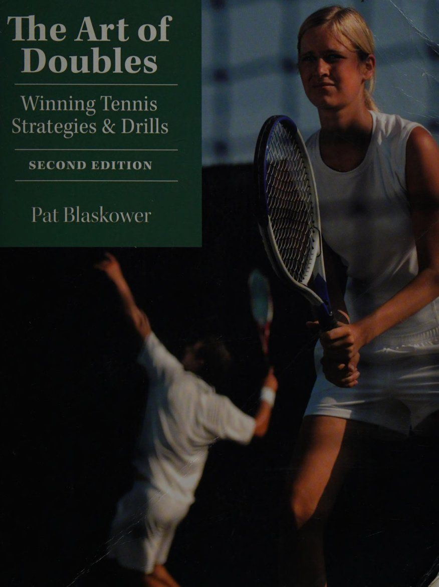
Bản dịch Việt ngữ này chỉ dùng cho mục đích học tập cá nhân, phi thương mại. Bản quyền tác phẩm gốc thuộc về tác giả và nhà xuất bản.
Mục Lục Sách
- Lời Giới Thiệu
- Điểm mấu chốt
- Chương 1: Xây Dựng và Nuôi Dưỡng Một Cặp Đôi Cân Bằng
- Đội hình trong mơ
- Kịch bản của kẻ chiến thắng
- Ai đứng ô sân nào?
- Nuôi dưỡng bản lĩnh tập thể
- Chia tay bạn cặp
- Lời hứa hão và trò “hẹn hò”
- Chương 2: Giữ Cho Kênh Giao Tiếp Luôn Rộng Mở
- Giao tiếp bắt đầu từ ngoài sân
- Chương 3: Nắm Vững Vị Trí Chuẩn Trên Sân
- Vị trí chuẩn trên sân rốt cuộc là gì?
- Vị trí tấn công
- Vị trí phòng thủ
- Danh mục kiểm tra vị trí sân
- Chương 4: Thắng Bằng Những Lựa Chọn Cú Đánh Thông Minh
- Quần vợt xác suất
- Giai đoạn mở màn
- Giai đoạn giằng co
- Nhắm đúng mục tiêu
- Bóng ngoài
- Bóng trong
- Những mục tiêu khác
- Biến lối đánh rủi ro thành lợi thế
- Biết lúc nào nên thoát khỏi cú đánh
- Bộ sưu tập vô-lê xuất sắc
- Chương 5: Rèn Kỹ Năng Cắt Lưới Cướp Điểm
- Lên kế hoạch cắt lưới
- Lý do hủy pha cắt lưới
- Chiến lược cắt lưới cướp điểm
- Đánh cú cắt lưới đi đâu
- Bạn cặp góp phần thế nào vào pha cắt lưới
- Ra tín hiệu hay không ra tín hiệu?
- Ý nghĩa các tín hiệu
- Cách ra tín hiệu
- Chương 6: Giữ Quyền Kiểm Soát Khu Vực Lưới
- Giao việc cho tay vợt kết liễu
- Đội hình Australia
- Tự động đổi bên
- Phòng thủ trước những cú lốp không phải trả giao bóng
- Những cú vô-lê xấu xí
- Vô-lê góc
- Trả giao bóng thông minh
- Lùi dần rồi khép góc
- Chương 7: Hiểu Rõ Nhiệm Vụ Của Mình Trên Sân
- Hãy coi mình đang “trong ca làm việc”
- Người giao bóng
- Bạn cặp của người giao bóng
- Chương 8: Linh Hoạt: Một Vũ Khí Mạnh Mẽ
- Linh hoạt đòi hỏi tự tin
- Tự hỏi mình vài câu then chốt
- Cách xóa lỗi tự đánh hỏng và lấy lại nhịp
- Xử lý lỗi bị ép buộc
- Đội hình giao bóng Australia
- Đội hình chữ I
- Phòng thủ trước đội hình chữ I
- Cách chống lại cú giao bóng quái vật
- Chiến thuật hiệu quả trước đối thủ bất khả xâm phạm
- Linh hoạt trước các “nữ hoàng lốp bóng”
- Chương 9: Làm Chủ Những Yếu Tố Vô Hình
- Thời gian: không bao giờ thấy đủ
- Khi nào dùng độ sâu, tốc độ hay sự tinh tế
- Rèn cú bỏ nhỏ và vô-lê xoáy ngược
- Đoán trước để không phải cuống cuồng
- Đặt bóng của chính bạn
- Biết cú đánh sở trường của đối thủ
- Tập trung vào động tác của đối thủ
- Dịch vị trí để đón cú trả bóng
- Hai quy tắc di chuyển chuẩn
- Quy tắc 1: Đưa bước nhún tách chân vào
- Quy tắc 2: Luôn di chuyển tới và xuyên qua mỗi cú đánh
- Món quà của đôi tay khéo
- Tổng hòa của các phần
- Chương 10: Rèn Luyện Bản Lĩnh Tinh Thần
- Nỗi sợ và nỗi đau của chứng “nghẹt thở”
- Cuộc trò chuyện với con khỉ
- Đánh vào bóng, đừng đánh vào người
- Neo mình vào “hiện tại”
- Tập trung vào nhiệm vụ trên sân
- Chế ngự nỗi sợ chiến thắng
- Nắm lấy thời cơ
- Nhắm thẳng yếu huyệt
- Ghi nhớ những điều cuối cùng này
- Tập cho mình sự rắn rỏi
- Thể hiện thái độ của người thắng
- Chơi để thắng
- Danh mục kiểm tra bản lĩnh tinh thần
- Chương 11: Bàn Về Thắng Và Thua
- Mười lý do phổ biến nhất khiến đội đôi thua trận
- Ba chìa khóa chiến thắng
- Chương 12: Chọn Đấu Trường Xứng Đáng Để Khoe Kỹ Năng
- Quần vợt giải đồng đội
- Quần vợt giải đấu
- Danh mục kiểm tra: giải đồng đội hay giải đấu
- Chương 13: Bài Tập Rèn Kỹ Năng
- Cân bằng cảm xúc và kỹ thuật (chương một), giao tiếp (chương hai) và bản lĩnh tinh thần (chương mười)
- Bài tập đánh đôi bóng
- Bài tập “mọi bóng đều tốt”
- Vị trí chuẩn trên sân (chương ba) và kiểm soát lưới (chương sáu)
- Bài tập giành lấy lưới
- Bài tập “nhận diện vai trò”
- Bọc lót và thực hiện cú lốp trả giao bóng
- Lựa chọn cú đánh thông minh (chương bốn)
- Đặt cú vô-lê đầu tiên của người giao bóng
- Mục tiêu chuẩn cho những cú vô-lê của tay vợt kết liễu
- Nhận ra tình huống khẩn cấp
- Kỹ năng cắt lưới thượng thừa (chương năm)
- Bài tập cắt lưới cho trình độ mới
- Bài tập cắt lưới cho trình độ trung cấp
- Nhiệm vụ trên sân (chương bảy)
- Bài tập đánh đôi bóng nâng cao
- Linh hoạt (chương tám)
- Luyện các đội hình thay thế
- Bài tập thị giác ngoại vi
- Thử nghiệm khoảng không gian thời gian
- Bài tập vô-lê không dứt
- Bài tập giao bóng vào bạn cặp
- Ghi chép tiến bộ
- Chương 14: Bài Tập Cho Trình Độ Cao Nhất
- Quản lý trận đấu và đồng hồ
- Những bài tập “Ngày Chuột Chũi”
- Vì sao bạn thua game đó?
- Biểu đồ đà trận đấu
- Những người đó là ai?
- Đội hình hai người cuối sân
- Đội hình một lên một xuống
- Những chiếc nón cam
- Đội giỏi đứng đúng đội hình ở lưới
- Tìm những dấu hiệu tiết lộ
Lời Giới Thiệu
Introduction
Tại sao một số đội đánh đôi trông giống như những người lính gỗ và những đội khác lại giống như một cặp vũ công có chuyển động dường như đồng bộ với âm thanh của âm nhạc mà chỉ họ mới có thể nghe thấy? Tất cả những thứ chạy quanh sân – họ sẽ đi đâu? Làm sao họ biết mình đang ở đâu?
INTRODUCTION Why do some doubles teams look like wooden soldiers and others like a pair of dancers whose movements seem synchronized to the sound of music only they can hear? All that running around on the court—where are they going? How do they know where to be?
Về cơ bản, có ba loại đội đôi: những người khiến mọi việc xảy ra, những người theo dõi những gì xảy ra và những người tự hỏi chuyện quái gì đã xảy ra. Bạn đã bao giờ thi đấu với một đội đánh đôi không có vẻ đặc biệt hào nhoáng, đội có khả năng thực hiện cú đánh có vẻ kém hơn đội của bạn, đội không giao bóng quân Át nào hoặc không giành được nhiều điểm thắng, nhưng khi trận đấu kết thúc, lại không để bạn thắng được mấy điểm, đặc biệt là điểm cuối cùng? Đánh đôi không phải là về những cú thuận tay, cú giao bóng ăn điểm hay những cú ghi điểm làm cả sân kinh ngạc. Đây là một trò chơi tinh tế về sự duyên dáng, vị trí bóng và chuyển động, mà các bậc thầy thường khiến người khác cảm thấy ngu ngốc hoặc đơn giản là dụ họ đánh bại chính mình.
There are, essentially, three kinds of doubles teams: those who make things happen, those who watch what happens, and those who wonder what the hell happened. Did you ever play against a doubles team that didn't seem to be particularly flashy, whose stroke production seemed inferior to yours, who didn’t serve any aces or make many winners, and yet when it was all over, hadn't allowed you to win very many points, particularly the last one? Doubles isn’t about big forehands and aces and crowd-stunning winners. It is a subtle game of grace, ball placement, and movement, whose masters often make others feel foolish or simply tempt them to beat themselves.
Người chơi kiểu “theo dõi những gì xảy ra” có nhiều loại. Có giống “Tôi chẳng cần vị trí trên sân, vì tôi có thể khoét một lỗ ngay trên rốn anh!” Rồi đến bộ tộc “Cứ lên lưới thỏa thích đi, đồ ngốc, vì tôi chỉ việc lốp bóng qua đầu anh rồi đứng xem anh chạy đuổi.” Và cuối cùng, với lòng kiên nhẫn xứng với tính khí vui vẻ đặc trưng của bộ tộc này, là những tay vợt cứ đưa mọi quả bóng trở lại cuộc chơi. Họ ngồi chờ một cách mãn nguyện cho đến khi bạn mất kiên nhẫn, mất kiểm soát và đánh quả bóng dễ dàng ấy thẳng vào hàng rào; họ đứng nhìn, thở hổn hển và mỉm cười đắc thắng, trong khi bạn đập tan cây vợt than chì hai trăm đô la của mình vào cột lưới.
Players who watch what happens come in many varieties. There's the “I don't need court position because I can make a hole in your navel!” species. Then theres the “Come to the net all you want, sucker, because I'll just lob you and watch you chase it” tribe. And finally, with patience to match the sunny disposition the tribe is noted for, there are the players who will just get every ball back into play. They wait, contentedly, for you to finally lose patience and control and hit the fence with your easy putaway, and they watch, panting and smiling with victory, as you explode your two-hundred-dollar graphite racket into the net post.
Những người chơi thắc mắc chuyện quái gì đã xảy ra cũng có nhiều loại, không loại nào nổi tiếng về năng lực chiến thuật hoặc chiến lược. Một số là những vận động viên ném biên sùng đạo, cam kết với lý thuyết rằng đánh đôi cũng giống như đánh đơn mà không có nhiều sân để che chắn. Những người khác không tin vào bí ẩn của sự nhân đôi và có xu hướng chê bai những điều họ không hiểu và không đủ tò mò hay can đảm để tìm hiểu. Đây là những tay vợt mà bạn đã nghe nói,
Players who wonder what the hell happened also come in several varieties, none of which is famous for tactical or strategic prowess. Some are devout baseliners, committed to the theory that doubles is just like singles without as much court to cover. Others distrust the mystery of doubles and tend to disparage those things that they do not understand and are not curious or courageous enough to learn. These are the players whom you have heard say, “I can’t think and play at the same time.
"Tôi không thể suy nghĩ và chơi cùng một lúc. Tôi chỉ đánh bóng thôi" Được dịch tự do, điều này có nghĩa là, "Bạn có thể lấp đầy đầu mình bằng những chiến lược ưa thích nếu bạn muốn, nhưng nếu tôi đánh bóng đủ mạnh vào bạn, bạn có thể sẽ trượt, vậy tại sao tôi lại cần tất cả những bài học chiến lược đắt giá đó?" Những người chơi này hiếm khi nhận ra hoặc thừa nhận những kỹ năng vượt trội trên lưới, thường đổ lỗi cho những trận thua của họ là do điều kiện gió ở phía lưới của họ, bóng tối trên sân, ánh sáng kém, bánh tamale cho bữa trưa, vợt mới, quá cũ hoặc không bị hỏng, hoặc cơ kéo luôn hữu ích.
I just hit the ball” Freely translated, this means, “You can fill your head with fancy strategy all you want, but if I hit the ball hard enough at you, you'll probably miss, so why do I need all those expensive strategy lessons? These players seldom recognize or ac- knowledge superior skills across the net, generally chalking up their losses to the windy conditions on their side of the net, the shadows across the court, poor lighting, tamale pie for lunch, a new, too old or not-broken-in racquet, or the always useful pulled muscle.
Những người chơi chuyện quái gì đã xảy ra mang đến sự ngây thơ của thế giới đánh đôi, và chính những loài này mà tôi gán cho những loài này có lẽ là mười tuyên bố sai lầm nhất về chơi đôi.
The what-the-hell-happened players provide the naiveté of the doubles world, and it is to these species that I attribute what are probably the ten most misguided statements about doubles play.
1. Tay vợt có cú thuận tay ở giữa luôn lấy bóng ở giữa.
1. 2. 10. The player whose forehand is in the center always takes the center ball.
2. Khi đối tác của tôi đang giao bóng, anh ấy lốp bóng qua đầu tôi và tôi tạt bóng
When my partner is serving, he takes the lob over my head, and I cross but remain at the net.
Tôi không bao giờ cắt lưới cướp điểm trên lưới vì tôi sẽ cản đường đối tác của mình.
I never poach at the net because I'll get in my partner's way.
Tốt hơn là để anh ấy cầm bóng.
Better to let him take the ball.
Tôi chưa bao giờ lên lưới trong lần giao bóng thứ hai.
I never come to the net on my second serve.
Quần vợt giao bóng và vô-lê chẳng có ý nghĩa gì vì bạn chỉ thích chơi ô sân Deuce vì cú thuận tay của tôi quá tốt
There is no point to serve-and-volley tennis because you jus get lobbed all the time. [like to play the deuce court because my forehand is so good (right-handed misguided statement).
(lời nói sai lầm thuận tay phải).
When my partner is pulled wide, I must follow him, maintaining our No More Than Ten Feet Apart Axiom.
Khi đối tác của tôi bị kéo ra xa, tôi phải đi theo anh ta, duy trì Tiên đề Không quá Mười feet của chúng tôi.
I like to hit deep service returns.
Tôi muốn đạt được cú trả giao bóng sâu.
The best way to win a point at the net is to hit right at an opponent.
Cách tốt nhất để giành điểm trên lưới là đánh ngay vào đối thủ.
If our team is getting lobbed, I just stay back and leave my partner at the net.
10. Nếu đội của chúng tôi bị lốp bóng, tôi chỉ cần lùi lại và để đồng đội của mình ở trên lưới. Cả loại đội đánh đôi, không phải những người theo dõi những gì xảy ra cũng như những người thắc mắc chuyện quái gì đã xảy ra, đều không sở hữu đủ vũ khí để làm phiền đội có kỹ năng cao, những người có vị trí sân cao hơn và lựa chọn bắn kết hợp để đưa những kẻ giả vờ lên ngôi khá nhanh chóng. Tuy nhiên, các đội trẻ và thiếu kinh nghiệm thường rất thất vọng khi cố gắng đánh bại những tay vợt có trình độ kỹ năng, vị trí trên sân và chiến thuật mà họ cho là kém hơn mình. Sự chênh lệch giữa thành công mong đợi trong tương lai và thất bại cay đắng ngắn hạn là lý do chính khiến các đội trẻ đang lên vỡ mộng và cuối cùng từ bỏ nhiệm vụ. Với tư cách là một huấn luyện viên, tôi cử các đội chưa quen và háo hức ra sân thi đấu mỗi ngày, chỉ để rồi phải trở về với tư thế cụp đuôi vì bị đóng đinh bởi những “nữ hoàng lốp bóng” đáng sợ. Điều quan trọng đối với những tay vợt khao khát trở thành chuyên gia đánh đôi giỏi là phải hiểu rằng cần có thời gian để xây dựng kiến thức chuyên môn và tinh thần đồng đội cần thiết để thành công. Phải mất nhiều thời gian hơn để phát triển một cú vô lê tuyệt vời, một cú đánh đầu xuyên thấu, dự đoán tốt và cảm nhận về vị trí sân và lựa chọn cú đánh của đối tác hơn là học cách đánh một cú đánh đàng hoàng. cú lốp bóng và động lực tốt từ vạch cuối sân Nếu bạn và đối tác của mình cam kết dành thời gian cần thiết để trở thành một đội hoàn hảo, bạn sẽ phát hiện ra rằng bằng cách biến mọi thứ thành hiện thực, bạn có thể tiếp tục tiến bộ miễn là bạn chơi trò chơi và “người theo dõi” và “người kỳ diệu” mãi mãi bị mắc kẹt với một cỗ bài không có con át.
Neither category of doubles team, not those who watch what happens nor those who wonder what the hell happened, possesses sufficient weapons to bother the highly skilled team, whose superior court position and shot selection combine to dispatch the pretenders-to-the-doubles-throne rath- er quickly. However, young and inexperienced teams are often very frus- trated in their attempts to beat players whose skill levels, court position, and tactics they recognize as inferior to their own. This disparity between the longed-for success in the future and the short-term bitter setback is a prime reason rising young teams become disillusioned and ultimately abandon the quest. As a coach, I send uninitiated and eager teams out to play matches every day, only to have them return with their tails between their legs because they were crucified by the dreaded “lob queens. It is vi- tal for players who aspire to be great doubles specialists to understand that it takes time to build the expertise and teamwork necessary for success. It takes far longer to develop a great volley, a penetrating overhead, good anticipation, and a feel for your partner's court position and shot selection than it does to learn to hit a decent lob and a good drive from the baseline.
Có những yếu tố chung của tất cả các đội thực sự khiến mọi việc trở nên có lợi cho họ trên sân quần vợt. Hết lần này đến lần khác, rõ ràng là tất cả các đội đánh đôi xuất sắc dường như đều làm những việc giống nhau theo những cách rất giống nhau. Không dễ để định lượng tính nghệ thuật, nhưng sự kết hợp đặc biệt giữa các yếu tố vốn có trong màn trình diễn của các đội đôi xuất sắc có sức mạnh khiến cả “người xem” và “người ngạc nhiên” không bỏ lỡ một bước nào và tạo ra sân khấu tuyệt vời cho khán giả.
If you and your partner commit the time necessary to become an accom- plished team, you will discover that by making things happen, you can con- tinue to improve as long as you play the game and that the “watchers” and “wonderers’ are forever stuck with a deck of cards that has no aces. There are elements in common to all teams that truly make things happen to their advantage on the tennis court. Time and again, it becomes apparent that all great doubles teams appear to do the same things in very similar ways.
Thường thì những người chơi này không có khả năng tạo cú đánh vượt trội. Tốc độ giao bóng một trăm dặm một giờ không phải là yêu cầu khắt khe đối với một tay vợt đánh đôi hiệu quả. Khả năng bật cao qua hàng rào phía sau là không cần thiết. Hơn nữa, cuốn sách này liệt kê các kỹ năng kỹ thuật bạn cần để đạt được sự thành thạo và liệt kê những kỹ năng bạn không cần chút nào. Việc nắm vững các kỹ năng chơi đôi chủ yếu là về vị trí trên sân và chuyển động duyên dáng cũng như sự hiểu biết thông minh về những yếu tố vô hình có thể không rõ ràng từ bên lề nhưng kết hợp lại để duy trì tỷ lệ chiến thắng của một đội đánh đôi xuất sắc luôn ở mức cao. Đó là về mười hai yếu tố chung được thể hiện trong tất cả các mối quan hệ hợp tác thành công đôi: Cân bằng cảm xúc và kỹ thuật Giao tiếp
It is not easy to quantify artistry, but that particular combination of elements inherent in the performances of distinguished doubles teams has the power to dispatch both the “watchers” and “wonderers’ without missing a step and to create marvelous theater for the spectator. Often these players do not possess superior stroke production. A one- hundred-mile-per-hour serve is not a strict requirement for an effective doubles player. The ability to bounce an overhead over the back fence is not essential. Further, this book enumerates the technical skills you need to achieve mastery and lists those that you don't need at all.
Lựa chọn cú đánh thông minh
Mastering the INTRODUCTION
Tìm hiểu các công việc khác nhau trên sân
skills of doubles play is primarily about court position and graceful movement and the intelligent understanding of those intangible factors that may not be obvious from the sidelines, but which combine to keep a great doubles team’s winning percentage consistently high.
Làm chủ những yếu tố vô hình
It is about these twelve ele- ments displayed in common by all successful doubles partnerships: Emotional and technical balance Communication Proper court position Intelligent shot selection Superior poaching skills Control of the net Understanding the different jobs on the court Flexibility Command of the intangibles Mental toughness OF, Fe Pe ee ee Knowledge of what it takes to win and what causes teams to lose — S Choosing the appropriate venue to showcase the teams talents
Kiến thức về điều gì cần để giành chiến thắng và điều gì khiến các đội thua trận
The Key Throughout this book, there are diagrams that help demonstrate the im- portant points made and the skills that need to be learned.
Lựa chọn địa điểm thích hợp để các đội thể hiện tài năng
In order to un- derstand how the diagrams are labeled, the below key has been provided.
Điểm mấu chốt
Xuyên suốt cuốn sách này, có những sơ đồ giúp minh họa những điểm quan trọng đã nêu và những kỹ năng cần học. Để hiểu cách các sơ đồ được gắn nhãn, khóa dưới đây đã được cung cấp.
INTRODUCTION
Chương 1. Xây Dựng và Nuôi Dưỡng Một Cặp Đôi Cân Bằng
Creating and Nurturing a Balanced Doubles Team
Trí tưởng tượng bộc lộ ở sự cân bằng hoặc dung hòa của những phẩm chất đối lập hoặc bất hòa; giống nhau, có khác biệt.
— Samuel Taylor Coleridge
Chọn đúng người để chia sẻ cuộc sống quần vợt của mình không phải là chuyện nhỏ. Nếu bạn có khát vọng giành được danh hiệu đôi quốc gia, dù ở giải Mỹ mở rộng hay ở tuổi 45 trong giải vô địch dành cho người cao tuổi, thì đó thực sự là một công việc rất nghiêm túc. Ngay cả khi mục tiêu của bạn không xa hơn việc thi đấu ở giải đấu địa phương, quyết định vẫn cần được cân nhắc cẩn thận hơn là “Này, bạn có muốn chơi không?”
] Creating and Nurturing a Balanced Doubles Team Imagination reveals itself in the balance or reconciliation of opposite or discordant qualities; of sameness, with difference. Samuel Taylor Coleridge Picking the right person to share your tennis life is no small matter. If you have aspirations to win national doubles titles, whether in the U.S.
Đội hình trong mơ
Phiên bản “đội bóng trong mơ” của riêng bạn không chỉ nên xem xét điểm mạnh và điểm yếu của bạn với tư cách là một người chơi mà còn cả khả năng bổ sung kiến thức chuyên môn của đối tác tiềm năng.
Open or as a forty-five year old in a seniors championship, it is very serious business indeed.
Khi Billy Talbert và Bruce Old viết Trò chơi đánh đôi trong quần vợt (xuất bản năm 1956, được nhiều người coi là cuốn sách hay nhất về chiến lược đánh đôi từng được viết), họ đã chọn George M. Lott, Jr., John E. Bromwich, J. Donald Budge và Jack Kramer là những tay vợt đánh đôi giỏi nhất thế giới và tiến hành hỏi từng người trong số họ rằng anh ta sẽ tìm kiếm điều gì ở một đối tác quần vợt hoàn hảo. Câu trả lời của họ vẫn phù hợp với trò chơi ngày nay cũng như hơn 50 năm trước:
Even if your goals extend no further than local league play, the deci- sion should be weighed more carefully than, “Hey, you wanna play? THE DREAM TEAM Your own version of “the dream team” should take into consideration not only your strengths and weaknesses as a player, but also your ability to complement a potential partner’s expertise. When Billy Talbert and Bruce Old wrote The Game of Doubles in Ten- nis (published in 1956, it is regarded by many as the best book on doubles strategy ever written), they chose George M. Lott, Jr., John E. Bromwich, J.
Để chọn được một tay vợt đánh đôi hoàn hảo hoặc trong mơ, tất nhiên có rất nhiều điều cần tìm kiếm. Tuy nhiên, sau khi suy nghĩ kỹ, đây là những yêu cầu mà tôi thích hơn. Không cần phải nói rằng người chơi này phải sở hữu tất cả các cú đánh cơ bản và có thể xuất sắc trong một số cú đánh. Anh ấy sẽ quên tất cả việc cố gắng giao bóng Át ngoại trừ những trường hợp hiếm hoi, và tập trung vào việc thực hiện quả giao bóng đầu tiên của mình một cách nhất quán nhất có thể. Anh ấy luôn thực hiện những cú vô lê của mình sâu và xuống trung lộ, chỉ sử dụng các hành lang biên khi chúng rộng mở, nhưng thậm chí sau đó anh ấy còn ghét bản thân mình khi làm như vậy. (Tuy nhiên, thời điểm thực hiện những cú vô lê sâu sẽ không hợp lý nếu bốn tay vợt ở trong lưới; khi đó một cú đánh ngắn hoặc tầm thấp vào chân đối phương là câu trả lời...) Anh ta phải có khả năng chơi phòng thủ cũng như tấn công. Và anh ấy nên có kiểu tính cách khuyến khích nói chuyện trong trận đấu: đối với tôi không có gì tệ hơn việc có một đối tác đánh đôi không “nói chuyện”. Luôn có những lúc mọi thứ không diễn ra suôn sẻ trong hầu hết mọi trận đấu và nếu bạn có thể nói về những điều này với đối tác của mình một cách trung thực, bạn thường có thể tránh được chúng.
Donald Budge, and Jack Kramer as the best doubles players in the world and proceeded to ask each of them what he would look for in a perfect ten- nis partner. Their answers are as relevant to the game today as they were more than fifty years ago: To choose the perfect, or dream doubles player, there are, of course, many things to look for. However, after giving it much thought, these are the require- ments that I would prefer. It goes without saying that this player must possess all of the basic shots, and perhaps excel in a few. He would forget all about trying to serve aces except for rare occasions, and concentrate on getting his Jirst serve in as consistently as possible. He would at all times play his volleys deep and down the middle, using the alleys only when they were wide open, but even then hating himself whilst doing so. (However, the time deep volleys wouldnt be logical would be if the four players were in at the net; then a short or low shot at the opponent's feet is the answer ...) He should be able to play defensively as well as offensively.
Với tư cách là người chơi đánh đôi ở sân đầu tiên [Mr. Bromwich đang đề cập đến ô sân Deuce], tôi cảm thấy rằng để đạt được thành công, điều cần thiết nhất là người chơi phải hiểu giá trị của quả giao bóng mà anh ta phải thực hiện với sự nhất quán thường xuyên. Việc quay trở lại giao bóng là rất quan trọng và khả năng đánh giá cao sức mạnh của đối thủ trước những kết quả khác nhau là điều cần thiết. Đấu thủ ở sân đầu tiên phải cố gắng giành được điểm đầu tiên của mỗi lần giao bóng, tạo điều kiện cho đồng đội của mình cố gắng giành lợi thế về nhà và do đó tạo ra sự đột phá. Anh ta nên hài lòng với việc tìm kiếm cơ hội, nhất quán với sự trở lại này và sẵn sàng từ bỏ lối chơi ngoạn mục vì lợi ích tốt nhất của việc phát triển tinh thần đồng đội và sự hiểu biết với đối tác của mình.
And he should have the type of personal- ity that encourages talk during a match: there is nothing worse to me than having a doubles partner that won‘ “talk it up. There are always times when things arent going well in almost any match, and if you can talk about these with your partner in an honest way, you can usually circumvent them. —J. Donald Budge As a first court doubles player [Mr. Bromwich is referring to the deuce court], I feel that to achieve success it is most essential for the player to understand the value of service returns which he must make with regular consistency. Returning- of-service is so important, and ability to appreciate the strength of your oppo- nents against varying returns is essential.
Khi nhận xét về trình độ của một tay vợt đánh đôi lý tưởng, tôi muốn nhấn mạnh một yếu tố thường bị bỏ qua.... Tôi muốn nhấn mạnh sự mong đợi.... Điều khác biệt giữa những người chơi đánh đôi xuất sắc với những người chơi đánh đôi gần như tuyệt vời là khả năng kỳ lạ để đoán trước hành động của đối thủ. Có bốn phần để dự đoán... cách thực hiện cú đánh của riêng bạn và biết những gì cần tìm kiếm... tìm hiểu các chuyển động thuận lợi trong quá trình thực hiện cú đánh... tập trung vào chuyển động của đối thủ khi anh ta đang thực hiện hành động đánh bóng... bạn và đồng đội của bạn chuyển đổi vị trí để đáp ứng cú trả bóng đã được dự đoán trước. Vâng thưa ông, hãy cho tôi một đối tác có “cảm giác” mong đợi và anh ấy sẽ có một bước tiến dài để trở thành tay vợt đánh đôi trong mơ.
The player in the first court should endeavor to win the first point of each service, enabling his partner to try to force home the advantage and thus effect a breakthrough. He should be con- tent to work for openings, be consistent with this return and prepared to for- sake spectacular play in the best interests of developing teamwork and under- standing with his partner. —John E. Bromwich In commenting on the qualifications for the ideal doubles player, I would like to emphasize a factor which is all too often overlooked. ... I want to stress antici- pation. ... The thing that separates the great from the near-great doubles play- ers is the uncanny ability to anticipate the actions of their opponents. There are four parts to anticipation ... placing your own shot and knowing what to look for ... learning the give-away motions of stroke production ... concentrat- ing on the motions of the opponent as he is in the act of striking the ball... you and your partner shifting positions to meet the by-now well-anticipated return. Yes sir, give me a partner with the “feel” of anticipation and he will have made a long stride toward being the dream doubles player. —Jack Kramer As we know, doubles is mainly a matter of getting a service break, and then hanging on for dear life.
Như chúng ta đã biết, đánh đôi chủ yếu là chuyện giành được một break giao bóng, rồi bám trụ bằng cả tính mạng. Vì vậy, chúng ta buộc phải nghĩ ra đủ cách để có được break giao bóng ấy. Tất nhiên, một cách là dùng sức mạnh thuần túy, nhưng rất ít người trong chúng ta làm được điều đó, nên phải trông vào sự khôn khéo và tinh quái. Tôi cho rằng, giống như một tay ném bóng chày tung ra bóng nhanh, bóng cong và bóng đổi nhịp với cùng một động tác, tay vợt đánh đôi cần học cách thực hiện cú đánh thuận tay, cú lốp và một cú đánh nhẹ nhàng đầy khiêu khích… với cùng một động tác.
Therefore, it behooves us to devise ways and means to obtain that service break. One way, of course, is through sheer power, but so few of us are able to do that that it is necessary to rely on cunning and clever- ness. I suggest that, like a baseball pitcher who throws his fastball, curve, and change-of-pace ball all with the same motion, the doubles player learn to make a forehand drive, a lob, and a soft, tantalizing shot ...with the same motion. —George M. Lott, Jr.
Không một chuyên gia nào trong số này tìm kiếm mẫu tay đập mạnh thích làm tâm điểm, kiểu người thích đánh xuyên qua rốn đối thủ. Ai cũng nhấn mạnh trí thông minh, sự kiên nhẫn, giao tiếp, tinh thần đồng đội và khả năng chọn cú đánh đầy nghệ thuật — những kỹ năng mà bất cứ ai quyết tâm trở thành người thắng cuộc đều có thể học được.
Not one of these experts is seeking the spotlight-grabbing power hitter who likes to hit through his opponents’ navels. Each stresses intelligence, pa- tience, communication, teamwork, and artistic shot selection—skills that anyone with a commitment to becoming a winner can acquire.
Người thắng ghét thua cuộc; Kẻ thua cuộc ghét chiến thắng
Winners Hate Losing; Losers Hate Winning A winner makes commitments.
Người chiến thắng đưa ra cam kết. Kẻ thua cuộc hay hứa hẹn. Người chiến thắng nói: “Tôi giỏi, nhưng không giỏi như tôi muốn”. Người thua cuộc nói: “Tôi không tệ như nhiều người khác”. Một người chiến thắng lắng nghe. Kẻ thua cuộc chỉ chờ đến lượt mình nói.
A loser makes promises. A winner says, “I'm good, but not as good as I want to be. A loser says, “I'm not as bad as a lot of other people. A winner listens. A loser just waits until it’s his turn to talk. —Anonymous If it were really true that it’s not whether you win or lose that matters, but only how kindly you play the game, then the rules of tennis would not have included keeping score.
Nếu thực sự đúng rằng vấn đề không phải là bạn thắng hay thua mà quan trọng là bạn chơi trận đấu tử tế như thế nào, thì luật quần vợt sẽ không bao gồm việc tính điểm. Suy cho cùng, trò chơi là một cuộc cạnh tranh được thiết kế để tạo ra người chiến thắng. Khi tìm kiếm đối tác, hãy nhớ rằng người chiến thắng ghét thất bại và kẻ thua cuộc không thể chịu được chiến thắng. Những kẻ thua cuộc sẽ tìm cách thất bại trong mọi trận đấu sát nút mà bạn chơi, lấp đầy không khí bằng những lời bào chữa cho mỗi lần bắn trượt trên đường đi. Tất cả chúng ta đều bị bóp cổ và mắc sai lầm, nhưng kẻ thua cuộc thực sự lại đầu tư cảm xúc vào việc liên tục thất bại và lo sợ thành công. Hết thua này đến thua khác trở thành một chiếc ghế rất thoải mái, và khả năng thắng sẽ làm xáo trộn hiện trạng. Đây là những tay vợt nói với đồng đội của mình, "Tôi tệ quá. Tôi không thể đánh bóng được," hoặc "Những người bên kia lưới quá giỏi. Có lẽ chúng ta sẽ được một vài điểm nếu họ phạm lỗi kép". Thái độ này khiến đồng đội nản lòng và khó có khả năng thay đổi nếu không nghiêm túc suy xét tâm hồn. Tốt hơn là hãy chắc chắn rằng bạn chọn được người chiến thắng - tốt nhất là người chiến thắng cao lớn, nhanh nhẹn và xảo quyệt.
The game is, after all, a competition designed to produce a victor. When shopping for a partner, bear in mind that winners hate losing and losers can’t stand winning. Losers will find a way to fail in every close match you play, filling the air with excuses for every missed shot along the way. We all choke points and make mistakes, but a real loser has an emotional investment in continued failure and fears being successful. Loss after loss becomes a very comfortable easy chair, and the possibility of a win disturbs the status quo. These are the players who say to their part- ners, “I’m so bad. I just can't hit a ball,” or “Those guys across the net are just too good. Maybe we'll get a few points if they double fault’ This kind of attitude is just too discouraging for a partner and not likely to change with- out some serious soul-searching. Better to make sure you pick a winner— preferably a tall, fast, and crafty winner. Scenario for a Winner Once you've canvassed the field and have your eye on a few winners, look for someone in this group who complements you emotionally. If you tend to rush through matches, sometimes even holding your breath during points, don't pick someone who is in as mad a rush as you are.
Kịch bản của kẻ chiến thắng
Sau khi bạn đã khảo sát lĩnh vực này và để mắt đến một vài người chiến thắng, hãy tìm ai đó trong nhóm này có thể bổ sung cho bạn về mặt cảm xúc. Nếu bạn có xu hướng vội vã trong các trận đấu, đôi khi thậm chí nín thở khi tính điểm, đừng chọn một người đang vội vã như bạn. Trò chơi của bạn sẽ trông giống như một hình ảnh tua đi nhanh. Các bạn sẽ không bao giờ đạt được sự cân bằng trong tư cách một đội và có thể sẽ khiến nhau kiệt sức trước khi hiệp đầu tiên kết thúc. Hãy chọn người có đồng hồ bên trong chạy chậm hơn bạn một chút và người có thể khiến bạn tạm dừng và thỉnh thoảng hít một hơi thật sâu. Ngược lại, nếu bạn là người cần cù, thích suy nghĩ chậm rãi và cẩn thận, hãy chọn người có thể điều chỉnh động cơ của bạn một chút và giúp bạn tăng nhịp độ của trận đấu.
Your play will look like a fast-forward image. You will never gain balance as a team and will probably wear each other out before the first set is over. Choose someone whose internal clock runs a little more slowly than yours and who can get you to pause and take an occasional deep breath. Conversely, if you are a plodder who prefers to think slowly and carefully, pick someone who can rev your motor a little and help you turn up the tempo of a match. Emotional balance may not seem so vital, but it is critical to the rhythm of your teamwork. During a match, the time you spend not hitting a ball—the between-points time—far exceeds the time you actually spend playing a
Cân bằng cảm xúc có vẻ không quá quan trọng nhưng nó rất quan trọng đối với nhịp điệu làm việc nhóm của bạn. Trong một trận đấu, thời gian bạn không đánh bóng—thời gian giữa các điểm—vượt xa thời gian bạn thực sự dành để chơi một điểm. Những gì một đội làm trong thời gian giữa các điểm thường sẽ quyết định liệu đội đó có thể duy trì động lực trong trận đấu hay không và liệu đội đó có thể lấy đà từ đối phương khi họ đang ngủ trưa hay không. Ngoài ra, đội nào quản lý thời gian tạm dừng này tốt hơn, sử dụng nó để thay đổi chiến lược, đề xuất cách chơi hoặc khuyến khích lẫn nhau, hầu như sẽ luôn là đội chiến thắng trong một trận đấu chặt chẽ. Nếu bạn và đối tác vừa thua một ván giao bóng bắt buộc, bạn cũng đã mất đà, Một đội đánh đôi gồm hai kiểu tiến nhanh khó có khả năng bị chậm lại trong ván tiếp theo và có lẽ không có khả năng thực hiện cẩn thận cần thiết để lấy lại đà. Đây là những tay vợt sẽ cố gắng “nhanh chóng bắt kịp” và có thể sẽ mắc quá nhiều lỗi không đáng có. Trận đấu có thể tuột khỏi tay họ khi họ đang nhộn nhịp khắp sân. Mặt khác, hai người cần cù có khả năng sẽ nghiền ngẫm và hờn dỗi về ván giao bóng bị thua, do đó khiến đối phương phấn khích bằng hành vi ủ rũ của họ đến mức động lực hoàn toàn nằm trong tay đối thủ đến mức trận đấu không thể cứu vãn được.
point. What a team does during the between-points time will often determine whether it can maintain momentum within a match, and whether it can steal momentum from the opposition while they are napping. In addition, the team that manages this down time better, using it to change strategy, suggest a play, or give added encouragement to one another, will almost always be the victor in a tight match. If you and your partner have just lost a must service game, you have also lost momentum, A doubles team of two fast-forward types is not likely to slow down in the next game and is prob- ably not capable of the careful execution needed to wrest momentum back. These are the players who will try to “hurry up to catch up” and will likely make far too many unforced errors. The match may slip through their hands while they are bustling around the court. On the other hand, two plodders are likely to brood and sulk over the lost service game, thereby elating the opposition by their sullen behavior to the point that momentum is so entirely in the opponents’ hands that the match cannot be saved. WHO PLAYS WHICH COURT?
Ai đứng ô sân nào?
Sau khi đã chọn được người chiến thắng cao lớn, nhanh nhẹn và thông minh, người sẽ bổ sung cho cảm xúc của bạn, bạn phải quyết định xem ai sẽ chơi bên nào của sân.
Having chosen a tall, fast, and smart winner who complements your emo- tional makeup, you must decide who should play which side of the court.
Hầu hết các tay vợt đánh đôi giỏi đều giao bóng ở trung lộ ít nhất 80% thời gian. Nếu cả bạn và đối tác của bạn đều thuận tay phải, hãy cân nhắc việc thực hiện cú trả giao bóng trái tay mạnh hơn và/hoặc cú vô lê trái tay ở ô sân Deuce (phải) và cú trả giao bóng thuận tay mạnh hơn và/hoặc cú vô lê thuận tay ở ô sân Ad (trái). Nếu đối tác của bạn là người thuận tay trái, hãy xem xét tính hiệu quả của anh ta trong ô sân Ad. Hầu hết những người thuận tay trái đều có một khả năng kỳ lạ là bước vòng qua một quả giao bóng và thực hiện một cú thuận tay xoáy lên rơi vào giày của người giao bóng đang lao tới ở một góc ngắn, cực kỳ sắc bén. Những người thuận tay trái dường như làm điều này một cách tự nhiên theo cách mà hầu hết những người thuận tay phải không bao giờ có thể hy vọng làm được. Nếu đối tác của bạn là người thuận tay trái, bạn có thể muốn anh ta vào ô sân Ad chỉ vì sự trả thù dịch vụ độc ác này.
Most good doubles players serve down the middle at least 80 percent of the time. If both you and your partner are right-handed, consider put- ting the stronger backhand service return, and/or backhand volley, in the deuce (right) court and the stronger forehand service return, and/or fore- hand volley, in the ad (left) court. If your partner is a lefty, contemplate his effectiveness in the ad court. Most lefties have an uncanny ability to step around a serve and execute a topspin forehand that drops on an onrush- ing server's shoes at a viciously sharp, short angle. Lefties seem to do this naturally in a way most right-handers can never hope to duplicate. If your partner is a left-hander, you might want him in the ad court simply for this wicked service return.
Ở đội thuận tay phải, người chơi trong ô sân Ad sẽ chịu phần lớn chi phí chung. Hãy chắc chắn rằng người chơi đó hoàn thành nhiệm vụ. Nếu bạn có lợi thế trong ô sân Ad vì pha trả giao bóng tàn khốc đó, thì cú lốp bóng ở giữa là một vấn đề và yêu cầu cả hai tay vợt phải thực hiện một số động tác bằng chân đẹp mắt để đảm bảo rằng bóng có thể được chơi như một cú đập trên đầu. Nếu đối tác thuận tay trái của bạn ở ô sân Deuce và bạn, người thuận tay phải, ở ô sân Ad, thì đó có thể là một pha va chạm vợt tự do cho tất cả mọi người trên lốp bóng trừ khi khả năng giao tiếp của bạn quá xuất sắc.
On aright-handed team, the player in the ad court will take most of the overheads. Make sure that player is up to the task. If you have a lefty in the ad court for that devastating service return, the lob down the middle is a problem and requires some fancy footwork by both players to assure that the ball can be played as an overhead. If your lefty partner is in the deuce court and you, a right-hander, are in the ad court, it could be a racquet-clashing free-for-all on the lob unless your communication is superb.
Cuối cùng, mỗi đội nên có một "người lập công" và một "người tấn công? Thông thường, mặc dù đây không phải là một quy tắc khó và nhanh, nhưng"người lập công; như John Bromwich đã ám chỉ trong nhận xét của anh ấy về "người chơi ở sân đầu tiên; chơi ở ô sân Deuce và phải phù hợp cả về mặt tâm lý và kỹ thuật với vai trò. Người chơi này nên hài lòng với việc thiết lập điểm và cho phép người chơi ở ô sân Ad giành được vinh quang. Sự ổn định và đáng tin cậy, tỷ lệ quần vợt (xem trang 46 để thảo luận về tỷ lệ quần vợt) và nhiều "vani đơn giản" phải là sở trường của người này. Các kỹ năng của người lập công cũng sẽ cho phép sử dụng rộng rãi cú lốp bóng tấn công để trả giao bóng (vì bóng đi qua trái tay của đối thủ thuận tay phải và thường tạo ra một cú lốp bóng yếu có thể được xử lý như một cú đập từ trên cao bởi một người đánh thuận tay phải ở vị trí ô sân Ad).
Finally, every team should have a “setter” and a “hitter? Often, though this is not a hard-and-fast rule, the “setter; as alluded to by John Bromwich in his comments about the “first court player; plays the deuce court and should be both psychologically and technically suited to the role. This player should be content to set the point up and allow the ad court player to claim the glory. Steadiness and dependability, percentage tennis (see page 46 for a discus- sion of percentage tennis), and much “plain vanilla” should be this person's forte. The setter’s skills should also allow extensive use of the offensive lob as service return (because the ball carries over the backhand of a right-hander’s opponent and often produces a weak lob that can be handled as an overhead smash by a right-handed hitter positioned in the ad court).
“Người đánh” phải là thành viên trong nhóm có tính cách giống người chấp nhận rủi ro hơn và có kỹ năng kỹ thuật bao gồm khả năng đánh trúng đích và tỷ lệ trả giao bóng thấp. Người chơi này thường được bố trí ở ô sân Ad vì điểm số luôn không đồng đều khi anh ta trả giao bóng. Người chơi ở ô sân Ad nhận giao bóng ở mọi “điểm break” (ngoại trừ điểm 15-40) và khi bắt đầu mỗi lượt giao bóng trong hiệp đấu tiebreak. Ở những thời điểm quan trọng nhất định của trận đấu, anh phải dũng cảm đi tìm người chiến thắng chứ không nên dựa vào đối thủ để mắc lỗi.
The “hitter” should be the team member whose personality is more that of arisk-taker and whose technical skills include the ability to hit clean win- ners and low percentage returns of serve. This player is generally positioned in the ad court because the score is always uneven when he is returning serve. The ad court player receives serve at every “break point” (except the 15-40 point) and at the beginning of every service rotation in a tiebreak. At certain critical points in the match, he must have the courage to go for the winner rather than rely on his opponent to make an error.
Không phải tất cả các yếu tố dẫn đến việc phân công sân đều thuộc về khía cạnh đúng đắn của vấn đề. Bạn có thể sở hữu một cây liễu kiếm trái tay nhưng hãy là một “người định sẵn”. Bạn có thể có một cú đánh vượt trội nhưng đừng tin vào cú thuận tay phải của mình ở giữa khi chịu áp lực. Đối tác của bạn chắc chắn có thể là “kẻ tấn công” nhưng cũng bị ràng buộc vào ô sân Deuce. Cuối cùng, bạn đánh giá từng điểm mạnh của mình và sắp xếp để thể hiện những điểm đó đồng thời che giấu điểm yếu của mình một cách tốt nhất có thể. Nhưng bất chấp những cân nhắc đó, cả hai bạn đều phải trả giao bóng thật tốt. Nếu bạn không thể bẻ giao bóng, bạn không thể đánh bại bất kỳ ai. Trong khi bạn đang ở đó, bạn nên quyết định xem ai sẽ giao bóng trước cho đội của bạn. Người giao bóng trước sẽ là người giao bóng ở thời điểm 4-5 hoặc 5-4 quan trọng của trận đấu. Quyết định không nên chỉ dựa vào việc ai giao bóng tốt hơn. Bạn muốn người giao bóng đầu tiên là người chơi có nhiều khả năng có thần kinh thép trước áp lực phải giao bóng trong set hoặc giao bóng để duy trì set đấu.
Not all of the factors leading to court assignments will fall on the proper side of the issue. You may own a rapier backhand but be a “setter” at heart. You may have a great overhead but don‘ trust your right-handed forehand down the middle under pressure. Your partner may definitely be the “hit- ter” but is also wedded to the deuce court. Ultimately, you evaluate each of your strengths and arrange to display those while hiding your weak- nesses as best you can. But regardless of the considerations, you both must return serve well. If you can't break serve, you can’t beat anybody. While youre at it, it is an excellent idea to decide who should serve first for your team. Whoever serves first will be the player serving at the critical 4-5 or 5-4 juncture in the match. The decision should not just be based solely on who has the better serve. You want the first server to be the player who is more likely to have nerves of steel under the pressure of serving for the set or serving to stay in the set.
Nuôi dưỡng bản lĩnh tập thể
Sự cân bằng giữa sự giống nhau và sự khác biệt tạo nên tính cách của đội bạn. Chơi tốt như một đội là mục tiêu chung và mỗi người trong số các bạn, đồng thời mang đến những đóng góp riêng cho nỗ lực, có trách nhiệm đảm bảo rằng sự kết hợp các kỹ năng sẽ tạo ra một cỗ máy hoạt động trơn tru. Nếu cú vô lê lốp bóng của đối tác của bạn khiến cả vòng đua phải ghen tị nhưng bạn không thể thực hiện nó, hãy ngừng cố gắng và giữ đủ số bóng trong cuộc để anh ấy thể hiện nó. Nếu anh ấy lo lắng và lo lắng khi bạn ở phía sau, hãy phát triển các kỹ năng để giữ bình tĩnh trong trận đấu và học cách hành động tự tin và không quan tâm. Nếu anh ấy có xu hướng trở nên nghiêm túc và rút lui trước áp lực, hãy cân bằng điều đó. Tham gia một lớp học diễn hài độc thoại. Hãy tin tưởng đối tác của bạn và khả năng phán đoán của anh ấy. Hãy tự hào về đội của mình và học cách thể hiện mình một cách tự tin trên sân—nghiêng vai, giơ vợt lên. Bạn cùng nhau thắng và bạn cùng nhau thua.
NURTURE TEAM CHARACTER Out of the balancing of sameness with difference comes the character of your team. Playing well as a teamis the common goal, and each of you, while bringing unique contributions to the endeavor, is responsible for making sure that the confluence of skills results in a smoothly running machine. If your partner's lob volley is the envy of the circuit but you can't execute it, stop trying and keep enough balls in play to allow him to showcase it. If he gets anxious and worried when youre behind, develop the skills to keep his head in the match and learn to act confident and unconcerned. If he tends to be- come serious and withdrawn under pressure, balance it out. Take a class in stand-up comedy. Trust your partner and his judgment. Have pride in your team and learn to carry yourselves confidently on the court—shoulders back, racquets up. You win together and you lose together.
Chia tay bạn cặp
Một trong những trải nghiệm đau đớn nhất trong cuộc đời của một tay vợt đánh đôi là khoảnh khắc “đổ”. Cho dù bạn là “kẻ đổ rác” hay “kẻ bị vứt bỏ”, đó không phải là một trải nghiệm thú vị và hiếm khi có thể quản lý được mà không có ai đó cảm thấy bị từ chối hoặc bị lợi dụng.
THE DUMP One of the most painful experiences in the life of a doubles player is the moment of the “dump. Whether you are the “dump-er” or the “dump- ee, it is not a pleasant experience and can seldom be managed without someone feeling rejected or ill-used.
Có những thời điểm và tình huống trong quan hệ đối tác khi việc tìm đối tác mới là lợi ích tốt nhất của cả hai người chơi và sự chia rẽ cuối cùng sẽ mang lại lợi ích chung. Và có những lúc “người bán phá giá” nhận thấy lợi ích thực sự hoặc tưởng tượng của việc cắt đứt quan hệ đối tác trong khi “kẻ bán phá giá” lại khá hài lòng với hiện trạng.
There are times and situations in a partnership when it is in both players best interests to find new partners, and the split ends up mutually benefi- cial. And there are times when the “dump-er” perceives a real or imagined advantage to breaking off the partnership while the “dump-ee” would have been quite content with the status quo.
Đôi khi phải chơi cùng nhau tới một năm thì các đối tác mới phát hiện ra rằng họ không hợp nhau và không bổ sung cho tài năng của nhau. Nó có thể rõ ràng như hai tính cách không hòa hợp với nhau hoặc tinh tế như việc không thể điều chỉnh tốc độ đồng hồ bên trong. Nếu bạn chơi các trận đấu của mình ở tốc độ khoảng 8 và đối tác của bạn thích chơi ở tốc độ khoảng 4, thì có thể thay vì giữ thăng bằng cho nhau, bạn lại khiến anh ấy lao vào quần đùi và anh ấy khiến bạn ngáp. Nếu vậy, đội của bạn không thể thiết lập được nhịp độ thi đấu thoải mái.
Sometimes it takes playing together for as long as a year before part- ners discover that they are simply incompatible and don’t complement one another's talents. It may be as obvious as two personalities that don’t mesh or as subtle as an inability to regulate the internal clock speed. If you play your matches at a speed of around eight and your partner likes to perform down around four, it may be that, instead of balancing one another, you make him rush his shorts and he makes you yawn. If so, your team cannot establish a comfortable playing rhythm.
Hai người chơi học cách chơi đánh đôi cùng nhau ở một giai đoạn phát triển nhất định của họ. Họ cùng nhau học bài, cùng luyện tập và chơi các giải đấu cùng nhau. Thường thì một người có tài năng thô sơ để phát triển rất nhanh thành một tay vợt có kỹ năng cao hơn nhiều, còn người kia có khả năng bẩm sinh kém hơn và học chậm hơn rất nhiều và do đó trở thành “người chơi yếu hơn”. Đôi khi tay vợt tụt lại phía sau nhận thức được tình hình, đôi khi thì không, nhưng ngôi sao đang lên luôn nhận thức được sự khác biệt. Đây là vấn đề khó khăn nhất mà một mối quan hệ hợp tác đôi sẽ phải đối mặt. Thường thì người chơi nâng cao sẽ chấp nhận tình hình, không nói gì và phớt lờ vấn đề, nhưng những trận thua sẽ trở nên bực bội và sự oán giận có thể lan khắp sân. Dù đau đớn đến đâu, hai tay vợt cũng nên thẳng thắn thảo luận và nhận ra sự cần thiết chính đáng để ngôi sao mới chớm nở bước tiếp.
Two players learn to play doubles together at a certain stage of their devel- opment. They take lessons together, practice together, and play tournaments together. Often one has the raw talent to blossom very quickly into a much more highly skilled player and does, and the other has less natural ability and learns far more slowly and so becomes “the weaker player. Sometimes the player lagging behind perceives the situation and sometimes he doesn't, but the rising star always is aware of the difference. This is the most difficult problem a doubles partnership will ever have to face. Often the advanced player hangs with the situation, says nothing, and ignores the problem, but the losses become frustrating and resentment can creep onto the court. Painful as it may be, the two players should frankly discuss and recognize the legitimate need for the budding star to move on.
Đôi khi ưu tiên của mọi người thay đổi. Một đấu thủ có thể đã toàn tâm toàn ý thực hiện nhiệm vụ trở thành một đội đánh đôi xuất sắc chỉ để rồi nhận ra rằng anh ta không thể dành cho đồng đội của mình thời gian luyện tập mà đội cần. Có lẽ anh ấy nhận thấy rằng không phải những hoạt động không liên quan đến quần vợt đã xâm phạm mà là sự cam kết của anh ấy đối với trò chơi đánh đơn. Các trận đấu đơn hầu như luôn được diễn ra trước các trận đấu đôi và một người chơi thường xuyên tham gia vào các trận đấu đơn kéo dài ba set sẽ không còn đủ năng lượng để kết thúc một trận đấu đôi mệt mỏi. Trong trường hợp này, mối quan hệ hợp tác nên được giải thể một cách thân thiện và chuyên gia nhân đôi nên tìm kiếm một người có các ưu tiên không quá rời rạc.
Sometimes people's priorities change. A player may have been totally committed to the task of becoming a great doubles team only to find that he cannot spare his partner the practice time the team needs. Perhaps he finds that it is not activities unrelated to tennis that intrude, but rather his commitment to the game of singles. Single matches are almost always played before doubles matches, and a player who finds himself consistently involved in long, three-set singles duels will simply not have the energy to finish a grueling doubles match. In this case, the partnership should be amicably dissolved, and the doubles specialist should seek someone whose priorities are not so fragmented.
Trong một số trường hợp, mối quan hệ hợp tác có thể hoạt động trên sân cũng như có thể được mong đợi đối với mức độ kinh nghiệm mà đội đã đạt được, nhưng một trong các tay vợt sẽ trở nên thiếu kiên nhẫn và không hài lòng với thành tích thắng-thua. Kiểu người chơi này có xu hướng chỉ trích điểm yếu của đồng đội và là người phân tích kém về khả năng của chính mình. Anh ta không hiểu rằng thành tích chiến thắng phải được tích lũy từ từ, qua thời gian, thử và sai, và không biết rằng chiến thắng không thể mua được. Người chơi này dường như mỗi tuần đều có một đối tác mới, liên tục đổ lỗi cho mỗi lần loại bỏ cho mỗi trận thua. Anh ta tìm kiếm viên đá Rosetta tục ngữ, tin chắc rằng thành công sẽ đến gần nếu anh ta có được một người bạn đời hoàn hảo. Một người chơi bị loại đối tác này bỏ rơi sẽ bị loại bỏ và nên vui mừng.
In some cases, the partnership may be functioning on the court as well as can be expected for the level of experience the team has gained, but one of the players will become impatient and dissatisfied with the win-loss record. This kind of player tends to be a great critic of his partner's weaknesses and a poor analyst of his own abilities. He fails to understand that a winning record must be amassed slowly, through time and trial and error, and is unaware that victory cannot be purchased. This player seems to have a new partner every week, constantly blaming each discard for every match lost. He seeks the proverbial Rosetta stone, convinced that success lies just around the corner if only he had the perfect partner. A player dumped by this kind of partner is well rid of him and should rejoice.
Cho dù đó là sự khác biệt chính đáng về phương pháp thực hành hay triết lý nhân đôi, tính cách không tương thích hay ác cảm với việc nhai kẹo cao su, thì quyết định chấm dứt mối quan hệ đôi phải là của cả hai bên.
Whether it is a legitimate difference over practice methods or doubles philosophy, incompatible personalities, or an aversion to gum chewing, the decision to end the doubles relationship should be mutual.
Lời hứa hão và trò “hẹn hò”
Một số cảm giác khó chịu khi đổ rác có thể được ngăn chặn nếu bạn tránh được một số bẫy thông thường. Hãy cẩn thận với con hải ly quá háo hức, kẻ sẽ hứa với bạn bất cứ điều gì chỉ để nhận bạn là phần thưởng của hắn. Kiểu người chơi này luôn tìm kiếm người có kỹ năng tốt hơn anh ta nhiều. Anh ta muốn đưa bạn đến chiến thắng và không có ý định dành thời gian hoặc công việc cần thiết để cải thiện trò chơi của mình. Khi bạn thắng, anh ta sẽ lấy công, còn khi bạn thua, vâng, đó là lỗi của bạn. Anh ấy hoàn toàn không biết gì về điểm yếu của mình và cảm thấy rằng thời gian bạn dành trên sân tập là đủ cho cả hai.
False Promises and the Dating Game Some of the unpleasantness of the dump can be averted if you avoid sev- eral common traps. Beware of the overly eager beaver who will promise you anything just to claim you as his prize. This type of player is always on the lookout for someone who is much more skilled than he is. He wants to ride your coattails to victory and has no intention of putting in the time or work necessary to improve his game. When you win, he will take the credit, and when you lose, yes, it is your fault. He is blissfully ignorant of his own weaknesses and feels that the time you put in on the practice court should be enough for both of you.
Đề phòng những người thích chơi trò chơi hẹn hò. Đây là những người chơi sẽ chỉ trung thành với đối tác của mình cho đến khi ai đó mà họ cho là tài giỏi hơn lọt vào mắt xanh của họ. Bạn có thể cảm thấy rằng sau hai năm làm việc cùng nhau, chia sẻ chiến thắng và rèn luyện các kỹ năng của mình, bạn đang xây dựng một mối quan hệ vững chắc trên sân. Nhưng ngay khi đối tác của bạn phát hiện ra một cú giao bóng lớn hơn hoặc một cú thuận tay nguy hiểm hơn, anh ta sẽ bỏ rơi bạn. Anh ấy có thể viện dẫn “muốn đi theo một hướng khác hoặc” cần thay đổi khung cảnh, nhưng trên thực tế, anh ấy đã phát hiện ra một viễn cảnh hấp dẫn hơn và sẽ không ngần ngại vượt ra ngoài bạn.
Guard against those who like to play the dating game. These are the players who will be loyal to their partners only until someone they consider more skilled catches their eye. You may feel that after working together for two years, sharing victories, and practicing your skills, that you are build- ing a solid on-court relationship. But the minute your partner spies a bigger serve or a more lethal forehand, he will dump you. He may cite “wanting to go in a different direction, or “needing a change of scenery, but in reality he has spotted a more intriguing prospect and will not hesitate to move beyond you.
Khi bạn dành thời gian và sức lực để học trò chơi đánh đôi với một đối tác, trước hết, bạn phải thực sự thích người đó. Thứ hai, bạn phải tin tưởng người đó. Thứ ba, bạn phải tôn trọng người đó. Bạn sẽ trải qua bao nhiêu ngày khó khăn cũng như những ngày huy hoàng, bao nhiêu thất bại cũng như những chiến thắng, bao nhiêu thất vọng cũng như những bất ngờ tuyệt vời, và cách các bạn đối xử với nhau dưới áp lực cuối cùng sẽ quyết định sự lành mạnh của mối quan hệ hợp tác đôi của bạn.
When you commit your time and energy to learning the game of doubles with a partner, first and foremost, you have to really like that person. Second, you must trust that person. Third, you must respect that person. You will be in for as many rough days as splendid ones, as many failures as triumphs, as many disappointments as wonderful surprises, and how you treat each other under pressure will ultimately determine the health of your doubles partnership.
BẠN CÓ CẦN NGƯỜI HƯỚNG DẪN KHÔNG? Bạn và đối tác của bạn có thể đã học được một số bài học, nhưng điều đó không giống như việc thuê một huấn luyện viên. "Điều quan trọng là vô hình trước mắt", Hoàng tử bé của Antoine de Saint-Exupéry nói. Một huấn luyện viên giỏi phải sở hữu sự nhạy cảm của người bạn của Hoàng tử bé, con cáo và làn da của một con armadillo. Nếu có, anh ta có thể là tài sản quý giá cho sự phát triển của bạn với tư cách là một đội lành nghề. Một huấn luyện viên giỏi không chỉ tiến hành luyện tập cho bạn mà còn phải tham dự các trận đấu của bạn. Những gì bạn và đồng đội nghĩ rằng bạn đã làm trong một trận đấu cụ thể và những gì bạn thực sự làm trên sân ngày hôm đó có thể là hai việc khác nhau. Huấn luyện viên nên nhẹ nhàng chỉ ra những điểm mà bạn đã đi chệch khỏi vị trí tốt trên sân, không tận dụng được những cơ hội có được hoặc rơi vào những thói quen xấu. Và anh ấy cần phải thành thật một cách tàn nhẫn nhưng tử tế với bạn. Nếu bạn chơi kém, bạn nên khen ngợi.
DO YOU NEED A COACH? You and your partner probably already take some lessons, but that isn't the same as hiring a coach. “What is essential is invisible to the eye,’ says Antoine de Saint-Exupéry’s Little Prince. A good coach should possess the sensitivity of the Little Prince's friend, the fox, and the skin of an armadillo. If he does, he can be a valuable asset to your development as a skilled team. A good coach should not only conduct practices for you, but also attend your matches. What you and your partner thought you did in a par- ticular match and what you really did on the court that day may be two different things. The coach should gently point out the ways in which you deviated from good court position, failed to take advantage of opportuni- ties presented to you, or fell into bad habits. And he needs to be brutally but kindly honest with you. If you played poorly, you should be told.
Nếu không có con mắt khách quan theo dõi lối chơi của bạn, bạn thực sự không có đánh giá khách quan về màn trình diễn của mình. Bạn thậm chí có thể không đánh giá được tại sao mình thắng hay thua. Một huấn luyện viên giỏi là một phần thiết yếu trong tiết mục của bạn và mọi đội đánh đôi đầy tham vọng đều cần có một huấn luyện viên. Nếu không có một cố vấn giàu kinh nghiệm, bạn có thể gặp nguy hiểm khi gia nhập nhóm “kỳ quan” - những người bước ra khỏi sân và hỏi, “Chuyện quái gì xảy ra ngoài đó thế?”
If you were brilliant, you should be lavishly praised. 1s Without an unbiased eye monitoring your play, you really don't have an objective evaluation of your performance. You may not even be able to assess why you won or lost. A good coach is an essential part of your repertoire and every aspiring doubles team needs one. Without an experienced adviser, you might be in danger of joining the “wonderer’ clan—those who come off the court asking, “What the hell happened out there?
Danh sách kiểm tra số dư L] Đảm bảo bạn chọn đúng đối tác—người bổ sung cho bạn về mặt cảm xúc và kỹ thuật. L] Hãy cân nhắc kỹ xem ai nên chơi ô sân Deuce và ai nên chơi ô sân Ad. L] Hiểu rằng tinh thần đồng đội có nghĩa là sự cân bằng và mục tiêu không phải là giới thiệu một tuyển thủ mà là để chơi tốt như một đội.
Balance Checklist L] Make sure you pick the right partner—one who complements you emotionally and technically. L] Consider carefully who should play the deuce court and who should play the ad court. L] Understand that teamwork means balance and that the goal is not to showcase one player, but rather to play well as a team.
Nếu mối quan hệ hợp tác của bạn không hiệu quả, hãy giải thể nó một cách thân thiện.
L] If your partnership just isn’t working, dissolve it amicably.
LJ Hãy coi chừng những lời hứa hẹn hão huyền và những kẻ chơi trò hẹn hò. L] Hãy đối xử tôn trọng với đối tác của bạn và nhóm sẽ phát triển lòng tự trọng. L] Thuê một huấn luyện viên giỏi.
LJ Watch out for false promises and those who play the dating game. L] Treat your partner with respect, and the team will develop self-esteem. L] Hire a good coach.
Chương 2. Giữ Cho Kênh Giao Tiếp Luôn Rộng Mở
Keep Your Team's Communication Lines Open
Bạn đang giao bóng ở tỷ số 4-5 trong set thứ ba của một trận đấu sống còn. Thắng trận này nghĩa là cả đội tuyển giải của Hiệp hội Quần vợt Hoa Kỳ mà bạn đầu quân sẽ được dự vòng khu vực. Tỷ số đang là 15-30. Bạn cặp quay sang bạn và nói: “Nào, ăn điểm này đi. Mình cần nó!” Câu nói ấy đẩy nhịp tim và huyết áp của bạn lên mức của một người đang bệnh nặng. Mức lo lắng vượt khỏi mọi thang đo, và bạn phải tự thấy may mắn lắm mới đưa được cú giao bóng qua lưới sau ba lần nảy. Bạn cặp của bạn vừa mắc một lỗi rất thường gặp. Đáng lẽ phải bình tĩnh bàn về kế hoạch cho điểm bóng, tay vợt ấy lại gục trước áp lực, phủi sạch mọi trách nhiệm về tình huống sinh tử này, và thật ra là đang nói với người giao bóng rằng: “Anh làm đi! Lạy Chúa, xin đừng để bóng đến chỗ con!” Kiểu giao tiếp này phá hoại đến mức có thể làm mất cả trận đấu.
Z Keep Your Teams Communication Lines Open Ben Jonson You are serving at 4-5 in the third set of a vital tennis match. A win means your entire United States Tennis Association league team goes toa sectional competition. The score is 15-30. Your partner turns to you and says, Come on, get this point. We need it! That statement pushes your heart rate and blood pressure close to those of someone critically ill. Your anxiety level goes off the chart, and youre fortunate if your serve makes it to the net on three bounces. Your partner has made a common mistake. Rather than speak calmly and quietly about a plan for the point, the player succumbs to the pressure, abdicates all responsibility for this critical situation, and really says to the server, “You do it! Please, God, don't let the ball come to me!
Giao tiếp bắt đầu từ ngoài sân
Giao tiếp tốt giữa các đối tác bắt đầu trước khi bạn ra sân và phải bao gồm một cuộc thảo luận ngắn gọn về kế hoạch trận đấu trong ngày, bao gồm cả điểm mạnh và điểm yếu của đối thủ, nếu biết. Nếu đối tác của bạn trong ngày không phải là đối tác thường xuyên của bạn, hãy quyết định trước ai sẽ chơi bên nào của sân, ai sẽ giao bóng trước và liệu bạn sẽ chọn giao bóng hay nhận giao bóng. Đừng bước đi trên sân và để đối thủ của bạn chứng kiến một cuộc trò chuyện như thế này: “Bạn chơi bên nào?” "Ồ, tôi không quan tâm. Còn bạn thì sao?" "Không, không hẳn. Tôi chơi thuận tay nhé?" "Được rồi. Chúng ta giao bóng nhé? Chúng ta đã thắng cú xoay' "Ồ, tôi không tự tin lắm về cú giao bóng của mình. Bạn muốn giao bóng? Sau một cuộc thảo luận như thế này, hãy yên tâm rằng trong trường hợp tốt nhất, đối thủ của bạn cực kỳ tự tin và tệ nhất là chắc chắn rằng hai bạn là một vài kẻ mất trí hoàn toàn có thể không biết bạn đang làm gì.
This kind of communication is so destructive that it may lose the match. COMMUNICATION BEGINS OFF-COURT Good communication between partners starts before you take the court and should include a brief discussion of the day’s game plan, including strengths and weaknesses of opponents, if known. If your partner for the day isn’t your regular partner, decide beforehand who will play which side of the court, who will serve first, and whether you will choose to serve or receive. Don't walk on the court and allow your opponents to witness a conversation such as this one: “What side do you play? “Oh, I don't care. Do you? “No, not really. Shall I play forehand? “Okay. Shall we serve? We won the spin’ “Oh, I’m not very confident of my serve. You want to serve? After a discussion like this one, be assured that your opponents are, at best, supremely confident and, at worst, sure that you two are a couple of luna- tics who quite possibly have no idea what youre doing.
Tất cả các đội đánh đôi giỏi đều liên lạc thường xuyên giữa các điểm (đôi khi sau mỗi điểm nếu đó là một trận đấu rất quan trọng). Họ chia sẻ ý tưởng, đưa ra những gợi ý tích cực và cụ thể để ghi điểm, khuyến khích nhau giữ tự tin và thậm chí đôi khi thú nhận rằng họ lo lắng hoặc “nghẹt thở”. Kiểu đối thoại này dễ dàng hơn nhiều khi bạn đang thắng và khó hơn nhiều, mặc dù quan trọng hơn, khi cố gắng lật ngược tình thế thua cuộc.
All good doubles teams communicate frequently between points (some- times after every point if it is a very critical game). They share ideas, give positive and specific suggestions for point playing, encourage one another to stay confident, and even sometimes confess to anxiety or “choking” This kind of dialogue is much easier when you are winning and much harder, although more crucial, when struggling to reverse a losing situation. Dr.
Tiến sĩ Allen Fox, nhà tâm lý học thể thao và biên tập viên của Tạp chí Quần vợt, bình luận về tâm lý của quần vợt, cho biết, "Chiến thắng đòi hỏi giải pháp chứ không phải mô tả vấn đề." Người chơi dành thời gian quý giá giữa các thời điểm để than thở với đồng đội của mình, “Điều này thật tệ. Tôi không thể trả giao bóng. Chúng quá tốt,” chắc chắn là mô tả vấn đề, nhưng anh ấy dường như chưa tìm được giải pháp. Thay vào đó, sẽ mang tính xây dựng hơn biết bao nếu người chơi đó nói, "Tôi đang gặp khó khăn với cú giao bóng lớn đó. Tôi sẽ thử một cú lốp bóng. Hãy cảnh giác."
Allen Fox, sports psychologist and contributing editor to Tennis Magazine, commenting on the psychology of tennis, said, “Winning re- quires solutions, not descriptions of problems. The player who spends valuable between-point time lamenting to his partner, “This sucks. I can’t return serve. They re too good,’ is certainly describing the problem, but he appears to be fresh out of solutions. How much more constructive if that player would say instead, “I’m having trouble with that big serve. I'm going to try a lob. Be alert.
Chúng ta hãy tham gia lại với người giao bóng đang lo lắng đó, người mà đối tác của anh ta vừa vô tình khiến anh ta gần như mất thăng bằng với tỷ số 4-5, 15-30. Sẽ hữu ích hơn biết bao nếu đối tác của anh ta nói, “Anh giao bóng ở giữa, và tôi sẽ giành cú trả giao bóng” Bất cứ khi nào một đối tác đưa ra đề xuất về một cú giao bóng hoặc trả giao hoặc kết hợp các cú đánh cụ thể, điều đó sẽ giảm bớt một số áp lực và cho phép cả hai người chơi chia sẻ trách nhiệm như nhau về kết quả của điểm. Các đội đôi giỏi biết điều này và thử nghiệm các giải pháp cho vấn đề. Khi mọi việc trở nên khó khăn, họ không bao giờ rút lui trong sự im lặng hờn dỗi, bỏ mặc đối phương, tiếp xúc với kẻ thù và sợ hãi khi thốt ra những lời động viên dù đơn giản nhất.
Let's rejoin that anxious server, whose partner has just unwittingly rendered him nearly catatonic at 4-5, 15-30. How much more useful it would have been for his partner to say, “You serve down the middle, and I'll poach the return” Anytime a partner gives a suggestion for a particular serve or return or combina- tion of shots, it alleviates some of the pressure and allows both players to share equally in the responsibility for the outcome of the point. Good doubles teams know this and experiment with solutions to problems. When things get rough, they never retreat into sulky silence, leaving their partners alone, exposed to the enemy, and fearful to utter even simple words of encouragement.
Nguyên tắc vàng của giao tiếp tốt e Nói chung, luôn sai lầm khi nói quá nhiều, không quá ít. Các đội đánh đôi xuất sắc không đưa ra giả định và họ không phó mặc mọi việc cho may rủi. “Của bạn” hoặc “Của tôi” nên được thốt ra mỗi khi có bất kỳ câu hỏi nào về việc ai sẽ thực hiện cú đánh. Nghĩ rằng đối tác của bạn sẽ đánh bóng, chỉ để thấy nó nảy lên từ phía sân của bạn là một ví dụ về việc giả định điều gì cần được chỉ định cẩn thận. Đừng bao giờ đứng yên nhìn đối tác của bạn cố gắng để mắt đến quả bóng và lo lắng liệu chân anh ta có ở trong sân hay không và liệu anh ta có thể chơi bóng “ra ngoài” hay không. Luôn trợ giúp bằng câu “Trả lại đi”, nếu thích hợp hoặc “Ra ngoài!” nếu bạn tin rằng nó sẽ thoát ra ngoài. Đừng bao giờ cho rằng đối tác của bạn có thể đọc được suy nghĩ của bạn. Nếu bạn có ý định thử một cú giao bóng rất rộng ở điểm tiếp theo, hoặc một cú đánh xuyên qua dọc biên, hoặc nếu tỷ số cho phép tỷ lệ trả giao bóng thấp, hãy cho đối tác của bạn biết kế hoạch của bạn để anh ta có thể sẵn sàng trước trận đấu của đối thủ và không bị bất ngờ về điều đó vào phút cuối. ¢ Nhận thức được ngôn ngữ cơ thể của bạn. Ngôn ngữ cơ thể có lẽ là hình thức giao tiếp tinh tế nhất và dễ bị bỏ qua nhất với đối tác của bạn. Tiến sĩ Jim Loehr, tác giả cuốn Trò chơi tinh thần và cố vấn cho Chương trình phát triển trẻ em USTA, khuyến khích người chơi “nhìn bên ngoài theo cách bạn muốn đối tác của mình cảm nhận bên trong-' Không ai cố ý mất điểm, và nếu, khi đối tác của bạn thực hiện một pha bố trí hoàn hảo vào cuối lưới, bạn là người cúi xuống hoặc thở dài hoặc nhìn chằm chằm, sẽ không lâu nữa đối tác của bạn quyết định rằng các quy tắc đã được thay đổi để cho phép ba đấu một. e Tin tưởng đối tác của bạn và không bao giờ làm suy yếu anh ta. Nếu bạn tin rằng anh ta đã thực hiện một cuộc gọi, đừng cho đối thủ biết rằng bạn đang chơi với một kẻ gian lận hoặc một ứng cử viên cho kính hai tròng. Nói với đối tác của bạn một cách lặng lẽ rằng bạn tin rằng cuộc gọi là sai và để anh ta sửa lỗi, do đó duy trì sự đoàn kết của cả đội trong mắt đối thủ. một thành phần quan trọng của sự tự tin. e Giao tiếp trên sân phải là một cuộc đối thoại chứ không phải là một trạng thái của liên minh. Nhiều khi một đấu thủ sẽ không gặp khó khăn gì khi lên tiếng trong khi đối tác kia, có lẽ là nhút nhát hơn, chỉ sẵn sàng lắng nghe và nói rất ít. các đội hình khác nhau, hoặc thậm chí dự đoán rằng một cú lốp bóng sắp diễn ra. Các đối thủ giao bóng gặp khó khăn trong việc đảm nhận trách nhiệm này, tuy nhiên, làm như vậy sẽ cho phép đối tác giao bóng thoải mái chia sẻ gánh nặng để giành chiến thắng trong trò chơi giao bóng. ¢ Chơi với một nhân sư ít nói thực sự làm phức tạp nhu cầu giao tiếp hiệu quả với tư cách là người chơi chéo sân, bạn bắt đầu điểm, với tư cách là người giao bóng hoặc người nhận giao bóng. Đối tác, người đang ôm lưới. Do đó, người chơi chéo sân luôn là “đội trưởng” của đội và không chỉ chịu trách nhiệm báo điểm khi giao bóng mà còn đưa ra mọi mệnh lệnh bằng lời nói cho đồng đội của mình. Nhưng nhiều học trò của tôi dường như không thể nói chuyện với đồng đội của mình trong một thời điểm. đội đôi mà tôi biết rất miễn cưỡng phát biểu trên sân đến nỗi cô ấy thực sự yêu cầu tay vợt ghi điểm khi cô ấy đang giao bóng. Nhân sư thường cảm thấy rằng bất kỳ giao tiếp bằng lời nói nào sẽ làm hỏng sự tập trung của họ và khiến họ mắc phải những lỗi tự đánh hỏng. "đổi; hoặc "quay lại" (xem chương sáu). Nếu anh ta không chỉ đạo đối tác của mình trước khi thực hiện cú lốp bóng, thì người chơi lưới kém của anh ta sẽ dành thời gian nghểnh cổ để đoán xem anh ta thuộc về vị trí nào trên sân. Tệ hơn, nếu người chơi chéo sân không gọi anh ta lại, người chơi ~ lưới có thể trở thành mục tiêu cho cú đánh của đối phương. Lúc đầu, cố gắng thành thạo các thẻ ghi chú "ở lại; “chuyển đổi và “quay lại” thật khó khăn. Nhân sư thường đứng chôn chân trên sân với ánh mắt trống rỗng khi họ cố gắng nhanh chóng xác định hướng đi nào sẽ đưa ra cho đối tác của mình. Và họ luôn sợ hãi khi nói sai mệnh lệnh. Giống như tất cả các khía cạnh khác của trò chơi, luyện tập là cách chữa trị. Nhân sư sẽ không bao giờ là người nói nhiều trên sân và chúng thường thích ở một mình trên sân để tập trung hiệu quả hơn. Họ không muốn được “bắt chuyện” và khuyến khích. Bất chấp điều đó, những người chơi chéo sân — bao gồm tất cả các nhân sư — đều chịu trách nhiệm về sức khỏe và phúc lợi của các đối tác đang ôm lưới của họ. Người chơi Crosscourt phải học cách nói. Họ kiểm soát vị trí và đội hình của đội. ¢ Cả hai bên nên giao tiếp một cách tử tế, chu đáo, tích cực và tự tin, ngay cả trong những hoàn cảnh bất lợi nhất. Mỗi người chơi phải tin tưởng rằng đồng đội của mình sẽ tiếp thu những lời chỉ trích mang tính xây dựng hoặc đề xuất để cải thiện thành tích của đội, mặc dù cơ hội chiến thắng tại một thời điểm cụ thể có thể rất ảm đạm. Khi mọi việc đang trở nên tồi tệ, mọi việc trở nên quá dễ dàng để trở nên im lặng, rút lui và về cơ bản là cam chịu những mất mát không thể tránh khỏi. Tại thời điểm này trong trận đấu, nhiều người chơi thực sự trở nên ngại nói bất cứ điều gì với đối tác của mình. Sự can đảm để "lên tiếng", như Don Budge đã nói, phải đến từ ai đó, vì vậy nếu điều đó không đến từ đối tác của bạn, thì nó phải đến từ bạn. ¢ Giao tiếp tốt được xây dựng trên sự tin tưởng giúp tránh các vấn đề đạo đức đôi khi nảy sinh. Nhiều người chơi tuyên bố một cách dứt khoát rằng họ sẽ không bao giờ bác bỏ yêu cầu của đối tác. Bất kể việc từ chối này là vì sợ đối tác trả thù hay chỉ đơn giản là lòng trung thành, thì đó không khác gì gian lận. Kịch bản này là một kịch bản quen thuộc với tất cả người chơi:
Golden Rules of Good Communication e In general, always err on the side of speaking too much, not too little. Great doubles teams don’t make assumptions, and they don't leave things to chance. “Yours” or “Mine” should be uttered every time there is any question as to who will hit the shot. Thinking your partner is going to hit the ball, only to see it bounce unplayed on your side of the court is an example of assuming what should be carefully designated. Never stand idly by and watch your partner struggle to keep his eye on the ball and worry whether or not his feet are in the court and whether or not he might play an “out” ball. Always help with a clear and loud “Bounce it,’ if appropriate, or “Out!” if you believe it is going out. Never assume your partner can read your mind. If you intend to try a very wide serve on the next point, or a passing shot down the line, or if the score permits a low-percentage return, tell your partner your plan so that he can be ready before the opponent's play and not be surprised by it at the last minute. ¢ Be aware of your body language. Body language is probably the subtlest and most overlooked form of communication with your partner. Dr. Jim Loehr, author of The Mental Game and consultant to the USTA Junior Development Program, encourages players to “look on the outside the way you want your partner to feel on the inside-’ Nobody loses points on purpose, and if, when your partner blows the perfect setup into the bottom of the net, you are a shoulder-slumper or a sigher or a hands-on-hips starer, it wont be long be- fore your partner decides that the rules have been changed to permit three against one. e Trust your partner and never undermine him. If you believe he blew a call, don’t indicate to your opponents that youre either playing with a cheater or a candidate for bifocals. Tell your partner quietly that you be- lieve the call to be in error and let him correct the mistake, thus preserving the team unity in your opponents eyes. If youre about to hit a ball and your partner tells you to let it go, do it. Don't hit the ball anyway and then tell your partner that you know better which balls are good and which will sail out. Trust on the court is a vital component of confidence. e Communication on the court must be a dialogue, not a state of the union address. Many times one player will have no trouble being vocal while the other, perhaps shyer, partner is content to listen and say very little. Players must share the responsibility equally for keeping the commu- nication lines open because certain situations demand assertiveness from even the most timid teammate. For instance, as the server's partner, you will help him greatly if you have the courage to tell him where you would like him to serve, suggest a kind of spin, call different team formations, or even predict that a lob is in the offing. Shrinking violets have trouble as- suming this responsibility, and yet doing so allows the serving partner the luxury of sharing the burden for winning the service game. ¢ Playing with a taciturn sphinx really complicates the need to commu- nicate effectively. As the crosscourt player you begin the point, either as the server or the receiver. Because you are coming off the baseline, you are behind your net player and are in a position to see the whole court better than your partner, who is hugging the net. Therefore, the crosscourt player is always team “captain” and is responsible not only for calling out the score when serv- ing, but also for issuing all verbal commands to his partner. But many of my students just can’t seem to talk to their partners during a point. As the cross- court player, they rely on the excuse that they simply can’t talk and hit at the same time. But that excuse doesn't fly because your commands should come out of your mouth before you deal with hitting the ball. One member of a dou- bles team I knowis so reluctant to speak on the court that she actually has her net player call the score when she is serving. Sphinxes often feel that any ver- bal communication will ruin their concentration and cause them to make un- forced errors. They mistake silence for focus. And yet, when you are the cross- court player, you simply must utter certain commands. This is not optional. Dealing with lobs is the crosscourt player's responsibility, and he is required to tell his partner whether he wants him to “stay; “switch; or “come back” (see chapter six). If he fails to direct his partner before dealing with the lob, then his poor net player will spend the point craning his neck to guess where he belongs on the court. Worse, if the crosscourt player fails to call him back, the ~ net player may become the target for an opponent's overhead. At first, trying to master the flash cards “stay; “switch, and “come back’ is difficult. Sphinxes often stand rooted to the court wearing blank stares as they try to determine quickly which direction to give to their partners. And they are always terrified of uttering the wrong command. Like all other facets of the game, practice is the cure. Sphinxes will never be chatterboxes on the court, and they usu- ally would prefer to be left alone on the court in order to concentrate more effectively. They do not wish to be “chatted up” and encouraged. Regardless, crosscourt players—all sphinxes included—are responsible for the health and welfare of their partners who are hugging the net. Crosscourt players must learn to speak. They control the team’s positioning and formation. ¢ Both partners should communicate kindly, thoughtfully, positively, and confidently, even under the most adverse circumstances. Each player must trust that his partner will be receptive to constructive criticism or suggestions for improving the team’s performance, even though the chances for victory at a particular moment may be dismal. It is all too easy when things are going badly to become silent, withdrawn, and essentially re- signed to the inevitable loss. At this point in a match, many players actually become afraid to say anything to their partners. The courage to “talk it up,’ as Don Budge puts it, must come from someone, so if it isn’t forthcoming from your partner, then it must come from you. ¢ Good communication built on trust serves to avoid the ethical prob- lems that sometimes arise. Many players state, unequivocally, that they will never overrule a partner's call.
Bạn giao bóng cho những gì bạn nghĩ là quân át. Cả bạn và đối tác của bạn đều cho rằng quả giao bóng tốt, vì vậy một trong các bạn hỏi đối phương đã gọi bóng ra xem anh ta có chắc chắn không. "Vâng, anh ấy nói. Sau đó, bạn quay sang đối tác của anh ấy và lịch sự hỏi xem anh ấy có nhìn thấy quả bóng không. "Không, tôi không hề nhìn thấy nó." anh ấy nói. Có thể anh ấy thực sự không nhìn thấy quả bóng, nhưng nếu đội đó là đội không bao giờ lấn lướt đối tác của bạn, bạn có thể yên tâm rằng anh ấy sẽ không bao giờ nhìn thấy bất kỳ quả bóng nào mà đồng đội của mình gọi ra. Tuân thủ các tiêu chuẩn được nêu trong ấn phẩm USTA, Bộ luật, trong đó xử lý khéo léo mọi vấn đề đạo đức trên sân. Hãy ghi nhớ những dòng sau đây của một bài thơ hay về quần vợt:
Regardless of whether this refusal is out of fear of reprisal from the partner, or simply loyalty, it is nothing less than cheating. This scenario is one familiar to all players: You serve what you think is an ace. Both you and your partner think the serve was good, so one of you asks the opponent who called the ball out if he is sure. “Yes, he says. Then you turn to his partner and politely ask if he saw the ball. “No, I didn't see it at all.” he says. Maybe he really didn’t see the ball, but if that team is a never-overrule-your-partner team, you can rest assured that he will never have seen any ball his partner calls out. Adhere to the standards expressed in the USTA publication, The Code, which deftly handles all ethical problems on the court.
Hãy gọi những quả bóng có vấn đề theo cách của họ chứ không phải của bạn; bạn mất điểm nhưng vẫn có được sự tập trung, chén thánh của lòng tự trọng. Mặc màu trắng. Tâm trí mất đi.
Memorize the following lines of a great poem on tennis: Call questionable balls their way, not yours; you lose the point but have your concentration, the grail of self-respect. Wear white. Mind losing.
Từ Tennis của Howard Wilcox Danh tiếng quần vợt của bạn là một phần quan trọng trong sự hiện diện của bạn trên sân và dù có thể khó chịu, bạn phải bác bỏ quyết định của đối tác nếu bạn nhìn rõ một quả bóng khác. Bắt đầu với giả định rằng cả hai bạn đều là những người chơi trung thực và mỗi người đều tin tưởng vào phán đoán của người kia. Với thông tin đó, thật hợp lý khi cho rằng mọi người thỉnh thoảng đều hủy cuộc gọi. Nếu đối tác của bạn cảm thấy rằng bạn gọi bóng không chính xác, anh ấy nên nói ngay với bạn, một cách nhẹ nhàng và riêng tư, và bạn nên sửa lại cho đối thủ. Toàn bộ vấn đề về các cuộc gọi trong quần vợt là một vấn đề có tính phí đến mức người chơi có xu hướng phản ứng thái quá. Nếu nhóm của bạn sửa một cuộc gọi mà bạn đã thực hiện sai, đừng lo lắng rằng đối thủ của bạn sẽ ngay lập tức coi bạn là kẻ gian lận. Trên thực tế, nó hoàn toàn ngược lại. Bằng cách can đảm đảo ngược quyết định của mình, bạn chắc chắn sẽ nhận được sự tôn trọng của họ. e Luôn thể hiện một mặt trận thống nhất. Cùng nhau ra sân, cùng nhau ngồi trên sân thay người và cùng nhau rời khỏi băng ghế dự bị sau mỗi khoảng thời gian nghỉ ngơi. Hành vi này không chỉ quan trọng vì nó tạo điều kiện thuận lợi cho việc trao đổi ý tưởng vào phút cuối mà còn được thiết kế để gửi những thông điệp quan trọng đến đối thủ của bạn.
From Tennis by Howard Wilcox Your tennis reputation is a vital part of your on-court presence, and un- pleasant as it may be, you must overrule your partner's call if you clearly see a ball differently. Start with the assumption that you are both honest play- ers and that each of you trusts the other’s judgment. Given that informa- tion, it is reasonable to assume that everybody blows a call now and then. If your partner feels that you called a ball incorrectly, he should immediately tell you, softly and privately, and you should make the correction to the op- ponents. The whole issue of line calls in tennis is such a charged one that players tend to overreact. If your team corrects a call that you have made in error, do not worry that your opponents will immediately brand you as cheaters. In fact, it is quite the opposite. By having the courage to reverse your own call, you will most certainly gain their respect. e Always present a united front. Take the court together, sit together on the changeover, and leave the bench together after each rest period. Not only is this behavior important because it facilitates last-minute commu- nication of ideas, but it also is designed to send important messages to your opponents.
Một số đối thủ, dù cố ý hay vô tình, cố gắng sử dụng cách tiếp cận “chia để trị”. Mọi người đều biết rằng thời gian để trò chuyện lịch sự là sau trận đấu, không bao giờ trước hay trong khi trận đấu, tuy nhiên một số đối thủ sẽ cố gắng cô lập một trong các bạn và thu hút sự chú ý của bạn, phá vỡ sự tập trung và sự đoàn kết của bạn trong một đội. Nếu bạn vẫn ở bên nhau, điều này có xu hướng không xảy ra, vì họ không muốn cố gắng thu hút cả hai bạn. Giây phút một trong các bạn ngồi một mình, bạn có thể bị kẻ thù bắt giữ, do đó, khiến người bạn đời tội nghiệp của bạn trở thành kẻ thù đơn độc.
Some opponents, whether deliberately or unwittingly, try to use the “divide and conquer” approach. Everyone knows that the time for polite chitchat is after the match, never before or during, and yet some opponents will try to isolate one of you and solicit your attention, breaking your con- centration and your unity as a team. If you remain together, this tends not to happen, as they are loath to try to engage both of you. The minute one of you is sitting alone, you are subject to being taken under the wing of the enemy, thus leaving your poor partner the lone adversary.
Đối tác của tôi vài năm trước (người mà tôi đã giành chức vô địch đôi quốc gia) là một đối thủ cực kỳ khó tính và cũng là một người tốt bụng, thân thiện và có trái tim ấm áp. Có một lần, chúng tôi đang chơi một trận đấu mà chúng tôi đã dẫn trước khá thoải mái ở giữa set thứ hai. Có lúc chúng tôi đánh mất một quả bóng qua hàng rào và tôi đề nghị lấy lại nó. Khi tôi quay lại sân vài phút sau, tôi thấy đồng đội của mình và cả hai đối thủ đang ngồi trên băng ghế cùng nhau say sưa thảo luận về sở thích chung của họ về quần áo, giày và vợt tennis. Khi trận đấu tiếp tục, chúng ta nhanh chóng thua sáu ván liên tiếp trước khi lấy lại được sự tập trung và kết thúc trận đấu.
My partner of several years ago (with whom I won a national doubles title) was a wonderfully tough competitor and also a kind, friendly, and warm- hearted individual. On one occasion, we were playing a match in which we had quite a comfortable lead midway through the second set. At some point we lost a ball over a fence, and I offered to retrieve it. When I returned to the court several minutes later, I found my partner and both of our opponents sitting on the bench together avidly discussing their mutual preferences in tennis clothes, shoes, and racquets. When the match resumed, we quickly lost six straight games before we righted the ship, regained our concentra- tion, and closed out the match.
Mặc dù bạn có thể kiểm soát sự tương tác với đối thủ của mình trong trận đấu, nhưng đôi khi việc tránh giao lưu với kẻ thù trước trận đấu là điều khó xử. Nếu bạn chơi các trận đấu trong giải đấu, bạn biết rằng giao tiếp xã hội cũng là một phần của sự kiện cũng như cuộc thi đấu, và rất khó để duy trì sự cân bằng giữa việc “giữ bộ mặt của mình” và trở thành một bà chủ duyên dáng hoặc khách mời của đội kia. Bạn và đồng đội của mình phải nhớ rằng mục đích của việc ra sân ngay từ đầu là cạnh tranh công bằng nhưng không thương tiếc, lợi dụng mọi sai lầm mà đối thủ mắc phải. Chiến lược có vẻ hiệu quả nhất đối với các học trò của tôi trong tình huống khó khăn này là sử dụng những lời nói vô vị. Bạn có thể bình luận về một ngày đẹp trời như thế nào, nhưng tránh đề cập rằng sức nóng có thể là một yếu tố trong trận đấu.
While you can control interaction with your opponents during a match, sometimes avoiding prematch fraternization with the enemy is awkward. If you play league matches, you know that socializing is as much a part of the event as the competition, and it is very tough to maintain that balance between “putting on your game face’ and being a gracious hostess to or guest of the other team. You and your partner must remember that the point of taking the court in the first place is to compete fairly but unmercifully, taking advantage of every miscue your opponents make. It becomes most difficult to maintain that attitude if you have just made, minutes before the match, two new lifelong friends out of your opponents. The strategy that seems to work best for my students in this predicament is to use platitudes.
Trong môi trường của một giải đấu được phê duyệt, việc tránh tương tác trước trận đấu với đối thủ của bạn thường dễ dàng hơn vì giao tiếp xã hội thực sự là điều cuối cùng mà bất kỳ ai cũng nghĩ đến. Mọi người đều đến sự kiện với mục đích duy nhất là tiêu diệt phe đối lập. Tuy nhiên, đôi khi cũng có những cạm bẫy không thể tránh khỏi.
It is fine to comment on what a lovely day it is, but avoid mentioning that the heat could be a factor in the match. Be polite and gracious, but do not get into a long conversation with your opponent-to-be about how your strained shoulder is feeling or how powerful his new racquet has proven to be. Save substantive conversations for after the match.
Vào tháng 7 năm 1992, tôi và đối tác đã thi đấu Giải vô địch sân cỏ dành cho nữ cao cấp quốc gia USTA ở Haverford, Pennsylvania. Sự kiện này được diễn ra miễn là thời tiết thuận lợi trên những sân cỏ đẹp nhất thế giới. Năm đó, một cơn giông xối xả ập xuống chúng tôi vào ngày diễn ra trận bán kết, làm ướt đẫm mặt sân và theo lời của người trông coi sân là “đóng cỏ” trong phần còn lại của giải đấu. Các trận đấu được hoàn thành không phải trên 25 sân cỏ mà trên 4 sân trong nhà trải thảm. Rõ ràng, việc lập kế hoạch trở nên hỗn loạn và có tới hàng trăm người chơi tập trung vào một khu vực xem nhỏ chờ đến lượt chơi.
In the environs of a sanctioned tournament, it is often easier to avoid prematch interaction with your opponent's because socializing is really the last thing on anyone’s mind. Everyone has come to the event with the sole purpose of demolishing the opposition. Occasionally, however, unavoidable pitfalls arise. In July of 1992, my partner and I played the USTA National Senior Women’s Grass Court Championship in Haverford, Pennsylvania. The event is played, as long as the weather holds, on the most beautiful grass courts in the world.
Gần như không thể tránh được đối thủ trừ khi chúng tôi chọn đi dạo qua trận lụt bên ngoài. Một trong những người phụ nữ mà chúng tôi dự kiến thi đấu đã dồn đối tác của tôi vào chân tường và giải thích rằng những sân trong nhà này gần như là sân nhà của cô ấy. Cô ấy khoe khoang về khả năng đánh mọi đường trên sân của mình, cho biết rằng cô và đối tác của mình là những người được khán giả nhà yêu thích vì họ sống trong khu vực, và đặt câu hỏi về chuyên môn của hai người dân California không chỉ trên bãi cỏ sũng nước mà còn trên tấm thảm mà chúng tôi chưa bao giờ đặt chân tới. Tôi biết rõ chuyện gì đang xảy ra, nhưng ngoài việc tỏ ra thô lỗ với một người được hưởng sự ủng hộ của các thành viên câu lạc bộ tổ chức giải đấu này, tôi không thể làm gì được. Tôi quyết định việc phản bác tâm lý của chúng tôi sẽ phải chờ đến trận đấu.
That year, a torrential thunderstorm descended upon us on the day of the semifinals, drenching the courts and, in the groundskeeper’s words, “closing the grass” for the remainder of the tournament. Matches were completed not on twenty-five grass courts, but rather on four carpeted indoor courts. Obviously, scheduling became chaotic, and as many as one hundred players were crowded into a small viewing area awaiting their turn to play. Avoiding our opponents became nearly impossible unless we chose to stroll through the deluge outside. One of the women we were scheduled to play cornered my partner and explained that these indoor courts were
Khi cuối cùng cũng đến lượt chúng tôi thi đấu, đồng đội của tôi ra sân một cách lo lắng và hơi run. Đối thủ ba hoa của chúng tôi vẫn còn ở đó, nói chuyện với đối tác của tôi. Tôi không nói gì. Trong ván đầu tiên của trận đấu, ở điểm đầu tiên mà người bạn giao bóng cho tôi, tôi đã thực hiện một cú trả giao bóng thuận tay giữa hai đối thủ để giành chiến thắng. Lần tiếp theo khi cô ấy giao bóng cho tôi, tôi đã có thể giành được điểm bằng một cú vô lê mà tôi đánh trúng ngay rốn của cô ấy (nói chung không phải là lựa chọn mục tiêu đầu tiên của tôi). Tại thời điểm này, tôi đã khiến đám đông thiên vị phải im lặng và bịt miệng người nói chuyện của chúng tôi. Đối tác của tôi đã ổn định cuộc sống và tiếp tục chơi một trận quần vợt hay nhất trong sự nghiệp của cô ấy, nhận được những tràng pháo tay và sự tôn trọng từ khán giả. Chúng tôi tiếp tục giành chiến thắng trong trận đấu, nhưng đó là một cuộc đấu tranh.
virtually her home turf. She bragged of her ability to hit every line on the court, indicated that she and her partner were the home-crowd favorites because they lived in the area, and questioned the expertise of two Califor- nians not only on the now-soggy grass, but also on a carpet we had never set foot on. I was well aware of what was happening, but short of being rude to someone enjoying the support of the club members who were hosting this tournament, I could do nothing. I decided our psychological rebuttal would have to wait for the match. When it was finally our turn to play, my partner took the court nervous and a little shaky. Our garrulous opponent was still at it, chattering away at my partner. I said nothing. In the first game of the match, on the first point our friend served to me, I hit a forehand service return between the two opponents for a winner.
Tôi tin rằng chúng tôi sẽ thắng trận đấu trong mọi trường hợp vì chúng tôi là đội chơi tốt hơn, nhưng rõ ràng sự tương tác trước trận đấu giữa đối thủ và đồng đội của tôi (dưới vỏ bọc một cuộc trò chuyện lịch sự nhưng rõ ràng là nhằm mục đích chiến tranh tâm lý) là một trở ngại mà chúng tôi không muốn giải quyết. ¢ Nhận sự giúp đỡ trên tòa từ các quan chức phụ trách khi bạn cần. Cuối cùng, trong một trận đấu không chính thức, khoảnh khắc khó chịu nhất trên sân là khi một đội cần gọi trọng tài. Điều này gây áp lực to lớn không chỉ cho việc giao tiếp của bạn với đối tác mà còn đối với khả năng giao tiếp sâu hơn với đối thủ của bạn. Nếu bạn cảm thấy đối thủ của mình liên tục thực hiện các cuộc gọi không chính xác, bạn chỉ cần dừng trận đấu và yêu cầu ban tổ chức giải đấu giúp đỡ. Thông thường, một thành viên trong nhóm sẽ cảm thấy rằng tình huống đó đòi hỏi phải có người phụ trách nhưng lại không muốn gọi một người vì sợ làm phiền đồng đội của mình hoặc phe đối lập hoặc cả hai. Cuộc trò chuyện giữa các đối tác có thể diễn ra như thế này:
The next time she served to me, I was able to win the point with a volley I hit right at her navel (not generally my first choice of targets). At this point, I had silenced the biased crowd and muzzled our chatterer. My partner settled down and proceeded to play some of the best tennis of her career, earning applause and respect from the audience. We went on to win the match, but it was a struggle. I believe we would have won the match in any case because we were the better team, but clearly the prematch interaction between our opponent and my partner (couched in the guise of polite conversation but obviously intended as psychological warfare) was an obstacle we would rather not have dealt with. ¢ Get help on the court from the officials in charge when you need it. Finally, in an unofficiated match, the most uncomfortable moment on the court comes when a team needs to call for a linesperson. This puts a tremendous strain not only on your communication with your part- ner, but also on your ability to communicate further with your oppo- nents.
“Đó là lần thứ ba bóng của tôi chạm vào vạch sau và họ đã gọi nó ra.” (Dịch: “Mấy gã đó đang gian lận, và tôi muốn gọi người xếp hàng.”)
If you feel that your opponents are repeatedly making incorrect line calls, you simply must stop the match and ask the tournament of-
“Này, cộng sự, cứ lờ nó đi và nhắm ngắn hơn một chút. (Dịch: “Bạn không dám tạo sóng. Tôi không muốn xấu hổ và khiến mọi người nghĩ đó là những môn thể thao tồi. Đối thủ của chúng ta có thể sẽ không bao giờ nói chuyện với chúng ta nữa. Họ là những người rất tử tế và có lẽ chỉ cần đeo kính.’) Để tránh bối rối và chia rẽ trong tình huống này, các đồng đội nên thảo luận về chiến lược của họ cho tình huống này trước khi họ bắt đầu trận đấu. Cả hai người chơi cần hiểu rằng họ có quyền mong đợi những lời kêu gọi phù hợp từ đối thủ và nếu không có sự công bằng, kết quả của trận đấu có thể sẽ như thế nào gặp nguy hiểm trừ khi họ thực hiện các bước để khắc phục tình hình. Việc kêu gọi người phụ trách đường dây có thể được thực hiện một cách lặng lẽ và duyên dáng, và chỉ đơn giản là, “Tôi nghĩ chúng tôi cần sự giúp đỡ ở đây.’ Việc làm này không khiến đội của bạn bị coi là kẻ gây rối hay quái vật. Nếu cần thiết phải yêu cầu giúp đỡ, hãy đoàn kết như một đội. Đừng để một đồng đội đưa ra lời tuyên bố khó chịu trong khi đối phương chạy lên lưới, vặn vẹo tay và xin lỗi đối phương thật nhiều vì sự bất tiện này.
ficials for help. Often one team member will feel that the situation war- rants a linesperson but is loath to call for one for fear of upsetting either his partner or the opposition or both. A conversation between partners might sound like this: “Thats the third time my ball has hit the back line and they've called it out. (Translation: “Those guys are cheating, and I want to call for a linesperson.’) “Hey, partner, just ignore it and aim a little shorter. (Translation: “Don’t you dare make waves. I don’t want to be embarrassed and have people think were bad sports. Our opponents would probably never speak to us again. They're very nice people and probably just need glasses.’) To avoid the embarrassment and the divisiveness of this situation, team- mates should discuss their strategy for this eventuality before they ever begin the match. Both players need to understand that they have a right to expect proper line calls from their opponents, and if fairness is not forthcoming, the outcome of the match may be jeopardized unless they take steps to correct the situation. Calling for a linesperson can be done quietly and gracefully, and as simply as, “I think we need some help out here.
Bất cứ khi nào bạn gọi người trực tuyến đến sân của mình, hoạt động liên lạc cần thiết hơn nữa trên lưới sẽ trở nên căng thẳng nhất. Cả nhóm phải hiểu rằng đây là hậu quả đáng tiếc nhưng không thể tránh khỏi từ hành động của mình. Một trận đấu quần vợt không phải là một cuộc thi được nhiều người biết đến và mục tiêu không phải là để gây thiện cảm với đối thủ mà là để giành chiến thắng—một cách công bằng và trung thực.
Doing this does not label your team troublemakers or monsters. If it becomes necessary to ask for help, stand united as a team. Don't let one partner make the unpleasant declaration while the other runs to the net, wringing his hands and apologiz- ing profusely to the opponents for the inconvenience. Anytime you call alinesperson to your court, further necessary communi- cation across the net becomes strained at best.
Nếu sau khi yêu cầu sự hỗ trợ của một người quan sát khách quan, bạn đặt câu hỏi về sự khôn ngoan trong quyết định của mình, hãy đánh giá kết quả cuối cùng. Nếu các cuộc gọi đáng ngờ dừng lại sau khi nhân viên trực tuyến đến, thì bạn đã ngừng cố ý gian lận. Nếu những quyết định tương tự được thực hiện nhưng lại bị người quản lý đường dây ghi đè, thì đối thủ của bạn có thể là những người công bằng đang rất cần một bác sĩ đo thị lực.
A team must understand that this is a regrettable but unavoidable consequence of their actions. A tennis match is not a popularity contest, and the goal is not to endear yourselves to your opponents but rather to emerge victorious—fairly and honestly. If, having requested the assistance of an impartial observer, you question the wisdom of your decision, evaluate the end result. If the questionable calls stopped after the arrival of the linesperson, then you halted deliberate
Trong mọi khía cạnh của cuộc sống, khả năng giao tiếp tốt là một kỹ năng cần học hỏi và nó luôn khó khăn hơn trong thời kỳ khủng hoảng. Giống như tất cả các khía cạnh của trò chơi quần vợt và tinh thần đồng đội của bạn, giao tiếp phải được thực hành để có hiệu quả. Kết quả rất xứng đáng với nỗ lực.
cheating. If the same calls were made, only to be overruled by the linesper- son, then your opponents were probably fair people in desperate need of an optometrist. In all facets of life, the ability to communicate well is a learned skill, and it is always more difficult in a crisis.
Giao tiếp tốt với đối tác của bạn. Chiến lược này thường tạo ra sự khác biệt giữa thắng và thua trong một trận đấu chặt chẽ.
As with all dimensions of your tennis game and your teamwork, communication must be practiced to be effective. The results are well worth the effort.
Đưa ra các lệnh cần thiết cho đối tác của bạn. L] Chống lại xu hướng “đóng cửa” cảm xúc khi mọi thứ trở nên căng thẳng. Nói nhiều hơn, không ít hơn, dưới áp lực.” L] Đừng bao giờ che chở cho kẻ thù, hoặc ngược lại. kes Đừng rụt rè. Hãy đứng lên vì quyền lợi của mình—cùng nhau, với tư cách là một đội.
Communicate well with your partner. This strategy often makes the difference between a win and a loss in a tight match. Issue the necessary commands to your partner. are tight. Talk more, not less, under pressure. L] L] L] Battle the tendency to “shut down’ emotionally when things L] Never take the enemy under your wing, or vice versa. kes Don't be timid. Stand up for your rights—together, as a team.
Chương 3. Nắm Vững Vị Trí Chuẩn Trên Sân
Learn Proper Court Position
Vị trí trên sân là một trong số ít biến số của trò chơi điên rồ tuyệt diệu này nằm hoàn toàn trong tầm kiểm soát của bạn, cả với tư cách cá nhân lẫn tập thể. Trong bất kỳ trận đấu nào, bạn đều phải chịu đựng những cú ghi điểm của đối thủ (những cú đánh quá tầm mà bạn chẳng thể chạm vợt tới), những lỗi tự đánh hỏng của chính bạn (vì ai cũng mắc), và cả những pha chạm khung vợt may mắn của đối phương mà tôi gọi là “ôi thôi”. Không có cách nào chống lại những điều tất yếu ấy, nhưng bạn hoàn toàn có thể đặt mình vào đúng vị trí để đối phó với bất cứ thứ gì bị ném về phía mình.
Learn Proper Court Position William Shakespeare Court position is one of the few variables in this wonderfully maddening game that is entirely under your control asa player and as team. In any given match, you will have to deal with your opponents winners (those superior shots you just can't get your racquet on), your own unforced errors (because everyone makes them), and those lucky mis-hits off your opponent's frame that I call “Oh wells? There is nothing to be done about these inevitabilities, but you can certainly put yourself in the right position to deal with whatever is hurled your way.
Rất, rất nhiều người chơi bị ràng buộc với quan niệm rằng vị trí thích hợp trên sân là bất cứ nơi nào bạn có mặt tại một thời điểm cụ thể. “Người quan sát” hoặc “người kỳ quan” của sân đánh đôi thường dán mắt vào vạch cuối sân, khiến đồng đội của mình cô đơn, không vui và quá dễ bị tổn thương trên lưới. Đội hình “một lên, một lùi” này sẽ chiếm ưu thế trước các đội kém hơn có kỹ năng cú đánh xuyên qua kém, nhưng những khoảng trống trên sân do vị trí kém này tạo ra sẽ nhanh chóng bị khai thác bởi một đội đánh đôi giỏi, bám sát vị trí sân thích hợp. Ngoài tất cả những điều khốn khổ khác (cãi vã giữa các đối tác và tranh cãi về quả bóng ở giữa) mà đội hình này mời gọi, nó cũng dẫn đến việc tay vợt ở cuối sân phải nhấc mọi quả bóng anh ta đánh lên để phá lưới. Trừ khi mọi cú đánh mà anh ta thực hiện đều là một cú lốp bóng hoàn hảo tới mép đường biên, kết quả sẽ rất xấu. Đội lưới được bố trí hợp lý sẽ khiến mọi việc thành hiện thực bằng cách đánh trúng những quả bóng cao đó và nhắm vào đối tác tiếp xúc và rung chuyển của người ném bóng. Những cái nhìn bẩn thỉu và những lời nói gay gắt chắc chắn sẽ theo sau.
Many, many players are wedded to the notion that proper court position is wherever you happen to be at a particular moment. The “watcher” or the “wonderer” of the doubles court is frequently glued to the baseline, leaving his partner alone, unhappy, and far too vulnerable at the net. This “one up, one back” formation will prevail against inferior teams with poor volleying skills, but the gaping holes in the court created by this poor positioning will be quickly exploited by a good doubles team adhering to proper court position. In addi- tion to all the other misery (bickering between partners and arguing about the center ball) this formation invites, it also leads inevitably to the need for the player on the baseline to lift every ball he hits for it to clear the net. Unless every shot he executes is a perfect lob to the edge of the baseline, the results will be decidedly ugly. The properly positioned net team will make things happen by hitting down on those high balls and aiming for the baseliner’s exposed and quaking partner. Dirty looks and harsh words will undoubtedly follow. WHAT EXACTLY IS PROPER COURT POSITION?
Vị trí chuẩn trên sân rốt cuộc là gì?
“Vị trí sân” đề cập đến cả khoảng cách của bạn với lưới và khoảng cách giữa các đối tác trong bất kỳ tình huống cụ thể nào. Về mặt kỹ thuật, chỉ có hai “vị trí” trên sân, một tấn công và một phòng thủ. Mục tiêu là để cả hai đối tác đạt được đồng thời một trong những vị trí đó để toàn bộ sân được bảo vệ tốt khỏi sự xâm nhập của những cú đánh tốt nhất của đối thủ. Cả hai vị trí phải phản ánh sự đối xứng và cân bằng cần thiết để ngăn chặn mọi nỗ lực của đối thủ nhằm làm bạn bối rối, khiến bạn băn khoăn không biết ai trong số các bạn nên cầm bóng hoặc tìm lỗ hổng trong đội hình của mình. Đạt được vị trí sân tấn công là mục tiêu chính trong mọi thời điểm. Vị trí phòng thủ là do đối thủ của bạn ép buộc.
“Court position” refers both to your distance from the net and to the dis- tance between partners in any given situation. Technically, there are only two “positions” on the court, one offensive and one defensive. The goal is for both partners to achieve one of those positions simultaneously so that the entire court is well protected from penetration by your opponents’ best shots. Both positions should reflect the symmetry and balance necessary to stave off any attempt by your opponents to confuse you, cause you to wonder which of you should take the ball, or find a hole in your formation. Attaining the offensive court position is the primary goal in every point. The defensive court position is one forced upon you by your opponents.
Vị trí tấn công
Có nhiều lý thuyết về những gì tạo nên vị trí sân tấn công thích hợp cũng như có nhiều chuyên gia quần vợt dạy trò chơi này. Tôi tin tưởng chắc chắn vào cái có thể gọi là "đội hình so le". Kể từ khi tôi dạy hệ thống này, tất cả các đội trong giải đấu của tôi đều đã đến các quận, khu vực hoặc quốc gia. Khi tôi chuyển đến Connecticut, các học sinh của tôi bắt đầu gọi lý thuyết này là "California Doubles". Tôi thấy đây là một biệt danh thích hợp vì một số chuyên gia quần vợt California mà tôi tôn trọng, cụ thể là Helle Viragh và Henry Kamakana, dạy phương pháp định vị sân này.
THE OFFENSIVE COURT POSITION There are as many theories about what constitutes proper offensive court position as there are tennis professionals teaching the game. I firmly be- lieve in what can be referred to as the “staggered formation. Since I have been teaching this system, all of my league teams have reached districts, sectionals, or nationals. When I moved to Connecticut, my students started calling this theory “California Doubles. I find this an apt moniker because several California tennis professionals I respect, namely Helle Viragh and Henry Kamakana, teach this method of court positioning.
Lý thuyết mà tôi áp dụng dựa trên một tay vợt chơi chéo sân và cái mà tôi gọi là "tay vợt kết liễu, và nó dựa trên việc ngăn chặn cú đánh có sức tàn phá lớn nhất trong đánh đôi—lỗ lốp chéo sân. Vấn đề với hầu hết các mô hình thông thường về vị trí tấn công trên sân là họ yêu cầu cả hai đấu thủ ở cạnh nhau và đóng lưới lại với nhau. Nếu một đối thủ hiểu biết thực hiện một cú lốp bóng chéo sân đối với đội hình này, một trong các đấu thủ phải chạy nhanh hơn tốc độ bóng di chuyển để bắt kịp vì góc bóng ngày càng di chuyển ra xa khỏi đường biên Sự đoàn kết trên lưới này còn có ba vấn đề nghiêm trọng khác:
The theory I embrace relies upon a crosscourt player and what I call a “terminator, and it is based upon preventing the most devastating shot in doubles—the crosscourt lob. The problem with most conventional models of offensive court position is that they insist both players remain side by side and close the net together. Ifa savvy opponent executes a crosscourt lob against this formation, one of the players has to run faster than the ball is traveling to catch up to it because the angle of the ball is increasingly moving away from the team.
Tay vợt nào sẽ lốp bóng? Người chơi nhanh hơn? (Và chúng ta có chạy đua nhanh 1. để xác định điều này không?)
This togetherness at the net has three other serious problems 1. Which player should cover the lob? The faster player?
2. Bóng ở giữa là của ai? Nó có thuộc về thuận tay không? Điều gì sẽ xảy ra nếu đối tác của bạn là người thuận tay trái? Nó có thuộc về người chơi đánh quả bóng cuối cùng không?
(And do we run a quick race to determine this? 2. Whose ball is the center ball? Does it belong to the forehand? What if your partner is a lefty? Does it belong to the player who hit the last ball?
(Và ai đang theo dõi tay áo của anh ấy?)
(And who is keeping track on his sleeve?
3. Ai đưa bóng đi? Cả hai? (Ai đó vịt tốt hơn.) Người chơi hung hãn hơn? (Và phép thử giấy quỳ cho thuộc tính đó là gì?) Đội hình so le giải quyết gọn gàng tất cả những vấn đề này và cũng ngăn cản cú lốp bóng chéo sân. Người chơi chéo sân không bao giờ áp sát vào lưới (trừ khi chuyển đổi công việc với người kết thúc, như sẽ được thảo luận sau). Vị trí của anh ta thay đổi từ vài feet bên trong đường giao bóng đến một hoặc hai bước phía sau đường giao bóng, tùy thuộc vào khả năng xảy ra cú lốp bóng. Bởi vì tất cả các điểm đều bắt đầu chéo sân, người giao bóng và người nhận bắt đầu tất cả các điểm với tư cách là những người chơi chéo sân. Công việc của họ không phải là giành điểm, không phải là đóng lưới mà là giữ bóng chéo sân, kiên nhẫn và thiết lập những pha dứt điểm tương ứng cho cú vô lê kết thúc điểm. Đối tác của người giao bóng và đối tác của người nhận là những người kết thúc, được chỉ định như vậy bởi vì người chơi chéo sân bắt đầu điểm bằng cách đặt bóng trước những người kết thúc, tức là về phía sân của họ. Quả giao bóng sẽ hạ cánh trước đối tác của người giao bóng và quả giao bóng chéo sân sẽ hạ cánh trước đối tác của người nhận giao bóng.
3. Who puts the ball away? Both? (Somebody better duck.) The more ag- gressive player? (And what is the litmus test for that attribute?) The staggered formation neatly solves all of these problems and also prevents the crosscourt lob. The crosscourt player never closes into the net (unless switching jobs with the terminator, as will be discussed later). His position var- ies from several feet inside the service line to a step or two behind the service line, depending on how likely it is that a lob is in the offing. Because all points begin crosscourt, the server and receiver begin all points as the crosscourt players. Their job is not to win the point, not to close the net, but to keep the ball crosscourt, stay patient, and set up their respective terminators for the point-ending volley. The server's partner and the receiver's partner are the terminators, so designated because the crosscourt player begins the point by placing the ball in front of the terminators, that is, on their side of the court. The serve will land in front of the server's partner, and the crosscourt return will land in front of the receiver's partner. To reiterate, anytime the ball is on your side of the court, you are the terminator.
Xin nhắc lại, bất cứ khi nào bóng ở bên phần sân của bạn, bạn là tay vợt kết liễu. Bất cứ khi nào bạn đánh chéo sân từ quả bóng, bạn là người chơi chéo sân. Lý tưởng nhất là mục tiêu của tay vợt kết liễu là đạt được vị trí cách lưới khoảng 4 feet. Nếu quả trả giao bóng là một cú lốp bóng sâu qua đối tác của người giao bóng, thì công việc của đội nhận bóng sẽ bị đảo ngược và người nhận bóng sẽ trở thành người kết thúc do bóng ở phía trước anh ta. Bất cứ khi nào người chơi chéo sân chọn lốp bóng theo đường thẳng, anh ta đã chọn tự biến mình thành người kết thúc. Điều này làm thay đổi công việc của đối tác nhận bóng vì bóng hiện đang chéo góc với anh ta. Tùy chọn lốp bóng là một sự thay đổi hướng hợp lý và không vi phạm các quy tắc “sâu đến sâu, ngắn đến ngắn” được thảo luận trong chương bốn. Người chơi chéo sân phải ở vị trí phía sau người kết thúc ít nhất tám feet. Khoảng cách này nhắc nhở cả hai người chơi về công việc của họ. Người chơi chéo sân là “người setter-upper” và “người che chắn lốp bóng”. Các công việc không chồng chéo.
Anytime you are crosscourt from the ball, you are the crosscourt player. Ideally, the terminator’s goal is to attain a position about four feet from the net. If the service return is a deep lob over the server's partner, then the receiving team’s jobs are reversed, and the receiver becomes the terminator by virtue of the fact that the ball is in front of him. Anytime the crosscourt player chooses to lob in a straight line, he has opted to make himself the terminator. This changes the job of the receiver's partner because the ball is now crosscourt from him. The lob option is a legitimate change of direc- tion and does not violate the “deep to deep, short to short” rules discussed in chapter four. The crosscourt player must remain positioned at least eight feet behind the terminator. This distance reminds both players of their jobs. The crosscourt player is the “setter-upper” and “lob coverer” The terminator is just that—the one who takes only short lobs as overheads and finishes off points with punishing volleys. The jobs do not overlap.
Khoảng cách giữa các đối tác và các góc mà họ sử dụng để xử lý bóng cũng quan trọng như khoảng cách của đội với lưới (xem sơ đồ một). Việc sử dụng dây căng lưới ở giữa và khái niệm “gương” là những hướng dẫn hữu ích về hình dạng của sân. Cả hai đối tác nên hết sức cẩn thận để đặt mình vào giữa các góc có thể mang lại lợi ích. Người chơi tạt bóng phải luôn sử dụng dây căng lưới ở giữa để tạo góc cho mình trực tiếp chéo sân khỏi bóng. Nếu bóng rơi vào hẻm của đối phương, anh ta nên trượt về phía hẻm của mình cho đến khi dây căng lưới ở giữa giao với vị trí đặt bóng. Nếu bóng rơi vào giữa phần sân đối phương, gần đường giao bóng giữa sân, thì dây căng lưới sẽ đưa anh ta đến rất gần đường giữa sân đó. Hãy nhớ rằng nếu bạn thực hiện một cú vô lê rộng hoặc trả giao bóng và di chuyển theo hướng bạn đã đánh bóng, thì bạn đã hoàn toàn mất vị trí — gần như đảo ngược với vị trí lẽ ra bạn phải ở trên sân.
The distance between the partners and angles they use to address the ball are just as important as the team’s proximity to the net (see diagram one). The use of the center netstrap and the concept of the “mirror” are useful guides to the geometry of the court. Both partners should be very careful to position themselves in the middle of the probable angles of return. The cross- court player should always use the center netstrap to angle himself directly crosscourt from the ball. If the ball lands in his crosscourt opponent's alley, he should slide toward his own alley until the center netstrap intersects the ball placement. If the ball lands in the middle of the crosscourt opponent's court, near the center service line, then the netstrap would bring him very close to that center line. Bear in mind that if you hit a wide volley or service return and move in the direction you have hit the ball, you are totally out of position—nearly the reverse of where you should be on the court.
Trong khi người chơi chéo sân làm việc với dây căng lưới, tay vợt kết liễu sử dụng khái niệm “gương” và yếu tố quan trọng nhất của hình ảnh này là chiếc gương có một góc lồi ở bên ngoài. Gương phẳng ở giữa nhưng có cạnh bo tròn khi vị trí đặt bóng di chuyển về phía ngõ. Gần đường giữa, kẻ kết thúc được đặt ngay phía trước quả bóng, nhưng khi các cú đánh được thực hiện và vị trí bóng di chuyển về phía hẻm của mình, người chơi dừng chuyển động vật lý và bắt đầu xoay giống như cánh cung để đối mặt với vị trí bóng trong hẻm. Trong mọi trường hợp, tay vợt kết liễu sẽ không thấy mình đứng ở hành lang biên đối diện với quả bóng. Anh ta đã mở toàn bộ phần giữa của sân.
While the crosscourt player works with the netstrap, the terminator uses the “mirror” concept, and the most important element of this visualization is that the mirror has a convex corner on the outside. The mirror is flat in the middle but has a rounded edge as the ball placement moves toward the alley. Near the center line, the terminator is positioned directly in front of the ball, but as shots are traded and the ball placement moves toward his alley, the player stops physically moving and begins a bow-like swivel to face the ball placement in the alley. Under no circumstances should the terminator find himself standing in the alley opposite the ball. He has opened up the entire middle of the court. CHAPTER 3 « Learn Proper Court Position
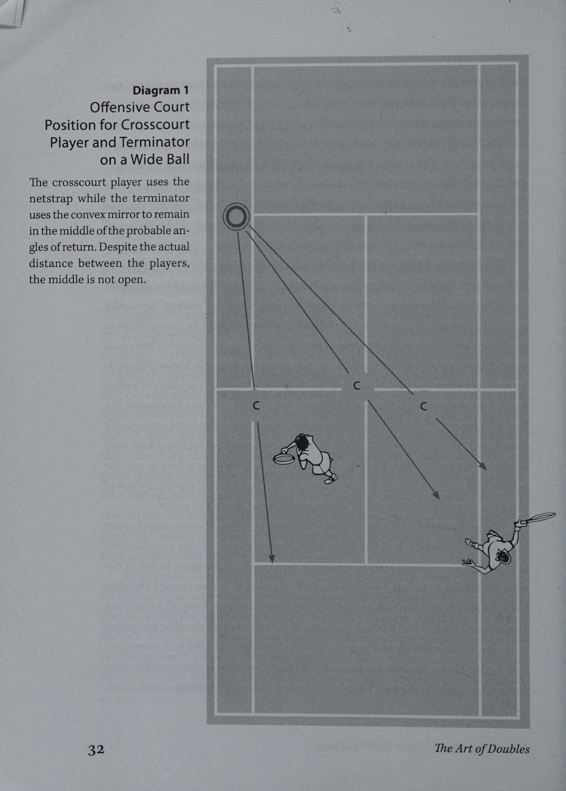
Người chơi chéo sân sử dụng dây căng lưới trong khi tay vợt kết liễu sử dụng gương lồi để duy trì ở giữa các góc quay có thể xảy ra. Bất chấp khoảng cách thực tế giữa các tay vợt, khu giữa vẫn không được thông thoáng.
Diagram 1 Offensive Court Position for Crosscourt Player and Terminator on a Wide Ball The crosscourt player uses the netstrap while the terminator uses the convex mirror to remain in the middle of the probable an- gles of return. Despite the actual distance between the players, the middle is not open.
Sơ đồ một và hai hiển thị vị trí chính xác và không chính xác của người chơi chéo sân và người kết thúc do kết quả của một cú vô lê hoặc quả giao bóng cực rộng được thực hiện tới phần sân của đối phương.
Diagrams one and two show the correct and incorrect positions for the crosscourt player and the terminator as the result of an extremely wide vol- ley or service return played to the opponent's alley.
Khi tôi đặt một quả bóng trong ngõ trên sân giảng dạy của mình giống như trong sơ đồ và sau đó đặt học sinh của tôi vào đúng vị trí, chúng nhìn nhau kinh hãi và quay sang tôi kinh ngạc vì có quá nhiều khoảng cách giữa chúng trên sân. Nhưng miễn là cả hai đấu thủ đều đối mặt với bóng, với bàn chân của họ có góc hợp lý thì sân sẽ không mở vì cả hai đấu thủ đều ở giữa các góc trả bóng có thể xảy ra. Ý tưởng cho rằng các tay vợt phải luôn di chuyển cùng nhau trên sân, hay lý thuyết “cần gạt nước kính chắn gió”, là một điều hoang đường và nó không hiệu quả vì nó làm lộ ra mọi góc cạnh trên sân. Tương tự, khi tôi đặt một quả bóng rất gần vạch giao bóng giữa sân và hướng dẫn học trò của mình vào đúng vị trí (xem sơ đồ ba và bốn để biết vị trí đúng và sai), tôi thấy câu "Bạn mất trí rồi, huấn luyện viên, hãy nhìn vào mắt họ. Tuy nhiên, miễn là đội của bạn giữ bóng ở mức thấp, đối thủ của bạn không có góc nào từ giữa sân, do đó, dây căng lưới và gương đã che sân.
When I place a ball in the alley on my teaching court like the one in the diagram and then place my students in the correct positions, they look at one another in horror and turn to me aghast that there is so much space between them on the court. But as long as both players are facing the ball, with their feet angled properly, the court is not open because both players are in the middle of the probable angles of return. The idea that players should always move together on the court, or the “windshield wipers” theory, is a myth, and it doesn’t work because it exposes all the angles on the court. Similarly, when I place a ball very near the center service line and guide my students into the correct positions (see diagrams three and four for correct and incorrect positioning), I see the “You've lost your mind, coach, look in their eyes. And yet, so long as your team keeps your balls low, your opponents have no angles from the middle of the court, so again, the netstrap and the mirror have the court covered.
Trước đó, ba câu hỏi quan trọng đã được đặt ra. Ai che lốp? Ai che bóng trung tâm? Ai ném bóng đi? Các câu trả lời bây giờ có vẻ rõ ràng:
Earlier, three important questions were posed. Who covers the lob? Who cov- ers the center ball? Who puts the ball away? The answers now seem obvious
- 1. Vận động viên ném chéo sân che cú lốp bóng.
- 2. ‘Quả bóng giữa sân trước tiên thuộc về người kết thúc nếu anh ta có thể đánh trúng nó, hoặc thuộc về đấu thủ chéo sân, người được định vị để thực hiện cú đánh bằng cách sử dụng
- 3. Tay vợt kết liễu luôn đưa bóng đi. Có lần tôi đã trình diễn điều này cho một đội thiếu kinh nghiệm trong giải đấu mà các thành viên của họ rất vui mừng với những cách mà họ có thể đoán trước được đường bay của quả bóng. Khi tôi đặt câu hỏi, một ngôi sao đầy tham vọng đã nói: “Ồ, điều này thật tuyệt, nhưng liệu nó có hiệu quả trong một trận đấu không?” Đúng, nó có tác dụng trong một trận đấu, đến mức đối thủ của bạn không thể hiểu được làm thế nào bạn có thể ở nhiều nơi cùng một lúc.
1. The crosscourt player covers the lob. 2. ‘The center ball first belongs to the terminator if he can hit down on it, or to the crosscourt player who is positioned to execute the shot by using the netstrap. 3. The terminator always puts the ball away. I once gave this demonstration to an inexperienced league team whose mem- bers were delighted with the ways in which they could anticipate the flight of the ball. When I asked for questions, one aspiring star said, “Gee, this is great, but would it work in a match? Yes, it does work in a match, to the point where your opponents can't figure out how you can be in so many places at once.
Toàn bộ đường tấn công điều chỉnh về phía trước hoặc phía sau một chút, tùy thuộc vào khả năng lốp bóng. Nếu phe đối lập lạc lối “đi lên,
The entire offensive line adjusts slightly forward or back, depending on the likelihood of the lob. If the opposition is that misguided “one up,
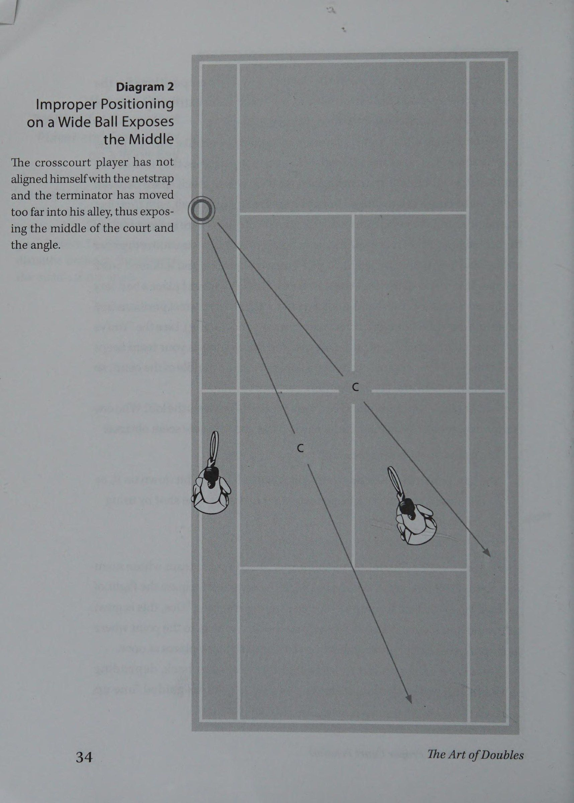
Người chơi chéo sân đã không tự căn chỉnh mình với dây căng lưới và tay vợt kết liễu đã di chuyển quá xa vào ngõ của anh ta, do đó làm lộ ra phần giữa sân và góc.
Diagram 2 Improper Positioning on a Wide Ball Exposes the Middle The crosscourt player has not aligned himself with the netstrap and the terminator has moved too far into his alley, thus expos- ing the middle of the court and the angle. ©
Sơ đồ 3 — Vị trí tấn công của người chơi chéo sân và tay vợt kết liễu khi bóng ra biên
Người chơi chéo sân lại sử dụng dây căng lưới và tay vợt kết liễu sử dụng gương để giữ ở giữa các góc quay có thể xảy ra. Nếu bóng được giữ ở mức thấp thì không thể tạo được góc từ tâm sân.
lhe hie Diagram 3 Offensive Court Position for Crosscourt Player and Terminator on a Middle Ball The crosscourt player again uses the netstrap and the terminator uses the mirror to remain in the middle of the probable angles of return. If balls are kept low, no angles are possible from the center of the court.
Sơ đồ 4 — Đứng sai vị trí khi bóng vào giữa sẽ để lộ khoảng giữa
Cả người chơi chéo sân và người kết thúc đều không tin rằng họ nên đặt mình quá gần nhau khi bóng ở quá gần đường giữa. Quả bóng có thể sẽ đi qua giữa cho người chiến thắng. một lùi", khi đó đội của bạn phải biết rõ ràng rằng bạn sắp bị lốp bóng. Tay vợt ném bóng chéo sân phải ở trên vạch giao bóng, và tay vợt dứt điểm phải đảm nhận vị trí cách xa lưới vài feet với hy vọng bắt được một cú lốp bóng ngắn. Bạn vẫn kiểm soát lưới ngay cả khi cả hai bạn đều không 'trên'. Quy tắc dành cho người kết thúc là "lùi hai bước và giậm mạnh". Ngoài hai bước đó, bóng thuộc về người chơi ném chéo sân. Hãy nhớ rằng công việc không chồng chéo. Một trong những điều khó giải thích nhất với các vận động viên rất tài năng là trong hệ thống này, vấn đề không bao giờ là liệu bạn có thể lấy được bóng hay không; vấn đề là liệu bạn có nên lấy một quả bóng hay không. Một người chơi cố gắng làm cả hai công việc sẽ phá hỏng sự phân công lao động khiến hệ thống này trở nên độc đáo.
Diagram 4 Improper Positioning on a Center Ball Exposes the Middle Neither the crosscourt player nor the terminator believes that they should position themselves so close together when the ball is so close to the center line. Balls will likely go through the middle for winners. “A one back” duo, then your team should know unequivocally that you are going to get lobbed. The crosscourt player should remain on the service line, and the terminator should assume a position several feet farther from the net in hopes of snagging a short lob. You still control the net even though neither of you is ‘on’ it. The rule for the terminator is “two steps back and crunch. Beyond those two steps, the ball belongs to the crosscourt player. Remember that jobs do not overlap. One of the hard- est things to explain to very talented athletes is that in this system, it is never whether you can ta ke a ball; the issue is whether you should take a ball.
Tuy nhiên, nếu đối thủ của bạn là những người lao vào lưới, thì người chơi chéo sân phải ở vị trí cách lưới khoảng 3 feet trong đường giao bóng và người kết thúc cách lưới khoảng 3 feet vì cơ hội ném vợt của người chơi giao bóng và vô lê sẽ giảm đi đáng kể. ¢ Biết công việc của bạn và gắn bó với nó. Nếu người chơi chéo sân của bạn lốp bóng theo đường thẳng, cho dù là vũ khí tấn công hay do tình huống khẩn cấp, thì sự thay đổi công việc hợp pháp đã được tạo ra. Anh ta trở thành tay vợt kết liễu, và tay vợt kết liễu chuyển trở lại vị trí chéo sân. Danh tính của bạn được xác định bằng việc quả bóng ở bên sân của bạn hay ở bên sân đối diện với bạn.
One player trying to do both jobs ruins the division of labor that makes this system unique. If, however, your opponents are net rushers, then the crosscourt player should be positioned about three feet inside the service line and the termina- tor about three feet from the net because the chances of lobs off the racquets of serve and volley players are greatly reduced. ¢ Know your job and stick to it. If your crosscourt player lobs in a straight line, whether as an offensive weapon or the result of an emer- gency, a legitimate change of jobs has been created. He becomes the ter- minator, and the terminator shifts back to the crosscourt position. Your identity is determined by whether the ball is on your side of the court or crosscourt from you.
Trên thực tế, tay vợt kết liễu là nền tảng của đội hình. Bằng góc độ của cơ thể và chuyển động của mình, anh ta kiểm soát liệu sân có được đóng chặt hay trở nên dễ bị tấn công. Ví dụ: hãy lưu ý hai đường dẫn tới lưới khác nhau mà đối tác của người nhận bóng đã thực hiện trong sơ đồ năm. Máy thu đã đạt được cú trả giao bóng thấp và rộng tuyệt vời. Đường chấm biểu thị một góc không chính xác so với lưới do kẻ kết thúc thực hiện. Nó đã mở ra giữa sân cho cú vô lê của người giao bóng, nằm ngoài tầm với của người chơi chéo sân, người đã định vị mình bằng dây căng lưới. Nếu điều này xảy ra thường xuyên, người nhận sẽ không tuân thủ nguyên tắc dây căng lưới vì sợ mất điểm giữa sân.
In truth, the terminator is the cornerstone of the formation. By the angle of his body and his movement, he controls whether the court stays tightly closed or becomes vulnerable to attack. As an example, note the two different paths to the net taken by the receiver’s partner in diagram five. The receiver has hit an excellent low and wide service return. The dotted line represents an incorrect angle to the net taken by the termina- tor. It has opened the middle of the court for the server's volley, well out of reach of the crosscourt player, who has positioned himself with the netstrap. If this happens often, the receiver isn’t going to adhere to the netstrap principle for fear of losing the point in the middle of the court.
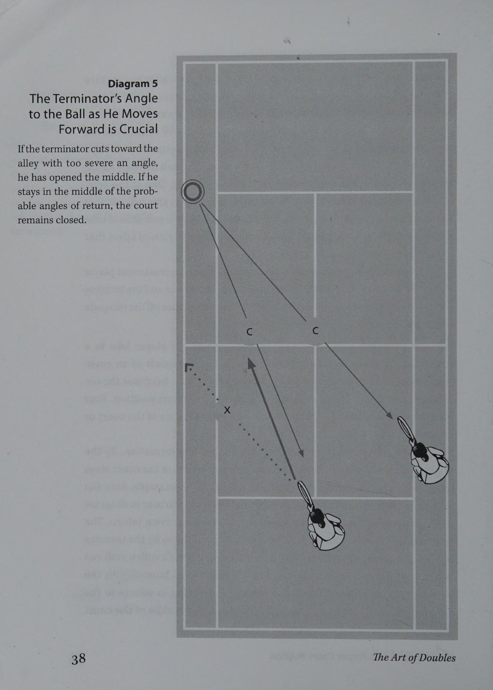
Nếu tay vợt kết liễu cắt về phía hành lang biên với một góc quá lớn, hắn đã mở được phần giữa. Nếu anh ta ở giữa các góc quay có thể xảy ra, sân vẫn đóng cửa.
Diagram 5 The Terminator’s Angle to the Ball as He Moves Forward is Crucial Ifthe terminator cuts toward the alley with too severe an angle, he has opened the middle.
Tuy nhiên, nếu anh ta thỏa hiệp với quan điểm đó, anh ta sẽ dễ bị tổn thương về mặt góc độ. Đường liền nét thể hiện góc thích hợp của lưới đối với người kết thúc và sân vẫn là bất khả xâm phạm.
If he stays in the middle of the prob- able angles of return, the court remains closed. vA Yet, if he compromises that position, he is vulnerable on the angle.
Tay vợt kết liễu có thể đột nhiên biến thành hình nón màu cam, không bao giờ di chuyển khỏi đường giao bóng. Trong trường hợp này, việc tay vợt chơi chéo sân kém cỏi làm gì hầu như không quan trọng vì sân của anh ta đã trở thành một sân bóng để che chắn. Có lẽ đối tác của người giao bóng, người bắt đầu ở gần lưới hơn đối tác của người nhận, đột nhiên phát triển một trường hợp leo vạch cuối sân nghiêm trọng. Một lần nữa, cứ mỗi bước lùi lại của cây leo này, sân của người chơi chéo sân sẽ mở rộng hơn nữa cho đến khi nó trở thành vực thẳm. Công việc quan trọng nhất của tay vợt kết liễu không phải là cất bóng đi hay thực hiện những pha cắt lưới cướp điểm tàn khốc, mà là đánh dấu và giữ cho phần sân của người chơi chéo sân ở một kích thước có thể quản lý được. e Tránh tội lỗi chủ yếu khi bạn là người chơi chéo sân. Là một tay vợt chơi chéo sân, đôi khi bạn luôn có quyền hoặc nghĩa vụ trở thành người kết liễu quả bóng chính xác. Một quy tắc bất khả xâm phạm đối với người chơi chéo sân là: Không bao giờ đóng lưới và đánh chéo sân. Nếu bạn là một tay vợt chơi chéo sân và là người may mắn nhận được một cú bỏ nhỏ ngắn, mọng nước, bạn có quyền và nghĩa vụ đóng lưới và đưa bóng đi. Nhưng nếu bạn đánh nó chéo sân, bạn đã tạo ra một tình huống trong đó có hai kẻ kết liễu trong đội của bạn, và cú lốp bóng chéo sân của đối thủ chắc chắn sẽ giành được điểm. Khi bạn đóng, bạn phải đánh thẳng, biến mình thành người kết thúc và cho phép đối tác của bạn lùi vào sân chéo. Nếu bóng quay trở lại, đội của bạn đã vào đúng vị trí. Đôi khi những kẻ xảo quyệt bên kia lưới thích chơi trò "cuộn bóng và lốp bóng". Bạn giao bóng cho Slippery Sly, và anh ta ném bóng về phía phần sân của bạn. Khi bạn chạy đua để lấy nó, bạn phải nhớ rằng anh ta muốn bạn đánh trả lại đường chéo để anh ta có thể nhấc quả bóng tiếp theo ngay trên đầu bạn trong niềm hân hoan không thương tiếc. Để ngăn cản anh ta, bạn phải đánh quả bóng này theo một đường thẳng, bằng một cú lốp bóng hoặc một cú đánh dọc, trong khi đối tác của bạn lùi vào Crosscourt Bất cứ khi nào bạn bước vào tầm nhìn của tay vợt kết liễu trên sân, bạn phải thay đổi hướng bóng và đánh ngay trước mặt mình. Đó không phải là một thế giới quần vợt hoàn hảo, mà là cuộc tấn công này.
The solid line represents the proper angle to the net for the terminator, and the court remains impregnable. The terminator may suddenly morph into an orange cone, never moving off the service line. In this case, it hardly matters what the poor crosscourt player does because his court has become a football field to cover. Perhaps the server's partner, who begins closer to the net than the receiver's partner, suddenly develops a serious case of baseline creep. Again, for every step backward this creeper takes, the crosscourt player's court widens further until it is an abyss. The most important job for the terminator is not putting the ball away or executing devastating poaches, but being a bookmark and keeping the crosscourt player's court to a manageable size. e Avoid the cardinal sin when you are the crosscourt player. As a crosscourt player, you always have the right, or duty at times, to become the terminator on the correct ball. An inviolate rule for the crosscourt player is: Never close the net and hit crosscourt. If you are a crosscourt player and the lucky recipient of a short, juicy floater, you have the right and duty to close the net and put the ball away. But if you hit it cross- court, you have created a situation where there are two terminators on your team, and your opponent's crosscourt lob will surely win the point. When you close, you must hit straight, making yourself the terminator and allowing your partner to back into crosscourt. If the ball comes back, your team is properly positioned. Sometimes those wily people across the net like to play “reel em in and lob em. You serve to Slippery Sly, and he dinks a ball to your side of the court. As you race to retrieve it, you must remember that he wants you to hit back crosscourt so he can lift the next ball right over your head in merciless glee. To foil him, you must play this ball in a straight line, either as a lob or a down-the-line shot, while your partner backs into crosscourt. Anytime you enter the termi- nator’s purview on the court, you must change the direction of the ball and hit in front of yourself.
ĐỪNG CỐ LÉN TRỞ LẠI TRÒ CHƠI TẤN CÔNG CỦA BẠN
It is not a perfect tennis world, but this offensive
VỊ TRÍ TRONG MỘT ĐỘI ĐÃ ẮC QUYỀN TRÊN Lưới. HỌ SẼ
DON'T TRY TO SNEAK BACK TO YOUR OFFENSIVE VOLLEY POSITION ON A TEAM ALREADY ENTRENCHED AT THE NET.
Vô-lê SAU BẠN. ĐÀO VÀ CHƠI PHÒNG THỦ. vị trí sân bao gồm các cú đánh có tỷ lệ phần trăm cao nhất của đối thủ của bạn và chỉ để lại cho họ những lựa chọn có tỷ lệ phần trăm thấp. Tỷ lệ thắng của bạn trong trận đấu là rất tốt.
THEY WILL VOLLEY BEHIND YOU. DIG IN AND PLAY DEFENSE. court positioning covers your opponents highest percentage shots and leaves them only with low percentage options. Your odds of prevailing in the match are very good.
Vị trí phòng thủ
Đôi khi những cú lốp bóng vượt trội của đối thủ nằm ngoài tầm với của bạn và buộc đội của bạn phải rút lui về vạch cuối sân. Đôi khi, bạn có thể chọn chơi từ vạch cuối sân. Trong cả hai trường hợp, quan điểm thích hợp của sân buộc cả hai bạn phải rút lui. Không bao giờ để đối tác của bạn trên lưới trong khi bạn đang đuổi theo một cú lốp bóng hoặc chọn ở lại vạch cuối sân. Anh ta là mục tiêu hàng đầu cho cuộc tấn công hủy diệt của đội đang tấn công. Hãy lưu ý rằng điều này tạo thành căn cứ để từ chối bạn.
THE DEFENSIVE COURT POSITION Sometimes your opponents superior lobs are out of reach and force your team to retreat to the baseline. Occasionally, you may choose to play from the base- line. In either case, proper court position dictates that you both retreat. Never leave your partner at the net while you chase a lob or choose to stay back on the baseline. He is the prime target for the onrushing team’s bone-crushing over- head. Be advised that this constitutes grounds for dumping you.
Người chơi chéo sân sẽ chạy xuống lốp bóng sâu và gọi đồng đội của mình trở lại vạch cuối sân với mình. Anh ta không bao giờ nên cố gắng đưa bóng trở lại lưới mà nên thực hiện một cú lốp bóng cao nhất có thể - một cú lốp bóng phòng thủ - bởi vì đối tác của anh ta cần thời gian để chạm tới vạch cuối sân. Ngoài ra, các cú đánh bóng là thứ mà đối thủ của bạn tạo ra để giành chiến thắng khi họ cướp được lưới của bạn. Sau khi đã an toàn ở vị trí phòng thủ, hãy lốp bóng mọi quả bóng trừ khi bạn nhìn thấy một lỗ hổng. Cú lốp bóng của bạn càng cao thì những kẻ xâm nhập trên lưới càng khó có thể nghiêng bất cứ thứ gì trước mặt bạn. Hãy kiên nhẫn và cố gắng có được niềm vui khi bảo vệ sân cũng như trải nghiệm của bạn khi tấn công sân từ lưới. Cả hai đấu thủ đều có nhiệm vụ dứt điểm và dứt điểm từ vạch cuối sân cũng như trên lưới. Nếu bạn đang ở vị trí chéo sân trước một đấu thủ đang đánh một cú đánh từ trên cao, hãy rút lui càng xa vào góc sân theo đường chéo càng tốt và sử dụng dây căng lưới. Nếu bạn đang đối diện với một tay vợt đang đánh một cú đánh từ trên cao, hãy phản chiếu chính xác anh ta và bước tới cách vạch cuối sân một foot. Bằng cách này, đội của bạn có thể bao phủ gần như toàn bộ sân đấu. Người chơi chéo sân chiếm phần trên cao ở góc và người kết thúc chiếm phần trên cao ở giữa (xem sơ đồ sáu).
The crosscourt player will run down the deep lob and call his partner back to the baseline with him. He should never try to drive the ball back across the net but rather execute as a high a lob as he can—a defensive lob—because his partner needs time to reach the baseline. Also, drives are the things your opponents angle off for winners when they have taken the net away from you. Once safely ensconced in your defensive position, lob every ball unless you see a gaping hole. The higher your lob, the more difficult it is for the interlopers across the net to angle anything in front of you. Be patient and try to have as much fun defending the court as you experience attacking it from the net. Both players have crosscourt and terminator duties from the baseline as well as the net. If you are crosscourt from a player hitting an overhead, retreat as far into the corner of the court on the diagonal as you can, and use the netstrap. If you are opposite a player hitting an overhead, mirror him precisely, and - step to within a foot of the baseline. This way, your team has nearly all of the court covered. The crosscourt player takes the deep overhead on the angle, and the terminator takes the down-the-middle overhead (see diagram six).
Đảm bảo điều chỉnh công việc nếu cú lốp bóng tiếp theo của bạn hướng về phía người chơi khác. Hãy nhớ rằng bạn có thể đánh những cú lốp bóng lâu hơn rất nhiều so với những cú lốp qua đầu. Mục đích là để kích động họ đánh quá mạnh hoặc trở nên khó chịu với số lượng bóng bạn có thể lấy được. Nếu bạn kiên trì và cam kết với chiến lược này, nó sẽ có hiệu quả và họ sẽ mất bình tĩnh và tấn công bạn.
Be sure to adjust jobs if your next lob drifts toward the other player. Remember that you can hit lobs a lot longer than they can hit overheads. The goal is to provoke them into overhitting or becoming irritated with the number of balls you can retrieve. If you persevere and remain committed to this strategy, it does work, and they will lose their tempers and hit the back fence.
Bạn không thể đòi lại lưới chỉ vì bạn chán việc lốp bóng. Nhận thức rằng một trong các bạn phải đến vị trí chéo sân, và một trong các bạn phải đến vị trí dứt điểm trước khi bóng được đánh qua lưới, chưa kể đến nguy cơ lao thẳng vào mặt bạn từ trên cao của ai đó. Cách duy nhất để lấy lại lưới là lốp bóng ra phía sau đối thủ và khiến họ đuổi theo bóng. Điều này tạo ra thời gian bạn cần để sắp xếp đội hình của mình. Tất nhiên, nếu họ đánh bạn một quả bóng rất ngắn, bạn phải chạy vào để lấy lại.
You cannot reclaim the net just because you are bored with hitting lobs. Realize that one of you has to get to the crosscourt position, and one of you has to get to the terminator position before the ball is struck across the net, not to mention the perils of running into someone's overhead aimed at your face. The only way to regain the net is to lob behind your opponents and make them chase down the ball. This creates the time you need to get organized in your formation. Of course, if they hit you a very short ball, you must run in to retrieve
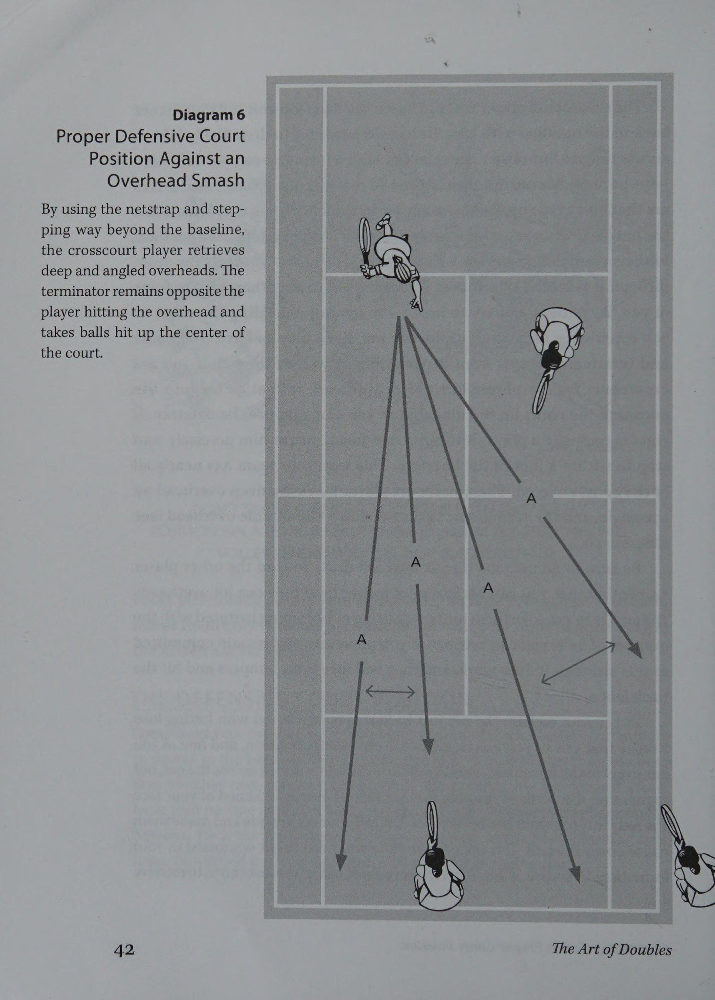
Bằng cách sử dụng dây căng lưới và bước ra ngoài vạch cuối sân, người chơi chéo sân sẽ lấy được những cú đánh qua đầu sâu và có góc cạnh. Người kết thúc vẫn đối diện với người chơi đánh trên cao và lấy bóng đánh vào giữa sân. nó, nhưng nếu cả hai đều cố gắng thực hiện cú vô-lê thả bóng, điều đó có nghĩa là bạn lốp bóng chưa đủ cao và khó có khả năng bạn sẽ kiểm soát được tình huống.
Diagram 6 Proper Defensive Court Position Against an Overhead Smash By using the netstrap and step- ping way beyond the baseline, the crosscourt player retrieves deep and angled overheads. The terminator remains opposite the player hitting the overhead and takes balls hit up the center of the court. A
Bí quyết thực sự để thực hiện một cú lốp bóng phòng thủ tuyệt vời là hãy nghĩ rằng bạn sẽ đánh nó rất cao, nhưng hãy để họ đánh nó. Nếu bạn cố gắng lốp bóng qua chúng, nó gần như luôn bị loại. Nếu bạn nghĩ rằng bạn sẽ để họ đánh nó, bạn sẽ đạt được chiều cao của mình, và nếu bạn may mắn, nó sẽ bay qua đầu họ và nảy lên. Thế là bạn đã thắng lại lưới. e Biết khi nào nên tự nguyện bỏ lưới. Đôi khi việc cố tình chơi từ vạch cuối sân là cần thiết. Giả sử bạn đang trong một trận không chiến trong một trận đấu, và đấu thủ mà bạn giao bóng chưa đến mức phá được chuẩn bị bước lên giao bóng. Nếu cả hai bạn rút lui về vạch cuối sân và lốp bóng tất cả các cú trả bóng của mình (và sau đó tuân theo các quy tắc trên), điều đó sẽ làm đảo lộn nhịp điệu của anh ta. Các mục tiêu của anh ấy đã biến mất, cú vô lê đầu tiên của anh ấy được thay thế bằng một cú đánh đầu và nhịp độ trận đấu chậm lại đáng kể. Rất thường xuyên, điều đó chỉ đủ để khuyến khích anh ta lo lắng, tức giận và chơi quá sức. Nếu nó hiệu quả, hãy nhớ làm lại lần sau khi anh ấy giao bóng. Bạn đã bao giờ chơi một trận đấu mà dường như tất cả những gì bạn làm chỉ là chớp mắt và đột nhiên bị dẫn trước 4-0 chưa? Việc rút lui về vạch cuối sân sẽ cho phép cả hai bạn giảm tốc độ, hít thở sâu vài hơi và lấy lại thăng bằng. Sau khi đã đặt chân vào cửa và lấy lại được chút tự tin, bạn có thể quay lại tấn công vào lưới. Cũng có những lúc bạn có thể không gặp khó khăn với một cú giao bóng sát thủ nào đó, nhưng đối tác của bạn thì lại gặp khó khăn, và tất cả những cú trả giao bóng của anh ta đang bị cướp mất. Bạn nên sử dụng đội hình phòng thủ khi đối tác của bạn nhận bóng, có lẽ chỉ trong lần giao bóng đầu tiên. Nó giúp anh ta thoải mái quay trở lại từ sâu hơn trong sân và lốp bóng thay vì cảm thấy áp lực khi phải thực hiện một pha trả bóng hoàn hảo trước người cắt lưới cướp điểm đang rình rập.
it, but if you are both scrambling to reach a drop volley, it means you didn't lob high enough, and it is unlikely that you will gain control of the situation. The real secret to executing a wonderful defensive lob is to think that you are going to hit it very high, but let them hit it. If you try to lob over them, it is almost always out. If you think that you are going to let them hit it, you will get your height, and if you are lucky, it will go over their heads and bounce. Then you have won back the net. e Know when to relinquish the net voluntarily. There are times when pur- posely playing from the baseline is necessary. Suppose you are in a dogfight of a match, and the player whose serve you have not come close to breaking is about to step up to serve. If you both retreat to the baseline and lob all of your returns (and then follow the above rules), it upsets his rhythm. His tar- gets are gone, his first volley is replaced by an overhead, and the pace of the match has slowed considerably. Very often it is just enough to encourage him to get anxious, angry, and overplay his shots. If it works, be sure to do it again next time he serves. Have you ever played a match in which it seemed as if all you did was blink and suddenly youre down 4-0? Retreating to the baseline will allow you both to slow down, take a few deep breaths, and recover your balance. After you have a foot in the door and have regained some confidence, you can return to attacking the net. There are also times when you may not be having difficulty with some brute’s killer serve, but your partner is, and all of his returns are being poached off. It is a good idea to use the defensive formation when your partner receives, perhaps just on the first serve. It frees him to return from deeper in the court and lob the ball instead of feeling the pressure of having to squeeze a perfect return past the looming poacher.
Đội hình phòng thủ phải là một phần trong tiết mục của bạn cũng như vị trí tấn công của bạn. Một trong những điều khó dạy nhất cho học trò của tôi là bạn không thể lúc nào cũng phạm lỗi trong quần vợt. Biết khi nào nên rút lui và làm thế nào để rút lui mà không kiêu ngạo là môn quần vợt thông minh. Cú lốp từ vạch cuối sân không phải là lựa chọn đầu tiên của bạn ở vị trí trên sân, nhưng nó phải là lựa chọn mà bạn hoàn toàn thành thạo. Nó có thể cứu vãn chiến thắng cho đội của bạn. e Không có gì quan trọng hơn vị trí thích hợp của sân. Nếu vị trí trong cuộc sống là tất cả, thì vị trí trên sân đấu đôi chắc chắn là tất cả. Đừng lừa dối nó bằng cách nghĩ rằng bạn có thể thoát khỏi nó mà không cần nó, vì nếu không có nó, bạn sẽ hiếm khi chiến thắng. Đừng bỏ qua nó bằng cách đổ lỗi cho cú giao bóng thứ hai yếu khiến bạn không muốn đưa lưới vào lưới, bởi vì vị trí sân trên thường cho phép bạn cướp được trận đấu trước những đối thủ vượt trội về mặt kỹ thuật. Vị trí của sân là thứ hoàn toàn nằm trong tầm kiểm soát của bạn. Nếu bạn kiểm soát môi trường của mình, bạn sẽ tạo các tùy chọn cho nhóm của mình và việc lựa chọn cú đánh thông minh dựa trên việc có nhiều tùy chọn.
The defensive formation should be as much a part of your repertoire as your offensive position. One of the most difficult things to teach my students is that you cannot be on offense in tennis all the time. Knowing when to retreat and how to retreat without hubris is smart tennis. Lobbing from the baseline shouldn't be your first choice in court position, but it should be one in which you are thoroughly proficient. It could salvage a victory for your team. e Nothing is more important than proper court position. If position in life is everything, then court position in doubles is certainly everything. Do not cheat it by thinking that you can get away without it, for without it, you will seldom win. Do not neglect it by blaming a weak second serve for your wish not to take the net, because superior court position will often allow you to steal a match against technically superior opponents. Court position is the one thing that is entirely under your control. If you control your environment, you create options for your team, and intelligent shot selection is predicated on having numerous options.
Việc học một hệ thống mới về vị trí của sân có thể gây khó chịu và khó chịu. Ban đầu, nó đòi hỏi bạn phải suy nghĩ nhiều hơn về vị trí của mình trên sân so với trước đây. Khi bạn đang ở giai đoạn đầu thành thạo, trò chơi của bạn sẽ gặp khó khăn và bạn sẽ kinh hoàng vì không thể thực hiện các cú đánh thường lệ trước khi bắt đầu quá trình phức tạp này. Điều này là bình thường và có nghĩa là bạn đang thực sự cố gắng thay đổi thói quen cũ của mình. Nó sẽ biến mất. Hãy tận hưởng quá trình mà không vội vã tạo ra thành phẩm và biết rằng rất khó để thực hiện những suy nghĩ hình học kỳ lạ về gấp đôi. Nếu nó không quá khó thì mọi người đều có thể làm tốt và điều đó sẽ không vui chút nào.
Learning a new system of court positioning can be exasperating and ardu- ous. Initially, it requires that you think much more about where you are on the court than you ever did before. While you are in the early stages of mastery, your game will suffer and you will be appalled that you cannot execute shots that were routine before you started this complicated process. This is normal and means you are really trying to change your old habits. It will go away. Enjoy the process without hurrying the finished product, and know that it is difficult to commit to strange geometrical thoughts about doubles. Ifit weren't so difficult, everybody would be good at it, and that would be no fun at all.
Danh mục kiểm tra vị trí sân
Người chơi chéo sân sử dụng dây căng lưới và là “con ong thợ”
Court Position Checklist L] The crosscourt player uses the netstrap and is the “worker bee” He sets things up for his terminator and is content to let the terminator bask in the glory of putting the ball away.
Anh ấy sắp đặt mọi thứ cho tay vợt kết liễu của mình và bằng lòng để tay vợt kết liễu đắm mình trong vinh quang khi đưa được quả bóng đi.
The terminator employs the “mirror” concept and is responsible for ending the point.
Tay vợt kết liễu sử dụng khái niệm “gương” và chịu trách nhiệm điều chỉnh vị trí sân tấn công tùy theo đội hình của đối thủ. L] Vị trí tòa phòng thủ là cần thiết và đòi hỏi phải
The offensive court position adjusts according to the opponents’ formation. CL] is L] The defensive court position is necessary and requires pa- tience.
O Cần có thời gian để nắm vững các khái niệm khó.
O It takes time to master difficult concepts. The Art of Doubles
Chương 4. Thắng Bằng Những Lựa Chọn Cú Đánh Thông Minh
Win With Intelligent Shot Selection
Chính hoàn cảnh và thời điểm thích hợp sẽ tạo nên tính chất của một hành động và khiến nó trở nên tốt hay xấu.
Win With Intelligent Shot Selection It is circumstance and proper timing that give an action its character and make it either good or bad.
Lựa chọn cú đánh thiếu sáng suốt nhất là do người chơi muốn kết thúc một điểm quá sớm. Mỗi điểm quần vợt đều có phần mở đầu, phần giữa và phần cuối. Mặc dù đối thủ có thể giúp bạn mắc lỗi sớm, nhưng hầu hết các điểm mà bạn hoàn thành thành công đều phải giành được theo từng giai đoạn. Các đội thiếu kinh nghiệm, đầy tham vọng, cùng với những “người quan sát” và “những người kỳ diệu”, không hiểu rằng luật quần vợt được viết với giả định rằng bóng sẽ được trả lại và có những người ngoài kia có thể và sẽ xử lý cú đánh tốt nhất của bạn. Các đội đánh đôi xuất sắc nhận ra tình trạng này là không thể tránh khỏi và thực sự mong chờ thử thách của một cuộc giao tranh kéo dài, trong khi “hy vọng không ai lấy được bóng” dường như là động cơ chính cho việc lựa chọn cú đánh thiếu thông minh.
Agesilaus II Most ill-advised shot selection is due to a player’s desire to end a point much too early. Every tennis point has a beginning, a middle, and an end. While your opponent may do you the favor of making an error early on, most points that you successfully complete must be won in stages. Inexpe- rienced, aspiring teams, along with the “watchers” and “wonderers,’ fail to comprehend that the rules of tennis are written with the presumption that the ball will be returned and that there are people out there who can and will handle your best shot. Great doubles teams recognize this state of affairs as unavoidable and actually look forward to the challenge of a long rally, whereas “hoping no one will get to the ball” seems to be the prime motivation for unintelligent shot selection. The beginning of a point includes only the serve and service return.
Điểm bắt đầu của một điểm chỉ bao gồm giao bóng và trả giao bóng. Điểm giữa kéo dài từ cú vô lê đầu tiên cho đến tất cả các cú đánh tiếp theo được thực hiện, cho đến cú đánh sẽ kết thúc điểm. Điểm cuối chỉ đơn giản là một quả bóng không phát lại được. Những người chơi thiếu tự tin hoặc những người trở nên quá lo lắng có xu hướng cố gắng đảo ngược trật tự này và thường mắc rất nhiều lỗi không đáng có. Các đội đánh đôi có kinh nghiệm biết rằng họ phải thông minh như nhau trong việc lựa chọn các cú đánh ở đầu hiệp cũng như ở cả giữa và cuối hiệp.
The middle of the point extends from the first volley through all subsequent shots played, up to the one that will end the point. The end of the point is simply the one ball that does not come back into play. Players lacking in confidence or those who become overanxious tend to try to reverse this order and generally make a high number of unforced errors. Experienced doubles teams know they must be equally as intelligent in their choice of shots for the beginning of the point as they are for both the middle and the end of the point.
Quần vợt xác suất
Lựa chọn cú đánh có tỷ lệ phần trăm cao hoặc “vani thẳng”, như tôi nói với các học trò của mình, có thể được định nghĩa là sử dụng tốc độ, độ xoáy và hướng tốt nhất và phù hợp nhất trên bất kỳ quả bóng nào dựa trên khoảng cách của bạn với lưới, chiều cao của quả bóng bạn phải chơi và vị trí sân của đối thủ. Nó bao gồm việc xem xét cẩn thận tỷ số và động lực của trận đấu nằm ở đâu. Trong mọi tình huống, cú đánh luôn có xác suất chọc lưới và hạ cánh xuống sân cao nhất. Sẽ không bao giờ có cú đánh nào xảy ra với ý tưởng trong đầu rằng, “Chúa ơi, tên khốn này sẽ không quay trở lại!”
PERCENTAGE TENNIS High-percentage shot selection or “straight vanilla,’ as I say to my students, can be defined as using the best and most appropriate speed, spin, and di- rection on any ball given your distance from the net, the height of the ball you must play, and your opponents’ court positions. It includes careful con- sideration of the score and where the momentum of the match lies. It is always the shot that, under the circumstances, has the highest probability of clearing the net and landing in the court. It is never the shot hit with the idea in mind that, “By God, this sucker’s not coming back!
Giai đoạn mở màn
Khi bắt đầu điểm (giao bóng và trả giao bóng), người giao bóng có công việc dễ dàng hơn người nhận vì anh ta có thể chọn bắt đầu điểm theo bất kỳ cách nào anh ta muốn, hy vọng có lợi cho anh ta. Ví dụ, giao bóng với tỷ số chặt chẽ và đà cân bằng không phải là lúc để phô diễn một quả đại bác. Đây cũng không phải là lúc để một quả bóng Wiffle kèm theo lời cầu nguyện rằng đối thủ sẽ phạm sai lầm. Một cú giao bóng có tỷ lệ phần trăm cao sẽ là một cú giao bóng với tốc độ ba phần tư được đặt sâu và ở giữa vì một cú giao bóng rộng giúp người nhận có cơ hội tốt hơn để thực hiện một cú trả bóng có góc nhọn. Nếu bạn là người nhận bóng ở một điểm rất quan trọng, thì bây giờ không phải là lúc để trở thành người hùng và tung ra một cú đánh từ đường biên dọc với hy vọng giành được điểm nhanh chóng trong khi không có ai để ý. Hãy bám sát “bánh mì và bơ” của bạn, đó phải là một đường giao nhau có góc ngắn. Tuy nhiên, nếu tốc độ, độ xoáy hoặc độ cao của cú giao bóng đột nhiên cao hơn mức bạn mong đợi, đừng ngoan cố bám vào một kế hoạch không còn có khả năng thành công nữa. Nhận biết tình huống khẩn cấp và sử dụng cú lốp bóng phòng thủ. Nếu bạn chơi ở ô sân Deuce và đối tác thuận tay phải của bạn ở ô sân Ad, hãy cân nhắc rằng một pha chơi có tỷ lệ phần trăm cao xuất sắc là một cú lốp bóng sâu vào hành lang biên phía sau người chơi lưới—đối tác của người giao bóng (xem sơ đồ bảy). Sau cú lốp bóng, hãy di chuyển hết cỡ lên lưới, đến vị trí mà các học trò của tôi gọi là tư thế “mũi trên lưới”. Đối tác của bạn nên lùi lại khoảng ba bước so với vạch giao bóng và chuẩn bị thực hiện cú đánh từ trên cao về phía sân của bạn. Khoảng 90 phần trăm các cú lốp bóng phòng thủ được trả về cho bạn từ quả phạt góc đó đi thẳng đến vợt của bạn hoặc đến vị trí mà đối tác ô sân Ad của bạn đang đợi. Nếu đối tác của bạn là người thuận tay trái và chơi ô sân Deuce, bạn có thể tạo ra tình huống tương tự cho anh ta bằng cách sử dụng một cú lốp bóng tấn công từ ô sân Ad.
THE BEGINNING STAGE In the beginning of the point (serve and service return), the server has an eas- ier job than the receiver because he may choose to start the point any way he wishes, hopefully to his advantage. For example, serving with the score tight and the momentum in the balance is not the time to showcase a cannonball. Nor is it the time for a Wiffle ball accompanied by a prayer that the opponent will err. A high-percentage shot would be a three-quarter-speed serve placed deep and down the middle because a wide serve gives the receiver a better opportunity to hit a sharply angled return. If you are the receiver on a very important point, now is not the time to be a hero and unleash a down-the- line passing shot in hopes of grabbing the point quickly while no one is look- ing. Stick to your “bread and butter” which should be a short-angled cross- court. If, however, the speed, spin, or height of the serve is suddenly more than you bargained for, don’t stubbornly stick to a plan that is no longer likely to succeed. Recognize the emergency, and use a defensive lob. If you play the deuce court and your right-handed partner is in the ad court, consider that an excellent high-percentage play is a deep lob into the alley behind the net player—the server's partner (see diagram seven). After the lob, move all the way to the net, to what my students call the “nose-on-net” position. Your part- ner should drift about three steps back from the service line and prepare to smash an overhead to your side of the court. About 90 percent of the defen- sive lobs returned to you from that corner come directly to your racquet or to the spot where your ad-court partner is waiting, If your partner is a leftie and plays the deuce court, you can create the same situation for him by using an offensive lob from the ad court.
Hãy nhớ rằng, mục tiêu là đến giữa điểm, nhưng điều đó là không thể nếu bạn không nhận được quả giao bóng của mình trong trận đấu.
Remember, the goal is to reach the middle of the point, but that is not possible if you don't get your service return in play.
Giai đoạn giằng co
Khi đã đến giữa điểm, cả hai bạn phải nhận ra rằng khoảng cách của bạn với lưới và vị trí sân của đối thủ quyết định mục tiêu và trách nhiệm của bạn. Điểm giữa có thể trở nên điên cuồng, không có nhiều thời gian để đưa ra quyết định nhanh chóng và việc không biết hướng đánh bóng thích hợp có thể gây ra những lỗi không đáng có.
THE MIDDLE STAGE Once you reach the middle of the point, both of you must realize that your distance from the net and your opponent's court positions dictate your tar- gets and responsibilities. The middle of the point can become frantic, allow- ing little time for quick decisions, and not knowing the proper direction in which to hit the ball can cause unforced errors.
Xác định vị trí thực hiện các cú đánh và hướng nào có thể được cô đọng thành Tiên đề Sâu đến sâu, Ngắn đến ngắn (xem sơ đồ tám). Các đội đánh đôi mất nhiều điểm hơn do không hiểu hoặc thực hiện công thức này so với tất cả các lý do khác cộng lại. Bốn quy tắc của
Determining where to play shots and in which direction can be condensed into the Deep to Deep, Short to Short Axiom (see diagram eight). Doubles teams lose more points because of their failure to understand or implement this formula than they do for all other reasons combined. The four rules of this axiom are
Không bao giờ đánh bóng “sâu đến ngắn” (Thường áp dụng cho vận động viên ném bóng chéo sân.) 2. Luôn chơi bóng “sâu đến sâu: (Thường áp dụng cho vận động viên ném bóng chéo sân.) 3. Chơi bóng “ngắn đến ngắn” bất cứ khi nào bạn có thể đánh xuống và trừng phạt tay vợt đối thủ “ngắn”, bao gồm cả chi phí chung. (Thường áp dụng cho kẻ kết thúc.) 4. Chơi bóng “ngắn đến sâu” để giúp đội của bạn không gặp rắc rối khi đánh xuống không phải là một lựa chọn. (Thường áp dụng cho dấu kết thúc.)
Never play a ball “deep to short’ (Usually applies to the crosscourt player Always play balls “deep to deep: (Usually applies to the crosscourt player 1. 2. 3. Play balls “short to short” whenever you can hit down and punish the “short” opponent, overheads included. (Usually applies to the terminator 4. Play balls “short to deep” to keep your team out of trouble when hitting down is not an option. (Usually applies to the terminator.)
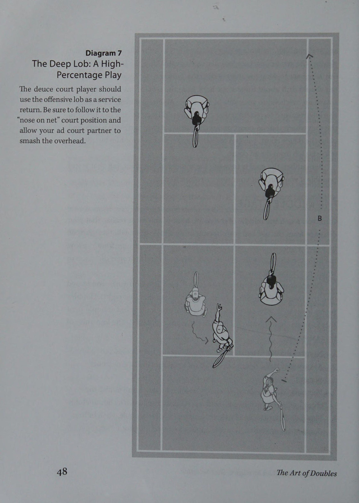
Người chơi ô sân Deuce nên sử dụng cú lốp bóng tấn công như một cú trả giao bóng. Hãy đảm bảo tuân theo nó đến vị trí sân “mũi trên lưới” và cho phép đối tác ô sân Ad của bạn vượt lên trên.
Diagram 7 The Deep Lob: A High- Percentage Play The deuce court player should use the offensive lob as a service return. Be sure to follow it to the “nose on net” court position and allow your ad court partner to smash the overhead.
Sơ đồ 8 — Tiên đề “sâu về sâu, ngắn về ngắn”
Nhìn vào sơ đồ, hãy tưởng tượng rằng bạn, người giao bóng, di chuyển về phía lưới và chuẩn bị thực hiện cú vô lê đầu tiên. Đối tác của bạn đang ở vị trí tay vợt kết liễu. Bên kia lưới, đối tác của người nhận bóng di chuyển về phía vị trí đầu cuối, nhưng người nhận bóng vẫn ở gần vạch cuối sân. Cả đối tác của bạn và đối tác của người nhận đều đủ gần lưới để đánh bất kỳ quả bóng nào có đủ khoảng trống vào lưới để thực hiện điều đó; do đó, vị trí sân của họ có thể được định nghĩa là "ngắn". Bạn, người giao bóng cũng như người nhận bóng, đều ở cách lưới đủ xa để việc đánh xuống bất kỳ quả bóng nào, bất kể độ cao của nó, sẽ đưa quả bóng đó vào lưới (ngoại trừ chi phí trên cao). Nếu khoảng cách của bạn với lưới ngăn cản việc bạn đánh một cú vô lê cao hoặc bất kỳ quả bóng nào nảy lên, thì vị trí sân của bạn có thể được xác định là "sâu". Sẽ là một tội lỗi nghiêm trọng khi đánh bóng từ "sâu đến ngắn" vì, trong mọi khả năng, bạn sẽ đánh cú đánh của mình với quỹ đạo hướng lên trên cây vợt của đối thủ sẵn sàng đánh xuống đối tác dễ bị tổn thương của bạn.
Diagram 8 The Deep to Deep, Short to Short Axiom Looking at the diagram, imagine that you, the server, move toward the net and are about to strike your first volley. Your partner is in the terminator position. Across the net, the receiver's partner moves toward the terminator position, but the receiver re- mains near the base line. Both your partner and the receiver's partner are close enough to the net to hit down on any ball having sufficient net clearance to do so; thus their court positions may be defined as “short” You, the server, as well as the receiver, are both far enough away from the net that hitting down on any ball, regard- less of its height, will send it into the net (overheads are the excep- tion). If your distance from the net precludes your hitting down on a high volley or any ball that has bounced, your court position may be defined as “deep. It is a cardinal sin to play a ball “deep to short” since, in all probability, you will be hitting your shot with a trajectory rising up to an oppo- nent’s racquet poised to hit down at your vulnerable partner.
Tiên đề Sâu đến sâu, Từ ngắn đến ngắn sẽ loại bỏ xu hướng do dự và suy nghĩ về việc nên chơi bóng ở đâu — một lý do chính khiến những cú vô lê dễ dàng bị chơi sai. “Sâu đến sâu” sẽ giúp bạn tránh khỏi rắc rối và “ngắn đến ngắn” sẽ kết thúc quan điểm của bạn vào đúng thời điểm. Tiên đề này được giải thích đầy đủ trong sơ đồ tám và chín.
The Deep to Deep, Short to Short Axiom will remove the tendency to hesi- tate and think about where the ball should be played—a primary reason easy volleys are misplayed. “Deep to deep” will keep you out of trouble and “short to short” will end the point for you at the proper moment. This axiom is fully explained in diagrams eight and nine.
Nhắm đúng mục tiêu
Điều gì sẽ xảy ra nếu cả hai đối thủ đều cắm trại trên đường giao bóng của họ? Điều gì sẽ xảy ra nếu cả bốn bạn đều có được vị trí tấn công thích hợp? Người sâu và người thấp không phải là mục tiêu, vợt của họ cũng vậy. Các quy tắc “sâu-ngắn” chỉ là tín hiệu định hướng để chỉ ra mục tiêu nào trên sân là phù hợp trong một tình huống nhất định. “Từ ngắn đến ngắn”, “xuống giữa, “xuống dòng? và “sâu tới sâu” đều là các phương hướng, trong đó đều có mục tiêu. Cho dù bạn thực hiện cú vô lê “từ ngắn đến ngắn” tốt đến đâu, nếu bạn đánh được cây vợt của người chơi giỏi, bóng sẽ quay trở lại — thường qua đầu bạn để người thắng sạch.
AIM FOR THE RIGHT TARGETS What if both opponents are camped on their service line? What if all four of you have gained proper offensive court position? Deep people and short people are not targets, nor are their racquets. The “deep-short” rules are only directional cues to indicate which targets on the court are appropriate in a given situation. “Short to short,’ “down the middle, “down the line? and “deep to deep” are all directions, within which there are targets. No matter how well you crunch your “short to short” volley, if you hit a good player's racquet, the ball will come back—often over your head for a clean winner.
Chơi quần vợt tỷ lệ cao không chỉ có khả năng chọn hướng đi phù hợp mà còn có khả năng tấn công chính xác các mục tiêu trong hướng đó. Trước hết, mục tiêu chính luôn là cỏ, đất sét hoặc nhựa đường—mặt đất ở phía bên kia lưới—chứ không phải bất cứ thứ gì người chơi mặc hoặc mang theo. Hãy ghi nhớ điều đó, người chơi chéo sân chỉ có hai mục tiêu khả thi cho cú vô lê đầu tiên của mình: hoặc là mặt sân trong hẻm phía trước giày của người chơi chéo sân “sâu” khác hoặc ở giữa đến chữ “T” (điểm giao nhau của các đường giao bóng ngang và dọc). Sự lựa chọn mục tiêu của bạn phải dựa trên việc bạn phải chơi bóng trong hay bóng ngoài.
Playing high-percentage tennis is not just having the ability to choose the proper direction, but also having the ability to strike targets accurately within that direction. First of all, the primary target is always the grass, clay, or asphalt—the ground on the other side of the net—not anything a player wears or carries. Bearing that in mind, the crosscourt player has only two possible targets for his first volley: either the ground in the alley in front of the other “deep,” crosscourt player’s shoes or down the middle to the “T” (the intersection of the horizontal and vertical service lines). Your choice of target should be predicated on whether you must play the inside ball or the outside ball.
Bóng ngoài
Nếu bạn là một tay vợt thuận tay phải thực hiện cú vô lê đầu tiên (cú vô lê đầu tiên cho đội của bạn sau khi trả giao bóng) từ ô sân Deuce, thì cú vô lê thuận tay của bạn là bóng bên ngoài và phải được thực hiện chéo sân về phía sâu
The Outside Ball If you are a right-handed player executing a first volley (the first one for your team following return of serve) from the deuce court, your forehand volley is the outside ball and should be played crosscourt toward the deep
Sơ đồ 9 — Tình huống trên sân: hướng và điểm rơi của bóng
Người chơi quảng cáo ở phía trước đang ở vị trí sân ngắn. Anh ta có thể chơi bóng thấp trở lại hướng mà chúng đã đến (“ngắn đến sâu”) một cách an toàn để giúp đội của anh ta không gặp rắc rối. Anh ta nên trừng phạt những quả bóng cao bằng cách ném chúng về phía tay vợt lưới đối phương (“ngắn đến ngắn”), người sẽ có rất ít thời gian để phản ứng. Anh ta sẽ phạm tội không kết thúc điểm kịp thời nếu đánh bóng cao về phía đối phương ở xa lưới hơn (thời điểm không thích hợp cho việc lựa chọn “ngắn đến sâu”). Người chơi ô sân Deuce ở phía trước đang ở vị trí sân sâu. Lựa chọn duy nhất của anh ta là đánh tất cả bóng về phía đối thủ ở xa lưới ("sâu đến sâu"). Nếu anh ta mất tinh thần và đánh về phía đối thủ ngắn, đồng đội của anh ta có thể bị tàn tật suốt đời và nên loại bỏ anh ta. (Không bao giờ đánh bóng "sâu đến ngắn"). Giày của đối thủ, và tốt nhất là nghiêng về phía ngõ của anh ta (xem sơ đồ 10). Người ta nghi ngờ rằng cú vô lê rộng này có thể được thực hiện ở trung lộ mà không gặp phải vợt của người chơi trên lưới.
Diagram 9 Court Scenario: Ball Direction and Placement The ad court player in the fore- ground is in a short court po- sition. He may safely play low balls back in the direction from which they have come (“short to deep”) in order to keep his team out of trouble. He should pun- ish high balls by playing them toward the opposing net player (“short to short”) who will have very little time to react. He will be guilty of not ending a point in a timely fashion ifhe plays a high ball toward the opponent who is farther from the net (inappropri- ate time for the “short to deep” selection). The deuce court player in the foreground is in a deep court po- sition. His only option is to play all of his balls in the direction of the opponent who is farther from the net (“deep to deep’). If he has a mental lapse and hits toward the short opponent, his partner might be maimed for life and should divorce him. (Never play a ball “deep to short.’) opponent's shoes, and preferably angled toward his alley (see diagram ten). It is doubtful that this wide volley could be played down the middle with- out encountering the net player's racquet.
Bóng trong
Nếu bạn phải đánh cú vô lê trái tay, đây được coi là quả bóng bên trong và có thể được nhắm an toàn xuống giữa vì nó không có góc và sẽ không vượt qua mặt phẳng vợt của người chơi trên lưới trước khi chạm đất (xem sơ đồ mười). Đừng bao giờ cố gắng đảo ngược những quy tắc này. Những nguy hiểm khi làm như vậy được minh họa trong sơ đồ 11 và nằm dưới tiêu đề “không có phần trăm quần vợt.
The Inside Ball If you must play a backhand volley, this is considered the inside ball and can be aimed safely down the middle because it has no angle and will not cross the plane of the net player's racquet before it hits the ground (see diagram ten). Never try to reverse these rules. The perils of doing so are illustrated in diagram eleven and fall under the heading of “no percentage tennis.
Hãy nhớ rằng cú vô lê một nửa là hoàn toàn hợp lý cho một trong hai quả bóng và luôn được ưu tiên hơn là một cú lao mất cân bằng để giữ cho quả bóng không nảy lên. Nếu vì lý do nào đó mà bạn không thể thực hiện tốt một trong hai cú đánh này - nếu giác quan thứ sáu của bạn cho bạn biết rằng bạn đang gặp trường hợp khẩn cấp - hãy lốp bóng với tay vợt trên lưới. Đừng bao giờ hoảng sợ, bỏ tàu và dâng một con vịt bị thương cho phe đối lập với hy vọng rằng họ sẽ tạo ra một cơ hội dễ dàng. Điều đó chỉ có tác dụng khi đối thủ của bạn hoàn toàn không đủ năng lực.
Remember that half volleys are perfectly legitimate shots for either ball and are always preferable to an out-of-balance lunge to keep the ball from bouncing. If for some reason you are not in a position to hit either of these shots well—if your sixth sense tells you that you are having an emergency— lob the net player. Never panic, abandon ship, and offer up a wounded duck to the opposition in hopes that they will blow an easy setup. That only works when your opponents are absolutely incompetent.
Cuối cùng, hãy tuân thủ quy tắc mà tôi áp đặt cho học sinh của mình: “Không có CBS.’ Nghĩa là, đừng bao giờ tỏ ra dễ thương, buồn chán hoặc ngu ngốc. Một phần nhỏ của sân trong hành lang biên của ông lớn và đoạn đường nhỏ dễ thương ở góc cực đoan so với bạn, nằm cách lưới hai inch là mục đích của những kẻ ngu ngốc liều lĩnh. Điều này đúng với tất cả các cú đánh, nhưng đặc biệt có thể áp dụng với những cú vô lê đầu tiên (trong đó một cú đánh “sâu đến ngắn” sẽ khiến bạn mất điểm).
Lastly, adhere to the rule I impose on my students: “No CBS. That is, never get cute, bored, or stupid. The wee bit of court in the big guy’s alley and the cute little piece of line on the extreme angle from you lying two inches beyond the net are the purview of rash fools. This is true on all shots, but is particularly ap- plicable to first volleys (where a “deep-to-short” shot will lose you the point).
Những mục tiêu khác
Sau khi thực hiện thành công cú vô lê đầu tiên và giành được vị trí tấn công của tay vợt chéo sân, bạn có nhiều mục tiêu hơn cho mình. Việc lựa chọn mục tiêu của bạn hoàn toàn phụ thuộc vào vị trí sân của đối thủ. Nếu cả hai đều quay lại thì các góc, vết lõm và giọt nước là phù hợp. Nếu chúng là một trên và một sau, thì nên sử dụng các góc và chi phí ngắn nhằm vào người chơi “lên”. Nếu chúng là “hình nón màu cam”, những người chơi không di chuyển
OTHER TARGETS TO AIM FOR Having successfully executed a first volley and gained your crosscourt play- er's offensive position, you have more targets available to you. Your choice of targets is totally dependent on your opponents’ court position. If they are both back, then angles, dinks, and drops are appropriate. If they are one up and one back, then angles and short overheads aimed at the “up” player should be used. If they are “orange cones,’ those players who do not move
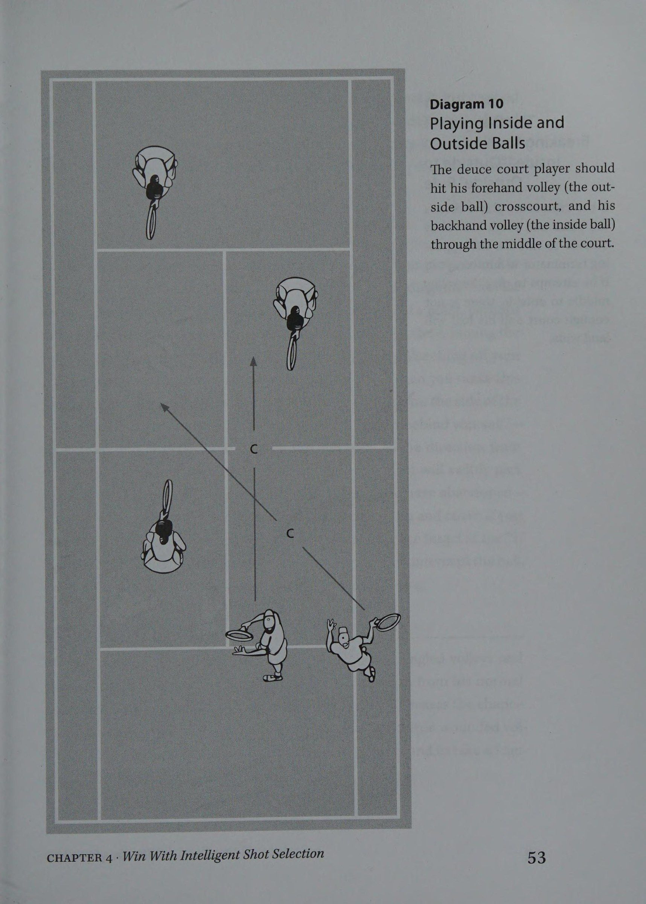
Tay vợt ô sân Deuce phải đánh cú vô lê thuận tay (bóng bên ngoài) chéo sân và cú vô lê trái tay (bóng bên trong) xuyên qua giữa sân.
Diagram 10 Playing Inside and Outside Balls The deuce court player should hit his forehand volley (the out- side ball) crosscourt, and his backhand volley (the inside ball) through the middle of the court.
Sơ đồ 11 — Hiểm họa khi phá vỡ quy tắc “trong về trong, ngoài về ngoài”
Bên ngoài" Quy tắc Nếu đấu thủ chéo sân vi phạm luật và thực hiện cú vô lê của mình từ ngoài vào giữa, người kết thúc đối phương sẽ chặn nó. Nếu anh ta cố gắng thực hiện cú vô lê từ giữa ra ngoài, không có đủ sân và bóng của anh ta sẽ tiếp đất rộng. Nhưng người có đôi tay tuyệt vời, hãy sử dụng phần giữa. Và nếu họ ở vị trí lưới tốt như bạn, bạn phải tuân thủ các quy tắc "từ trong ra ngoài" và "từ ngoài ra ngoài" (xem sơ đồ 41) đến bốn mươi bốn trong chương mười bốn). Trên hết, đừng đánh trả họ, khiến họ có thời gian để chọn những cú đánh của mình.
Diagram 11 The Dangers of Breaking the “Inside to Inside,’“Outside to Outside” Rule If the crosscourt player breaks the rules and plays his volley outside to middle, the oppos- ing terminator will intercept it. If he attemps to play the volley middle to outside, there is not enough court and his ball will land wide. | but who possess great hands, use the middle. And if they are in just as good a net position as you are, you must adhere to the “inside-to-inside” and “outside-to-outside” rules (see diagrams forty-one to forty-four in chapter fourteen). Above all else, do not hit back to them, affording them an eternity to pick their shots.
ĐUỔI BÓNG Bất cứ lúc nào tại một thời điểm, bạn có thể tự do băng qua phía trước đối tác của mình và đánh chặn hoặc “câu trộm” một quả bóng (hãy đảm bảo di chuyển về phía trước theo đường chéo—không phải theo chiều ngang). Điều này đề cập đến việc chặn bóng ở giữa một điểm, có lẽ sau khi đối tác chéo sân của bạn thực hiện một số cú vô lê thấp, buộc tay vợt chéo sân khác thực hiện một cú vô lê yếu và lơ lửng. Việc cướp đi cú giao bóng của đối tác sẽ được thảo luận chi tiết ở chương năm. Khi thực hiện chiêu cắt lưới cướp điểm này, đừng bao giờ chọn mục tiêu nằm trong hành lang biên bên hông sân mà bạn vừa bỏ trống. Lỗi này được gọi là "đánh bóng về phía sau" - di chuyển theo một hướng và đánh bóng trở lại theo hướng mà bạn đã đến (xem sơ đồ 12). Một đối thủ cảnh giác sẽ nhanh chóng nhặt bóng và đưa nó xuống hành lang biên mà bạn đã bỏ qua— hành lang biên mà đối tác của bạn không có thời gian để vượt qua phía sau bạn và che chắn. Nếu bạn gặp bóng ở giữa sân, hãy chọn mục tiêu ở điểm aie’ Nếu bạn đã vượt qua giữa sân vào thời điểm bạn chặn bóng, hãy chọn mục tiêu trong hành lang biên mà bạn đang di chuyển.
POACHING THE BALL At any time in a point you are free to cross in front of your partner and in- tercept or “poach’ a ball (be sure to move forward on the diagonal—not lat- erally). This refers to intercepting the ball in the middle of a point, perhaps after your crosscourt partner has executed several low volleys, forcing the other crosscourt player into a weak and floating volley. Poaching off your partner's serve is discussed at length in chapter five. When you make this poaching move, never choose the target lying in the alley on the side of the court you have just vacated. This error is called “hitting behind yourself” — moving in one direction and playing the ball back in the direction from which you came (see diagram twelve). An alert opponent will swiftly pick the ball up and send it down the line into the alley you have abandoned— an alley your partner has had no time to cross behind you and cover. If you meet up with the ball in the center of the court, choose the target at the aie’ If you have passed the center of the court by the time you intercept the ball, choose the target in the alley toward which you are moving.
ĐÓNG LƯỚI “Đóng lưới” cho phép tay vợt kết liễu sử dụng những cú vô lê có góc nhọn và thực hiện các cú đánh của anh ta vào những phần sân mà anh ta không thể sử dụng được từ vị trí bình thường cách lưới khoảng 4 feet. Việc đóng lưới làm tăng khả năng cú vô lê sẽ là một cú vô lê chứ không chỉ là một cú vô lê bị thương nhỏ thảm hại. Bí quyết là nhận ra khi nào tùy chọn đó xuất hiện và tận dụng lợi thế
CLOSING THE NET “Closing the net” allows the terminator to use sharply angled volleys and play his shots into parts of the court unavailable to him from his normal position about four feet from the net. Closing the net increases the chance that the volley will be a putaway and not just a pathetic little wounded vol- ley. The trick is to recognize when that option is present and to take advan- tage of it immediately.
Sơ đồ 12 — Đừng đánh bóng về phía sau lưng mình
Không bao giờ di chuyển sang phải và thực hiện cú vô lê của bạn sang trái hoặc ngược lại. Nếu bạn đánh “phía sau mình”, một đối thủ cảnh giác sẽ đưa bóng xuống đường biên của bạn để giành chiến thắng.
BE Diagram 12 Avoid Hitting Behind Yourself Never move to the right and play your volley to the left, or vice ver- sa. Ifyou hit “behind yourself” an alert opponent will take the ball down your line for a winner.
Cách đây không lâu, tôi đang dạy một bài học trong đó học sinh ở tư thế dứt điểm được yêu cầu nhận biết quả bóng mềm, lơ lửng và ngay lập tức dập tắt nó bằng cách đóng lưới lại. Buổi học diễn ra không suôn sẻ. Bực tức, cuối cùng hỏi, "Chúa ơi, 'người nổi' là gì vậy?" Một trong những người phụ nữ rụt rè trả lời: “Ồ, tôi nghĩ đó là một quả bóng từng là một thứ khác.”
Not long ago I was teaching a lesson in which the students in the termi- nator position were asked to recognize the soft, floating ball and instantly smother it by closing the net. The lesson was not going well. Exasperated, | finally asked, “For heaven's sake, what is a ‘floater, anyway? One of the women timidly replied, “Well, I think it’s a ball that used to be something else.
Mặc dù cô ấy không hoàn toàn chính xác nhưng người phụ nữ này đã có ý đúng. Hầu hết các quả bóng bị đánh sai (đập ra khỏi khung hoặc “đào ra ngoài”) và do đó mang theo độ xoáy không chủ ý, cuối cùng sẽ “nổi” trên lưới. Ngoài ra, những quả bóng được đánh khi người chơi bị ép vào một tư thế rất khó xử thường sẽ nổi.
Although she was not completely accurate, this woman did have the right idea. Most balls that are mis-hit (struck off the frame or “dug out”), and there- fore carry unintentional spin, end up “floating” across the net. Also, balls hit when a player is forced into a very awkward posture will often float.
Bạn phải học cách nhận biết những người nổi không chỉ bằng cách quan sát vợt của đối thủ mà còn bằng cách lắng nghe âm thanh lệch tâm của quả bóng đánh nhầm. Một khi bạn xác định được cơ hội hấp dẫn đó, hãy nhanh chóng tiếp cận quả bóng và tận dụng vai trò là tay vợt kết liễu bằng cách thực hiện những cú vô lê của bạn ở những góc cực kỳ sắc nét. Động thái này không chỉ cho phép bạn chơi bóng về phía các mục tiêu trong hẻm mà còn giúp bạn có cơ hội đánh tốt một mảnh đất trước kẻ kết thúc đối phương (xem sơ đồ mười ba).
You must learn to recognize floaters not only by watching your oppo- nent’s racquet, but also by listening for that off-center sound of the mis-hit ball. Once you identify that juicy opportunity, close on the ball quickly and take advantage of your job as terminator by rifling your volleys at extremely sharp angles. This move will not only allow you to play balls toward your alley targets, but also your proximity to the net will give you the opportu- nity to hit a piece of ground well in front of the opposing terminator (see diagram thirteen).
Biến lối đánh rủi ro thành lợi thế
“Quần vợt có tỷ lệ phần trăm thấp” có thể được định nghĩa là những cú đánh không quan tâm đến tốc độ, độ xoáy hoặc hướng thích hợp nhất trong một tình huống nhất định. Thay vào đó, người chơi chọn mục tiêu hoặc tốc độ vợt cho phép ít sai sót hơn nhưng lại mang yếu tố bất ngờ. Trong một số tình huống nhất định, lợi thế tâm lý có được khi thực hiện thành công những cú đánh có tỷ lệ phần trăm thấp này.
MAKING LOW-PERCENTAGE TENNIS PAY OFF “Low-percentage tennis” can be defined as hitting shots that disregard the most appropriate speed, spin, or direction for a given situation. Instead, a player selects a target or a racquet speed that allows far less margin for error but carries the element of surprise. In certain situations, the psycho- logical edge gained by successfully executing these low-percentage shots is worth the risk.
Nếu đội của bạn là đội nhận và người giao bóng bị hỏng 0-40, thì đây là thời điểm tuyệt vời để tiết lộ khả năng trả giao bóng mạnh mẽ nhất trong kho vũ khí của bạn. Bạn có thể không đủ tự tin để tung ra nó vào bất kỳ thời điểm nào khác trong trận đấu, nhưng đối thủ của bạn sẽ không biết điều đó và sẽ bắt đầu thắc mắc bạn đang làm gì.
Ifyours is the receiving team and the server is down 0-40, it is an excel- lent time to unveil the most powerful service return in your arsenal. You may not have the confidence to unleash it at any other time in the match, but your opponents won't know that and will begin to wonder what you might hurl at them next.
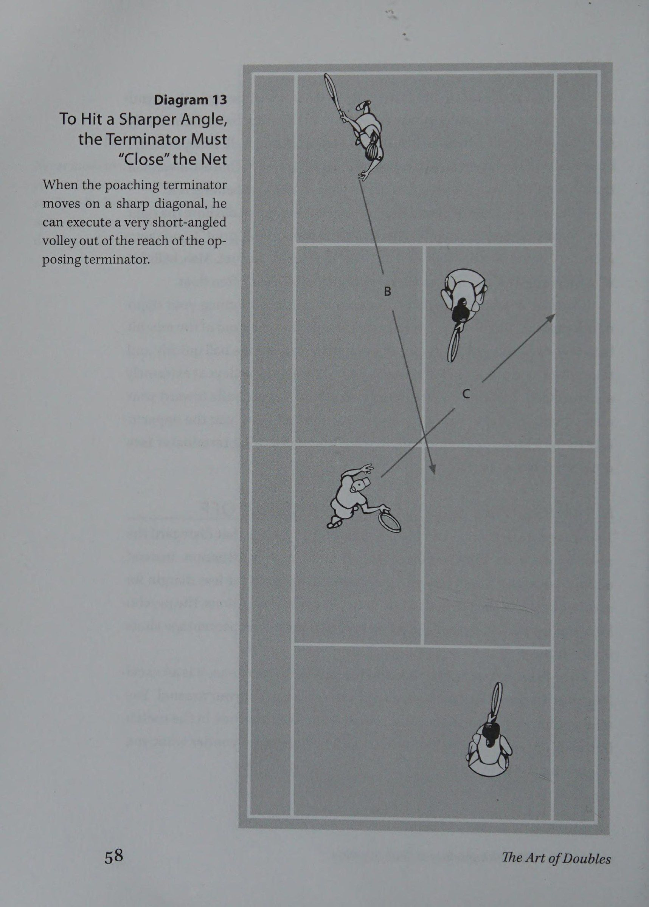
Khi tay vợt kết liễu cắt lưới cướp điểm di chuyển theo một đường chéo sắc nét, anh ta có thể thực hiện một cú vô lê góc rất ngắn ngoài tầm với của tay vợt kết liễu đối phương.
Diagram 13 To Hit a Sharper Angle, the Terminator Must “Close” the Net When the poaching terminator moves on a sharp diagonal, he can execute a very short-angled volley out of the reach of the op- posing terminator.
Việc sử dụng lựa chọn cú đánh có tỷ lệ phần trăm thấp sẽ không giúp thắng trận đấu, nhưng nó sẽ đưa ra quyết định. Khi bạn nhận được cú giao bóng lúc quảng cáo xuất hiện, người giao bóng đang gặp phải điểm dừng. Anh ta có thể mắc lỗi kép và thua giao bóng, điều mà anh ta chỉ có lỗi với bản thân mình, nhưng nếu anh ta để mất ván giao bóng của mình, anh ta cũng biết rằng việc giành chiến thắng trong lần tiếp theo là nằm trong khả năng của anh ta. Mặt khác, nếu bạn, với tư cách là người nhận giao bóng, khiến anh ta thua giao bóng bằng cách làm anh ta ngạc nhiên bằng một cú vô lê tuyệt vời có tỷ lệ lốp bóng thấp tuyệt vời dành cho người chiến thắng, hoặc một cú vô lê có góc nhẹ khiến anh ta không hài lòng, anh ta có thể cảm thấy không có khả năng kiểm soát được trò chơi giao bóng của mình nữa.
Using low-percentage shot selection doesn’t win matches, but it does make statements. When you are receiving serve at ad-out, the server is facing break point. He may double fault and lose his serve, for which he has only himself to blame, but if he does give his service game away, he also knows that winning it the next time is within his power. If, on the other hand, you, as the receiver, cause him to lose his serve by surprising him with a superb low-percentage lob volley for a winner, or a softly angled volley that wrong-foots him, he may well feel incapable of ever controlling his service game again.
Thực hiện thành công một cú đánh có độ rủi ro cao không chỉ là yếu tố tạo dựng sự tự tin tuyệt vời cho đội của bạn mà còn là tay vợt kết liễu tinh thần đối thủ của bạn. Những tay vợt đánh đôi giỏi biết khi nào là thời điểm thích hợp và sẽ không ngần ngại thử một cú đánh rất khó, ngay cả khi đang trong loạt tiebreak. Hãy nhớ rằng tiebreak được thiết kế để kết thúc và bạn không nên hoảng sợ nếu không vượt lên dẫn trước 6-0. Nếu bạn nhận thấy mình nhận được giao bóng với tất cả 5 điểm trong một trận hòa, bạn nên coi đây là thời điểm thích hợp để gây bất ngờ cho đối thủ bằng sự can đảm và lòng dũng cảm của mình bằng cách cố gắng giành chiến thắng rõ ràng. Nếu bạn thực hiện được, đội của bạn sẽ giao bóng cho hiệp đó ở điểm tiếp theo. Nếu bỏ lỡ, bạn vẫn “đang giao bóng và phải chăm chỉ để giữ cả hai điểm giao bóng của mình. Trong khi đó, bạn có thể đã khiến đối thủ sợ chết khiếp với khả năng dũng cảm trước áp lực của mình.
Executing a high-risk shot successfully is not only a wonderful confi- dence builder for your team, but also a morale destroyer for your opponents. Great doubles players know when the time is right and will not hesitate to try a very difficult shot, even in a tiebreak. Bear in mind that a tiebreak is designed to be close, and you should not panic if you fail to leap to a 6-0 lead. If you find yourself receiving serve at 5 points all in a tiebreak, you should consider this a good time to surprise your opponents with your guts and courage by trying to make a clean winner. If you make it, your team serves for the set on the very next point. If you miss it, you are still “on serve and should work hard to hold both your service points. Meanwhile, you have probably scared your opponents to death with your ability to be courageous under pressure.
Biết lúc nào nên thoát khỏi cú đánh
Các đội đánh đôi có kinh nghiệm biết khi nào nên gây áp lực với đối thủ bằng cách chọn tỷ lệ đánh thấp, khi nào nên chơi quần vợt có tỷ lệ đánh bóng cao và cũng quan trọng không kém là khi nào nên cứu thua. Điều có vẻ giống như một sự lựa chọn cú đánh thông minh khi bạn giữ thăng bằng và sẵn sàng tấn công luôn là một ý tưởng tồi nếu bạn đột nhiên nhận thấy cơ thể mình không tập trung vào bàn chân của mình. Hãy phân biệt giữa việc chấp nhận rủi ro, có xác suất thành công hợp lý và việc không cứu trợ, hầu như không có xác suất thành công. Nếu bạn dự định thực hiện cú giao bóng của mình, trả lại đường đối phương một cách thuyết phục nhất, nhưng đột nhiên nhận thấy cú giao bóng ép buộc một cách bất ngờ, ý tưởng ban đầu của bạn không còn hợp lý nữa. Thay vì ngoan cố bám lấy nó, bạn nên thoát ra ngay lập tức, thay vào đó chọn chơi một cú lốp bóng phòng thủ. Không làm được như vậy không phải là quần vợt có rủi ro cao; đó là sự bất mãn vô nghĩa
KNOW WHEN TO BAIL OUT OF A SHOT Experienced doubles teams know when to pressure their opponents with low-percentage shot selection, when to play high-percentage tennis, and just as important, when to bail out. What may seem like an intelligent choice of shots when you are balanced and poised to strike is always a bad idea if you suddenly find that your body is not centered over your feet. Differentiate between risk taking, which has a reasonable probability of success, and failing to bail out, which has virtually no probability of success. If you plan to hit your service return down your opponent’ line in a most convincing manner, but suddenly find the serve unexpectedly forcing, your original idea is no longer plausible. Rather than stubbornly sticking to it, you should immediately bail out, choosing instead to play a defensive lob.
Sử dụng những cú đánh có độ rủi ro cao khi bạn chơi không tốt là công thức dẫn đến thảm họa. Nếu bạn không thể thực hiện các mũi tiêm “vani” thường lệ vào một ngày nhất định, thì chắc chắn bạn sẽ không thực hiện được các mũi tiêm có rủi ro cao. Có thể mất nhiều thời gian hơn nhưng hãy kiên nhẫn sử dụng kho vũ khí có tỷ lệ phần trăm cao của bạn.
Failure to do so is not high-risk tennis; it is mindless disre- gard for an emergency. Using high-risk shots when you are not playing well is a formula for disaster. If you can’t make the routine “vanilla” shots on a given day, you most certainly won't make the high-risk shots. It might take longer, but stick patiently to your high-percentage arsenal.
Chống lại sự cám dỗ trở thành anh hùng. Nếu tình huống đòi hỏi một cú vô lê an toàn có tỷ lệ phần trăm cao, hãy thực hiện nó. Đừng để những giấc mơ về sự cổ vũ và vỗ tay dành cho người chiến thắng không thể tin nổi che mờ tầm nhìn của bạn. Trên hết, hãy học cách thoải mái với việc biết rằng điểm cuối chỉ đơn giản là một quả bóng mà bạn mong đợi sẽ quay trở lại nhưng thực tế không phải vậy. Đội của bạn sẽ thực sự đến đích khi bạn bắt đầu coi quả bóng cuối cùng là một sự thất vọng hơn là một sự giải thoát.
Resist the temptation to be a hero. If the situation calls for a high-per- centage safe volley, make it. Don’t let the dreams of cheers and applause for the unbelievably impossible winner cloud your vision. Above all, learn to be comfortable with the knowledge that the end of the point is simply the one ball that you expected to come back, but didn't. Your team will have truly arrived when you begin to view the last ball as a disappointment rather than a relief.
Cuối cùng, đừng tỏ ra dễ thương, buồn chán, ngu ngốc, bướng bỉnh, ưa thích hay tham lam. Webster định nghĩa thông minh là "có kiến thức, hiểu biết và nhận thức. Một đội đánh đôi thực sự thông minh phải có tất cả những điều đó, nhuốm màu sự thận trọng, kiên nhẫn và khả năng cầm vợt vượt trội.
Finally, don’t get cute, bored, stupid, stubborn, fancy, or greedy. Web- ster defines intelligent as “having knowledge, understanding and aware- ness. A truly intelligent doubles team must have all of that, tinged with generous doses of discretion, patience, and superior racquet work.
Để chơi đánh đôi xuất sắc, điều cần thiết là bạn phải thành thạo khả năng đánh một số cú đánh nhất định. Và thật lãng phí thời gian và tiền bạc của bạn để học hỏi người khác. Những cú đánh bạn phải đưa vào tiết mục của mình bao gồm:
THE SHOTS YOU NEED To play great doubles, it is essential that you master the ability to hit cer- tain shots. And it is a waste of your time and money to learn others. The shots you must include in your repertoire include: The Half Volley Players spend too much time turning up their noses at the half volley and lose too many points trying to avoid it.
Các tay vợt chơi một nửa cú vô lê dành quá nhiều thời gian hếch mũi lên khi thực hiện một nửa cú vô lê và mất quá nhiều điểm khi cố gắng tránh nó. Điều này phần lớn là do việc thực hiện nó rất khó hiểu, Cú vô lê một nửa được thực hiện bằng một quả bóng đã chạm sân nhưng dù sao thì cũng phải thực hiện cú vô lê. Người chơi cố gắng sử dụng cú đánh tiếp đất để thực hiện cú đánh trong khi trên thực tế, việc tạo ra cú đánh phải sao chép chính xác cú đánh đó. Thực tế của vấn đề là cú vô lê nửa chừng là cú đánh quan trọng nhất trong đánh đôi, vì vậy bạn phải từ bỏ sự miễn cưỡng của mình và nắm lấy nó. Việc bạn có cần thực hiện cú vô lê nửa chừng thay vì cú vô lê thấp hay không hoàn toàn phụ thuộc vào chuyên môn của người trả giao bóng. Bạn không thể chạy trượt trên mũi để giữ cho nó không nảy lên cũng như không thể lùi lại và để bóng nảy lên để bạn có thể sử dụng toàn bộ cú đánh trên mặt đất. Tin tốt là nếu bạn có thể đánh một cú vô lê thấp, bạn có thể đánh một nửa cú vô lê vì chúng được chơi theo cùng một cách. Tin xấu là bạn phải học cách giữ nó đủ thấp để nó nảy ra trước mặt người chơi chéo sân khác. Nếu nó nảy về phía bạn và không bật về phía anh ta, anh ta sẽ tấn công tay vợt kết liễu không có khả năng tự vệ của bạn.
This is largely because its execution is confusing, The half volley is played off a ball that has struck the court but must be volleyed anyway. Players try to use a groundstroke to execute the shot when, in fact, the stroke production should precisely replicate that of a volley. The fact of the matter is that the half volley is the most impor- tant shot in doubles, so you must give up your reluctance and embrace it. Whether or not you need to play a half volley, rather than a low volley, is entirely a function of the expertise of the service returner. You can neither run skidding on your nose to keep it from bouncing nor back up and let the ball bounce so that you can use a full ground stroke. The good news is that if you can hit a low volley, you can hit a half volley because they are played in exactly the same way. The bad news is that you must learn to keep it low enough that it bounces in front of the other crosscourt player. If it bounces for you and doesn't bounce for him, he is going to hit down at your defense- less terminator.
Một cú giao bóng xoay Bạn cần giao bóng ở giữa để đối tác của bạn có cơ hội giành được khi trả giao bóng. Nhưng nếu tất cả những gì bạn có chỉ là một cú giao bóng thẳng, bạn đang gặp rắc rối nghiêm trọng. Tất cả những người giao dịch tốt nhất đều thích duỗi tay mà không cần di chuyển chân. Nếu tất cả những gì bạn có là một cú giao bóng thẳng ở giữa, thì cú giao bóng này có thể là quả bóng rơi vào "nhà vòng" của một người trả bóng giỏi, khu vực của sân nơi anh ta có thể đặt chân và phát bóng lên bóng, có thể khiến bạn ngã về phía sau. Cú giao bóng cắt lát (giả sử bạn là người chơi thuận tay phải) sẽ nhảy sang bên phải đối phương. Tung bóng sang bên phải của bạn và chỉ đánh vào phía bên phải của quả bóng. Đối với xoáy lên, cú ném đi ngược qua đầu bạn và ở bên trái. Chỉ đánh vào phía bên trái của quả bóng. Điều này sẽ làm cho quả bóng bật lên và nhảy sang bên trái của đối thủ. Việc xoáy lên hoặc cắt bóng sẽ khiến người trả bóng không thể đặt chân lên và anh ta sẽ phải chơi bóng ở độ cao kém thoải mái hơn.
A Spin Serve You need to serve up the middle so that your partner has an opportunity to poach on the return. But if all you have is a flat serve, you are in seri- ous trouble. All the best service returners love to get their hands extended without moving their feet. If all you have is a flat serve up the middle, then this serve may well be the ball that lands in a good returner’s “roundhouse, the area of the court where he can plant his feet and tee off on the ball, perhaps knocking you onto your rear. The slice serve (assuming you are a right-handed player) will jump to an opponent’s right. Toss the ball to your right and hit the right side of the ball only. For topspin, the toss goes back over your head and to the left. Hit the /eft side of the ball only. This will make the ball kick up and jump to your opponent's left. Either topspin or slice will make the returner unable to set his feet.
Bộ sưu tập vô-lê xuất sắc
Bạn không thể sở hữu một cú vô lê vì đối thủ của bạn không chỉ đánh bạn một quả bóng. Vì vậy, nhiều khi người chơi nghĩ cú vô lê chỉ là một cú đánh chung chung trong khi trên thực tế, mỗi người chơi phải sở hữu nhiều cú vô lê. Không có cú đánh khác
And he will have to play the ball at a less comfortable height. Spinning your serve allows you to remain in control of your first volley. An Excellent Array of Volleys You can’t just own a volley because your opponent doesn't just hit you a ball.
Bạn phải có khả năng phản ứng với nhiều cú đánh nhắm vào bạn từ nhiều vị trí khác nhau trên sân với những cú vô lê khác nhau. Bạn cần những cú vô lê sâu và xấu như một phần để phòng thủ trước các nữ hoàng lốp bóng (xem chương sáu). Bạn cần những cú vô lê góc vào cả đội nữ hoàng lốp bóng và đội lao vào lưới. Bạn cần những cú vô lê (những cú vô lê chạm khéo léo vừa đủ để chọc thủng lưới) khi bạn là người dứt điểm và tay vợt đang cố gắng đưa bóng qua bạn đã ở lại. Bạn cần những cú xoay người trong nhiều trường hợp khác nhau, nhưng quan trọng nhất là xử lý cú lốp bóng mà bạn đã đưa ra khỏi không trung thay vì để nó nảy lên (xem chương sáu). Và cuối cùng, bạn cần một cú vô lê lốp bóng (mở nhẹ mặt vợt để đưa bóng qua đầu anh ta) để khiến những tay vợt háo hức đánh chéo sân phải trả giá khi họ đóng lưới quá mức (hãy nhớ rằng cú lốp bóng chéo sân là vũ khí tàn khốc nhất mà bạn có). Cần lưu ý rằng cú vô lê trái tay bằng hai tay là một trách nhiệm rất lớn. Bạn không thể căng người tốt để có những cú đánh rộng, và bạn chắc chắn không thể xử lý những quả bóng đánh thẳng vào mình mà không trải qua những cú vặn xoắn đáng kinh ngạc.
So many times a player thinks of the volley as just one generic stroke when in fact each player must own a wide array of volleys. No other stroke demands such diversity. You must be able to respond to the variety of strokes aimed at you from various places on the court with different volleys. You need deep, ugly volleys as part of your defense against the lob queens (see chapter six). You need angle volleys against both the lob queens and the net-rushing teams. You need drop volleys (deft touch volleys that just barely clear the net) when you are the terminator and the player trying to drive the ball through you has stayed back. You need swinging volleys for a variety of circumstances, but most importantly, to handle the lob you have taken out of the air rather than allowing it to bounce (see chapter six). And finally, you need a lob volley (open the face of the racquet slightly to loft the ball over his head) to make those over eager crosscourt players pay when they have over-closed the net (remember that the crosscourt lob is the most devastating weapon you have).
Một cú đập trên cao sáng tạo Nhiều người chơi nghĩ rằng một cú đập từ trên cao chỉ như vậy—một quả bóng giòn cứng đến mức người chơi có thể vung lên. Nhưng đó là những quả bóng mà nữ hoàng lốp bóng lại lốp tốt hơn lần lốp bóng cuối cùng mà họ đánh được. Điều rất quan trọng là phải sở hữu một góc trên cao để bạn có thể nhắm vào bên trong đường dịch vụ vào một trong hai hành lang biên. Những cú đánh này hoàn toàn nằm ngoài tầm với của những nữ hoàng lốp bóng cố thủ ở vạch cuối sân, và chúng chắc chắn sẽ rút ngắn những gì lẽ ra là một ngày dài ở văn phòng. Nếu bạn là một người chơi thuận tay phải, hãy cắt phần trên cao từ ô sân Deuce và sử dụng ý tưởng về cú giao bóng xoáy lên từ ô sân Ad. Thực hiện những cú đánh này từ sâu trong sân nếu chuyên môn của bạn cho phép.
Be aware that a two-handed backhand volley is a huge liability. You cannot stretch well for wide shots, and you most definitely cannot handle balls hit directly at you without going through amazing contortions. A Creative Overhead Many players think an overhead smash is just that—a ball crunched as hard as the player can swing. But those are the balls that the lob queens re-lob better than the last lob they hit. It is very important to own an angled overhead that you can aim inside the service line into either alley. These shots are totally out of the reach of the lob queens entrenched on the base- line, and they definitely shorten what would otherwise be a long day at the office.
Một cú đánh trái tay Khi bạn thực hiện một cú công bóng trái tay, bạn phải dừng lại và đặt chân lên vì bạn đang vung ra khỏi cơ thể. Tất cả các cú trả giao bóng đều là các cú đánh tiếp cận lưới và tất cả các cú đánh tiếp cận lưới đều được thực hiện khi đấu thủ đang di chuyển về phía trước vào vị trí. Bạn có thể di chuyển qua một cú cắt trái tay vì hầu như không có chuyển động xoay cơ thể nào liên quan đến việc thực hiện nó. Sự chuẩn bị chính xác giống như một cú vô lê, và việc dao từ cao xuống thấp xuyên qua quả bóng sẽ tạo ra xoáy xuống. Nếu bạn không thể cắt trái tay của mình, thì bạn không thể di chuyển trong lượt trả bóng của mình và bạn sẽ đến vị trí lưới của người chơi chéo sân muộn—có lẽ rất lâu sau khi người giao bóng đến. Kết quả phổ biến nhất là bạn sẽ thấy mình phải lao lên người giao bóng đang chờ đánh xuống. Tất nhiên, bạn có thể luôn di chuyển về phía lưới khi thực hiện cú công bóng thuận tay vì bạn đang đánh về phía cơ thể mình. Khi bạn đánh về phía cơ thể, bạn đang đánh theo hướng bạn đang di chuyển.
If you are a right-handed player, slice the overhead from the deuce court and use the idea of the topspin serve from the ad court. Execute these shots from as deep in the court as your expertise allows. A Slice Backhand When you hit a backhand drive, you have to stop and plant your feet be- cause you are swinging away from your body. All service returns are ap- proach shots to the net, and all approach shots to the net are hit while the player is moving forward into position. You can move through a back- hand slice because there is almost no body rotation associated with its execution. The preparation is exactly that of a volley, and knifing from high to low through the ball creates the underspin. If you can’t slice your backhand, then you can't move through your return, and you will arrive in your crosscourt player's net position late—perhaps well behind the servers arrival.
Một cú đánh nhỏ Vũ khí tàn khốc nhất mà bạn có để chống lại những kẻ lạm dụng liên tục là một cú bỏ nhỏ tốt. Sự kiện yêu thích của họ là giao bóng cho bạn và chờ cú đánh thấp, mạnh và sâu của bạn hạ cánh trong khoảng thời gian gần vạch cuối sân của họ (xem chương sáu). Mỗi giờ bạn dành ra trên sân tập đều đáng giá để phát triển một cú đánh bóng tinh tế và đáng tin cậy. Không gì bạn có thể làm để chống lại họ khiến họ khó chịu hơn cú chạm này. Họ chỉ đơn giản là không có câu trả lời cho nó. Chìa khóa để đánh một cú bỏ nhỏ hoàn hảo là nhận ra rằng bạn nên sử dụng khả năng tạo cú đánh của cú vô lê để tạo ra xoáy xuống và đảm bảo rằng nó có độ cao lớn. Hãy chắc chắn rằng bạn giữ đỉnh ở phía bạn vì nó càng ở phía bạn cao thì nó càng giảm về phía họ.
The most common result is that you will find yourself hav- ing to volley up to a server waiting to hit down. You can, of course, always move toward the net on your forehand drive because you are hitting to- ward your body. When you hit toward your body, you are hitting in the direction you are moving. A Dropshot The most devastating weapon you have against incessant lobbers is a good dropshot. Their favorite event is to serve to you and wait for your low, hard, and deep drive to land in their timing space near the baseline (see chapter six). It is worth every hour you spend on the practice court to develop a reli- able and delicate dropshot. Nothing you could do against them discomfits them more than this touch shot.
Một cú lốp xoáy dưới Nếu tất cả những gì bạn sở hữu là một cú lốp bóng “phẳng”, một phiên bản rút gọn của cú công bóng của bạn, thì các lựa chọn của bạn sẽ bị hạn chế. Gần như không thể thực hiện được một cú lốp bóng phẳng trong một cú giao bóng lớn vì bạn không thể kiểm soát bóng trên dây đủ tốt với tốc độ đó. Bạn phải đợi một cú giao bóng thứ hai nhẹ nhàng hơn trước khi có thể thực hiện một cú lốp bóng tấn công tốt, và điều đó có thể sẽ mất một thời gian. Một cú lốp bóng xoáy xuống có thể được thực hiện từ bất kỳ cú giao bóng nào, sẽ nảy lên và dừng lại do xoáy, và sẽ ở trên sân trong gió. Nó cũng là một cú đánh được ngụy trang một cách xuất sắc bởi vì nó trông giống như cú đánh thả và lát cắt chéo sân tấn công hoặc trả chip của bạn. Một lần nữa, việc tạo ra cú đánh bắt chước cú vô lê.
They simply have no answer for it. The key to hitting a perfect dropshot is to recognize that you should use the stroke pro- duction of your volley to create underspin and make sure it has a great deal of height. Make sure that you keep the apex on your side because the higher it is on your side, the shorter it drops on their side. 6 3 An Underspin Lob If all you own is a “flat” lob, an abbreviated version of your drive, your op- tions are limited. It is nearly impossible to hit a flat lob off a big serve be- cause you can’t control the ball on your strings well enough against that pace.
CÁC ĐIỂM BẠN KHÔNG CẦN Trước khi chi hàng ngàn đô la cho các bài học, hãy tự hỏi bản thân xem bạn có ý định trở thành một tay vợt đánh đơn và đánh đôi hay bạn chỉ định chơi đánh đôi. Nếu bạn có ý định trở thành một chuyên gia đánh đôi, bạn không nên tiêu tiền của mình vào những cú đánh phù hợp hơn với sân đánh đơn, bao gồm cả những cú đánh phù hợp hơn với sân đánh đơn.
You have to wait for a softer, second serve before you can hit a good offensive lob, and that might be a while. An underspin lob can be executed off any serve, will bounce and stop dead because of the spin, and will stay in the court in the wind.
Những cú chạm đất xoáy lên Ngày nay, bạn đơn giản là không thể thi đấu trên sân đánh đơn nếu không sở hữu những cú chạm đất xoáy lên. Nếu đối thủ của bạn có chúng còn bạn thì không, bạn sẽ dành cả trận đấu để bám vào các bậc cao nhất của hàng rào phía sau. Nhưng trừ khi khả năng thành thạo của bạn về xoáy lên bao gồm khả năng thực hiện những cú trả giao bóng có góc nghiêng nghiêm trọng, nếu không thì quả bóng của bạn sẽ đi lên và được giải phóng lưới ngay khi người giao bóng đến đúng vị trí để đánh bóng của bạn trên sân đôi. Nếu tất cả những gì bạn có là xoáy lên và kiểu cầm vợt cực tây, thì ít nhất hãy học cách làm phẳng chúng khi trả giao bóng. Ngoài ra còn có vấn đề là phải thay đổi cách cầm vợt một cách triệt để khi bạn vào lưới để thực hiện cú vô lê. Với những trường hợp ngoại lệ hiếm hoi, người chơi sẽ không thành công trên lưới nếu không có tay vợt châu lục.
It is also an excellently disguised shot because it looks just like your dropshot and offensive crosscourt slice or chip return. Again, the stroke production mimics that of the volley. THE SHOTS YOU DON'T NEED Before you spend thousands of dollars on lessons, ask yourself if you intend to be both a singles and a doubles player or if you intend to stick to doubles only. If you intend to become a doubles specialist, you shouldn't spend your money on shots more appropriate for the singles court, which include. Topspin Groundstrokes These days you simply cannot compete on the singles court without own- ing topspin groundstrokes. If your opponent has them and you don't, you will spend the match clinging to the uppermost rungs of the back fence.
Một cú giao bóng lớn, phẳng Nếu một cú giao bóng xoáy là cần thiết cho trò chơi đánh đôi của bạn, thì một cú giao bóng lớn, phẳng chắc chắn không phải là một lựa chọn tốt. Nó không chỉ cho phép những người nhận bóng giỏi phát bóng mà còn rút ngắn đáng kể thời gian bạn phải chuẩn bị trước khi bóng quay trở lại. Ý tưởng giao bóng Át trong nội dung đôi là điên rồ. Đối với mỗi con át bạn đánh, mười cú trả bóng sẽ đến với cây vợt đang dang rộng của bạn nhanh hơn mức bạn có thể chuẩn bị để tung chúng.
But unless your mastery of topspin includes the ability to hit severely dip- ping angled service returns, your ball is going to be rising and gaining net clearance just as the server arrives in position to hit down on your ball on the doubles court. If topspin and extreme western grips are all you have, at least learn to flatten them out when returning serve. There is also the problem of having to make a radical grip change when you arrive at the net to volley. With rare exceptions, players will not be successful at the net without a continental grip.
Một cú lốp bóng xoáy lên Nếu bạn đã sở hữu một cú lốp bóng xoáy lên, bạn thật may mắn. Nhưng việc một người chơi đánh đôi mua một chiếc là không đáng thời gian và tiền bạc vì công dụng của nó quá ít. Đánh một cú lốp bóng xoáy lên cần có thời gian và bạn phải vững vàng. Do đó, bạn không thể sử dụng nó như một cú giao bóng trả lại, bởi vì bạn cần phải tiến về phía trước và bạn không thể sử dụng nó như một người giao bóng thay cho cú vô lê đầu tiên của mình — hy vọng rằng điều đó sẽ không xảy ra với bạn. Trường hợp duy nhất mà bạn có thể sử dụng nó là khi đội của bạn đang ở vị trí phòng thủ và bạn có thời gian bước vào cú đánh và nâng nó qua đầu của đội trên lưới. Việc sử dụng nó trong đánh đôi quá chuyên biệt nên không có giá trị đáng kể.
A Big, Flat Serve If a spin serve is a necessity for your doubles game, then a big, flat serve is definitely not a good option. Not only does it allow good receivers to tee off, but it also significantly shortens the time you have to get set before the ball comes back. The idea of serving aces in doubles is folly. For every ace you hit, ten returns will come whizzing by your outstretched racquet faster than you can prepare to volley them. A Topspin Lob If you already own a topspin lob, you are fortunate. But it is not worth the time and money for a doubles player to acquire one because its uses are so few.
Trái tay bằng hai tay Những trái tay bằng hai tay là không cần thiết trong đánh đôi. Nếu bạn có một cái, thì bạn có thể đạt được một cú trả giao bóng rất hiệu quả với nó, nhưng nếu bạn không có nó, đừng bận tâm học một cái trừ khi bạn đang bị chứng khuỷu tay quần vợt cực độ. Tất cả những gì bạn thực sự cần là cắt lát bằng một tay. Ngoài ra, những người chơi đánh trả bằng hai tay thường gặp khó khăn trong việc loại bỏ tay không thuận ra khỏi vợt và nhanh chóng chuyển sang cú vô lê trái tay bằng một tay. Nhiều người chơi cảm thấy khó khăn khi xử lý một cú giao bóng có độ nảy cao về phía trái tay khi họ sử dụng cả hai tay trên vợt.
Hitting a topspin lob takes time, and you have to set your feet. There- fore you can't use it as a service return, because you need to be moving forward, and you can't use it as a server in place of your first volley—hope- fully, that wouldn't occur to you. The only circumstance in which you could use it is when your team is in the defensive court position and you have the time to step into the shot and lift it over the net team’s heads. Its use in doubles is too specialized to be of significant value. A Two-Handed Backhand Two-handed backhands are superfluous in doubles.
Cũng giống như việc bạn cẩn thận lựa chọn trang phục chơi tennis phù hợp và cây vợt hoàn hảo mang lại cảm giác tuyệt vời đó, bạn cũng nên đảm bảo rằng mình sở hữu tất cả các thiết bị đánh bóng giúp lựa chọn cú đánh thông minh.
If you have one, then you can hit a very effective service return with it, but if you don't have one, don't bother to learn one unless you are suffering from extreme tennis el- bow.
: Danh sách kiểm tra lựa chọn cú đánh
All you really need is the one-handed slice.
Chơi phần đầu, phần giữa và phần cuối của mỗi điểm
Also, players who hit their returns with two hands often struggle to take the non-dominant hand off the racquet and switch quickly to the one-handed backhand volley. Many players find it difficult to handle a high-bouncing kick serve to the back- hand when they use two hands on the racquet. Just as you carefully select the proper tennis clothes and the perfect racquet with that great feel, so should you make sure that you own all the stroke equipment that produces intelligent shot selection. : Shot Selection Checklist Ae oO Play the beginning, the middle, and the end of each point in order.
Hãy nhớ rằng những sai lầm bạn mắc phải khi bắt đầu một điểm thường là do bạn không muốn chơi một điểm dài.
Remember that mistakes you make in the beginning of a point are generally due to an unwillingness to play a long point.
Những sai lầm bạn mắc phải ở giữa ý thường là do không hiểu Tiên đề Deep to Deep, Short to Short
Mistakes you make in the middle of the point are often caused by not understanding the Deep to Deep, Short to Short Axiom (see page 48).
Những sai lầm bạn mắc phải khi cố gắng kết thúc điểm là do không biết mục tiêu trên sân nằm ở đâu (xem
Mistakes you make while trying to end the point result from not knowing where the targets on the court lie (see diagram thirteen).
Sử dụng các cú đánh có tỷ lệ thấp, rủi ro cao một cách thông minh và chỉ khi xu hướng trận đấu cho phép.
Use low-percentage, high-risk shots intelligently and only when the tenor of the match allows it.
Hãy biến quần vợt có tỷ lệ cược cao thành quy luật chứ không phải ngoại lệ.
Make high-percentage tennis the rule, not the exception.
Đừng bao giờ nhận được CBS: dễ thương, buồn chán hay ngu ngốc.
Don't ever get CBS: cute, bored or stupid.
Nắm vững các cú đánh bạn cần để chơi đánh đôi thông minh.
Master the shots you need to play intelligent doubles.
Bỏ qua việc học các cú đánh phù hợp hơn với sân đánh đơn.
Forgo learning shots better suited to the singles court.
Chương 5. Rèn Kỹ Năng Cắt Lưới Cướp Điểm
Develop Superior Poaching Skills
Chỉ bằng cách mạo hiểm con người của chúng ta từ giờ này sang giờ khác mà chúng ta mới sống được. Và thường thì niềm tin của chúng ta trước đó vào một kết quả không chắc chắn là điều duy nhất khiến kết quả đó trở thành hiện thực.
D Develop Superior Poaching Skills It is only by risking our persons from one hour to another that we live at all. And often enough our faith beforehand in an un- certified result is the only thing that makes the result come true.
Đôi khi chỉ riêng từ “cắt lưới cướp điểm” cũng đủ khiến học trò của tôi đổ mồ hôi lạnh. Khi tôi giảng về kỹ thuật này, ý tưởng này thường gặp phải những nụ cười ngượng ngùng, nhưng trong mắt học sinh, tôi đọc được: “Ôi Chúa ơi, bạn sẽ khiến tôi có nguy cơ trông như một kẻ ngốc, và có thể tôi sẽ làm điều đó trong bài học này để làm hài lòng bạn, nhưng bạn sẽ không bao giờ bắt gặp tôi chạy qua lưới và đưa bóng của đồng đội tôi vào lưới trong một trận đấu”. Đôi khi, họ quyết tâm vượt qua nỗi sợ bị cắt lưới cướp điểm hoặc “lấy bóng của đối tác? họ lao qua lưới nhanh đến mức cuối cùng làm gián đoạn một điểm ở phần sân tiếp theo, không thể phanh kịp thời. Đôi khi, họ phải nghe những người giao bóng ngoan cố của chính họ khuyên răn từ phía sau, “Bạn biết đấy, nếu bạn lấy bóng của tôi trong một trận đấu, tôi sẽ giết bạn.” Đôi khi, họ bắt đầu di chuyển qua lưới, vung bóng điên cuồng, đổi ý và rút lui, sau đó họ đi vòng tròn, quay lại để xem đối tác của họ có ở đó để chơi bóng hay không, và cuối cùng giơ tay lên và kêu gọi tôi trong sự bối rối tột độ.
William James Sometimes the word “poaching” itself is enough to make my students break into cold sweats. When I give a lesson on this technique, the idea is usually met with sheepish grins, but in the students eyes I read, “Oh my God, youre going to make me risk looking like a fool, and maybe I'll do it in this lesson to humor you, but you'll never catch me running across the net and putting my partner's ball in the bottom of the net in a match. Sometimes in their determination to conquer their fear of poaching, or “taking a partner's ball? they careen across the net so fast they end up interrupting a point on the next court over, unable to put on the brakes in time. Sometimes they have to listen to their own recalcitrant servers admonish from behind them, “You know, if you ever took my ball in a match, Id kill you.
Người cắt lưới cướp điểm vĩ đại là thế lực đáng sợ nhất mà người nhận có thể phải đối mặt, nhưng để hành động cần phải có lòng can đảm và biết thời điểm và cách thức
Sometimes they start to move across the net, swing wildly at the ball, change their minds, and retreat, after which they make a circle, turn around to see if their partners are there to play the ball, and ultimately throw up their hands and appeal to me in utter confusion.
ĐỂ DI CHUYỂN VÀ ĐỊA ĐIỂM ĐÁNH BÓNG LÀ KỸ NĂNG CÓ MỘT SỐ PHỨC TẠP.
A GREAT POACHER IS THE MOST INTIMIDATING FORCE A RECEIVER CAN FACE, BUT MAKING THE MOVE TAKES COURAGE, AND KNOWING WHEN AND HOW TO MOVE AND WHERE TO HIT THE BALL ARE SKILLS OF SOME INTRICACY.
Nếu bạn và đối tác của bạn chọn không trở thành một đội ra tín hiệu (những ưu điểm và nhược điểm của việc ra hiệu cho những người cắt lưới cướp điểm của bạn sẽ được thảo luận sau trong chương này), thì khi chơi trên lưới, bạn có thể trở thành một vận động viên tự do đầy đe dọa mà chuyển động của họ có thể phá hủy khả năng trả giao bóng của đối thủ.
Ifyou and your partner choose not to be a signaling team (the advantages and disadvantages of signaling your poaches are discussed later in this chapter), then you, when playing the net, can become a menacing freelancer whose movement can destroy your opponents ability to return serve.
Lên kế hoạch cắt lưới
Một trong những bí quyết để trở thành một tay cắt lưới cướp điểm tài ba là tin rằng bạn sẽ có cơ hội cắt lưới cướp điểm mọi cú giao bóng của đối tác và bạn tận hưởng cơ hội đó. Không phải lúc nào mọi chuyện cũng diễn ra như vậy, nhưng bạn nên bắt đầu với giả định đó. Bạn không thể trì hoãn người giao bóng của mình đối với mỗi quả bóng đi qua lưới vì có ba lý do chính đáng để cắt lưới cướp điểm:
PLAN TO POACH One of the secrets to becoming an accomplished poacher is to believe that you will have a chance to poach on every serve your partner hits and that you relish the opportunity. It doesn’t always work out that way, but you should start with that assumption.
- 1. Mỗi khi bạn săn bóng, bạn sẽ tạo ra một góc nhìn mới và khác biệt. Điều này khiến đối phương phải nhanh chóng điều chỉnh cú đánh bóng.
- 2. Cắt lưới cướp điểm cho phép bạn chơi một quả bóng “từ ngắn đến ngắn”—mục tiêu được mong muốn nhất trên sân (xem chương bốn).
- 3. Bạn là tài sản vô giá đối với người giao bóng của mình. Anh ta sẽ đánh ít bóng hơn và bớt mệt hơn rất nhiều. Ngay khi đối tác của bạn chuẩn bị giao bóng, hãy giữ tư thế quyết liệt ở giữa ô giao bóng. Khi bạn nghe thấy anh ta thực hiện cú giao bóng, hãy di chuyển thẳng về phía lưới, đồng thời quan sát xem người nhận bóng đang chuẩn bị vợt để đánh bóng trong hay bóng ngoài. Bạn không thể cắt lưới cướp điểm bên ngoài (chẳng hạn như cú thuận tay của người thuận tay phải ở ô sân Deuce) vì góc của đường chéo đang chạy ra xa bạn. Nếu quả giao bóng đi ra ngoài, hãy tôn trọng trách nhiệm phản ánh của bạn và quên đi mọi suy nghĩ về việc cắt lưới cướp điểm. Tuy nhiên, nếu quả giao bóng hướng vào trong, bạn phải di chuyển đến đường giữa và che phần giữa ở mức tối thiểu (xem sơ đồ mười bốn). Phong trào này không phải là tùy chọn. Nó giống như đọc hướng dẫn trên hộp. Nếu muốn làm bánh, bạn hãy làm theo hướng dẫn trên hộp. Tại đường giữa, hãy quyết định xem bạn có muốn xâm chiếm phần sân của đối tác hay không và thực hiện hành vi cắt lưới cướp điểm của mình. Bạn không bao giờ bị buộc phải vượt qua đường giữa sân, đặc biệt nếu bạn cảm thấy cú trả bóng quá nhanh, quá thấp hoặc quá rộng. Tuy nhiên, bạn phải tin rằng bạn sẽ có cơ hội đánh chặn mỗi cú giao bóng bên trong. Chìa khóa để cắt lưới cướp điểm xuất sắc là nhận ra rằng, miễn là hành động đó không phải là hành động cắt lưới cướp điểm được báo hiệu, bạn hoàn toàn không có nghĩa vụ phải bay qua sân vào ngõ của đối tác chỉ vì bạn đã bắt đầu hành động. Sẽ không có gì sai nếu bạn thay đổi quyết định về dây căng lưới. Trong thực tế, nó thường là thận trọng. Sai lầm thực sự là đi lảo đảo vào
You cannot defer to your server on every ball that crosses the net because there are three excellent reasons to poach 1. Every time you poach a ball, you create a new and different angle. This causes the opposition to have to make rapid adjustments to a ball hit very sharply. 2. Poaching allows you to play a ball “short to short”—the most desirable target on the court (see chapter four). 3. You are an invaluable asset to your server. He will hit many fewer balls and be a lot less tired. Just as your partner prepares to serve, assume your fierce posture in the middle of your service box. As you hear him hit the serve, move straight toward the net, all the while watching whether the receiver is preparing his racquet to hit an inside ball or an outside ball. You cannot poach on the outside ball (a right-hander’s forehand in the deuce court, for exam- ple) because the angle of the crosscourt is running away from you. If the serve goes to the outside, honor your mirroring responsibilities and forget all thoughts of poaching. If, however, the serve is to the inside, you must move to the center line and cover the middle at a minimum (see diagram fourteen). This movement is not optional. It is like reading the instructions on the box. If you want to make a cake, you follow the directions on the box. At the center line, decide if you wish to encroach upon your partner's court and execute your poach. You are never obligated to cross the center line, particularly if you feel that the return is too fast, too low, or too wide. And yet you must believe that you will have a chance to intercept on each inside serve. The key to brilliant poaching is to realize that, as long as the move is not a signaled poach, you are under absolutely no obligation to go flying across the court into your partner's alley just because you have begun the move. It is not a mistake to change your mind at the netstrap. In fact, it is often prudent.
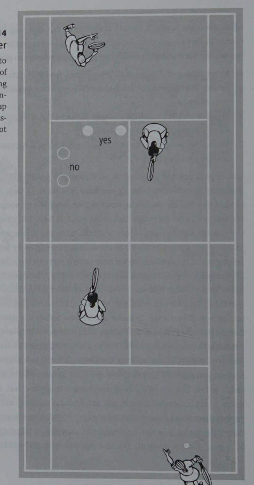
Những cú giao bóng rộng không tốt để thực hiện vì góc trả giao chéo sân đang chạy xa bạn. Chờ hoặc khuyến khích đối tác của bạn giao bóng ở giữa để bạn có thể dễ dàng chặn góc hơn và không phải canh giữ hành lang biên của mình. sân của đối tác của bạn hoặc ngăn chặn tầm nhìn của đối tác của bạn và quay lại nhìn anh ta thay vì tránh đường.
The real mistake is to go lurching wildly into “*%~ Diagram 14 Be a Patient Poacher Wide serves are not good to poach on because the angle of the crosscourt return is running away from you. Wait for or en- courage your partner to serve up the middle so you can more eas- ily intercept the angle and not have to guard your alley.
Lý do hủy pha cắt lưới
Dưới đây là một số lý do chính đáng để bạn dừng di chuyển giữa chừng và nhanh chóng lùi về vị trí ban đầu: ¢ Nếu, khi bắt đầu cắt lưới cướp điểm, bạn thấy bóng bị đánh mạnh và đang hướng về phía ngõ của đối tác, bạn có thể sẽ không bao giờ bắt kịp nó. Bạn nên rút lui. ¢ Nếu bạn đã băng qua phần sân của đối tác và nhận thấy rằng khi bóng đến chỗ bạn, nó gần ngang bằng với lưới hoặc thấp hơn lưới, hãy bước ra xa và để bóng đi qua đối tác của bạn, người sẽ chơi dễ dàng hơn nhờ khoảng cách của anh ấy với lưới. « Nếu đối thủ của bạn thực hiện cú giao bóng của đối tác của bạn từ rất sớm và từ rất gần đường giao bóng, thì nó cũng có thể bị đẩy lên cao hơn. Trong trường hợp này cũng vậy, bạn nên rút lui vì bạn không có thời gian để phản ứng với quả bóng. « Nói chung, hãy rút lui khỏi những quả bóng có góc nghiêng xa khỏi bạn, những quả bóng đánh mạnh đến mức bạn không thể phản ứng kịp thời và những quả bóng đi qua lưới quá thấp để bị trừng phạt. Nếu bạn làm theo những nguyên tắc này, bạn sẽ thành công cao trong việc loại bỏ những quả bóng mà bạn chọn để đánh chặn. Khi bạn hiểu mình nên lấy quả bóng nào và quả bóng nào bạn nên giao cho đối tác, chuyển động của bạn sẽ trở nên tự tin và linh hoạt, đồng thời bạn có thể bắt đầu ứng biến.
your partner's court or to stop dead square in your partner's line of sight and turn around to look at him instead of getting out of the way. REASONS TO ABORT A POACH Here are several legitimate reasons to stop your move in midflight and quickly sidestep back into your original position: ¢ If, having begun your poach, you see that the ball is hit hard and is head- ed for your partner's alley, you probably would never catch up with it. You should retreat. ¢ If you have crossed into your partner's court and find that, when the ball reaches you it is approximately level with the net or below it, step away and let the ball go through to your partner, who should have an easier play by virtue of his distance from the net. « If your opponents play your partner's serve very early and from very close to the service line, it may also be taken on the rise. In this case, too, you should retreat because you have no time to react to the ball. « In general, withdraw from balls angling sharply away from you, balls hit so hard that you can't react in time, and balls crossing the net too low to punish. If you follow these guidelines, you will be highly successful in putting away those balls you do choose to intercept. Once you understand which balls you should take and which balls you should let go through to your partner, your movement will become confident and fluid, and you can begin to improvise. STRATEGIES FOR POACHING - Imagine that your partner serves wide to the player in the ad court. Hav- ing first discharged your mirroring responsibility by covering your alley, you realize that while the service return is angling away from you, it is a slow-moving, high “sitter.
Chiến lược cắt lưới cướp điểm
- Hãy tưởng tượng rằng đối tác của bạn giao bóng rộng cho người chơi trong ô sân Ad. Lần đầu tiên thực hiện trách nhiệm phản chiếu của mình bằng cách bao phủ hành lang biên của mình, bạn nhận ra rằng mặc dù dịch vụ hoàn trả đang rời xa bạn, nhưng đó là một “người trông nom” di chuyển chậm và cao. Đi lấy nó đi! Tốc độ và độ cao của quả bóng không gây trở ngại gì cho bạn nên chiếc phao có thể thuộc về bạn nếu bạn muốn. Một người cắt lưới cướp điểm vĩ đại sẽ luôn muốn nó. Giả sử người chơi ở ô sân Deuce trả giao bóng tốt đến mức bạn vẫn chưa đánh được cây vợt của mình vào một trong những cú trả giao bóng của anh ta. Yêu cầu đối tác của bạn đánh một quả giao bóng rộng. Sau đó, hãy thử giả vờ với tư thế khá thờ ơ để khiến người nhận tin rằng bạn đã mất tập trung. Ngay trước khi người chơi chuẩn bị tấn công, hãy thực hiện một động tác giả để cắt lưới cướp điểm và ngay lập tức di chuyển để che chắn hành lang biên của bạn. Nhiều khi mưu đồ này sẽ khiến bạn có ý định vượt qua bạn trong hành lang biên mà bạn đã chuẩn bị sẵn sàng. Mặc dù về mặt kỹ thuật, đây không phải là một trò cắt lưới cướp điểm, nhưng đó là một quả bóng nữa mà bạn, không phải người giao bóng của bạn, chơi và mỗi khi bạn giúp đỡ anh ta, anh ta sẽ biết ơn. Đừng quên mỉm cười khi bạn tung cú vô lê giành chiến thắng giữa hai đối thủ đang choáng váng. Một chiến thuật thành công khác được những người cắt lưới cướp điểm xuất sắc sử dụng là thay đổi vị trí xuất phát của sân. Điều đầu tiên người nhận làm khi chuẩn bị trả giao bóng là ghi lại vị trí ở phần sân của đối tác giao bóng. Loại bỏ hai trong số các tùy chọn giao bóng-trả bóng của người nhận bằng cách đặt mình đủ gần các đường giao bóng để ngăn cản cú lốp bóng và đủ gần ngõ của bạn để ngăn chặn một cú đánh dọc biên. Thế đứng của bạn thường sẽ tạo ra cú trả giao bóng chéo sân mà bạn đang muốn giành được. Nếu bạn đảm nhận vị trí này, hãy điều chỉnh về phía trước và đến giữa sân của bạn ngay khi bạn nghe thấy đối tác của mình giao bóng. Nếu không, bạn sẽ có quá nhiều sân để che đậy cho một người cắt lưới cướp điểm thành công. Hãy nhớ rằng vị trí này là giả, được giả định chỉ để khuyến khích người nhận đánh cú đánh mà bạn muốn anh ta đánh. Tương tự như vậy, nếu bạn bắt đầu trận đấu với tư thế mũi chúi qua lưới, bạn đang khuyến khích cú lốp bóng — một kiểu đánh giả tuyệt vời dành cho những ai thích đánh bóng qua đầu. Một lần nữa, hãy nhớ điều chỉnh sự giả tạo của bạn khi bạn nghe thấy cú giao bóng được thực hiện. Sự đa dạng liên tục trong các vị trí xuất phát trên sân là một lợi thế vì chiến thuật này có xu hướng khiến người nhận phát điên. Hãy nghĩ ra những cách riêng của bạn để đánh lạc hướng và quấy rối đội tiếp nhận. Đó là một trong những khía cạnh hài lòng nhất của những đôi tốt.
Go get it! The speed and height of the ball pres- ent no problems for you, so the floater can belong to you if you want it. A great poacher will always want it. Suppose the player in the deuce court returns serve so well that you have yet to get your racquet on one of his returns. Ask your partner to hit a wide serve. Then, try feigning a rather disinterested posture to make the receiver believe you have lost concentration. Just before the player prepares to strike his return, make a fake move to poach and immediately move to cover your alley. Many times this ploy will draw an attempt to pass you in your alley, for which you are absolutely prepared. Although technically this is not a poach, it is one more ball that you, not your server, plays, and every time you help him out, he will be grateful. Don’t forget to smile as you volley a winner between your two stunned opponents. Another successful tactic employed by excellent poachers is to vary the starting court position. The first thing a receiver does when he prepares to return serve is note the server's partner's court position. Eliminate two of the receiver's serve-return options by positioning yourself close enough to the serve lines to discourage the lob and near enough to your alley to prevent a down-the-line shot. Your stance will often generate the crosscourt return you are looking to poach. If you do assume this position, adjust forward and to the center of your court as soon as you hear your partner serve. Otherwise, you will have too much court to cover for a successful poach. Remember that this position is a fake, assumed only to encourage the receiver to hit the shot you want him to hit. Similarly, if you begin the point with your nose hanging over the net, you are encouraging the lob—an excellent kind of fake for those who love to hit overheads. Again, remember to adjust out of your fake as you hear the serve being struck. Constant variety in starting court positions is an advantage because the tactic tends to drive receivers crazy. Invent your own ways of distracting 72, and otherwise harassing the receiving team. It is one of the most satisfying aspects of good doubles.
Đánh cú cắt lưới đi đâu
Biết vị trí để đánh trộm cũng quan trọng như việc biết liệu bạn có nên nhận bóng hay không (hãy nhớ—không thực hiện cú giao bóng bên ngoài). Tất cả những chuyển động tuyệt vời trên thế giới đều không có giá trị nếu bạn không thực hiện cú vô lê của mình đến đúng mục tiêu và việc đánh bóng sai hướng đối với một người cắt lưới cướp điểm chắc chắn là lý do khiến đối tác của bạn ly hôn với bạn.
WHERE TO HIT A POACH Knowing where to hit your poaches is just as important as knowing if you should take the ball (remember—don't go on the outside serve). All the great movement in the world is of no value if you do not execute your volley to a proper target, and playing the ball in the wrong direction on a poach is definitely grounds for your partner to divorce you.
Luôn đánh bóng theo hướng bạn đang di chuyển và đảm bảo bám theo hướng đó. Bạn nên kết thúc ngay trước quả bóng bạn đánh. Điều này sẽ cho phép đối tác của bạn có nhiều thời gian để vượt qua phía sau bạn. Tất nhiên, tất cả những người cắt lưới cướp điểm không phải là kẻ bị bỏ đi, mặc dù _ mặc dù chúng tôi mong muốn như vậy, và việc không theo dõi người cắt lưới cướp điểm của bạn là nguyên nhân lớn nhất khiến những người cắt lưới cướp điểm quay trở lại bị mất điểm. Nếu bạn, với tư cách là người kết thúc và đối tác của bạn, với tư cách là người chơi chéo sân, không đổi sân, thì toàn bộ phần giữa sân của bạn sẽ mở cho cú vô lê trả lại của người kết thúc đối phương (xem sơ đồ mười lăm).
Always play the ball in the direction you are moving and make sure to follow it. You should end up directly in front of the ball you hit. This will allow your partner ample time to cross behind you. Of course, all poaches are not putaways, even _ though we would like them to be, and failure to follow your poach is the biggest cause of lost points on poaches that come back. If you, as the terminator, and your partner, as the crosscourt player, do not switch courts, the entire center of your court is open for the opposing terminator’s return volley (see diagram fifteen).
Nếu bạn gặp bóng ở giữa sân, hãy thực hiện cú vô lê từ giữa sân đến chữ “T” để bóng chạm đất và giữ nguyên ở phía trước nó. Đối tác của bạn sẽ không vượt qua phía sau bạn trong tình huống này. Nếu bạn đã vượt qua đường giao bóng trung tâm, hãy chọn mục tiêu trong hành lang biên mà bạn đang di chuyển. Hãy nhớ rằng khi đánh bóng càng gần lưới thì khả năng thành công của bạn càng cao. Nếu bạn đã bắt đầu nước đi của mình bằng một cú giao bóng cho đối thủ ở sân thua, mục tiêu của bạn là hành lang biên của đối thủ ở ô sân Ad; nếu bạn bắt đầu di chuyển trên đối thủ của ô sân Ad, mục tiêu của bạn là hành lang biên của đối thủ ở sân đối phương (xem sơ đồ mười sáu). Hãy nhớ rằng các mục tiêu nằm ở các góc sân của đối thủ tương ứng—chứ không phải các điểm thuận lợi trên vợt của họ. Mặc dù đúng là đôi khi bạn có thể đánh một người chơi đủ mạnh để đe dọa anh ta, nhưng những người chơi đánh đôi giỏi sẽ không nao núng và thường cố gắng tung cú vô lê để giành chiến thắng. Nhưng nếu bạn và đối tác của mình đã đổi bên thành công thì sân của bạn sẽ khá bất khả xâm phạm (xem
If you meet up with the ball in the center of the court, play the volley down the middle to the “T” so that the ball hits the ground, and remain in front of it. Your partner will not cross behind you in this situation. Ifyou have crossed the center service line, choose the target in the alley toward which you are moving. Keep in mind that the closer you are to the net when you hit the ball, the more likely you will be successful. If you have begun your move on a serve to the deuce court opponent, your target is your ad court opponent's alley; if you began moving on the ad court opponent, your target is your deuce court opponent's alley (see diagram sixteen). Remember that the targets are in the respective opponent's alleys on the ground—not the sweet spots of their racquets. While it is true that occasionally you can hit hard enough at a player to intimidate him, good doubles players will not flinch and will often try to volley off your poach for a winner. But if you and your partner have successfully switched sides, your court should be fairly impregnable (see
Sơ đồ 15 — Không bám theo cú cắt lưới sẽ để lộ khoảng giữa sân
Nếu tay vợt kết liễu cắt lưới cướp điểm không đi theo người cắt lưới cướp điểm của anh ta và cho phép đồng đội của anh ta vượt qua phía sau anh ta, anh ta đã để ngỏ toàn bộ phần giữa sân cho cú vô lê của người cắt lưới cướp điểm đối phương.
Diagram 15 Not Following Your Poach Opens the Middle of the Court If the poaching terminator does not follow his poach and enable his partner to cross behind him, he has left the entire middle of the court open for the opposing terminator’s volley.
Sơ đồ 16 — Mục tiêu cho cú cắt lưới
Nếu bạn cắt lưới cướp điểm từ ô sân Deuce, mục tiêu của bạn nằm trong hành lang biên của đối thủ Ô sân Deuce. Nếu bạn cắt lưới cướp điểm từ quảng cáo, mục tiêu của bạn nằm trong ngõ của đối thủ trong quảng cáo của bạn. sơ đồ mười bảy). Đừng bao giờ câu bóng về phía sau mình - nghĩa là quay lại hướng mà bạn đã đến. Người nhận sẽ nhặt nó lên và ném thẳng vào hành lang biên mà bạn đã bỏ trống, và sẽ không có ai ở đó - bạn đã rời đi và đối tác của bạn vẫn chưa kịp đến.
Diagram 16 Targets for Poaching If you poach from the deuce court, your target lies in the deuce court opponent's alley. If you poach from the ad cout, your target lies in your ad court opponent's alley. is diagram seventeen). Never poach a ball behind yourself—that is, back in the direction from which you have come. The receiver will pick it up and shove it right down the alley you have vacated, and no one will be there—youve left and your partner hasn't yet had time to arrive.
Bạn cặp góp phần thế nào vào pha cắt lưới
Vai trò của người giao bóng dự phòng cũng quan trọng như vai trò của tay vợt kết liễu trong một nhóm cắt lưới cướp điểm trơn tru và bóng bẩy. Điều mang lại cho người cắt lưới cướp điểm sự tự tin để di chuyển và rút lui, bắt đầu và dừng lại là sự hiểu biết chắc chắn rằng phương án dự phòng của anh ta hoàn toàn tập trung và sẵn sàng chơi tất cả các đường bóng, hoặc, nếu cần, vượt qua phía sau đối tác của mình. Người giao bóng không được phản ứng với vài bước đầu tiên của người cắt lưới cướp điểm. Anh ta không được vượt qua quá sớm vì anh ta sẽ phải đứng về phía mình để chơi bóng nếu nó được đánh quá thấp, mạnh hoặc quá rộng đối với người cắt lưới cướp điểm. Thông thường, người chơi sẽ ở trong đội hình “Tôi”, với người cắt lưới cướp điểm theo đúng nghĩa đen ở phía trước đồng đội của anh ta trong giây lát. Nếu người giao bóng phải đánh bóng, anh ta phải:
HOW YOUR PARTNER FIGURES INTO A POACH The role of the server as backup is just as important as that of the termi- nator on a smooth and polished poaching team. What gives a poacher the confidence to move and retreat and start and stop is the certain knowl- edge that his backup is fully concentrating and is ready to play all balls, or, if necessary, to cross behind his partner. The server must not react to the first few steps of the poacher. He must not cross too soon because he will have to remain on his side to play the ball if it is hit too low, hard, or wide for the poacher. Often the players will be in an “I” formation, with the poacher literally in front of his partner momentarily. If the server must play the ball, he must
- 1. Đủ nhanh nhạy để đánh giá liệu một cú vô lê chéo sân có khả thi hay không vì đối tác của anh ta có thể chặn cú đánh.
- 2. Tránh đánh đồng đội của anh ta bằng cách nhanh chóng quyết định thực hiện cú vô lê ở giữa, ngay cả khi anh ta phải đánh bóng “bên ngoài” (xem chương bốn).
- 3. Vượt qua phần sân của người cắt lưới cướp điểm nếu người cắt lưới cướp điểm tiếp xúc với bóng.
1. Be quick-witted enough to assess whether a crosscourt volley is possible because his partner may be blocking the shot. 2. Avoid hitting his partner by quickly deciding to play the volley down the center, even if he must play the “outside” ball (see chapter four). 3. Cross to the poacher’s side of the court if the poacher makes ball contact. Always move forward on the diagonal into the crosscourt player's offen- Sive position. TO SIGNAL OR NOT TO SIGNAL?
Luôn di chuyển về phía trước theo đường chéo vào phạm vi tấn công của đấu thủ chéo sân-
Using poaching signals is truly a good news/bad news proposition.
Ra tín hiệu hay không ra tín hiệu?
Sử dụng tín hiệu cắt lưới cướp điểm thực sự là một đề xuất tin tốt/tin xấu. Đối tác đánh đôi của tôi và tôi đã thử nghiệm các tín hiệu trong một năm và cuối cùng quyết định rằng nó lấy đi phần lớn tính tự phát của chúng tôi và thường khiến chúng tôi cảm thấy “cắm rễ” khi đưa ra tín hiệu “ở lại”. Bây giờ chúng tôi không ra hiệu cho những người cắt lưới cướp điểm
My doubles partner and I experimented with signals for a year and ultimately decided that it took away much of our spontaneity and often made us feel “rooted” when we had given a “stay” signal. We now do not signal our poaches _ Diagram 17 The Server’s Job When a Partner Poaches If a poacher plays the ball, he must follow it, crossing in front of his partner.
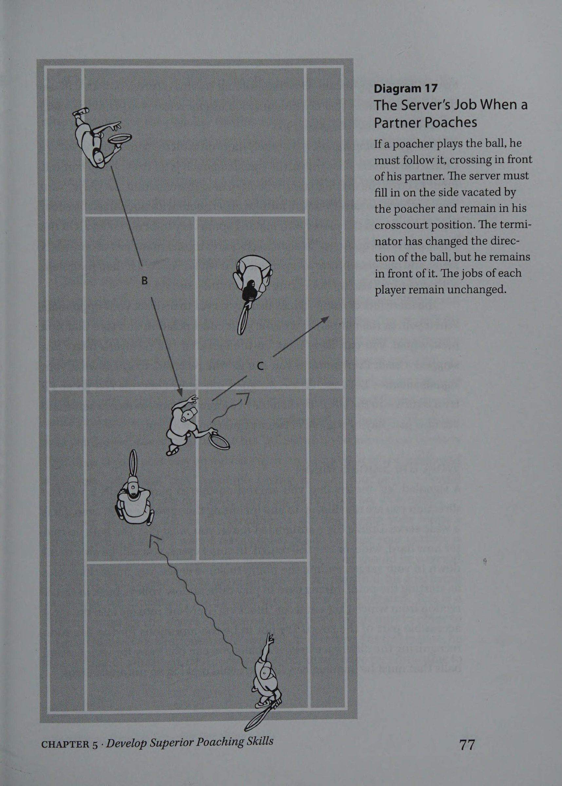
phải đi theo nó, băng qua trước mặt đối tác của mình. Người giao bóng phải điền vào phần mà người cắt lưới cướp điểm bỏ trống và giữ nguyên vị trí chéo sân của anh ta. Tay vợt kết liễu đã thay đổi hướng của quả bóng, nhưng anh ta vẫn ở phía trước nó. Công việc của mỗi người chơi vẫn không thay đổi. chống lại những đối thủ khó khăn, những người buộc phải trả giao bóng, nhưng chúng tôi sẽ sử dụng họ để chống lại các đội liên tục lốp bóng với chúng tôi (vì những lý do được giải thích trong chương sáu về việc che bóng đúng cách).
The server must fill in on the side vacated by the poacher and remain in his crosscourt position. The termi- nator has changed the direc- tion of the ball, but he remains in front of it. The jobs of each player remain unchanged. taf! against tough opponents who have forcing service returns, but we will use them against teams that continuously lob us (for reasons explained in chap- ter six on covering lobs properly). Using poaching signals is definitely more difficult than freelancing volleys.
Việc sử dụng tín hiệu cắt lưới cướp điểm chắc chắn khó khăn hơn so với những cú vô lê tự do. Không giống như hành động tự phát, việc cắt lưới cướp điểm được báo hiệu là một cam kết không thể thay đổi để vượt qua lưới. Việc ra hiệu thường sẽ giúp ích cho người chơi trên lưới bất đắc dĩ, những người sẽ không bao giờ mạo hiểm thử nghiệm lãnh thổ chưa được khám phá, nhưng nó cũng buộc người chơi phải thực hiện một số cú vô lê rất khó. Mặt khác của câu hỏi, công việc tự do đòi hỏi rất nhiều quyết định vào giây cuối cùng và những người chơi thiếu kinh nghiệm hoặc không tin tưởng vào khả năng phán đoán của mình đôi khi sẽ không nhận được những quả bóng mà họ nên làm.
Unlike the spontaneous move, the signaled poach is an irrevocable commit- ment to cross the net. Signaling will often help the reluctant net player who would otherwise never venture forth to experiment with uncharted territory, but it also forces the player into making some very difficult volleys. On the other side of the question, freelancing requires a great many last-second deci- sions, and players who are inexperienced or who do not trust their judgment will sometimes end up not taking the balls they should. The mere fact of using signals usually serves to distract your opponents.
Việc sử dụng tín hiệu đơn thuần thường nhằm mục đích đánh lạc hướng đối thủ của bạn. Khi bạn, với tư cách là người chơi trên lưới, đảm nhận vị trí sân của mình và đưa ra tín hiệu đầu tiên đó, bạn có thể tin chắc rằng tim của người nhận vừa lỡ nhịp. Thậm chí còn tốt hơn nếu bạn có thể khiến người nhận bóng đoán được ý nghĩa của tín hiệu—“Xem nào, đó là hai ‘đi; một ‘ở lại: Tôi cá đây là một ‘đi’ nên tôi sẽ thử quay lại hành lang biên. Đến lúc đó họ đã quên cách trả giao bóng và giờ chỉ đang chơi một trò chơi gồm 20 câu hỏi với bạn.
When you, as the net player, assume your court position and give that first hand signal, you can fairly bank on the fact that the receiver's heart just skipped a beat. Even better if you can get the receivers to guess what your signals mean—“Let's see, that’s two ‘goes; one ‘stay: I bet this is a ‘go’ so I'll try a return into the alley. By then they ve forgotten how to return serve and are now just playing a game of twenty questions with you. What the Signals Mean A signaled “go” means that you are responsible to play all balls hit in the direction you are moving, up to and including the opposite alley, even if it is a wide serve.
Ý nghĩa các tín hiệu
Tín hiệu “đi” có nghĩa là bạn có trách nhiệm đánh tất cả các quả bóng được đánh theo hướng bạn đang di chuyển, đến và bao gồm cả ngõ đối diện, ngay cả khi đó là một quả giao bóng rộng. Không giống như động tác không có tín hiệu, bạn phải chơi bóng, bất kể cú trả bóng mạnh, rộng hay thấp đến mức nào. Trong một số trường hợp, bạn sẽ có thể bắn trúng mục tiêu của mình, kết thúc điểm. Trong một số trường hợp, bạn phải coi đó là việc bắt đầu điểm, chú ý thực hiện những cú vô lê thấp khó quay ngược lại hướng mà chúng xuất phát hoặc “chặn” những cú trả bóng mạnh vào phần dễ tiếp cận nhất của sân. Cố gắng đừng quá tham vọng trong tình huống này, nhận ra sự khác biệt giữa những quả bóng bạn có thể dành cho người chiến thắng và những quả bóng phải được xử lý cẩn thận để tránh mắc lỗi không đáng có.
Unlike the nonsignaled move, you must play the ball, no mat- ter how hard, wide, or low the return. In some cases, you will be able to hit down to your target, ending the point. In some cases, you must think of it as starting the point, taking care to play difficult low volleys back in the di- rection from which they came, or “blocking” hard-hit returns into the most accessible part of the court. Try not to be too ambitious for the situation, recognizing the difference between balls you can put away for winners and balls that must be handled carefully to avoid making an unforced error. It is not necessary to serve down the middle on a signaled poach.
Không cần thiết phải giao bóng ở giữa đối với một người cắt lưới cướp điểm có tín hiệu. Bạn và đối tác của bạn nên quyết định xem cú trả thuận tay hay trái tay của người nhận bóng sẽ mang lại cho người cắt lưới cướp điểm cơ hội tối đa để đánh chặn. Có lẽ một tay vợt quảng cáo sẽ rên rỉ về cú thuận tay của mình nhưng lại cắt cú đánh trái tay của anh ta. Trong trường hợp này, người cắt lưới cướp điểm có cơ hội bắt kịp cú trái tay tốt hơn so với cú thuận tay. Tuy nhiên, có một lưu ý đối với người giao bóng: Nếu bạn nói rằng bạn sẽ giao bóng rộng tới phía trái tay của người chơi quảng cáo đó, thì cú giao bóng phải đi đến nơi bạn đã nói hoặc bạn cần đảm bảo rằng đó là một lỗi. Đây là sự bảo vệ của bạn cho người cắt lưới cướp điểm. Bạn không thể nói, “Rất tiếc, nó đã nhầm lẫn về phía thuận tay.” Bạn có thể khiến tay vợt kết liễu của mình bị chấm dứt.
You and your partner should decide whether a receiver's forehand or backhand return would give the poacher the maximum opportunity to intercept. Per- haps an ad court player wails his forehand but slices his backhand. In this case, the poacher has a better chance of catching up to the backhand than the forehand. However, there is a caveat for the server: If you said you were going to serve wide to that ad court player's backhand, then the serve must go where you said it would or you need to make sure it is a fault. This is your protection for the poacher. You cannot say, "Oops, it went to the forehand by mistake. You might get your terminator terminated.
Khi ra hiệu "ở lại; hãy cẩn thận đừng thoái thác mọi trách nhiệm đối với một quả bóng bay vèo qua tai bạn. Bạn vẫn có trách nhiệm phản chiếu của mình, và -bạn vẫn nên tìm cách cắt lưới cướp điểm một con vịt bị thương. Bạn vẫn là tay vợt kết liễu trong đội của mình, và bạn vẫn phải tìm cách chặn những cú trả bóng rất yếu. "Ở lại" không có nghĩa là hoàn toàn trì trệ. Nó có nghĩa là nhận thức và cảnh giác.
When signaling a “stay; be careful not to abdicate all responsibility for a ball whizzing by your ear. You still have your mirroring responsibilities, and -you should still be looking to poach a wounded-duck return. You are still the terminator on your team, and you must still look to intercept very weak returns. “Staying” does not mean total stagnation. It means being aware and alert.
Mặc dù nó luôn là người kết thúc đưa ra tín hiệu, nhưng với tư cách là người giao bóng, bạn luôn có quyền mâu thuẫn với tín hiệu và yêu cầu một tín hiệu khác. Bởi vì trách nhiệm của bạn là phải cực kỳ chính xác và thực hiện cú giao bóng ở nơi bạn đã hứa, bạn nên phủ nhận tín hiệu “đi” nếu bạn không đặc biệt tự tin vào độ chính xác của mình vào một ngày nhất định. Nếu bạn mệt mỏi hoặc hụt hơi và muốn được giúp đỡ, hãy từ chối lời "ở lại" bằng cách chỉ nói "không", và đối tác của bạn sẽ phản hồi bằng cách nháy cho bạn tín hiệu "đi" (câu trộm) mà bạn đang tìm kiếm.
Although it is always the terminator giving the signal, as server, you always have the right to contradict the signal and ask for a different one. Be- cause your responsibility is to be deadly accurate and put the serve where you said you would, you should negate the “go” signal if you are not particularly confident in your accuracy on a given day. Ifyou are tired or out of breath and want help, refuse the “stay” by simply saying “no,’ and your partner should respond by flashing you the “go” (poach) signal that you are looking for.
Khi sử dụng tín hiệu, với tư cách là người kết thúc, bạn có thể bắt đầu di chuyển sớm hơn một giây so với khi đó là người cắt lưới cướp điểm không có tín hiệu vì đối tác của bạn sẽ tự động băng qua phía sau bạn và toàn bộ sân phải được che chắn. Người giao bóng nên chú ý di chuyển về phía trước theo đường chéo, mục tiêu của anh ta là đảm nhận vị trí chéo sân ở phía bạn đã bỏ trống. 'Đây là một động thái khó khăn đối với người giao bóng vì anh ta có rất nhiều sân cần phải che chắn để định vị bản thân cho khả năng trở lại "ở tuyến dưới". Vì lý do này, anh ta nên nhớ rằng, nếu anh ta giao bóng rộng, anh ta sẽ có rất ít thời gian để giành được vị trí cú vô lê tấn công của mình và giành được cú trả bóng “từ đường biên”, cú trả bóng sẽ đến phần sân của anh ta rất nhanh chóng và không có góc.
When using signals, as the terminator, you may begin your move a second earlier than if it were a nonsignaled poach because your partner is automatically crossing behind you and the entire court should be covered. The server should take care to move forward on the diagonal, his goal being to assume the crosscourt position on the side you have vacated. ‘This is a difficult move for the server because he has a great deal of court to cover to position himself for the potential “down-the-line” return. For this reason, he should bear in mind that, ifhe does serve wide, he will have very little time to gain his offensive volley position and nab the “down-the-line” return, which will reach his side of the court very quickly and without an angle.
Một vấn đề khác đối với đội phát tín hiệu là giao bóng "ở giữa". Một khi người giao bóng đã đưa bóng vào cuộc, không thể thay đổi kế hoạch khi sử dụng tín hiệu. Nếu bạn là một tay vợt thuận tay phải di chuyển qua lưới trong một điểm được giao cho ô sân Deuce, bạn không thể tạm dừng tiến trình của mình trên lưới, dừng lại và chạm trở lại cú vô lê trái tay vì điều này sẽ khiến đội của bạn bị đóng băng theo đội hình "I" và tương đương với việc thay đổi kế hoạch. Người giao bóng của bạn, người mong đợi bạn làm như vậy ở phía bên kia đường giao bóng trung tâm vào thời điểm này, sẵn sàng chơi bóng. Nếu bạn đổi hướng để thực hiện cú vô lê, cả hai bên sân đều không được che chắn và cả hai bạn đều không biết phải đi đâu tiếp theo. Với tư cách là người kết thúc, bạn phải có kỷ luật để tất cả các quả bóng được đánh phía sau bạn đi qua người giao bóng và tuân theo kế hoạch, đó là chuyển động của bạn trên lưới phải liên tục và không được bị gián đoạn (xem sơ đồ mười tám).
Another problem for the signaling team is the “down-the-middle’ service return. Once the server has put the ball in play, there can be no change of plan when using signals. If you are a right-handed player moving across the net in a point served to the deuce court, you cannot halt your progress across the net, stop, and reach back to a backhand volley since this freezes your team in an “I” formation and is tantamount to changing the plan. Your server, who expects you to be well across the center service line at this point, is poised to play the ball. If you change directions to stab at a volley, neither side of the court is covered, and neither of you knows where to go next. As terminator, you must have the discipline to let all balls that are hit behind you go through to the server and stick to the plan, which is that your movement across the net is continuous and should not be interrupted (see diagram eighteen).
Cách ra tín hiệu
Nhiều người chơi sử dụng nắm tay siết chặt sau lưng để báo hiệu “ở lại” và lòng bàn tay mở ra cho tín hiệu “đi”, ra hiệu lại giữa lần giao bóng đầu tiên và lần giao bóng thứ hai khi quả giao bóng đầu tiên bị lỗi. Với tư cách là người giao bóng, tôi thấy điều này gây mất tập trung và thích đối tác của mình sử dụng một tín hiệu cho mỗi điểm—một ngón tay chỉ xuống nếu anh ta chỉ thực hiện quả giao bóng đầu tiên, hai ngón tay chỉ xuống nếu anh ta định thực hiện cả hai quả giao bóng hoặc nắm chặt bàn tay nếu anh ta đang “ở lại”.
How to Signal Many players use a clenched fist behind the back for a “stay” signal and an open palm for a “go” signal, re-signaling between first and second serves when the first serve is a fault. As a server, I find this distracting and prefer my partner to use one signal per point—one finger pointed down if he is only going on the first serve, two fingers pointed down if he intends to go on both serves, or the clenched fist if he is “staying” In all cases, the server must verbally acknowledge the signal before serving, or the net player can- not be sure the server knows which play has been called.
Khi chấp nhận tín hiệu của đối tác, hãy luôn sử dụng cùng một từ ngữ và giọng điệu giống nhau bất kể tín hiệu nào được đưa ra. Hai học trò của tôi cách đây không lâu đã đến gặp tôi và phàn nàn rằng những trò cắt lưới cướp điểm của họ không bao giờ thực sự hiệu quả vì dường như bằng cách nào đó đối thủ luôn biết họ “đi” hay “ở lại”. Sau nhiều điều tra, chúng tôi phát hiện ra rằng khi một thành viên trong nhóm là người giao bóng, cô ấy sẽ thừa nhận
When accepting your partner's signal, always use the same words and tone of voice no matter which signal has been given. Two of my students came to me not long ago and complained that their poaches never really worked because it seemed that somehow the opponents always knew whether they were “going” or “staying. After much investigation, we discovered that when one of the team members was the server, she would acknowledge her
Sơ đồ 18 — Pha cắt lưới có báo hiệu đòi hỏi kỷ luật
Khi cắt lưới cướp điểm, hãy nhớ rằng "đi" được chỉ định không thể bị hủy bỏ khi bóng đang bay. Có kỷ luật để tiếp tục qua lưới và để người giao bóng nhặt tất cả các quả bóng đánh phía sau bạn. tín hiệu “ở lại” của đối tác bằng một tín hiệu đơn giản “Ừ, được thốt ra mà không nhiệt tình và cô ấy đã trả lời tín hiệu “đi” của đối tác bằng một câu “Ồ-được rồi!”
Diagram 18 A Signaled Poach Requires Discipline When poaching, remember that asignaled “go” cannot be aborted when the ball is in flight. Have the discipline to continue across the net and let the server pick up all balls hit behind you. partner's “stay” signal with a simple “Yeah, uttered without enthusiasm, and she answered her partner's “go” signal with a highly animated “Oh-kay!
Cho dù cuối cùng nhóm của bạn quyết định ra hiệu hay làm việc tự do hay kết hợp cả hai, thì điều quan trọng đối với khả năng giữ bóng của đội bạn là bạn phải cắt lưới cướp điểm vì chỉ riêng yếu tố đe dọa là không thể đo lường được. Hãy nghĩ về lần cuối cùng bạn thi đấu với một đội đã mang lại rất nhiều lợi ích cho bạn. Bạn có thực sự nhớ họ đã thực hiện bao nhiêu vụ cắt lưới cướp điểm và họ đã bỏ lỡ bao nhiêu lần không? Hay bạn chỉ nhớ ước gì họ sẽ đứng yên để bạn có thể trả giao bóng? Nhiều học sinh của tôi lo lắng về việc để ngỏ hành lang biên của họ cho người chiến thắng tiềm năng đến nỗi họ từ chối rời bỏ vị trí của mình—không bao giờ. Bằng cách nào đó, họ cảm thấy bị sỉ nhục và bị đánh bại nếu bị đi ngang qua trong hành lang biên. Tôi ước gì họ cũng cảm thấy bị đánh bại như nhau khi cú lốp bóng lướt qua đầu họ. Bất kỳ ai cũng có thể và sẽ trở thành người chiến thắng. Và nếu nó tình cờ bị một chiếc xe đâm vào hành lang biên trống của bạn, thì hãy cứ như vậy. Bạn thậm chí không cần phải nói “cú đánh đẹp; hoặc thậm chí nhận thấy nụ cười nhếch mép trên lưới. Đơn giản chỉ cần tiếp tục công việc của bạn và đừng bao giờ để một hoặc hai cú đánh trúng đích ngăn cản bạn cắt lưới cướp điểm. Phần thưởng chắc chắn xứng đáng với công việc cần thiết để trở thành một đội cắt lưới cướp điểm giỏi. Và nếu cuối cùng, bạn vẫn không cảm thấy thoải mái khi nhận “quả bóng của đối tác”, hãy nhớ rằng bất cứ khi nào bạn vượt qua phía trước đối tác của mình để thực hiện cú đánh, bạn đã cắt đứt đáng kể thời gian phục hồi của đối thủ và bạn tạo ra một góc mới và tốt hơn cho cú vô lê của mình.
Whether your team eventually decides on signaling or freelancing or a com- bination of both, it is vital to your team’s ability to hold serve that you do poach because the intimidation factor alone is beyond measure. Think about the last time you played a team that moved a great deal on your service returns. Do you actually remember how many poaches they made and how many they missed? Or do you just remember wishing like hell that they would stand still so you could return serve? Many of my students are so worried about leaving their alleys uncovered for a potential winner that they simply refuse to vacate their position—ever. Somehow they feel personally humiliated and defeated if they are passed in the alley. I wish they would feel equally as defeated when the lob sails over their heads, Anybody can, and will, make a winner. And if it happens to be one struck into your vacant alley, so be it. You don’t even have to say “nice shot; or even notice the smirk across the net. Simply get on with your job and never let a passing shot or two deter you from poaching. The rewards are definitely worth the work it requires to become a good poaching team. And if, in the end, you still do not feel comfortable taking “your partner's ball” remember that any time you cross in front of your partner to play a shot, you cut off your opponents’ recovery time substantially, and you create a new and better angle for your volley. Some final words on poaching: If the receiver is playing his return on the rise, that is before the ball even reaches its peak, poaching will be difficult because the ball will come off his racquet very quickly.
Một số lời cuối cùng về việc cắt lưới cướp điểm: Nếu người nhận bóng đang thực hiện cú trả bóng của mình khi đang trên cao, tức là trước khi bóng đạt đến đỉnh điểm, việc cắt lưới cướp điểm sẽ khó khăn vì bóng sẽ bay ra khỏi vợt của anh ta rất nhanh. Nếu anh ta chăm chỉ di chuyển về phía lưới khi thực hiện cú trả bóng, anh ta có thể rút ngắn khoảng cách giữa điểm tác động và mục tiêu qua lưới. Sẽ rất khó để di chuyển đủ nhanh để chặn một quả bóng được đánh sớm như vậy. Ngay cả khi bạn nản lòng khi đối mặt với những trở ngại này, hãy tiếp tục di chuyển về đường giữa trong mỗi cú giao bóng bên trong. Bạn có thể gặp may mắn. Ngoài ra, hãy cân nhắc rằng mức độ cạnh tranh càng cao thì khả năng dịch vụ hoàn trả sẽ trôi nổi theo cách của tay vợt kết liễu trông giống như một quả bưởi lớn càng ít. Và trong quần vợt nữ, thường xảy ra trường hợp các tay vợt trả giao bóng tốt hơn mức họ có thể giao bóng. Do đó, người giao bóng sẽ tạo ra các cơ hội săn bắt bằng chất lượng và độ xoáy trong cú giao bóng của anh ta. Một vết cắt nặng nề ở giữa ô sân Ad có thể tạo cơ hội cho tay vợt kết liễu. Một cú giao bóng xoáy lên từ giữa sân tới ô sân Deuce thường tạo ra một cú trả bóng yếu. Mục đích là để cả hai đồng đội cùng tham gia giữ giao bóng.
If he is moving toward the net diligently as he strikes his return, he may shorten the distance be- tween his point of impact and his target across the net. It would be difficult to move quickly enough to intercept a ball struck so early in time. Even if you become discouraged in the face of these obstacles, continue to move to the center line on every inside serve. You might get lucky. Also, consider that the higher the level of competition, the less likely it is that a service return will come floating the terminator’s way looking like a big grapefruit. And it is often the case in women's tennis that players return serve better than they can serve. Therefore, it falls to the server to create poaching opportunities with the quality of and the spin on his serve. A heavy slice up the middle to the ad court might well produce an opportunity for the terminator. A topspin serve up the middle to the deuce court often generates a weak return. The goal is for both teammates to participate in holding serve.
Hỡi những người cắt lưới cướp điểm tài giỏi giúp cho việc giành chiến thắng trong trò chơi giao bóng trở nên dễ dàng
O O ite = te el SU Poaching Checklist Great poachers make winning the service game easy for the server.
O Chìa khóa để có kỹ năng cắt lưới cướp điểm tốt là biết nên chơi bóng nào
The key to good poaching skills is knowing which balls to play and which to leave.
SU Biết mục tiêu cần hướng tới. “Ngắn đến ngắn” tàn phá el Là tay vợt kết liễu, hãy đảm bảo theo dõi hành vi cắt lưới cướp điểm của bạn và kết thúc ở
Know which targets to aim for. “Short to short” devastates the opposition. As terminator, make sure to follow your poach and end up in front of the ball.
= te Hãy đảm bảo rằng người giao bóng hoặc bản sao lưu hiểu tầm quan trọng của nó đối với sự thành công chung của nhóm cắt lưới cướp điểm của bạn.
Make sure the server, or backup, understands how crucial he is to the overall success of your poaching team.
Sử dụng các tín hiệu để khiến đối thủ bối rối, nhưng hãy hỗ trợ các tín hiệu đó bằng kỹ năng cú đánh xuyên qua xuất sắc.
Use signals to confuse your opponents, but back the signals up with excellent volleying skills.
Không sử dụng tín hiệu nếu bạn muốn duy trì tính tự phát của nước đi. Tuy nhiên, hãy biết sự đánh đổi—những người cắt lưới cướp điểm do dự sẽ
Do not use signals if you prefer to preserve the spontaneity of the move. Know the trade-off, though—hesitant poachers will remain just that.
Hãy nhớ rằng một nửa giá trị của việc cắt lưới cướp điểm là để đe dọa
Remember that half of the value of poaching is to intimidate the receiver.
Chương 6. Giữ Quyền Kiểm Soát Khu Vực Lưới
Keeping Control of the Net
Đạt được sự xuất sắc. Nó không bị vấp ngã trong quá trình tự giải trí. Nó được xây dựng dựa trên kỷ luật và sự kiên trì của mục đích.
— Tạp chí vợt hàng quý
Kiểm soát lưới khi đối thủ của bạn cũng có ý định làm như vậy là một chức năng của kỹ năng vô lê vượt trội của bạn và khả năng nhận ra những sai lầm về vị trí trên sân của những người đối diện với bạn. Nếu người nhận giao bóng của bạn với một cú trả bóng rộng, bầm dập vào khu vực của bạn, nhưng lại phạm sai lầm khi theo bóng thay vì sử dụng lưới khi anh ta lao thẳng vào lưới, cú vô lê góc của bạn sẽ đánh nhầm chân anh ta và giành được điểm (xem chương ba, sơ đồ một). Nếu người giao bóng bỏ qua cú cắt bóng của anh ta và tấn công lưới, không dừng lại cho đến khi mũi anh ta chạm vào lưới, bạn biết rằng cú lốp bóng của bạn sẽ dẫn đến một cú lốp bóng chéo sân luôn tàn khốc cho người chiến thắng. Nếu tay vợt kết liễu đối phương bỏ bê trách nhiệm phản ánh của mình, anh ta có thể đã mở hành lang biên hoặc khu vực giữa cho những cú vô lê của bạn. Mặc dù một số câu trả lời này yêu cầu bạn phải đọc và điều chỉnh nhanh chóng, nhưng việc kiểm soát lưới trước những tay vô lê khác thực sự dễ dàng hơn so với việc đối phó với những nữ hoàng lốp bóng đáng sợ.
Keeping Control of the Net Excellence is achieved. It is not stumbled upon in the course of amusing oneself. It is built upon discipline and tenacity of purpose. Racquet Quarterly Magazine Controlling the net when your opponents are equally as intent upon doing so is a function of your superior volleying skills and your ability to recognize court-position mistakes by those across the net from you. If the receiver returns your serve with a bruising, wide return into your alley, but makes the mistake of following his ball rather than using the netstrap as he dashes headlong to the net, your angle volley should wrong-foot him and win the point (see chapter three, diagram one). If the server omits his split-stop and charges the net, not stopping until his nose is hanging over it, you know that your lob volley will result in the always-devastating crosscourt lob for a winner.
Tôi rất tiếc cho một số học trò của mình vì nếu tin vào những gì họ nói với tôi, họ không bao giờ là đối tượng của những cú lốp ngắn. Có vẻ như tất cả các nữ hoàng lốp bóng đều dành những điều tốt nhất và sâu sắc nhất cho những học sinh tội nghiệp này, và mỗi lần họ ra sân, họ luôn đảm bảo với tôi rằng mọi cú lốp bóng mà đối thủ của họ đánh chắc chắn đều bật về vạch cuối sân. Và tất nhiên, bất cứ khi nào bóng bật ra phía sau bạn trên sân, bạn phải bỏ lưới và chơi phòng thủ. Bạn có thể thắng các trận đấu bằng cách bảo vệ sân từ phía sau vạch cuối sân hoặc bằng cách chơi "một lên, một lùi". Nhưng cả hai đội hình này đều không thể làm sứt mẻ áo giáp của một đội sở hữu kỹ năng vô lê vượt trội với chuyên môn giúp duy trì quyền kiểm soát lưới và không để mất lưới khi đối mặt với một loạt các cú lốp bóng. Cách duy nhất để thiết lập mô hình thành công nhất quán trong nội dung đánh đôi là học cách chiếm lưới ngay lập tức ở mọi điểm và giữ lưới bằng cách không cho phép các cú lốp bóng bật ra phía sau bạn.
If the opposing terminator neglects his mirroring responsibilities, he may have opened his alley or the middle for your volleys. While some of these responses require that you read and adjust quickly, it is actually easier to keep control of the net against other volleyers than it is to cope with the dreaded lob queens. I feel very sorry for some of my students because, if am to believe what they tell me, they are never the recipients of short lobs. It appears that all lob queens reserve their deepest and finest for these poor students, and each time they come off the court, they unfailingly assure me that every single lob their opponents hit definitely bounced on the baseline. And, of course, anytime the ball bounces behind you on the court, you must re- linquish the net and play defense. Matches can be won by defending the court from behind the baseline, or by playing “one up, one back,’ for that matter.
- XỬ LÝ LOB TRẢ LẠI DỊCH VỤ TUYỆT VỜI
But neither of these formations can make a dent in the armor of a team possessing superior volleying skills whose expertise extends to maintaining control of the net and not losing it in the face of a barrage of lobs.
Trong đội hình so le “California Doubles”, tất cả các cú lốp bóng đều thuộc về người chơi chéo sân—trong trường hợp này là người giao bóng. Tuy nhiên, việc đuổi theo mười cú lốp nảy ra phía sau tay vợt kết liễu của bạn sẽ nhanh chóng trở nên cũ kỹ. Sau đây là ba cách để phủ nhận lob trả lại dịch vụ.
The only way to establish a pattern of consistent success in doubles is to learn to take the net immediately on every point and keep it by not allowing lobs to bounce behind you. - HANDLING THE DREADED SERVICE RETURN LOB In the “California Doubles” staggered formation, all lobs belong to the crosscourt player—in this case the server. However, chasing ten lobs that bounce behind your terminator gets old in a hurry. The following are the three ways to negate the service return lob.
Giao việc cho tay vợt kết liễu
Cách dễ dàng và đơn giản nhất để ngăn cản cú lốp bóng trả giao bóng là đặt người kết thúc trên đường giao bóng, hy vọng sẽ buộc một cú trả bóng chéo sân thay vì một cú lốp bóng. Tuy nhiên, hãy lưu ý rằng việc sử dụng chiến lược này sẽ mở ra giữa sân cũng như hành lang biên của tay vợt kết liễu để có khả năng quay trở lại. Nếu người nhận không nhận thấy khả năng quay trở lại ở tuyến dưới hoặc chuyển động mạnh lên giữa thì càng tốt. Nếu anh ta làm vậy, tay vợt kết liễu còn một lựa chọn nữa. Thay vì tiến về phía trước khi nghe thấy âm thanh giao bóng của đối tác, anh ấy di chuyển lùi lại để xử lý cú lốp bóng như một cú đập bóng từ trên cao. Độ sâu của lốp quyết định khoảng cách mà đầu cuối phải di chuyển. Một trong hai lựa chọn này có thể rất hiệu quả trong những lúc bạn và đối tác của mình có cảm giác hơi khó chịu rằng lần trả giao bóng tiếp theo chắc chắn sẽ là một cú lốp bóng. Nếu tay vợt kết liễu của bạn vừa thực hiện hai lần cắt lưới cướp điểm thành công, người nhận sẽ làm gì tiếp theo? Tất nhiên là Lob.
Assign It to the Terminator The easiest and simplest way to deter the service return lob is to position the terminator on the service line, hoping to force a crosscourt return instead of a lob. However, stay aware that using this strategy opens the middle of the court, as well as the terminator’s alley, for a potential re- turn. If the receiver doesn’t notice the potential for a down-the-line re- turn or a sharp drive up the middle, so much the better. If he does, then the terminator has one more option. Instead of moving forward on the sound of his partner’s serve, he moves back to handle the lob as an over- head smash. The depth of the lob determines how far back the terminator must move. Either of these options may be very effective for those times when you and your partner have that prickly little feeling that the next service return will definitely be a lob. If your terminator has just made two successful poaches, what will the receiver do next?
Đội hình Australia
Khi bạn nghĩ rằng người trả bóng có thể đang dự tính một cú lốp bóng nhưng bạn không chắc chắn, một cách tuyệt vời để ngăn chặn cú lốp bóng tiềm ẩn nảy lên là sử dụng đội hình giao bóng của Úc (xem chương tám để biết các cách sử dụng khác; xem thêm sơ đồ 29). Bởi vì người kết thúc đã di chuyển về phía người giao bóng của mình và lùi vào vị trí chéo sân, nên cú lốp bóng chéo sân là không thể thực hiện được. Người giao bóng sẽ tiếp cận lưới ở phía sân của người nhận bóng, vì vậy nếu cú lốp bóng vẫn hướng theo đường thẳng, người giao bóng sẽ chỉ xử lý nó như một cú vô lê trên đường tới lưới. Lưu ý rằng việc sử dụng đội hình này sẽ đảo ngược công việc. Người kết thúc bây giờ là người chơi chéo sân và người giao bóng, người đã giao bóng từ chữ “T”, đảm nhận công việc của người kết thúc, thực hiện tất cả các cú vô lê của anh ta theo một đường thẳng. Việc sử dụng đội hình này hoàn toàn ngăn cản cú trả bóng nảy lên.
Lob, of course. Australian Formation When you think the returner may be contemplating a lob but you arent sure, an excellent way to prevent the potential lob from bouncing is the use of the Australian serving formation (see chapter eight for other uses; see also diagram twenty-nine). Because the terminator has moved to his server's side of the court and backed into the crosscourt position, the crosscourt lob is not possible. The server will approach the net on the receiver's side of the court, so if the lob is still headed in a straight line, the server will simply handle it as a volley on his way to the net. Note that using this formation reverses jobs. The terminator is now the crosscourt player, and the server, who has served from the “T,’ assumes the job of the terminator, playing all of his volleys in a straight line.
Tự động đổi bên
Một số đội thích chuyển đổi tự động sang đội hình Úc hơn. Kế hoạch này giống hệt như một cuộc cắt lưới cướp điểm được báo hiệu, nhưng nó được sử dụng khi một cú trả giao cú lốp bóng được cho là sắp diễn ra (xem chương năm). Mặc dù tay vợt kết liễu phải cảnh giác với người cắt lưới cướp điểm khi hắn băng qua lưới nhưng thực tế hắn đang di chuyển ra khỏi đường đi. Đối tác giao bóng vượt qua phía sau người kết thúc và thực hiện cú lốp bóng như một cú vô lê cao trên đường vào lưới (xem sơ đồ 19). Điều này cũng làm thay đổi công việc. Người giao bóng trở thành tay vợt kết liễu khi đối tác của anh ta lùi vào sân chéo. Tin vui là không phải tất cả các lốp trả về dịch vụ đều hoàn hảo và một số có thể được người giao bóng xử lý trực tuyến mà không cần các chiến lược thay thế này.
Using this formation absolutely prevents the service return lob from bouncing. Automatic Switch Some teams prefer the automatic switch to the Australian formation. This plan is exactly like a signaled poach, but it is used when a lob service return is presumed to be in the offing (see chapter five). Although the ter- minator must be alert for a poach as he is crossing the net, he is actually moving out of the way. The serving partner crosses behind the terminator and takes the lob as a high volley on his way to the net (see diagram nine- teen). This, too, changes the jobs. The server becomes the terminator as his partner backs into crosscourt.
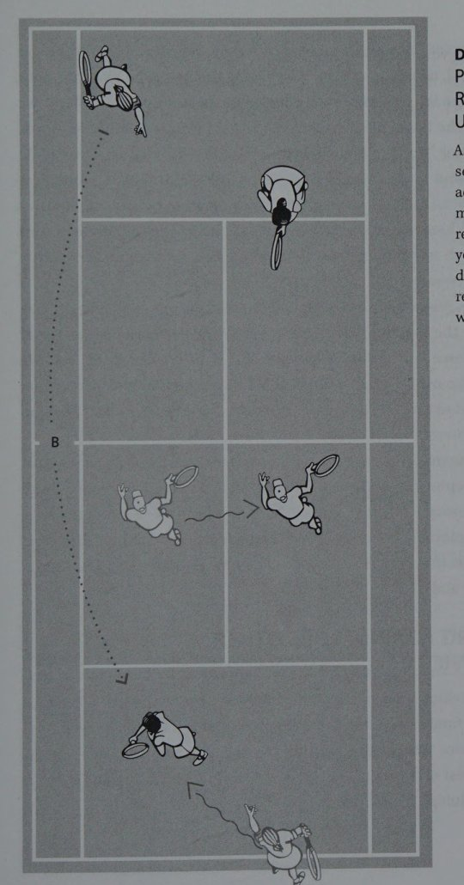
Như một kế hoạch đã được sắp xếp trước, bạn, đối tác của người giao bóng, đã di chuyển qua lưới. Mặc dù bạn vẫn cảnh giác với một người cắt lưới cướp điểm, nhưng bạn thực sự đang di chuyển tránh đường để đối tác giao bóng của bạn có thể đảo ngược hướng và thực hiện cú lốp bóng trả giao bóng như một cú vô lê cao trên đường vào lưới. gies, Nếu người giao bóng không phải quay vai ra khỏi lưới để phát bóng và anh ta giữ cơ thể hướng vào lưới khi thực hiện cú đánh, anh ta có thể thực hiện cú lốp bóng như một cú vô lê cao. Nhưng bởi vì, với tư cách là một tay vợt chạy chéo sân, anh ta là đội trưởng của đội, anh ta phải cho đồng đội của mình biết anh ta muốn "ở lại" hay "đổi bóng? Nếu anh ta cảm thấy cú lốp bóng hướng về giữa sân và anh ta có thể lấy lại vị trí của mình trước khi đối thủ trả bóng, anh ta sẽ nói với đồng đội của mình "ở lại" (xem sơ đồ hai mươi). Tuy nhiên, nếu anh ta bị kéo ra sau đồng đội của mình để chơi bóng và anh ta cảm thấy mình không thể quay lại phần sân của mình đủ nhanh, anh ta sẽ nói với đồng đội của mình "đổi" (xem sơ đồ). hai mươi mốt).
The good news is that not all service return lobs are perfect, and some can be handled by the server in the air without needing these alternate strate- Diagram 19 Playing the Lobbed Return Out of the Air by Using a Signature Poach As a prearranged plan, you, the server's partner, have moved across the net. Although you re- main alert for a poach, you are really moving out of the way so your serving partner can reverse direction and play the service return lob as a high volley on his way to the net. gies, If the server does not have to turn his shoulders away from the net to play the ball, and he keeps his body facing the net as he plays the shot, he can take the lob as a high volley. But because, as crosscourt player, he is captain of the team, he must indicate to his partner whether he wants him to “stay” or “switch? If he feels that the lob is headed up the middle of the court and he can regain his own position before his opponent re- turns the ball, he tells his partner “stay” (see diagram twenty). If, however, he is pulled behind his partner to play the ball and he feels he cannot return quickly enough to his own side of the court, he tells his partner “switch” (see diagram twenty-one).
Tất nhiên, có những lúc cú lốp bóng thực sự quá tốt và thực sự nảy về vạch cuối sân. Trong những trường hợp hy vọng hiếm hoi này, người giao bóng nên đồng ý và nói với đồng đội của mình, “quay lại, trước khi anh ấy đánh bóng. Sau đó, anh ta nên nảy bóng và lốp bóng về phía sau thật cao để đồng đội có thời gian rút lui để cả hai đấu thủ có thể vào thế phòng thủ (xem sơ đồ 22).
Of course, there are times when the lob really is too good and really is bouncing on the baseline. On these hopefully rare occasions, the server should acquiesce and say to his partner, “back, before he hits the ball. He should then bounce the ball and lob it back very high to give his partner time to retreat so that both players can assume the defensive court position (see diagram twenty-two).
Trong hầu hết các trường hợp, cú lốp bóng có thể và nên được thực hiện trên không. Các đội cam kết giữ lưới bằng cách không để bóng nảy lên, trừ khi thực sự cần thiết, sẽ thấy rằng nhiều quả bóng mà trước đây họ đã để bóng nảy hoàn toàn có thể chơi được trên không. Cách quản lý lối chơi này giúp phân biệt các đội đánh đôi giỏi muốn giữ lưới với các đội thiếu kinh nghiệm có xu hướng hoảng sợ và bỏ chạy.
Most of the time, the lob can and should be taken in the air. Teams that commit to keeping the net by not allowing balls to bounce, except when ab- solutely necessary, will find that many balls they have previously let bounce are perfectly playable in the air. This play management distinguishes great doubles teams that want to keep the net from inexperienced teams that tend to panic and flee.
Phòng thủ trước những cú lốp không phải trả giao bóng
Tôi thích nói với các học trò của mình rằng mọi thứ xảy ra với họ trên sân đều là do một việc gì đó họ đã làm. Nếu quân hậu lốp bóng không ném bóng trả lại cú giao bóng của họ nhưng sau đó lấp đầy bầu trời bằng những cú lốp bóng không thể thu hồi được trong suốt thời gian còn lại của điểm, thì bạn đã gây ra điều đó. Nếu bạn đang thở hổn hển và họ đang nhấm nháp những ly nước bạc hà thì đó là lỗi của bạn.
DEFENDING AGAINST LOBS OTHER THAN SERVICE RETURNS I am fond of telling my students that everything that happens to them on the court is a function of something they have done. If the lob queens don't lob their service returns but then fill the sky with unretrievable lobs all through the rest of the point, you caused it. If you are panting and they are sipping mint juleps, it’s your fault.
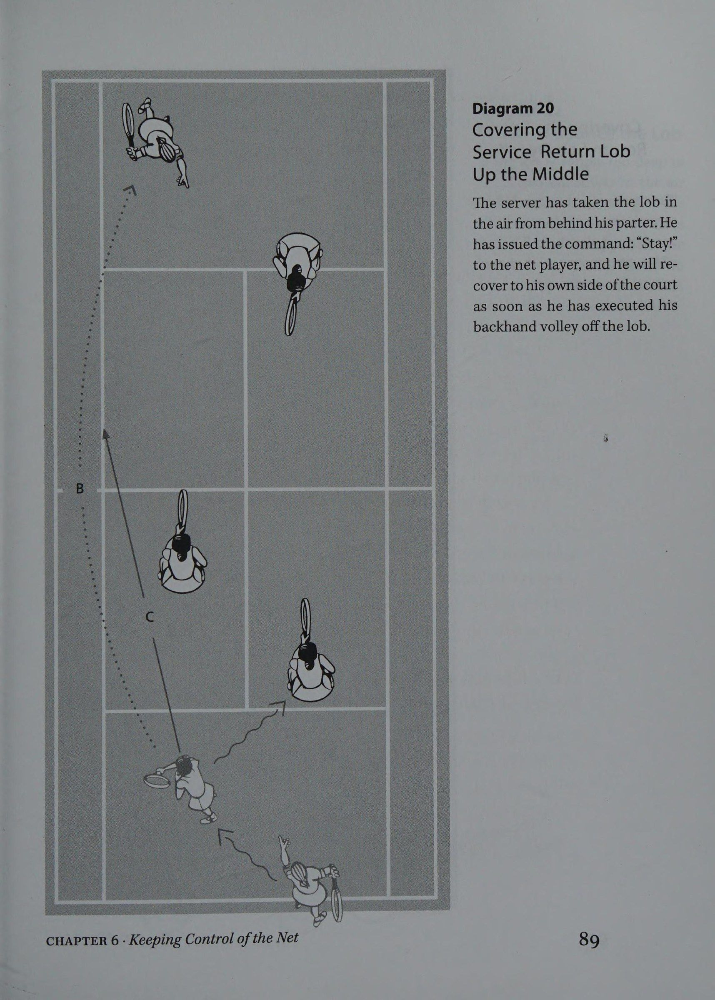
Người giao bóng đã thực hiện được cú lốp bóng từ phía sau người giao bóng của anh ta. Anh ta đã ra lệnh: “Ở lại!” đối với tay vợt trên lưới, và anh ta sẽ trở về phần sân của mình ngay sau khi thực hiện cú vô lê trái tay từ đường lốp bóng.
Diagram 20 Covering the Service Return Lob Up the Middle The server has taken the lob in the air from behind his parter. He has issued the command: “Stay!” to the net player, and he will re- cover to his own side of the court as soon as he has executed his backhand volley off the lob.
Sơ đồ 21 — Bọc lót cú lốp trả giao bóng vượt qua đầu bạn cặp
Tay vợt kết liễu đã tuân theo lệnh chuyển đổi của người giao bóng. Người giao bóng phải đánh bóng trước kẻ kết thúc của mình để mỗi người vẫn giữ được công việc giao bóng chéo và kẻ kết thúc của mình.
Diagram 21 Covering the Service Return Lob Over Your Partner's Head The terminator has heeded his server's command to switch. The server must play the ball in front of his terminator so that each retains his crosscourt and ter- minator job.
Sơ đồ 22 — Khi nào nên để bóng lốp nảy
Nếu cú lốp bóng quá sâu để có thể thực hiện hiệu quả trên không và người giao bóng không thể giành được vị trí lưới của mình trước khi đối phương trả bóng, anh ta sẽ ra lệnh “Quay lại!” tới tay vợt trên lưới, trả bóng lại và cả hai tay vợt đều đảm nhận vị trí phòng thủ.
Diagram 22 When to Bounce the Lob If the lob is simply too deep to be played effectively in the air and the server cannot gain his net position before the ball is returned by the opponent, he issues the command “Back!” to the net player, bounces the ball, and both players assume the de- fensive court position.
ĐỪNG DẪN Những NGƯỜI VẬN HÀNH GÁC NHAU BẰNG CÁCH CHO PHÉP HỌ HOẠT ĐỘNG TRONG VÙNG THOẢI MÁI CỦA HỌ, GIỮ LẠI KHÔNG GIAN THỜI GIAN CỦA HỌ. ĐÁNH ĐỦ SÂU ĐỂ ĐẶT HỌ VÀO GÓT HỌ HOẶC LÀM HỌ ĐUỔI BÓNG.
DON’T ACCOMODATE THOSE IRRITATING LOBBERS BY ALLOWING THEM TO OPERATE IN THEIR COMFORT ZONE, RETAINING THEIR TIMING SPACE. HIT DEEP ENOUGH TO PUT THEM ON THEIR HEELS OR MAKE THEM CHASE BALLS.
Có một khái niệm trong quần vợt được gọi là "không gian tính thời gian. Khoảng thời gian này được định nghĩa là không gian và thời gian mà người chơi cần để thực hiện cú đánh mà anh ta đã chọn để đánh (xem sơ đồ 23). Mục đích là để bảo toàn không gian tính thời gian của chính bạn trong khi cướp đi không gian tính thời gian của đối thủ. Mặc dù bạn không thể ngăn cản các nữ hoàng lốp bóng cố gắng nhấc bóng mà không thay đổi luật chơi, nhưng bạn có thể khiến những gì họ gửi theo cách của bạn trở nên dễ đoán, dễ quản lý và không hiệu quả.
There is a concept in tennis called “timing space. This is defined as the room and time a player needs to hit the shot he has chosen to hit (see diagram twenty-three). The object is to preserve your own timing space while robbing your opponent of his. While you cannot keep the lob queens from trying to lift the ball without changing the rules of the game, you can make what they send your way predictable, manageable, and ineffective. The crosscourt player has the main responsibility for dealing with the lobbers.
Người chơi chéo sân có trách nhiệm chính trong việc đối phó với những người lốp bóng. Khi đội của bạn liên tục phải đối mặt với những pha bóng cao,
When your team is facing a constant barrage of high balls, Diagram 23 The Value of Timing Space The player in the deuce court has his timing space.
Sơ đồ 23 — Giá trị của khoảng không gian thời gian
Người chơi ở ô sân Deuce có khoảng thời gian của mình. Anh ta có đủ không gian và thời gian cần thiết để thực hiện bất kỳ cú đánh nào anh ta chọn. Người chơi trong ô sân Ad đang theo gót chân mình. Anh ta không có đủ phòng cũng như không có thời gian để chọn cú đánh của mình. Vì vậy, dù cố ý hay vô tình, bóng của anh ta cũng sẽ bay lên khi đi qua lưới. Tay vợt kết liễu không có nhiều việc phải làm, nhưng nếu anh ta có cơ hội đánh một quả bóng, anh ta nên thả cú vô lê của mình ngay qua lưới hoặc đánh một cú góc trên đầu. Nếu vận động viên ném bóng chéo sân liên tục thực hiện các cú vô lê giữa sân nảy trên đường giao bóng hoặc quả trả giao bóng ở mức thấp và tiếp đất gần vạch cuối sân, thì quân hậu lốp bóng sẽ ở trên thiên đường lốp bóng. Họ đã được cung cấp không gian về thời gian và họ có thể đứng yên bằng một tay đút trong túi khi hướng những tên lửa hoàn hảo qua đầu bạn và vào vạch cuối sân. Nhưng nếu kho vũ khí của người chơi chéo sân đủ tốt, anh ta có thể ngăn chặn tất cả những điều này xảy ra.
He has the room and time he needs to ex- ecute any shot he chooses. The player in the ad court is on his heels. He has neither the room nor the time to choose his shot. Therefore, whether intention- ally or not, his ball will rise as it clears the net. the terminator has little to do, but if he does get the opportunity to hit a ball, he should either drop his volley just over the net or hit an angled overhead. Ifthe crosscourt player continuously hits midcourt volleys that bounce on the service line or service returns that are low and land near the baseline, the lob queens are in lob heaven. They have been given their timing space, and they can stand still with one hand in their pockets as they direct perfect missiles over your heads and onto the baseline. But if the crosscourt player's arsenal is good enough, he can prevent all of this from happening. Ugly Volleys Lobbers cannot fire off the perfect deep ball if they have to start their racquet work from shoulder height.
Những cú vô-lê xấu xí
Người chơi vợt không thể tung ra quả bóng sâu hoàn hảo nếu họ phải bắt đầu đánh vợt từ độ cao ngang vai. Không ai có thể. Lốp lớn phải được tạo ra từ bên dưới thắt lưng để có lực đòn bẩy và độ sâu. Cú vô lê “xấu xí” có đủ độ cao để bật cao ngang vai gần vạch cuối sân và ngăn không cho tay vợt lốp bóng chạm vào bất cứ thứ gì ngoại trừ một quả bóng yếu từ chân sau của anh ta, điều mà người chơi chéo sân có thể xử lý như một cú đánh đầu dễ dàng. Tôi gọi những cú vô lê này là xấu vì nhận thức chung là những cú vô lê phải luôn sắc nét và thấp, tuy nhiên những cú vô lê đó lại là những cú vô lê mà các vận động viên hành lang yêu thích. “Những kẻ xấu xí” cướp đi không gian thời gian của những người theo dõi cơ bản. Về cơ bản, cú trả bóng xấu xí tương đương với việc lốp bóng nữ hoàng. Quả bóng sẽ nảy lên vai anh ta và giống như cú vô lê xấu xí, sẽ khiến anh ta kiễng chân và xóa bỏ khoảng thời gian của anh ta. Vài năm trước, tôi đã chứng kiến một trong những đội cấp cao của mình vật lộn với một đội lốp bóng rất thành thạo. Các tay vợt của tôi đã dành toàn bộ trận đấu để đánh những cú đánh của họ mạnh, mạnh hơn và mạnh nhất trong sự thất vọng hoàn toàn. Họ thua nặng nề. Sau khi tôi tư vấn cho họ và chúng tôi đã làm việc chăm chỉ với những cú bỏ nhỏ và những cú xấu, đội của tôi đã chơi lại chúng. Trận đó đội tôi thắng 6-0, 6-1 là hoàn toàn đúng. Chơi mà không kiêu ngạo thì khó, nhưng nó thực sự hiệu quả. Những cú đánh xấu được thực hiện bằng cách sử dụng mặt vợt hơi mở và theo dõi rất lâu.
Nobody can. Great lobs must be gen- erated from below the waist for leverage and depth. The “ugly” volley has enough loft on it to bounce shoulder height near the baseline and prevent the lobber from hitting anything but a weak ball off his back foot, which the crosscourt player should be able to handle as an easy overhead. I call these volleys uglies because the common perception is that volleys should always be crisp and low, and yet those volleys are the ones lobbers love. “Uglies” rob baseliners of their timing space. Essentially, the ugly return amounts to lobbing the lob queen. The ball will bounce up to his shoulder and, like the ugly volley, will put him on his heels and remove his tim- ing space. Several years ago I watched one of my senior teams struggle against a very proficient lobbing team. My players spent the entire match hitting their shots hard, harder, and hardest in total frustration. They lost badly. After I counseled them, and we worked hard on dropshots and ug- lies, my team played them again. It is absolutely true that my team won that match 6-0, 6-1. Playing without hubris is difficult, but it really does work. Uglies are executed by using a slightly open racquet face and a very long follow-through. Angle Volleys If the crosscourt player angles his volleys short and into the alley in front of the lobber, instead of hitting the ball right back to him, the lobber has again lost his timing space.
Vô-lê góc
Nếu một tay vợt ném bóng chéo góc có góc thực hiện cú vô lê của anh ta ngắn và đi vào hành lang biên phía trước người lốp bóng, thay vì đánh bóng ngược về phía anh ta, thì người chơi bóng bổng lại mất khoảng thời gian của mình. Anh ta có thể có khoảng trống để thực hiện một cú lốp bóng, mặc dù việc lốp bóng rất khó khi chạy nghiêng hoàn toàn về phía trước, nhưng anh ta chắc chắn sẽ không đến kịp để thực hiện một cú lốp bóng tốt. Mất thăng bằng nghiêng về phía lưới chỉ là cách mà các đội đánh đôi giỏi muốn xem các nữ hoàng lốp bóng phản ứng với một cú vô lê góc tuyệt vời.
He may have the room to hit a lob, although lobbing is difficult when running full tilt forward, but he certainly will not arrive in time to hit a good lob. Careening off balance toward the net is just the way good doubles teams like to see the lob queens reacting toa great angle volley. Intelligent Service Returns Of course, the temptation in the face of people stubbornly trying to remove you from the net is to hit your service return as hard as you can with an “I'll show you” attitude.
Trả giao bóng thông minh
Tất nhiên, sự cám dỗ khi đối mặt với những người ngoan cố cố gắng loại bạn khỏi lưới là đánh trả quả giao bóng của bạn mạnh nhất có thể với thái độ “Tôi sẽ chỉ cho bạn”. Thật không may, bạn càng đánh mạnh thì càng dễ lốp bóng. Cú giao bóng tốt nhất và hài lòng nhất đối với những người chơi này là một cú đánh đáng yêu. Bạn có thể ngạc nhiên về số lần họ chỉ thừa nhận quan điểm của bạn mà không hề nỗ lực đuổi theo (xem chương 4 để biết giải thích về kỹ thuật). Đôi khi cú giao bóng quá cứng hoặc quá rộng để có thể thực hiện cú bỏ nhỏ tốt vì bạn cần thời gian để thực hiện nó đúng cách và bạn phải đặt người trên bàn chân của mình. Nếu bạn không thể bỏ cú giao bóng, hãy đánh một cú trả giao xấu.
Unfortunately, the harder you hit it, the easier it is to lob it. The best and most satisfying service return against these players is a lovely dropshot. You might be amazed at the number of times they will simply concede you the point without making any effort to chase it down (see chapter four for an explanation of technique). Sometimes the serve is too hard or too wide to hit a good dropshot because you need time to execute it properly, and you have to be set, body over your feet. If you can’t drop the serve, hit an ugly return. Fade and Close If you are using all of these tools and are still struggling with that ball sail- ing over the terminator’s head into the back corner, try “fade and close.
Lùi dần rồi khép góc
Nếu bạn đang sử dụng tất cả các công cụ này và vẫn gặp khó khăn với việc quả bóng bay qua đầu tay vợt kết liễu vào góc sau, hãy thử "làm mờ và đóng". Đây thực sự là một sự đảo ngược vai trò ở điểm giữa khiến người vận động hành lang phải ngạc nhiên. Nếu bạn là đội giao bóng và cú lốp bóng không thực hiện quả trả giao bóng mà là từ cú vô lê đầu tiên của tay vợt chéo sân, hãy đợi cho đến khi người lốp bóng thực hiện cú đánh thứ hai. Vào đúng thời điểm đó, tay vợt kết liễu sẽ lùi lại để đánh một cú đập trên đầu trong khi người chơi chéo sân tiến vào giữa sân. Điều này có thể có hiệu quả đối với những quân hậu thích lốp bóng muộn hơn sau khi họ chắc chắn rằng cả hai bạn đều ở trên lưới. Nó có thể được sử dụng hiệu quả nếu bạn là nhóm tiếp nhận. Điều quan trọng là phải đảm bảo bạn đợi cho đến khi người lốp bóng chạm được quả bóng thứ hai trước khi di chuyển. Đối tác của người nhận giả vờ tiến về phía trước nhưng không thực hiện được. Người giao bóng thực hiện cú vô lê chéo góc đầu tiên của mình như thường lệ. Ngay khi người vận động lốp bóng chuẩn bị đánh quả bóng thứ hai, đối tác của người nhận bóng quay người và chạy vượt lên trên khi người giao bóng tiến vào lưới. Tất nhiên, chiến lược này khiến đội của bạn, bất kể bạn đang giao bóng hay nhận bóng, dễ bị tấn công bởi một cú lốp bóng chéo sân vì bạn có vai trò đảo ngược, nhưng nó thường khiến đối thủ lốp bóng mất cảnh giác và tạo ra chiến thắng trên không.
This is actually a midpoint role reversal that should surprise the lobber. If you are the serving team and the lob isn’t coming off the service return but rather off the crosscourt player’s first volley, wait until the lobber hits his second shot. At that precise moment, the terminator drifts back to hit an overhead while the crosscourt player closes in to the middle of the court. This can be effective against those queens who prefer lobbing later in the point after they are sure you are both at the net. It can be used just as efficiently if you are the receiving team. The key is to make sure you wait until the lobber hits his second ball before moving. The receiver's partner fakes moving forward but does not. The server plays his first vol- ley crosscourt, as usual. Just as the lobber is about to strike ball two, the receiver's partner turns and runs for an overhead as the server closes into the net. Of course, this strategy leaves your team, regardless of whether you are serving or receiving, vulnerable to a crosscourt lob because you have reversed roles, but it often catches the lobbing opponent off guard and produces a winning overhead.
Bất chấp tất cả những chiến lược này, vẫn thực sự khó để cạnh tranh thành công với những người có sứ mệnh đã thề trong đời là giúp bạn tránh xa lưới. Áo của bạn sẽ ướt hơn áo của họ rất nhiều và một trận đấu với tỷ số 6-2, 6-2 có thể kéo dài ba giờ. Bạn cần phải cam kết với kế hoạch của mình và hiểu rằng việc đánh bại những tay lốp bóng này bao gồm, ngoài mọi thứ khác, rất nhiều khả năng đọc vợt và động tác bằng chân. Cả người chơi chéo sân và tay vợt kết liễu sẽ thấy mình bị trôi về phía sau để giành được những cú đập trên đầu và ngay lập tức quay trở lại vị trí cú đánh xuyên qua của họ. Tại một thời điểm nào đó trong trận đấu, cả hai bạn có thể quyết định rằng đây không còn là về quần vợt nữa; nó chỉ là về thể dục tinh thần và sự sống còn. Một số tay vợt lốp bóng giỏi đến mức những cú vô lê và cú đánh “xấu xí” tốt nhất của bạn sẽ không cản trở được họ. Nhưng nếu bạn cố gắng nhớ rằng mục tiêu là chơi trận đấu trước mặt bạn chứ không phải phía sau bạn, và nếu bạn tránh đánh những quả bóng khiến chúng chảy nước miếng, bạn sẽ có thể kiểm soát hầu hết những trận đấu ác mộng này. Trên hết, hãy nhận ra rằng cần có một loạt kế hoạch rất khác để đánh bại những nữ hoàng lốp bóng này. Bạn chơi bài bạn được chia. Bạn có thể ước có ba con Át nhưng chỉ có một đôi hai. Bạn không thể ném bài và yêu cầu các quân bài khác, cũng như không thể rời khỏi sân và yêu cầu một nhóm đối thủ khác.
In spite of all of these strategies, it is still truly difficult to compete successfully against people whose sworn mission in life is to keep you off the net. Your shirts will be much wetter than theirs, and a 6-2, 6-2 match might take three hours. You need to remain committed to your plans and understand that beating these lobbers involves, in addition to everything else, a lot of racquet reading and footwork. Both the crosscourt player and the terminator will find themselves drifting back for overheads and immediately scurrying back to their volley positions. At some point in the match, both of you may decide that this is not about tennis anymore; it is just about mental gymnastics and survival. Some lobbers are just so good at what they do that your best “ugly” volleys and dropshots will not thwart them. But if you try to remember that the goal is to play the match in front of you and not behind you, and if you avoid hitting balls that make them salivate, you should be able to control most of these nightmare matches. Above all, recognize that it takes a very different set of plans to beat these lob queens. You play the hand you are dealt. You may wish for three aces and only have a pair of twos. You can't throw in the hand and ask for different cards, nor can you leave the court and request a different set of opponents.
Hãy nhớ rằng mỗi khi một quả bóng nảy ra sau lưng bạn, bạn phải
Net Control Checklist Remember that every time a ball bounces behind you, you must relinquish the net.
Các quả trả giao bóng có thể được thực hiện theo nhiều cách khác nhau đến mức chúng hiếm khi bị trả lại.
Service return lobs can be covered in such a variety of ways that they should rarely bounce.
Hãy nhớ thẻ flash của bạn với tư cách là người chơi chéo sân: “ở lại,”
Remember your flash cards as the crosscourt player: “stay,” “switch,’ or “back.
Lấy đi khoảng thời gian của quân hậu lốp bóng.
Take away the lob queens’ timing space.
Sử dụng những cú vô lê “xấu xí” để giữ cho các cú lốp bóng ở điểm giữa có thể kiểm soát được.
Use “ugly” volleys to keep midpoint lobs manageable.
Sử dụng những cú bỏ nhỏ và những cú vô lê góc để khiến những nữ hoàng lốp bóng khốn khổ.
Use dropshots and angle volleys to make lob queens miserable.
Hãy cân nhắc việc sử dụng “làm mờ và đóng”.
Consider using “fade and close.
Sf Hãy cam kết chắc chắn với đồng đội của bạn là chơi bóng trên không bất cứ khi nào có thể để bảo toàn vị trí tấn công của bạn và duy trì quyền kiểm soát lưới.
Sf a | Make a firm commitment with your teammate to play the ball in the air whenever possible to preserve your offensive court position and maintain net control. o7
Chương 7. Hiểu Rõ Nhiệm Vụ Của Mình Trên Sân
Understanding Your Jobs on the Court
Càng lên tới đỉnh, cuộc sống càng khó khăn hơn, cái lạnh càng tăng, trách nhiệm càng tăng.
i Understanding Your Jobs on the Court Life always gets harder toward the summit— the cold increases, the responsibility increases.
Tôi đã bị thuyết phục từ lâu rằng một số lượng lớn “người theo dõi” và “người thắc mắc” tin rằng một số vị trí trên sân nhất định được mong muốn hơn những vị trí khác vì chúng cho phép người chơi có cơ hội nghỉ ngơi hoặc thậm chí tốt hơn là ẩn náu. Những người chơi nhút nhát cảm thấy rằng họ được miễn trách nhiệm thực sự đánh một quả bóng tennis khi chiếm giữ một trong những vị trí sân “tĩnh” này, của đối tác của người giao bóng và đối tác của người nhận bóng. Một số học sinh dũng cảm nhất của tôi đã đứng ra thú nhận rằng những nghi ngờ bấy lâu nay của tôi thực sự chính xác. Họ nhận tội khi hô vang, “Làm ơn, Chúa ơi, đừng để quả bóng đến với tôi”, thường xuyên đến mức tôi sợ nó sẽ trở thành một câu thần chú của một số tay vợt - một tín ngưỡng không nhằm mục đích truyền cảm hứng cho tinh thần đồng đội tuyệt vời.
Friedrich Nietzsche I have been convinced for some time now that a fair number of the “watchers” and “wonderers” believe that certain court positions are more desirable than others because they afford a player a chance to rest or, even better, hide. Timid players feel that they are absolved from the responsibility of actually hitting a tennis ball when occupying one of these “static” court positions, those of the server's partner and the receiver's partner. Some of my bravest students have come forward to confess that my long-held suspicions are indeed accurate. They plead guilty to chanting, “Please, God, don't let the ball come to me,’ often enough that I fear it becomes some players mantra— a creed not destined to inspire great teamwork.
Ngược lại, những tay vợt đánh đôi giỏi biết rằng hai vị trí sân này năng động hơn so với vị trí của người giao bóng và người nhận. Họ nhận thức sâu sắc rằng những gì người chơi ở một trong những vị trí trên sân này làm hoặc không làm sẽ quyết định kết quả của một điểm thường xuyên hơn nhiều so với những gì người giao bóng hoặc người nhận làm.
On the contrary, great doubles players know that these two court posi- tions are more dynamic than those of server and receiver. They are keenly aware that what a player in one of these court positions does, or does not do, will determine the outcome of a point far more often than what the server or receiver does.
Hãy coi mình đang “trong ca làm việc”
Nhiều người chơi đã phát triển thái độ gợi nhớ đến nhân vật hư cấu của Herman Melville, Bartleby the Scrivener, về các vị trí trong sân. Đối mặt với viễn cảnh phải thực hiện những nhiệm vụ mà họ cho là nguy hiểm cho sức khỏe tâm thần của mình, họ, giống như Bartleby, chỉ cần kiên quyết và tuyên bố rằng họ “không muốn làm vậy”. Vì lý do này, tôi đã mô tả những hành động đó của những “công việc” của các tay vợt đánh đôi đẳng cấp trên sân với hy vọng thuyết phục những người nghi ngờ và “những Freddie sợ hãi” rằng việc tuân thủ là một thành phần thiết yếu của thành công.
CONSIDER YOURSELF “ON THE JOB” Many players have developed attitudes reminiscent of Herman Melville's fic- tional character, Bartleby the Scrivener, about court positions. Faced with the prospect of having to perform duties they consider hazardous to their men- tal health, they, like Bartleby, simply dig in their heels and announce that they “would prefer not to. For this reason, I have described those actions of supe- rior doubles players’ “jobs” on the court in the hope of persuading doubters and “fearful Freddies” that compliance is an essential ingredient of success.
Một khía cạnh của một đội đánh đôi xuất sắc là khả năng thực hiện cú đánh của mỗi người chơi tùy theo công việc của đồng đội mình. Nếu một người chơi trong đội tiếp tục chơi hết một điểm thì có điều gì đó rất không ổn. Một tay vợt đánh đôi giỏi không chỉ biết công việc của mình mà còn biết công việc của đồng đội, và do đó, không ích kỷ thực hiện cú đánh giúp đồng đội của mình vào điểm và thực hiện đúng công việc của mình mà không sợ thất bại hoặc bị trả thù. Vì vậy, nếu tôi giao bóng ở giữa, tôi biết! không cần phải che chắn cho cú trả bóng đi qua tâm vì người kết thúc của tôi, thực hiện trách nhiệm phản chiếu của mình, sẽ đặt mình ở vị trí đối diện trực tiếp với nơi bóng đã hạ cánh.
One aspect of a great doubles team is each player’s ability to hit shots in consideration of his partner's job. If one player on a team keeps playing an entire point, something is very wrong. The great doubles player knows not only his own job, but that of his partner, and therefore unselfishly hits the shot that will enable his partner to enter the point and properly do his job without fear of failure or reprisal. Thus, if 1 serve down the middle, I know! need not cover the return coming through the center because my terminator, honoring his mirroring responsibility, will position himself directly opposite the place where the ball has landed.
“Mô tả công việc” sau đây sẽ giúp bạn hiểu được trách nhiệm cá nhân của một người chơi khi đảm nhận từng vai trò trong số bốn vai trò trên sân. Khi cả hai người chơi thực hiện đúng nhiệm vụ của mình, kết quả sẽ là sự mượt mà được dàn dựng và sự duyên dáng của tinh thần đồng đội thực sự.
The following “job descriptions” will help you understand the individual responsibilities a player has when occupying each of the four roles on the court. When both players execute their respective duties properly, the result is the choreographed smoothness and grace of true teamwork.
Người giao bóng
Giữ giao bóng là nguyên tắc đầu tiên của quần vợt tốt, đánh đơn hoặc đánh đôi. Trong đánh đơn, tất cả tùy thuộc vào bạn, nhưng trong đánh đôi, bạn sẽ nhận được rất nhiều sự trợ giúp từ đối tác của mình. Tuy nhiên, trách nhiệm cuối cùng của bạn là phải giành chiến thắng trong trò chơi giao bóng của mình. Hãy nhớ rằng nếu bạn thua, đối thủ của bạn sẽ không cảm thấy rằng họ đã phá vỡ đội. Họ biết rằng họ đã phá vỡ bạn. Chỉ có một tên được gắn vào thời gian nghỉ dịch vụ. Để giữ được cú giao bóng, hãy ghi nhớ những điều sau:
THE SERVER Hold serve is the first rule of good tennis, singles or doubles. In singles it’s all up to you, but in doubles you should get a great deal of help from your partner. However, it is ultimately your responsibility to win your service game. Remember that if you lose it, your opponents don't feel that they broke the team. They know that they broke you. Only one name is ever at- tached to a service break. To hold serve, keep these things in mind:
+ Thực hiện cú giao bóng đầu tiên của bạn. Tìm một cú giao bóng đẹp, ổn định bằng khoảng 75% tốc độ bạn có sẵn. Đối tác của bạn cần có nhịp điệu để bắt bóng hiệu quả, và không có gì làm người cắt lưới cướp điểm háo hức đó nản lòng bằng một chuỗi những lần xuất phát sai ở những cú giao bóng đầu tiên bị trượt của bạn. « Tiếp cận lưới và thực hiện break-stop khi giao bóng của bạn chạm sân (xem chương 9 để biết định nghĩa về break-stop). Luôn giữ vị trí trung lập, khoảng giữa đường giữa và sân, bất kể bạn giao bóng ở đâu. Bạn phải có khả năng chơi tốt ở các cú trả bóng thấp, rộng, lốp bóng và bóng vào giữa nếu bạn đã giao bóng rộng. Hãy nhớ rằng nếu bạn giao bóng rộng, trách nhiệm chính của người kết thúc trận đấu là hành lang biên. Nếu bạn giao bóng ở trung tâm, đối tác của bạn sẽ nhận cú trả bóng thẳng qua trung tâm, mặc dù bạn không được mong đợi sự trợ giúp của anh ta đối với những quả bóng thấp hoặc cứng đi chệch hướng khỏi anh ta. Nhận thức được rằng nếu bạn giao bóng ở trung tâm, bạn và đối tác của mình có 80% diện tích sân được bao phủ, chỉ chừa lại phần sân của đối tác là không được bảo vệ (xem sơ đồ 24). Nếu bạn giao bóng rộng, bạn chỉ có khoảng 20 phần trăm sân được bao phủ tốt (xem sơ đồ 25). « Đừng trở thành một “người theo dõi” hay một “người thắc mắc”, người khăng khăng muốn giao bóng “rộng rãi” cho ô sân Ad, cho rằng bạn đã giao bóng “trái tay”. Tôi chưa bao giờ hiểu điều này vì nó đưa ra rất nhiều giả định sai lầm. Đầu tiên, nó cho rằng thế giới thuận tay phải. Thứ hai, nó cho rằng cú trái tay yếu hơn. Và thứ ba, nó cho rằng có thể để 80% sân không được bảo vệ. Đương nhiên, không có giả định nào trong số này là hợp lý. Đặc biệt, việc chỉ bao phủ 20% sân sẽ gây ít áp lực lên đối thủ về độ chính xác. + Hãy tin rằng bất kỳ quả giao bóng nào được trả qua lưới (có lẽ ngoại trừ cú lốp bóng trong một số trường hợp nhất định)—bất kỳ vị trí nào trong sân—là của bạn. Hãy vui mừng nếu đối tác của bạn chặn nó cho bạn. Mặc dù bạn có thể biết thông tin về mặt trí tuệ nhưng các cơ khó có thể nhớ được đối tác của bạn, lúc đó.
+ Get your first serve in. Find a nice, consistent serve that is about 75 per- cent of the pace you have available to you. Your partner needs a rhythm to poach effectively, and nothing is so discouraging to that eager poacher as a string of false starts on your missed first serves. « Approach the net and split-stop when your serve hits the court (see chapter nine for a definition of the split-stop). Always assume a neutral position, about halfway between the center line and the alley, no matter where you serve. You must have a decent play on the low, wide returns, the lob, and the center ball if you have served wide. Remember that if you serve wide, your terminator’s primary responsibility is the alley. If you serve down the center, your partner will take the return coming straight back through the center, though you must not expect his help on low or hard balls angling away from him. Recognize that if you serve down the center, you and your partner have 80 percent of the court covered, leav- ing only your partner's alley unprotected (see diagram twenty-four). If you serve wide, you only have about 20 percent of the court well covered (see diagram twenty-five). « Don't be a “watcher” or a “wonderer” who insists upon serving “wide” to the ad court, assuming you have served “to the backhand. I have never understood this because it makes so many false assumptions. First, it assumes the world is right-handed. Second, it assumes the backhand is weaker. And third, it assumes it is okay to leave 80 percent of the court unprotected. Naturally, none of these assumptions are reasonable. In particular, covering only 20 percent of the court exerts little pressure on your opponent to be accurate. + Believe that any service return over the net (except, perhaps, the lob in cer- tain circumstances)—anywhere in the court—is yours. Be delighted if your partner intercepts it for you. Even though you may know the information in- tellectually, it is difficult for the muscles to remember that your partner, at
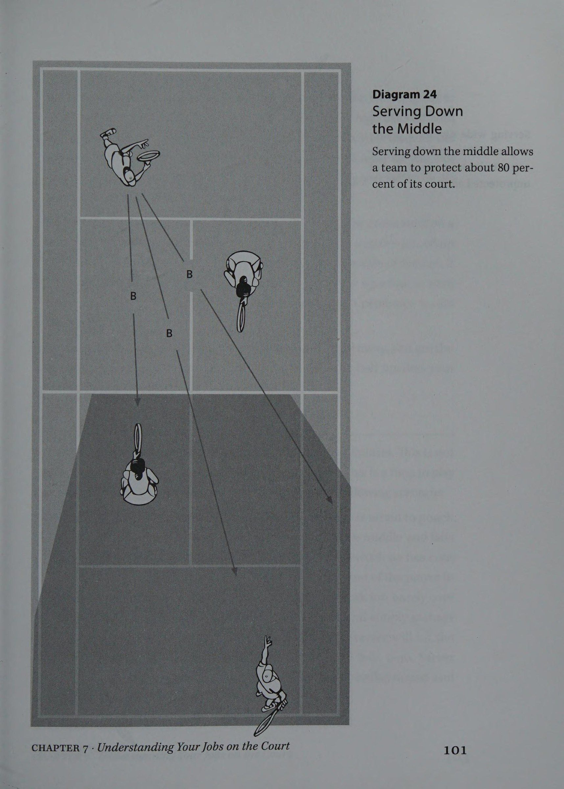
Giao bóng ở trung lộ cho phép một đội bảo vệ được khoảng 80% phần sân của mình.
Diagram 24 Serving Down the Middle Serving down the middle allows a team to protect about 80 per- cent of its court.
Sơ đồ 25 — Giao bóng ra biên
Giao bóng rộng sẽ phân chia trách nhiệm của một đội và cho phép người nhận giao bóng vào phần lớn sân không được bảo vệ. lưới, có thể bắt đầu di chuyển qua lưới, nhưng có thể rút lui, chọn không chơi những đường bóng mạnh, đi chệch hướng, những đường bóng thấp hoặc thậm chí một số đường bóng cao đánh đủ mạnh khiến anh ta không đủ thời gian để phản ứng. Không bao giờ thư giãn cây vợt của bạn. Thực hiện cú giao bóng đầu tiên của bạn và hy vọng đối tác của bạn có thể đưa bóng đi cho bạn, nhưng đừng mong đợi điều đó. Hãy chuẩn bị sẵn sàng để đánh tất cả các quả bóng, không bao giờ để bản thân bị phân tâm bởi chuyển động háo hức của người chơi trên lưới. ¢ Đừng bao giờ vội vã thực hiện cú vô lê đầu tiên. Hãy cẩn thận để đánh một cú giao bóng chéo tốt, thấp trong một cú trả giao bóng rộng, và một cú đáp trả chắc chắn ở giữa khi trả giao bóng nhắm vào giữa. Hãy nhớ rằng nếu bóng nảy về phía lưới của bạn, nó sẽ nảy lên. Một nửa cú vô lê là hoàn toàn có thể chấp nhận được. Chẳng có giá trị gì khi bạn thực hiện cú vô lê vội vàng để ngăn bóng nảy lên khi sự thận trọng sẽ chỉ định thực hiện cú vô lê nửa chừng. Trên hết, hãy nhớ rằng nhiệm vụ của bạn không phải là đưa bóng đi. Bạn là người chơi chéo sân và do đó bạn là con ong thợ. Bạn ném quả bóng lên và tay vợt kết liễu của bạn sẽ nhận được vinh quang và những tràng pháo tay.
, | Diagram 25 Serving Wide Serving wide divides a team’s responsibilities and allows a re- ceiver to hit into a great deal of unprotected court. the net, may begin to move across the net, but may retreat, choosing not to play hard-hit balls angling away, low balls, or even some high balls hit hard enough that he has insufficient time to react. Never relax your racquet. Get your first serve in and hope your partner can put the ball away for you, but don't expect it. Be prepared to hit all balls, never allowing yourself to be dis- tracted by your eager net player's movement. ¢ Never hurry your first volley. Take care to hit a good, low crosscourt on a wide service return, and a solid reply up the middle on a return aimed up the middle. Remember that if the ball bounces on your side of the net, it bounces. Half-volleys are perfectly acceptable. There is no value in rush- ing your volley to prevent a ball from bouncing when prudence would dictate a half-volley. Above all, remember that it is not your job to put the ball away. You are the crosscourt player and thus the worker bee. You set the ball up, and your terminator gets the glory and the applause. THE SERVER’S PARTNER In the position of server's partner, you have many responsibilities.
Bạn cặp của người giao bóng
Ở vị trí đối tác của người giao bóng, bạn có rất nhiều trách nhiệm. Đây không phải là lúc để nghỉ ngơi và cầu nguyện rằng bóng không đến với bạn. Đây là lúc để đóng vai trò tích cực trong việc giành chiến thắng trong trò chơi giao bóng. Hãy tưởng tượng tình huống sau: Người giao bóng đặt quả giao bóng đầu tiên ở giữa. Đối tác sợ cắt lưới cướp điểm thậm chí còn không che được phần giữa. Việc trả lại dịch vụ bị đánh lên giữa và rơi xuống mức tốt, không được phát. 0-15. Người giao bóng thực hiện một cú giao bóng xuất sắc (mà anh ta đã thông báo trước với đối tác của mình) tới trái tay của người chơi trong ô sân Ad. Người nhận bóng không thể làm gì khác ngoài việc thực hiện một cú lốp bóng yếu qua đầu người chơi trên lưới. Người chơi trên lưới không nói gì và chỉ đi đến ô sân Ad của mình, giữ nguyên trên lưới và cho rằng người giao bóng sẽ đánh bóng. Người giao bóng không nhận thức được và không có động thái chơi bóng. 0-30. Người giao bóng lại giao bóng đầu tiên ở giữa. Tay vợt kết liễu, xấu hổ và quyết tâm trả thù cho tất cả những sai lầm trước đó, lao qua sân chỉ để cướp một quả bóng quá thấp để thực hiện thành công và than ôi, đặt quả bóng vào cuối lưới. o-4o. Người giao bóng, hơi lỏng lẻo và chắc chắn có cảm giác rách rưới ở các cạnh, lỗi kép. Trò chơi. Đối tác của người giao bóng, trên thực tế, nếu anh ta vẫn được muốn trở thành thành viên của đội này, cần được giáo dục. Với tư cách là đối tác của người giao bóng, hãy luôn ghi nhớ những điểm sau: ¢ Trách nhiệm phản chiếu của bạn được ưu tiên hàng đầu. Đánh giá cẩn thận xem cú giao bóng đang được chơi như một quả bóng bên trong hay bên ngoài và điều chỉnh cho phù hợp. Nếu giao bóng rộng thì bảo vệ ngõ; nếu nó ở giữa, di chuyển đến trung tâm (xem chương năm). ¢ Hãy nhớ rằng độ cao của quả bóng sẽ thay đổi mục tiêu của bạn. Đừng cố thay đổi góc của quả bóng thấp; trả nó về cùng một hướng và thực hiện từ ngắn đến sâu.' Nếu nó đủ cao để bạn có thể đánh bóng một cách hiệu quả, hãy đưa nó trở lại mục tiêu theo hướng "ngắn đến ngắn". + Đánh lạc hướng người nhận bóng và bắt anh ta đánh cú đánh mà bạn muốn anh ta thực hiện chứ không phải cú đánh mà anh ta muốn thực hiện. Vẽ bóng dọc theo đường biên của bạn bằng cách đánh bóng vào giữa; mời chi phí bằng cách làm đông lưới; khuyến khích một pha giao bóng chéo bằng cách ôm lấy hành lang biên của bạn, sau đó cắt lưới cướp điểm nó nếu đó là một con vịt bị thương— một kẻ nổi không có tốc độ trên đó. Bạn càng hung hãn và can đảm thì người nhận càng trở nên cứng đờ vì sợ hãi. * Gọi quả bóng “ra ngoài” cho đội của bạn vì người giao bóng sắp tới sẽ khó xác định hơn nhiều liệu anh ta có sắp chơi một quả bóng “ra ngoài” hay không. * Hãy quyết đoán và quyết định chơi. Đừng ngại đề xuất một vị trí giao bóng mà bạn cảm thấy sẽ gợi ra phản ứng có thể dự đoán được hoặc yêu cầu giao bóng rộng để bạn có thể thực hiện hành động giả mạo của mình và trêu chọc người nhận thử cú giao bóng của bạn. Nếu người giao bóng của bạn gặp khó khăn trong việc thực hiện cú vô lê ở góc thấp và chéo sân rộng, công việc của bạn là nhắc anh ta thử đội hình Australia (xem trang 119 để thảo luận sâu hơn về đội hình này).
This is not a time to rest and pray that the ball doesn’t come to you. This is a time to play an active role in winning the service game. Imagine the following scenario: Server places a first serve down the middle. Partner, who is afraid to poach, fails to even cover the middle. Service return is hit up the middle and falls good, un-played. 0-15. Server serves an excellent serve (which he has com- municated in advance to his partner) wide to the backhand of the player in the ad court. The receiver can do nothing but play a weak lob barely over the head of the net player. The net player says nothing and simply sashays to his ad court, remaining at the net and assuming the server will hit the ball. Server is caught unaware and has no play on the ball. 0-30. Server again serves a first serve down the middle. Terminator, embarrassed and determined to avenge all previous wrongs, darts across the court only to poach a ball much too low for a successful attempt and, alas, places the ball in the bottom of the net. o-4o. Server, slightly unhinged and definitely feeling ragged around the edges, double faults. Game. Server's partner, if, in fact, he is still wanted as a member of this team, needs education. As the server's partner, always keep these points in mind: ¢ Your mirroring responsibilities take first priority. Carefully assess whether the serve is being played as an inside or outside ball and adjust accordingly. If it is a wide serve, protect the alley; ifit is down the middle, move to the center (see chapter five). ¢ Remember that the height of a ball changes your targets. Don't try to change the angle of a low ball; return it in the same direction and do so short to deep. If it is high enough for you to hit down on the ball effec- tively, return it to a target in the “short to short” direction. + Distract the receiver and make him hit the shot you want him to play, not the shot that he wants to play. Draw the ball down your line by faking to the middle; invite an overhead by crowding the net; encourage a cross- court by hugging your alley, and then poach it off if it is a wounded duck— a floater with no pace on it. The more aggressive and fearless you are, the more frozen in fear the receiver becomes. * Call “out” balls for your team because it is much more difficult for the on- coming server to determine if he might be about to play an “out” ball. * Be assertive and call the play. Don't be afraid to suggest a service placement that you feel will elicit a predictable response or to ask for that wide serve so that you can execute your fake and tease the receiver into trying your al- ley. If your server is having trouble volleying that great low, wide crosscourt, it is your job to prompt him to try the Australian formation (see page 119 for an in-depth discussion of this formation). - Never forget that the most important job for the terminator is to keep the court closed. If you lose heart and begin to get a case of “baseline creep, you are ever-widening the amount of court coverage for the crosscourt player.
- Đừng bao giờ quên rằng công việc quan trọng nhất của tay vợt kết liễu là giữ cho sân đóng cửa. Nếu bạn mất kiên nhẫn và bắt đầu gặp phải trường hợp "leo thang cơ bản, bạn đang mở rộng phạm vi bao quát của sân cho người chơi chéo sân. Điều quan trọng hơn là giữ vị trí của bạn hơn là trở thành một người cắt lưới cướp điểm dũng cảm. Hãy xem vị trí sân này như một vị trí sẽ kiếm được một số điểm miễn phí hoặc dễ dàng nếu bạn thành công thu hút sự chú ý của người nhận bóng ra khỏi quả bóng về phía bạn. Hãy trở thành một sự phân tâm khó chịu.
It is more important to hold your position than it is to be a fearless poacher. View this court position as one that will earn some free or easy points if you successfully draw the receiver's attention away from the ball toward you. Be a bothersome distraction. Remember that movement and courage are the keys to playing this court position correctly. More service games are lost because of this player's inactivity than are ever lost by his activity. -THE RECEIVER If you don't return serve, there is no service break, and if you don't break serve, you don't win matches.
Hãy nhớ rằng sự di chuyển và lòng dũng cảm là chìa khóa để chơi đúng vị trí sân này. Nhiều ván giao bóng bị thua do người chơi này không hoạt động hơn bao giờ hết do hoạt động của anh ta.
Returning serve successfully requires con- centration, thoughtful planning, and careful execution. The receiver should remember these important points: « Heroes need not apply.
-NGƯỜI NHẬN Nếu bạn không trả giao bóng, sẽ không có thời gian nghỉ giao bóng và nếu bạn không bẻ giao bóng, bạn sẽ không thắng trận đấu. Việc trả giao bóng thành công đòi hỏi sự tập trung, lập kế hoạch chu đáo và thực hiện cẩn thận. Người nhận nên nhớ những điểm quan trọng sau: « Anh hùng không cần áp dụng. Hãy nhất quán, không hào nhoáng và nhớ thực hiện các cú đánh có tính đến nhiệm vụ của đối tác. Bạn, giống như người giao bóng, là con ong thợ và dịch vụ hoàn trả của bạn không phải là người chiến thắng tiềm năng hào nhoáng mà là phương tiện cho phép tay vợt kết liễu của bạn đi vào điểm. Tuy nhiên, để tránh trở nên quá dễ đoán, hãy thực hiện một số cú lốp bóng tấn công vừa phải và thỉnh thoảng thực hiện một đường chuyền dọc biên hoặc vào giữa. - Nói chung, hãy thực hiện cú đánh cho phép đối tác của bạn tiến vào điểm—cú đánh chéo góc thấp, rộng và không sâu hơn đường giao bóng. Lợi ích giao bóng sâu gấp đôi là một lựa chọn tồi trừ khi bạn có thể đưa ra đảm bảo rằng bạn có thể chạm vào phía sau vạch cuối sân và phá hỏng không gian thời gian của người giao bóng. Nếu người giao bóng lao vào lưới thì cú trả bóng sâu sẽ cao hơn và dễ thực hiện cú vô lê hơn. Nếu người giao bóng lùi lại, cú trả bóng “sâu” của bạn, có thể rơi vào bên trong vạch cuối sân từ 2 đến 3 feet, nằm ngay trong vùng an toàn của anh ta. Đáng buồn thay cho bạn, anh ta thậm chí không cần phải di chuyển chân để vượt qua bạn, hoặc tệ hơn nữa là lốp bóng bạn trong cú đánh tiếp theo. Ngược lại, lợi ích giao bóng thấp, rộng, như chúng ta đều biết, khó thực hiện cú vô lê hơn nhiều và người ôm sát đường biên khó tiếp cận hơn nhiều. « Lên kế hoạch trước cho cú trả bóng, nhận ra rằng nếu cú giao bóng đủ tốt để tạo ra một “tình huống khẩn cấp, tức là cú trả bóng theo kế hoạch không còn thực hiện được do tốc độ, độ xoáy hoặc vị trí của quả giao bóng, thì một cú lốp bóng phòng thủ là phản ứng thích hợp. Những người chơi có sức mạnh là việc trả giao bóng luôn biết khi nào họ gặp trường hợp khẩn cấp và không dại dột bám vào một kế hoạch không còn là lựa chọn cho những điều kiện đó. Họ không cho phép mình có quá nhiều tham vọng trong hoàn cảnh này. Nếu họ có thể đưa vợt của mình vào một quả bóng, họ sẽ đưa quả bóng đó vào cuộc bằng cách sử dụng cú lốp bóng phòng thủ bất cứ khi nào cần thiết. - Đừng trở thành "người quan sát" hay "người thắc mắc". Đừng đứng xung quanh để ngưỡng mộ cú trả bóng của bạn. Đừng bao giờ chìm đắm trong sự xa hoa "giữa điểm" của sự kinh ngạc và ngưỡng mộ, bất kể bạn đã chơi cú trả bóng tốt đến đâu. Hãy luôn mong đợi con vật nhỏ màu vàng đầy lông sẽ quay trở lại một lần nữa. Theo dõi cú trả bóng của bạn lên lưới, hãy nhớ rằng vị trí trả giao bóng bắt đầu trách nhiệm buộc lưới của bạn (xem chương ba, sơ đồ một). Ngay cả khi cú giao bóng kéo bạn ra xa, đó là của bạn trách nhiệm chơi một cú trả bóng mà không khiến đội của bạn gặp nguy hiểm. Hot-dogging không phải là một phần trăm quần vợt. Anh ta sẽ vào điểm và giúp đỡ bạn khi có thể, nhưng hãy nhớ rằng anh ta sẽ không chặn những quả bóng thấp hướng ra xa anh ta.
Be consistent, not flashy, and remember to hit shots in consideration of your partner's duties. You, like the server, are the worker bee, and your service return should not be a flashy poten- tial winner, but rather the vehicle that enables your terminator to enter the point. However, to avoid becoming too predictable, sprinkle in a fair number of offensive lobs and an occasional passing shot down the line or through the middle. - In general, stick to the shot that allows your partner to enter the point—the low, wide crosscourt that lands no deeper than the service line. A deep service return in doubles is a poor choice unless you can give assurances that you can hit the back of the baseline and ruin the server's timing space. If the server rushes the net, the deep return is higher and easier to volley. If the server stays back, your “deep” return, which probably lands two to three feet inside the baseline, is right in his comfort zone. Sadly for you, he doesn't even have to move his feet to pass you, or worse yet, lob you on his next shot. Conversely, the low, wide service return is, as we all know, much more difficult to volley, and much more difficult for the baseline-hugger to reach. « Plan the return in advance, realizing that if the serve is good enough to create an “emergency, that is, the planned return is no longer pos- sible because of the speed, spin, or placement of the serve, a defensive lob is the appropriate response. Players whose strength is their return of serve always know when they are having an emergency and do not foolishly stick to a plan that is no longer an option for those condi- tions. They do not allow themselves to get too ambitious for the situ- ation. If they can get their racquets on a ball, they put that ball in play using the defensive lob whenever necessary. - Don't be a “watcher” or a “wonderer. Don’t stand around admiring your return. Never indulge in the “between-point” luxuries of awe and admiration, no matter how well you have played the return. Always expect the furry little yellow thing to come back one more time. Fol- low your return to the net, bearing in mind that the placement of your service return starts your netstrap responsibility (see chapter three, diagram one). Even if the serve pulls you wide, it is your responsibility to play a return that will not put your team in jeopardy. Hot-dogging is not percentage tennis. Dirty looks at your partner are not permitted. He will enter the point and help you when possible, but remember, he will not intercept low balls angling away from him. « Be prepared to play all balls, as the server must be, and be pleasantly surprised when help is provided. ¢ Your primary goal is to make your terminator the hero. THE RECEIVER'S PARTNER Whether or not your team breaks serve is largely dependent on what this player does, or doesn't do, in this court position, just as whether a ser- vice game is held depends largely upon what the server's partner does, or doesn’t do.
ĐỐI TÁC CỦA NGƯỜI NHẬN Việc đội của bạn có bẻ giao bóng hay không phần lớn phụ thuộc vào những gì người chơi này làm hoặc không làm, ở vị trí sân này, cũng giống như việc một trận đấu giao bóng có được tổ chức hay không phụ thuộc phần lớn vào những gì đối tác của người giao bóng làm hoặc không làm. Đối tác của người nhận là đối tác năng động của đối tác của người giao bóng. Đối tác của người nhận nên ghi nhớ những điều sau: « Bảo vệ khỏi sự cắt lưới cướp điểm từ đối tác của người giao bóng. Bởi vì đôi mắt của bạn đang tập trung vào đối tác của người giao bóng, bạn sẽ dễ dàng nhận thấy người chơi đó bắt đầu động thái cắt lưới cướp điểm khi đối tác của bạn quay trở lại. Di chuyển sang ngang dọc theo đường giao bóng của bạn, cẩn thận để theo đúng đường vợt của đối thủ. ‘Chuyển động này thường sẽ cho phép bạn ngăn chặn những kẻ mà nếu không sẽ là một người cắt lưới cướp điểm. Nhiệm vụ đầu tiên của bạn ở vị trí sân này là bào chữa. Hãy nghiêm túc thực hiện và nếu đối tác của người giao bóng cắt lưới cướp điểm, đừng hèn nhát và bỏ cuộc. Thường thì một cú đâm vào bóng có thể cứu được một điểm đã bị mất. * Đừng trở thành người giao bóng, ngay cả khi vị trí sân của bạn bắt đầu trên đường giao bóng. Một người chơi giỏi thường để đối tác nhận giao bóng của mình xử lý công việc gọi giao bóng vào hoặc ra để anh ta có thể theo dõi người cắt lưới cướp điểm tiềm năng cẩn thận hơn. (Bạn gọi đường dây dịch vụ của riêng mình theo số đơn, phải không?) « Khi bạn đã xác định rằng đối tác của người giao bóng không có động thái nhằm giành lấy lợi ích của đối tác, hãy đánh giá ngay hai yếu tố:
The receiver's partner is the dynamic counterpart to the serv- er's partner. The receiver's partner should keep the following in mind: « Protect against a poach from the server's partner. Because your eyes are riveted to the server's partner, you will easily see that player begin a poaching move on your partner's return. Move laterally along your ser- vice line, being careful to stay in line with your opponent's racquet. ‘This movement will often allow you to intercept what would otherwise be a putaway poach. Your first duty in this court position is defense. Take it seriously, and if the server's partner poaches, don’t be a coward and bail out. Often a stab at the ball can rescue an otherwise lost point. * Don't be a linesperson, even if your court position begins on the service line. A good player often lets his receiving partner handle the job of call- ing the serve in or out so he can watch the potential poacher more care- fully. (You call your own service line in singles, don't you?) « Once you have determined that the server's partner is not making a move to poach your partner's return, immediately assess two factors 1. Is the server coming to the net behind his serve? 2. What is the height of your partner's return as it crosses the net? If the answer to question number one is no, or if the server is midcourt and the ball bounces in front of him, allowing time to choose a shot, question number two is irrelevant.
Người giao bóng có đến lưới sau cú giao bóng của anh ta không? 1.
Immediately start forward, taking care to mirror the ball correctly.
Độ cao của cú trả bóng của đồng đội bạn khi bóng qua lưới là bao nhiêu?
In this scenario, the server is perfectly capable of hitting behind you into your alley (see diagram twenty-six).
Nếu câu trả lời cho câu hỏi số một là không, hoặc nếu người giao bóng ở giữa sân và bóng nảy trước mặt anh ta, cho phép anh ta có thời gian để chọn cú đánh, thì câu hỏi số hai là không liên quan. Ngay lập tức tiến về phía trước, chú ý phản chiếu bóng chính xác. Trong trường hợp này, người giao bóng hoàn toàn có khả năng tấn công từ phía sau bạn vào hành lang biên của bạn (xem sơ đồ 26).
If the answer to question number one is yes, then question number two becomes very important because the height of the service return to be volleyed Diagram 26 When Not to Poach: Scenario One The receiver, in the deuce court foreground, has hit an excellent service return. His partner, in the ad court foreground, is an excellent volleyer, renowned for her poaching skills and is eager to cross and put the ball away on this point.
Nếu câu trả lời cho câu hỏi số một là có, thì câu hỏi số hai trở nên rất quan trọng vì độ cao của cú giao bóng sẽ được thực hiện bằng cú vô lê
However, she sees that the server is not approach- ing the net and that her partner's return will bounce in front of that server.
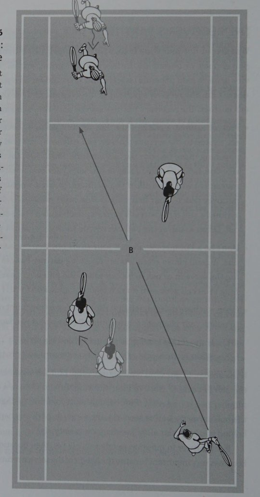
Người nhận bóng, ở tiền cảnh của ô sân Deuce, đã đạt được cú giao bóng xuất sắc. Đối tác của anh ấy, ở tiền cảnh của ô sân Ad, là một tay vô lê xuất sắc, nổi tiếng với kỹ năng cắt lưới cướp điểm và rất háo hức tạt bóng và đưa bóng đi vào điểm này. Tuy nhiên, cô ấy thấy rằng người giao bóng không đến gần lưới và cú trả bóng của đối tác của cô ấy sẽ bật lên trước người giao bóng đó. Bởi vì người giao bóng có thể dễ dàng nhắm một quả bóng vào hành lang biên của anh ta, nên sự thận trọng chỉ ra rằng người cắt lưới cướp điểm háo hức tôn trọng trách nhiệm phản ánh của cô ấy và chờ đợi một cơ hội tốt hơn. bởi người giao bóng xác định nơi bạn phải đi tiếp theo. Nếu cú trả bóng đủ cao để cho phép người giao bóng thực hiện cú vô lê phía sau bạn vào ngõ của bạn, bạn phải ngay lập tức cố gắng phản chiếu quả bóng và hy vọng đỡ được một quả bóng nhắm vào bạn (xem sơ đồ 27). Động thái này rất quan trọng nhưng lại thường bị các “người theo dõi” và 6 kỳ quan lơ là, cẩu thả trong quan điểm xét xử của mình. Khi việc điều chỉnh vị trí sân này được thực hiện, người giao bóng buộc phải đánh chéo sân một cách chính xác hoặc phải trả giá vì đã để bóng của mình đi về phía người ở gần lưới hơn—một lỗi “sâu đến ngắn” đáng tiếc mà bạn phải bắt anh ta phải trả giá ngay lập tức. Việc không nhận ra sự cần thiết phải phản chiếu và tiến về phía trước, mặc dù mức trả lại cao, sẽ cho phép người giao bóng thực hiện cú đánh của mình ở bất kỳ đâu trong sân và tự tin rằng anh ta đang đánh “sâu đến sâu”
Because the server can easily aim a ball into his al- ley, prudence dictates that the eager poacher honor her mirror- ing responsibilities and wait for a better opportunity. by the server determines where you must go next. If the return is high enough to ailow the server to volley behind you into your alley, you must immediately attempt to mirror the ball and hope to fend off a ball aimed at you (see diagram twenty-seven). This move is critical and yet often neglected by “watchers” and wonderers who are sloppy about their court positions. When this court posi- tion adjustment is made, the server is forced either to hit crosscourt accu- rately or pay for allowing his ball to wander toward the person closer to the net—a regrettable “deep to short” error for which you should immediately make him pay. Failure to recognize the need to mirror and move forward, even though the return is high, allows the server to play his shot anywhere in the court and be confident that he is hitting “deep to deep’ If the answer to question number one is yes, and the answer to question - number two is “low enough to make the server's first volley difficult,’ no matter how wide, then your wonderful partner has set the stage for you to make one of the most satisfying moves of great doubles. If the server is faced with volleying alow ball off his shoe tops, you know that it will be difficult, if not impossible, for him to change its angle and hit behind you. You are free to move toward the center and be prepared to poach off his weak volley. When you move, you will not know how low his volley will be when it crosses the net.
Nếu câu trả lời cho câu hỏi số một là có, và câu trả lời cho câu hỏi - số hai là "đủ thấp để khiến cú vô lê đầu tiên của người giao bóng trở nên khó khăn', bất kể rộng đến đâu, thì đối tác tuyệt vời của bạn đã tạo tiền đề cho bạn thực hiện một trong những động tác thỏa mãn nhất của những cú đánh đôi tuyệt vời. Nếu người giao bóng phải đối mặt với cú vô lê bóng thấp từ mũi giày của anh ta, bạn biết rằng sẽ rất khó, nếu không nói là không thể, để anh ta thay đổi góc và đánh ra phía sau bạn. Bạn có thể tự do di chuyển về phía giữa và hãy chuẩn bị để đón cú vô lê yếu ớt của anh ta. Khi bạn di chuyển, bạn sẽ không biết cú vô lê của anh ta sẽ thấp đến mức nào khi nó đi qua đầu bạn. Nó thậm chí có thể quá rộng để với tới, nhưng bạn biết rằng nếu muốn phá lưới, nó sẽ quay trở lại ở cùng một góc mà đối tác của bạn đã tạo ra với cú trả bóng tuyệt vời của anh ta. hai mươi tám). Đối tác của bạn đạt được lợi ích lớn; bạn bước vào và kết thúc điểm bằng một cú vô lê cưỡng bức. Đừng bao giờ lo lắng về "những bước di chuyển sai". Rút lui nếu quả bóng quá thấp để thực hiện một cú vô lê đẹp. Như đã lưu ý trước đó, quả bóng thậm chí có thể bay qua đầu bạn. Hãy nhớ rằng đối tác của bạn luôn cảnh giác để chơi tất cả các quả bóng và sẽ hỗ trợ bạn. Động tác này tương đương với hành động cắt lưới cướp điểm của đối tác của người giao bóng và gây mất tập trung và khó chịu cho người giao bóng cũng như việc người cắt lưới cướp điểm đối với người nhận. Và đó là cả một niềm vui.
It may even pop over your head. It may even be too wide to reach, but you do know that if it is to clear the net at all, it will come back at the same angle your partner created with his splendid return. Now is not the time for hesitation or timidity. Be aggressive! This move is one of the great “one-two punch’ combinations in doubles (see diagram twenty-eight). Your partner hits a great return; you step in and terminate the point with a forcing volley. Never worry about “false moves. Retreat if the ball is too low to make a decent volley. As noted previously, it is possible that the ball might even pop over your head. Remember that your partner is always alert to play all balls and will back you up. This move is the counterpart to the server's partner's poach and is as distracting and upsetting to the server as the poach is to the receiver. And it is barrels of fun. Diagram 27 When Not to Poach: Scenario Two The mad poacher is eager to try again.
Sơ đồ 27 — Khi nào không nên cắt lưới: tình huống hai
Người cắt lưới cướp điểm điên cuồng muốn thử lại. Lần này, mắt cô ấy sáng lên khi nhìn thấy người giao bóng đang tiến đến gần lưới, nhưng than ôi, cô ấy đột nhiên thấy rằng đối tác của mình đã thực hiện một cú trả bóng rất xấu khiến lưới đã dọn sạch lưới khoảng 5 feet. Nếu cô ấy bắt đầu cắt lưới cướp điểm, người giao bóng có thể dễ dàng chuyền vào hành lang biên của cô ấy vì bóng quá cao. Một lần nữa người cắt lưới cướp điểm kiên nhẫn phải che chắn hành lang biên của mình và chờ đợi cơ hội khác.
This time her eyes light up as she sees the server ap- proaching the net, but alas, she suddenly sees that her partner has hit a very ugly return which has clearerd the net by a good five feet. If she begins a poach, the server can easily volley into her alley because the ball is so high. Again the patient poacher must cover her alley and await another opportunity. A
Sơ đồ 28 — Khi nào nên cắt lưới
Người cắt lưới cướp điểm đam mê được khen thưởng. Đối tác ô sân Deuce của anh ta đạt được lợi ích thấp đáng kinh ngạc.
Diagram 28 When to Poach The passionate poacher is re- warded. His deuce court partner hits a wonderfully low return.
Người giao bóng đang tiến gần đến lưới và sẽ phải đối mặt với một cú vô lê mà anh ta phải lao ra khỏi ngọn giày của mình. Người giao bóng hầu như không thể chuyền quả bóng này vào hành lang biên của mình, vì vậy người cắt lưới cướp điểm có thể tự do dạo qua lưới và cắt lưới cướp điểm
The server is approching the net and will be faced with a volley he must dig out of his shoe tops. It would be virtually impossible for the server to volley this ball into his alley, so the poacher is free to romp across the net and poach the “wounded duck? i ; CHAPTER 7 « Understanding Your Jobs on the Court
Đối tác của người nhận bóng là công việc quan trọng nhất trên sân. Nó yêu cầu đánh giá về khả năng của người giao bóng, chuyển động của đối tác của người giao bóng và chuyên môn của đối tác quay lại của bạn về từng điểm bạn chơi ở vị trí này. Nếu người giao bóng là một tay kỳ cựu xảo quyệt, có khả năng đánh những cú vô lê thấp và góc cạnh từ dây giày của anh ta, bạn có thể sẽ không có quá nhiều cơ hội để cắt lưới cướp điểm. Tuy nhiên, trước khi bạn cân nhắc xem liệu một động thái tấn công có khả thi hay không, bạn phải chơi phòng thủ, theo dõi cẩn thận hành vi cắt lưới cướp điểm của đối tác của người giao bóng. Cơ hội của anh ấy đến trước bạn. Trong mỗi trận đấu, nếu không phải trong mỗi lần giao bóng, bạn phải xác định khả năng của đối tác để đánh một đường chéo tấn công tốt cho bạn. Chuyển động của bạn được xác định dựa trên đánh giá này bởi vì bạn phải đợi ở điểm “T” nếu bạn định chặn cú vô lê của người giao bóng. Bạn không thể tự động di chuyển về phía trước để phản chiếu (một lỗi phổ biến) và sau đó quyết định, “Rất tiếc, tôi nghĩ tốt hơn là tôi nên vượt qua”, bởi vì bạn đã tăng đáng kể góc mà bạn phải di chuyển. Nếu bạn nghĩ rằng mình có thể có cơ hội bắt được cú vô lê của người giao bóng, bạn phải kiên nhẫn và đợi ở chữ “T” cho đến khi bóng của anh ta bay lên. Nếu đó là quả bóng phù hợp để đi tiếp, bạn sẽ có thời gian để bắt kịp nó và thực hiện một cú vô lê cưỡng bức.
The receiver's partner is the most important job on the court. It requires an assessment of the server's ability, the server's partner's movement, and your returning partner’s expertise on every single point you play this posi- tion. If the server is a wily veteran, capable of hitting low and angled volleys off his shoelaces, you probably won't get too many opportunities to poach. And yet before you even consider whether an offensive move is even possible, you must play defense, watching carefully for the server's partner's poach. His opportunity comes before yours. You must, in each game, if not on every serve, determine your partner's ability to hit a good, offensive crosscourt for you. Your movement is predicated on this assessment because you must wait at the “T” if you are going to intercept the server’ volley. You can't automatically move forward to mirror (a common error) and then decide, “Oops, I think I better cross,’ because you have dramatically increased the angle you have to travel. If you think you might have a chance to poach off the server's volley, you must be patient and wait at the “T” until his ball is in the air. If it is the right ball to move on, you will have time to catch up to it and hit a forcing volley.
Mỗi công việc trên sân đều rất quan trọng và ở mỗi bên lưới, việc thực hiện đúng công việc của người bắt đầu—người giao bóng và người nhận—phải diễn ra trước khi công việc của người về đích, đối tác của người giao bóng và người nhận, có thể bắt đầu. Chắc chắn, không có công việc nào là nơi để nghỉ ngơi. Đừng bao giờ bắt gặp mình trở thành một hình nón màu cam, đứng xung quanh và mua vé xem sự kiện diễn ra trên sân. Người bắt đầu có trách nhiệm bắt đầu trận đấu có lợi cho đội của họ. Những người về đích có thêm áp lực trong việc quyết định xem có nên vào điểm hay không và khi nào và có rất ít thời gian để đưa ra quyết định đó. Tuy nhiên, những quyết định đó thường quyết định kết quả của một điểm, một trận đấu hoặc thậm chí là một trận đấu. Khả năng thực hiện những vai trò dứt điểm năng động này một cách đúng đắn và tự tin là đỉnh cao của những kỹ năng đã đề cập trước đó: bao quát trung tâm, có kỹ năng cắt lưới cướp điểm siêu hạng, chơi phòng thủ tốt, bọc lót cú lốp bóng khi nó được giao cho bạn và biết nhiệm vụ phản chiếu thích hợp của mình.
Each job on the court is very important, and on each side of the net, proper execution of the starters’ jobs—server and receiver—must occur before the jobs of the finishers, the server's and receiver's partners, may begin. Certainly, no job is a place for resting. Never catch yourself becoming an orange cone, standing around and buying tickets to the event unfolding on the court. Start- ers have the responsibility for beginning the point to their team’s advantage. Finishers have the added pressure of deciding if and when to enter the point, and there is very little time to make that decision. Yet those decisions often determine the outcome ofa point, a game, or even a match. The ability to play these dynamic finishing roles properly and confidently is the culmination of those skills mentioned earlier:covering the center, having superior poaching skills, playing good defense, taking care of the lob when it is assigned to you, and knowing your proper mirroring duties.
Chơi đôi giỏi đòi hỏi bạn phải nhìn và hiểu tất cả các ô trong bức tranh khảm phức tạp. Một viên gạch có thể đẹp nhưng vô nghĩa, tuy nhiên khi mỗi viên gạch được lắp vào đúng vị trí của nó, kết quả sẽ là một tác phẩm nghệ thuật được xem tốt nhất bằng cách bước đi và đánh giá cao bức tranh lớn hơn.
Playing great doubles requires that you see and understand all the tiles in acomplicated mosaic. One tile may be beautiful, but meaningless, and yet when each tile is fitted into its proper place, the result is a work of art best viewed by stepping away and appreciating the larger picture.
Cỗ máy đánh đôi tuyệt vời hoạt động ở trình độ chuyên môn rất cao, đòi hỏi mỗi tay vợt phải ở đúng vị trí, cầm bóng đúng, nói đúng, thực hiện tốt công việc và chơi với một đối tác mà bạn tin tưởng và tôn trọng.
The great doubles machine functions at a very high level of expertise, forged out of each player being in the right place, taking the right ball, saying the right thing, executing jobs well, and playing with a partner you trust and respect.
O Đừng mong trốn tránh hay nghỉ ngơi trong những trận đánh đôi tốt. Mỗi vị trí trong số bốn vị trí của sân đều là một công việc đòi hỏi khắt khe và dễ thấy.
Jobs Checklist O [ie Ser ei) O Don’t expect to hide or rest in good doubles. Each of the four court positions is a highly visible and demanding job.
Đội đánh đôi của bạn sẽ đạt được kết quả tốt nhất khi cả hai người chơi nhập phần lớn số điểm, đạt được nhịp điệu và sự cân bằng
Your doubles team will achieve its best results when both players enter the majority of the points, achieving a rhythm and balance to the action.
Người giao bóng và người nhận có trách nhiệm bắt đầu điểm ei) về lợi thế của đội. Chúng là “những con ong thợ”.
Servers and receivers have the responsibility for starting the point to the team’s advantage. They are the “worker bees.
Các ván giao bóng thường chỉ giành chiến thắng nhờ lối chơi tích cực của Ser
Service games are often won solely by the aggressive play of the server's partner.
Trò chơi giao bóng thường bị phá vỡ bởi sự can thiệp năng động của [tức là đối tác của người nhận giao bóng vào điểm.
Service games are often broken by the dynamic intervention of the receiver's partner into the point.
Trong những trận đấu đôi tốt, điều đặc biệt đúng là tổng thể lớn hơn tổng của hai phần của nó.
In good doubles, it is particularly true that the whole is greater than the sum of its two parts. 1413
Chương 8. Linh Hoạt: Một Vũ Khí Mạnh Mẽ
Flexibility: A Powerful Weapon
... sự sáng suốt của tư tưởng... thoát khỏi thành kiến và thoát khỏi cứng nhắc, cởi mở tâm trí... tất cả những điều này dường như đi cùng với sự linh hoạt hạnh phúc nào đó của tự nhiên, và phụ thuộc vào nó.
Flexibility: A Powerful Weapon ... lucidity of thought ... freedom from prejudice and freedom from stiffness, openness of mind ... all these seem to go along with a certain happy flexibility of nature, and to depend upon it. Matthew Arnold Imagine playing a match like this one: The score is close, but your team sees the chance to seize some momentum.
Hãy tưởng tượng bạn đang chơi một trận đấu như thế này: Tỷ số đang đến gần, nhưng đội của bạn nhìn thấy cơ hội để lấy đà. Đột nhiên, bạn, với tư cách là tay vợt kết liễu, được giao một quả bóng dễ dàng, có thể săn được, vì vậy bạn nhanh chóng vượt qua và thực hiện cú đánh vào mục tiêu, chỉ để xem một trong những đối thủ của bạn lao xuống tìm bóng, nhắm mắt lại, giật lại, thở hổn hển và đánh nó ra khỏi khung của anh ta để giành chiến thắng rõ ràng trên cả hai đầu của bạn. Khi bạn đứng đó trong sự im lặng kinh ngạc, anh ấy xin lỗi. Bạn không nghĩ gì về điều đó cho đến khi được ba điểm sau, anh ấy lại làm như vậy. Một lời xin lỗi khác xảy ra sau đó, lần này kèm theo một cái nhún vai. Bạn nhướn mày, nhưng đối tác của bạn bảo bạn đừng lo lắng. Anh ấy không thể làm điều đó một lần nữa. Bạn tiếp tục chơi bóng của mình về phía sân của anh ta bất cứ khi nào có thể bởi vì anh ta là một tên ngốc thở hổn hển, may mắn và bất tài. Hai hiệp rưỡi sau, anh ta không chỉ vẫn làm được điều đó mà còn giành chiến thắng trong trận đấu bằng một cú đâm tuyệt vọng kèm theo một tiếng rên rỉ đặc biệt man rợ, sau đó là một nụ cười ngượng ngùng.
Suddenly, you, as terminator, are pre- sented with an easy, poachable ball, so you swiftly cross and play the shot to a target, only to watch one of your opponents dive for the ball, close his eyes, recoil, gasp, and hit it off his frame for a clean winner over both of your heads. As you stand there in shocked silence, he apologizes. You think nothing of it until three points later, he does it again. Another apology ensues, this time accompanied by a shoulder shrug. You raise your eyebrows, but your part- ner tells you not to worry. He can't possibly do it again. You continue to play your balls to his side of the court whenever possible because he is a gasping, lucky, incompetent idiot. Two and a half sets later, not only is he still doing it, but he also manages to win the match ona desperate stab accompanied by a particularly savage groan followed by a sheepish grin. This guy is probably still doing it on somebody else's court to some equally unbelieving and inflexible opponents.
Anh chàng này có lẽ vẫn đang làm điều đó trên sân của người khác trước một số đối thủ không đáng tin và không linh hoạt. Vậy tại sao bạn không thay đổi chiến lược của mình hoặc đánh một cú đánh khác?
So why don't you change your strategy or hit a different shot? WHEN YOUR STUMBLING OPPONENT CONTINUES TO SOMEHOW RETURN YOUR PUTAWAYS, BE FLEXIBLE ENOUGH TO CHANGE THE SELECTION OF YOUR SHOT.
KHI ĐỐI THỦ VƯỢT TRỘI CỦA BẠN TIẾP TỤC BẰNG CÁCH NÀO
FLEXIBILITY REQUIRES CONFIDENCE Stubbornness, hubris, and inflexibility are all weaknesses of the “watcher” and “wonderer” teams.
TRẢ LẠI PUTAWAY CỦA BẠN, ĐỦ LINH HOẠT ĐỂ THAY ĐỔI
The ability to remain flexible in a trying situation, such as the one just mentioned, takes great confidence, both in yourself and in your partner.
Linh hoạt đòi hỏi tự tin
Sự bướng bỉnh, ngạo mạn và thiếu linh hoạt đều là điểm yếu của đội “người quan sát” và “người kỳ diệu”. Khả năng duy trì sự linh hoạt trong một tình huống khó khăn, chẳng hạn như tình huống vừa đề cập, đòi hỏi sự tự tin rất lớn, cả vào bản thân bạn và đối tác của bạn. Khi bạn đang chiến thắng và mọi thứ đang diễn ra suôn sẻ, tính linh hoạt không phải là điều cần cân nhắc nhưng nó thường là yếu tố duy nhất có thể giải cứu đội của bạn khỏi một tình huống thảm khốc. Ví dụ: hãy xem xét rằng nếu bạn thắng trong lượt tung bóng, có thể đội của bạn không nên luôn chọn giao bóng trước. Không có thời điểm nào mà người giao bóng dễ bị mất giao bóng hơn ván đầu tiên của trận đấu. Các dây thần kinh vẫn chưa ổn định hoàn toàn và một người giao bóng ổn định có thể vẫn chưa tìm được đường đi của mình. Nếu bạn nhận được trước và giành được trò chơi đầu tiên nhanh chóng, bạn sẽ được nghỉ giải lao trước khi cởi áo khoác.
When you are winning and things are purring smooth- ly, flexibility is not a consideration, but it is often the single factor that can rescue your team from a dire situation. Consider, for example, that if you win the toss, maybe your team shouldn't always opt to serve first. There is no other time that the server is more likely to lose his serve than the first game of the match. Nerves haven't quite settled yet, and a steady server CHAPTER 8 - Flexibility: A Powerful Weapon may not yet have found his groove. If you receive first and snatch a quick first game, you will be up a break before you've taken off your jacket. Flexibility, both as a player and as a team, includes the ability to rec- ognize when your strategy is in error, when a different formation or pace shot might produce better results, and when and how to adjust quickly.
Tính linh hoạt, cả với tư cách là một người chơi và một đội, bao gồm khả năng nhận biết khi nào chiến lược của bạn bị sai, khi nào một đội hình hoặc tốc độ bắn khác có thể mang lại kết quả tốt hơn cũng như thời điểm và cách điều chỉnh nhanh chóng. Định nghĩa của sự điên rồ là làm đi làm lại cùng một việc và mong đợi một kết quả khác. Tại một thời điểm nào đó, bạn phải tin rằng kẻ đánh người thắng cuộc trong khung hình của mình sẽ không dừng lại—ít nhất là vào ngày đó. Đừng bao giờ đợi cho đến khi bạn bị sa lầy trong hố bùn sâu đến mức bạn chỉ điều chỉnh để xem liệu trận đấu có thể cứu vãn được hay không. Học cách đánh giá từng tình huống và biết các lựa chọn của bạn. Sử dụng những thay đổi chiến lược để duy trì vị trí dẫn đầu của bạn hoặc giữ vững vị trí trong trận đấu, chứ không phải cố gắng giành lấy nó sau một thất bại cay đắng. Sự thể hiện tính linh hoạt của bạn cho đối thủ thấy rằng bạn có câu trả lời cho mọi thứ và bạn sẽ chống lại từng điểm mạnh mà họ có. Arthur Ashe quá cố đã nói rằng Jimmy Connors là kỳ thủ vĩ đại nhất từng sống vì ông chưa bao giờ thua trận nào—chỉ là đôi khi ông hết thời gian trước khi có thể thực hiện được chiến lược giành chiến thắng.
The definition of insanity is doing the same thing over and over and expecting a different result. At some point, you have to believe that the guy hitting winners off his frame isn't going to stop—at least not on that day. Never wait until you are mired in a mudhole so deep that you make adjustments only to see if the match can be saved. Learn to evaluate each situation and know your options. Use strategic changes to maintain your lead or stay even in a match, not to try to grasp it from a stinging defeat. Your demonstration of flexibility shows your opponents that you have an answer for everything and you will counter each strength they have. The late Arthur Ashe said Jimmy Connors was the greatest player who ever lived because he never lost a match—he just sometimes ran out of time before he could hit upon the winning strategy. ASK YOURSELF A COUPLE OF KEY QUESTIONS Being behind in a match is not a personal reflection of how well you play tennis, nor is it an indictment on your character.
Tự hỏi mình vài câu then chốt
Việc bị tụt lại phía sau trong một trận đấu không phải là sự phản ánh cá nhân về việc bạn chơi quần vợt giỏi như thế nào, cũng không phải là một bản cáo trạng về tính cách của bạn. Đây thường là một vấn đề tạm thời mà bạn có thể tìm ra giải pháp nếu linh hoạt và bình tĩnh, nhưng nó có thể nhanh chóng leo thang thành tình huống vô vọng nếu bạn rơi vào trạng thái hoảng loạn mù quáng.
It is frequently a temporary problem for which you can find a solution if you stay flexible and calm, but it can escalate quickly into a hopeless situation if you suc- cumb to blind panic. Anytime the score is not in your favor, regardless of whether you are down one game or six games, the question you and your partner should ask is, “Are they winning, or are we losing?
Bất cứ khi nào tỷ số không có lợi cho bạn, bất kể bạn thua một ván hay sáu ván, câu hỏi mà bạn và đồng đội của mình nên đặt ra là, "Họ thắng hay chúng ta đang thua?" Câu trả lời sẽ giúp bạn xác định chiến lược nào bạn nên sử dụng để đảo ngược tình thế.
The answer will help you determine which strategy you should use to reverse the tide. If you are missing manageable volleys, double-faulting, hitting playable balls out, or failing to return serve, then they are not winning, you are losing,
Nếu bạn thiếu những cú vô lê có thể quản lý được, phạm lỗi kép, đánh ra những quả bóng có thể chơi được hoặc không trả giao bóng, thì họ không thắng, bạn đang thua và lỗi thuộc về phía lưới của bạn. Làm cho người chiến thắng không thắng được trận đấu, nhưng mắc những lỗi không đáng có chắc chắn sẽ thua.
and the fault is on your side of the net. Making winners doesn't win matches, but making unforced errors definitely loses them. The other question you should ask is: “Are we changing a winning game strategy?
Câu hỏi khác bạn nên hỏi là: “Có phải chúng ta đang thay đổi chiến lược trò chơi chiến thắng không?” Lỗi này sẽ được thảo luận kỹ hơn ở chương 11, nhưng bạn và đối tác của mình cần đánh giá khả năng này trên sân và quyết định xem đó có phải là lý do khiến bạn bị tụt lại phía sau hay không. Nếu bạn thắng set đầu tiên bằng cách để người kết thúc đứng trên đường giao bóng để lấy đi cú lốp bóng trả lại và bạn thua set thứ hai vì người kết thúc đã tiếp tục vị trí lưới của mình và bạn bị lốp bóng đến chết, thì đó không phải là khoa học tên lửa.
This error is more thoroughly discussed in chapter eleven, but you and your partner need to evaluate this possibility on the court and decide if that is the reason you are falling behind. If you won the first set by having the terminator stand on the service line to take away the service return lob and you lost the second set because the terminator resumed his net position and you were lobbed to death, well, it’s not rocket science.
Cách xóa lỗi tự đánh hỏng và lấy lại nhịp
Nếu bạn xác định rằng vấn đề nằm ở số lượng lỗi không đáng có mà đội của bạn đang mắc phải, thì bạn phải chống lại cám dỗ "nhanh chóng bắt kịp, điều này sẽ chỉ làm vấn đề trở nên phức tạp hơn. Đây là cạm bẫy phổ biến đối với các đội đang thầm tin rằng những người bên kia lưới không thực sự giỏi như họ. Bạn bắt đầu cảm thấy một chút xấu hổ và hy vọng không ai theo dõi nhận ra rằng bạn đang thua những người kém hơn bên kia lưới từ 1-4. Bạn cố gắng khắc phục nhanh chóng bằng cách chơi bóng quá nhiều và cố gắng tỷ lệ cú đánh thấp, tất cả đều nhằm mục đích làm tăng số lượng lỗi không thể khắc phục mà bạn mắc phải.
How to Eliminate Unforced Errors and Regain Your Rhythm If you determine that the problem is the number of unforced errors your team is making, then you must resist the temptation to “hurry and catch up, which will only compound the problem. This is a common pitfall for teams who secretly believe that the people across the net are not really as good as they are. You begin to feel a tinge of embarrassment and hope no one watching realizes that you are down 1-4 to those inferior people across the net. You try to fix it quickly by overplaying balls and trying low- percentage shots, all of which serve to increase the number of unforced errors you make.
Nếu bạn thấy mình bị dẫn trước 1-4 và bạn biết rằng mình đã đến đó bằng chính chiếc rìu nhỏ của mình, hãy cố gắng kiên nhẫn. Cho dù bạn có mất bao lâu để đào mình vào cái hố này, hãy tin rằng bạn sẽ phải mất gấp đôi thời gian để trèo ra khỏi nó.
If you find yourself down 1-4, and you know that you got there with your own little hatchet, try to be patient. However long it took you to dig yourself into this hole, believe that it will take you twice as long to climb out of it.
Đạt được sự bình tĩnh bằng cách chơi những điểm dài hơn. Chống lại sự cám dỗ để cố gắng giành được quân cú giao bóng ăn điểm và người chiến thắng trong việc trả lại dịch vụ. Giải quyết yêu cầu trả giao bóng với khoảng trống qua lưới quá nhiều, nếu đó là cách duy nhất bạn có thể đưa bóng vào cuộc. Sử dụng nhiều lốp hơn. Hãy giảm tốc độ thực hiện cú vô lê của bạn, ngay cả khi điều đó có nghĩa là bóng sẽ quay trở lại khi không nên. Càng đánh nhiều bóng, bạn càng có nhiều thời gian để ổn định và tìm lại nhịp điệu của mình. Hãy cho đối thủ cơ hội mắc sai lầm trước khi bạn phạm sai lầm và điểm số sẽ dần dần thay đổi theo hướng có lợi cho bạn.
Gain composure by playing longer points. Resist the temptation to at- tempt service aces and service return winners. Settle for service return with too much net clearance, if that is the only way you can get the ball in play. Use more lobs. Take pace off your volleys, even if that means the ball will come back when it shouldn't. The more balls you hit, the more time you will have CHAPTER 8 - Flexibility: A Powerful Weapon to settle down and find your rhythm.
Xử lý lỗi bị ép buộc
Nếu hầu hết số điểm bạn mất là do lỗi bắt buộc do lối chơi xuất sắc của đối thủ, thì bạn phải thay đổi chiến thuật của mình. Thay đổi chiến lược của bạn một cách bình tĩnh và có thể nhiều lần. Quá trình này thường là một trong những thử nghiệm và sai sót. May mắn thay, hiếm khi có đồng hồ bấm giờ trên sân tennis. Nếu bạn thường chơi dưới những hạn chế đó, việc điều chỉnh của bạn phải được thực hiện nhanh hơn nhiều. Thông tin sau đây mô tả một số chiến thuật.
Give your opponents a chance to make a mistake before you do, and the score should gradually shift in your favor. What to Do About Forced Errors If most of the points you are losing are forced errors resulting from your op- ponents stellar play, then you must change your tactics. Alter your strategy calmly and perhaps more than once. The process is frequently one of trial and error. Luckily, there is rarely a time clock on a tennis court. If you nor- mally play under those restraints, your adjustments must be made much more quickly.
Đôi khi, bạn đánh bóng càng tốt thì bóng lại càng tốt. Thay vì bướng bỉnh cố gắng đánh ngày càng mạnh hơn, hy vọng đánh bật vợt ra khỏi tay đối thủ, sẽ khôn ngoan hơn nếu bạn giảm tốc độ các cú đánh của mình, có lẽ bằng cách sử dụng một số xoáy xuống. Nếu bạn từng bị đối thủ nói với bạn, “Ồ, bạn đánh bóng đẹp quá”, thì bản dịch là, “Gee, tôi thích cách bạn đánh bóng mạnh vì tôi không bao giờ phải làm gì khác ngoài chặn nó”. Đối với những người chơi đó, tốt hơn là nên đánh nhẹ nhàng, buộc họ phải tạo ra tốc độ của riêng mình, điều này sẽ gợi ra, “Gee, tôi ghét chơi với những thứ rác rưởi”, được dịch thoải mái là “Bạn đã khiến tôi làm việc quá sức và tôi không thích điều đó.” Hãy đảm bảo rằng bạn phân tích khả năng xử lý tốc độ hoặc bóng mềm của đối thủ và chắc chắn rằng bạn sẽ không thua vì bạn đang cho họ ăn theo sở thích của họ.
The following information describes a few tactics. Sometimes, the better you hit the ball, the better it comes back. Instead of stubbornly trying to hit harder and harder, hoping to knock the racquet out of your opponent's hand, it is more prudent to take pace off of your shots, perhaps by using some underspin. If you've ever had an opponent say to you, “Gee, you hit a nice ball,’ the translation is, “Gee, I love how hard you hit the ball because I never have to do anything but block it” Against those players, it is better to hit softly, forcing them to create their own pace, which will then elicit, “Gee, I hate to play against junk,’ which freely translated reads, “You made me work too hard, and I don't like it.
Nếu bạn và đồng đội của mình thực hiện tốt những cú đánh yêu thích, nhưng dường như bạn không giành được những điểm đó, có lẽ bạn quá dễ đoán. Linh hoạt có nghĩa là thừa nhận một lỗ hổng chiến thuật như thế này mà không tức giận và cố gắng thực hiện cú đánh tốt hơn hoặc khó hơn. Nếu anh chàng bên kia lưới đang cản đường cú trả thuận tay của quả đạn đại bác của bạn và biết nó sắp đến, thì có thể cá rằng anh ta sẽ lấy lại được nó, điều này sẽ chỉ khuyến khích bạn đánh mạnh hơn nữa, có lẽ lần này là tìm hàng rào thay vì vợt của anh ta. Hãy linh hoạt và rút một mũi tên khác khỏi ống tên của bạn, từ đó tạo tiền đề cho sự bất ngờ của cú đánh yêu thích của bạn.
Make sure you analyze your opponents ability to handle pace or soft balls and be certain that you are not losing because you are feeding them their preference. Ifyou and your partner execute favorite shots well, but you don’t seem to be winning those points, maybe you are too predictable. Being flexible means acknowledging a tactical flaw such as this without getting angry and trying to hit the shot even better or harder. If the guy across the net is standing in the way of your cannonball forehand return and knows it’s coming, it is prob- ably a good bet that he's going to get it back, which will only encourage you to hit even harder, perhaps this time finding the fence instead of his racquet.
NHẬN BIẾT CÁC ĐƯỜNG DỰ ĐOÁN CỦA RIÊNG BẠN
Be flexible and pull a different arrow from your quiver, thus setting the stage for the unexpectedness of your favorite shot.
Một cú đánh thường trở nên quá dễ đoán là cú giao bóng. Một người chơi có khẩu đại bác để giao bóng có thể thắng ván giao bóng của mình ngay trong lần giao bóng đầu tiên. Sau đó, anh ta mất một hoặc hai điểm trong lần giao bóng tiếp theo, và ngay sau đó anh ta tự hỏi tại sao mình lại thua giao bóng ở set thứ hai. Nếu bạn cho phép một tay vợt giỏi nhìn thấy cùng một quả bóng thường xuyên, cuối cùng anh ta sẽ tìm ra cách xử lý nó. Giữ cho người nhận bóng mất thăng bằng bằng cách liên tục trộn lẫn tốc độ và độ xoáy của cú giao bóng của bạn.
RECOGNIZE YOUR OWN PREDICTABLE STROKES One stroke that often becomes much too predictable is the serve. A player with a cannon for a serve may win his service game at love the first time he serves. Then he loses a point or two the next time he serves, and soon he wonders why he is losing his serve by the second set. If you allow a good player to see the same ball often enough, he will eventually figure out a way to handle it. Keep receivers off balance by mixing the speed and spin of your serve constantly.
Một lời cảnh báo: Khả năng dự đoán có thể là lý do khiến bạn thua, nhưng cũng có thể là lý do khiến bạn thắng. Nếu bạn đã đánh trả lại cùng một cú giao bóng mười bảy lần liên tiếp và mười bảy lần liên tiếp người giao bóng đã đưa nó vào cuối lưới, đừng thay đổi nó nếu có khả năng số mười tám có thể quay trở lại. Cứ tiếp tục đánh theo cách giành chiến thắng nhàm chán như cũ. Điều này tương đương với việc thay đổi chiến lược trò chơi chiến thắng.
A word of caution: Predictability may be the reason you are losing, but it may also be the reason you are winning. If you have hit the same service return seventeen times in a row, and seventeen times in a row the server has volleyed it into the bottom of the net, don't change it on the off chance that number eighteen might come back. Just keep hitting _the same old boring winning return. This is tantamount to changing a winning game strategy.
Đội hình giao bóng Australia
Nếu bạn, với tư cách là người giao bóng, vừa tung mười bảy cú vô lê thẳng vào lưới vì quả giao bóng chéo sân đó quá khó để xử lý, thì việc thay đổi chiến thuật sẽ là mười sáu cú vô lê bị bóp nghẹt đã quá hạn. Một chiến lược bạn nên cân nhắc sử dụng là đội hình giao bóng kiểu Úc, được thiết kế để loại bỏ khả năng trả giao bóng chéo sân của người nhận giao bóng (xem sơ đồ 29).
THE AUSTRALIAN SERVING FORMATION If you, as the server, have just dumped seventeen straight volleys into the net because that crosscourt service return is too hard to handle, a change in strategy is sixteen muffed volleys overdue. One strategy you should con- sider using is the Australian serving formation, which is designed to elimi- nate the receiver's crosscourt return (see diagram twenty-nine).
Để thiết lập đội hình này, trước tiên hãy giả sử bạn đang giao bóng cho ô sân Deuce. Di chuyển ra khỏi vị trí bình thường và đứng gần điểm trung tâm, như thể bạn đang chơi đơn. Đối tác của bạn, người thường đứng trong ô sân Ad và đối mặt với người nhận ô sân Deuce, đứng trong ô sân Deuce và đối mặt với người nhận ô sân Deuce theo đường chéo. Vị trí chính xác của đối tác của bạn có phần linh hoạt, nhưng anh ta phải đứng đủ gần hành lang biên để đảm bảo rằng không thể thực hiện được cú trả bóng chéo sân và đủ xa lưới để có thể lốp bóng qua đầu. (Sự hình thành này cũng lấy đi cú trả giao bóng
To set up this formation, first assume you are serving to the deuce court. Move away from your normal position and stand near the center mark, as if you are playing singles. Your partner, who would normally stand in the ad court and face the deuce court receiver, stands in the deuce court and faces the deuce court receiver on the diagonal. Your partner's exact position is somewhat flex- ible, but he must stand near enough to the alley to ensure that the crosscourt return is no longer possible and far enough away from the net to be able to cover the lob over his head. (This formation also takes away the service return
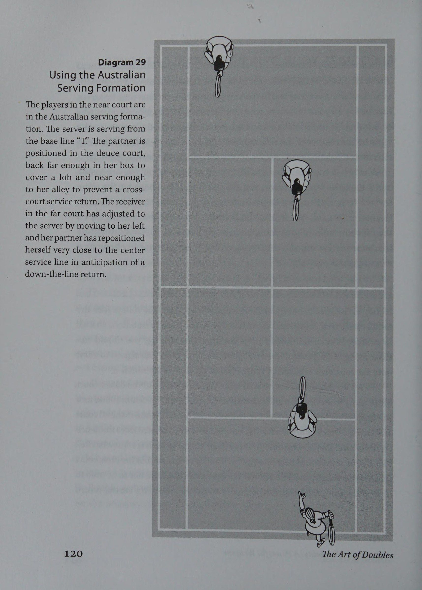
_ Các tay vợt ở sân gần nằm trong đội hình giao bóng của Australia. Người giao bóng đang giao bóng từ vạch cuối sân “T” Đối tác được bố trí ở sân hai chiều, lùi đủ xa trong ô của cô ấy để thực hiện một cú lốp bóng và đủ gần ngõ của cô ấy để ngăn cản việc trả lại quả giao bóng chéo sân. Người nhận bóng ở sân xa đã điều chỉnh theo người giao bóng bằng cách di chuyển sang bên trái của cô ấy và đối tác của cô ấy đã đặt lại vị trí của mình rất gần với đường giao bóng trung tâm để đề phòng một cú trả bóng ở đường biên. lob, như đã thảo luận ở chương sáu). Nhiều đội chỉ giao bóng ở trung tâm khi sử dụng đội hình này, nhưng đây không phải là một quy tắc khó. Bất kể bạn giao bóng ở đâu, nếu người nhận bóng chọn trả bóng từ đường biên thay vì lốp bóng, anh ta sẽ phải đối mặt với nhiệm vụ khó khăn là thay đổi hướng bóng về phía phần cao nhất của lưới, gần ngõ. Việc sử dụng đội hình của Australia thường xuyên buộc một người nhận bóng nhất quán và “chuẩn bị” mất nhịp và mắc những lỗi không đáng có vì giờ đây anh ta phải thực hiện cú trả bóng của mình theo một hướng không quen thuộc.
Diagram 29 Using the Australian Serving Formation _ The players in the near court are in the Australian serving forma- tion. The server is serving from the base line “T” The partner is positioned in the deuce court, back far enough in her box to cover a lob and near enough to her alley to prevent a cross- court service return. The receiver in the far court has adjusted to the server by moving to her left and her partner has repositioned herself very close to the center service line in anticipation of a down-the-line return. lob, as discussed in chapter six). Many teams serve only down the center when using this formation, but this is not a hard rule. No matter where you serve, if the receiver chooses a down-the-line return rather than a lob, he is faced with the difficult task of changing the direction of the ball toward the highest part of the net, near the alley. Using the Australian formation frequently forces an oth- erwise consistent and “grooved” receiver to lose his rhythm and make unforced errors because he must now play his returns in an unfamiliar direction.
Hãy nhớ luyện tập đội hình này nhiều lần trước khi sử dụng nó trong một trận đấu. Bởi vì người giao bóng vào lưới theo hướng "sai", nên có thể cảm thấy "bị dồn về phía trước". Đồng đội của người giao bóng chịu hoàn toàn trách nhiệm về cú lốp bóng chéo sân vì đường đi của người giao bóng tới lưới đưa anh ta ra khỏi góc của bóng. Hãy nhớ rằng việc sử dụng đội hình này sẽ đảo ngược công việc của bạn. Người giao bóng trở thành người kết thúc, đảm bảo đánh tất cả các quả bóng trước mặt anh ta và đối tác của người nhận bóng vẫn là người chơi chéo sân.
Be sure to practice this formation repeatedly before using it in a match. Because the server comes to the net in the “wrong” direction, it may feel “packwards. The server's partner has total responsibility for the crosscourt lob because the server's path to the net takes him away from the angle of the ball. Remember that using this formation reverses your jobs. The server becomes the terminator, making sure to play all balls in front of him, and the receiver's partner stays the crosscourt player.
Sử dụng đội hình này khi giao bóng tới sân hai hoặc ô sân Ad để ngăn người nhận giao bóng đánh các đường chéo có sức tàn phá hoặc các cú lốp trả giao bóng hoặc đơn giản là thỉnh thoảng sử dụng nó để khiến đội nhận giao bóng mất thăng bằng. Nó hoạt động hiệu quả như một chiến thuật bất ngờ trong một trận đấu giao bóng rất dài khi đội của bạn cần một điểm nhanh chóng.
Use this formation when serving either to the deuce or ad court to prevent receivers from hitting devastating crosscourts or service return lobs, or simply use it occasionally to keep the receiving team off balance. It works well as a sur- prise tactic in a very long service game when your team needs a quick point.
Đội hình chữ I
Một biến thể của đội hình Úc là đội hình “T’, trong đó đối tác của bạn ở tư thế ngồi trên đường giao bóng trung tâm (xem sơ đồ ba mươi). Với tư cách là người giao bóng, bạn giao bóng từ điểm giữa và nên giao bóng ở giữa. Đối tác của bạn đảm nhận một vị trí sẵn sàng dưới mức lưới hoặc có nguy cơ bị đánh vào đầu. Vì bạn bắt đầu điểm trong đội hình “Tôi”, nên mọi điểm đều là một tín hiệu cắt lưới cướp điểm, với hướng của nó được biểu thị bằng tín hiệu tay của đối tác mà bạn nên thừa nhận bằng lời nói. Đội hình này đánh giá cao sức chịu đựng của đối tác và cả sự tập trung của bạn, nhưng nó có thể khiến đội tiếp nhận bối rối hoặc dụ họ theo dõi hướng đi của người cắt lưới cướp điểm thay vì bảo lãnh.
THE “I” FORMATION A variation of the Australian formation is the “T’ formation, in which your part- ner positions himself astride the center service line (see diagram thirty). As the server, you serve from the center mark and should serve down the middle. Your partner assumes a ready position below the level of the net or risks getting hit in the head. Since you begin the point in “I” formation, every point is a signaled poach, with its direction indicated by your partner's hand signal, which you should acknowledge verbally. This formation taxes your partner's endurance and both of your concentrations, but it can effectively confuse the receiving team or lure them into watching the poacher’s direction rather than the bail.
Sơ đồ 30 — Sử dụng đội hình giao bóng chữ I
Đội giao bóng đã chọn sử dụng đội hình “I” vì đội thích gây nhầm lẫn cho đối phương bằng các bước di chuyển được báo hiệu của họ và vì tay vợt lưới cúi mình ở giữa sân vừa nhanh nhẹn vừa là một tay vô lê xuất sắc. Than ôi, người nhận lại là một lão già quỷ quyệt, nhiều năm kinh nghiệm. Cô ấy đã lùi hai bước so với vị trí nhận bóng thông thường của mình để có thêm thời gian trước khi phải đánh bóng. Sau khi quả giao bóng được thực hiện, người chơi lưới và người giao bóng phải bắt đầu di chuyển ngay lập tức theo hướng đã được báo hiệu của họ. Người nhận sẽ lưu ý hướng đi của người cắt lưới cướp điểm và sau đó nhắm mục tiêu quay trở lại khỏi cô ấy, hướng tới sân để được người giao bóng bảo vệ. Bằng cách này, người nhận sẽ luôn đánh bại người cắt lưới cướp điểm tiềm năng trong trò chơi đoán. Để thay đổi chiến lược của mình, người nhận thông minh này có thể chọn đánh trả ở giữa, hy vọng bắt được cả hai người chơi đang đi ngược chiều nhau ở giữa.
CHAPTER 8 - Flexibility: A Powerful Weapon Diagram 30 Using the “I” Serving Formation The serving team has chosen to use the “I” formation because the team enjoys confusing the opposition with their signaled moves and because the net player crouched in the middle of the court is both agile and an excellent volleyer. Alas, the re- ceiver is a wily old veteran with many years experience. She has taken two steps backward from her normal receiving position in order to give herself additional time before she must strike the ball. After the serve is struck, the net player and server must begin immediately to move in their signaled directions. The reciever will note the poacher’s direction and then aim his return away from her, toward the court to be covered by the server. In this manner, the reciever will al- ways beat the potential poacher at the guessing game.
PHÒNG CHỐNG ĐỘI HÌNH ÚC
To vary her strategy, this smart reciever may choose to smack a return up the middle, hoping to catch both players going in opposite directions midstride.
Nếu đội hình của Úc được sử dụng để chống lại bạn, đội tiếp nhận, đừng để điều đó làm bạn lo lắng. Nhanh chóng điều chỉnh suy nghĩ của bạn và thay đổi mục tiêu của bạn. Cho dù bạn chơi ở ô sân Deuce hay ô sân Ad, ngay khi bạn thấy người giao bóng di chuyển đến điểm trung tâm, hãy di chuyển ra xa khỏi hành lang biên của bạn một chút và về phía đường giao bóng ở giữa để bảo vệ khỏi quân át ở giữa. Đối tác của bạn nên đứng ở vị trí gần vạch giao bóng trung tâm nhất có thể, bởi vì bạn không còn có thể chọn thực hiện một cú đánh chạm đất chéo sân nữa.
DEFENDING AGAINST THE AUSTRALIAN FORMATION If the Australian formation is used against you, the receiving team, do not let it rattle you. Quickly adjust your thinking and change your targets. Whether you play the deuce court or the ad court, as soon as you see the server move to the center mark, shift slightly away from your alley and to- ward the center service line to protect against the down-the-middle ace. Your partner should station himself as near the center service line as he dares, because you can no longer choose to hit a crosscourt groundstroke.
Với tư cách là người nhận, bạn chỉ có hai lựa chọn:
As receiver, you have only two options
1. Một cú chạm đất hoặc sứt mẻ trả bóng xuống đường làm thay đổi hướng của quả bóng và khiến bạn trở thành người kết thúc.
1. A groundstroke or chipped return down the line that changes the direc- tion of the ball and makes you the terminator.
2. Astinging quay trở lại giữa sân. Đội hình nào cũng có điểm yếu, và tuyến giữa chính là điểm yếu của Australia. Không có lựa chọn nào khác vì đối tác của người giao bóng đã che chắn cú lốp bóng chéo sân. Cố gắng phát minh ra một thứ là liều lĩnh một cách liều lĩnh (xem sơ đồ 31). Nếu bạn chọn đi xuống vạch khi trả bóng, hãy đánh bóng thật sớm để có thời gian cầm vợt và thay đổi hướng của bóng.
2. Astinging return up the middle of the court. Every formation has a weakness, and the middle is the weak point in the Australian. There are no other options because the server's partner has the crosscourt lob covered. Trying to invent one is recklessly foolhardy (see dia- gram thirty-one). If you choose to go down the line with your return, play the ball very early to allow the time you need to get your racquet around and change the direction of the ball.
Tiền giao bóng của bạn sẽ không bị ảnh hưởng nếu bạn tuân theo hai lựa chọn quần vợt có tỷ lệ phần trăm cao được mô tả ở trên. Hãy chống lại sự cám dỗ trở thành anh hùng và khiến đối thủ phải trả giá vì đã làm điều này với bạn.
Your service return will not suffer if you stick to the two high-percentage tennis options described above. Resist the temptation to be a hero and make your opponents pay for doing this to you.
Phòng thủ trước đội hình chữ I
Nếu đội hình “I” được sử dụng để chống lại bạn, đừng hoảng sợ. Lùi lại vài bước so với vị trí tiếp nhận thông thường của bạn để dành cho bản thân thêm một chút thời gian. Một vài giây thêm đó sẽ cho phép bạn nhìn thấy mặt sân và chuyển động của đối thủ, đặc biệt là chuyển động của đối thủ đang cắt lưới cướp điểm lưới, người mà do bạn đã điều chỉnh vị trí nên bây giờ phải di chuyển trước khi bạn đánh bóng nếu anh ta muốn che phủ sân một cách đầy đủ (xem sơ đồ ba mươi). Một khi bạn lưu ý hướng cắt lưới cướp điểm, bạn
DEFENDING AGAINST THE “I” FORMATION If the “I” formation is used against you, don't panic. Take a few steps back from your normal receiving position to give yourself a little more time. Those extra few seconds will let you see the court and your opponents’ movements, especially those of a poaching net opponent who, because of your position adjustment, must now move before you hit the ball if he is to cover the court adequately (see diagram thirty). Once you note the poaching direction, you CHAPTER 8 - Flexibility: A Powerful Weapon
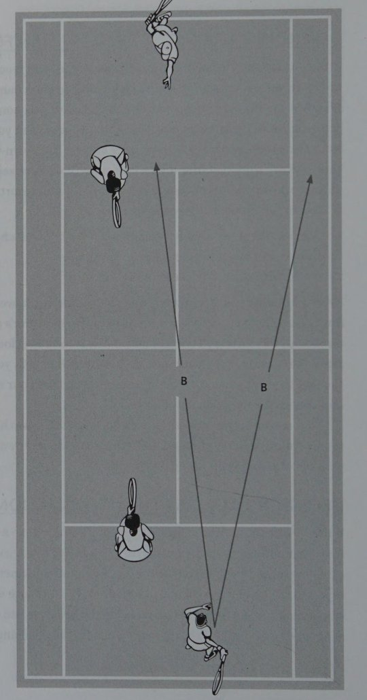
Khi nhận bóng trước đội hình Australia, hãy quay trở lại bằng chip hoặc ổ ở tuyến dưới hoặc ổ ở giữa. Không có lựa chọn nào khác tồn tại. Chống lại sự cám dỗ để phát minh ra một. có thể trả bóng trở lại người giao bóng một cách an toàn, theo đường chéo sân hoặc dọc đường biên, biết rằng bóng sẽ không bị đấu thủ trên lưới chạm vào. Một pha trả bóng mạnh ở trung lộ thường có hiệu quả đối với đội hình “I” vì đối thủ của bạn hiện đang đi theo các hướng khác nhau và bóng có thể rơi thẳng vào giữa họ. Đối tác của bạn không nên tập trung vào trung tâm chống lại sự liên kết này như anh ta sẽ làm với người Úc, nếu không anh ta sẽ chặn đường chéo tiềm năng của bạn. Trên hết, cũng như với người Úc, đừng để đội hình khác biệt này làm bạn bối rối hoặc mất tập trung. Hãy nhớ rằng, công việc của bạn là đưa bóng vào cuộc và sử dụng một cú lốp bóng cao và sâu không bao giờ là một ý tưởng tồi.
Diagram 31 Defending Against the Australian Formation When receiving against the Aus- tralian formation, return either with a down-the-line chip or drive or a down-the-middle drive. No other options exist. Resist the temptation to invent one. can safely return the ball back to the server, either crosscourt or down the line, knowing that the ball will be unmolested by the net player. A return played sharply up the middle is often effective against the “I” formation because your opponents are now going in different directions, and the ball might land untouched between them. Your partner should not crowd the center against this alignment as he would against the Australian or he will block your potential crosscourt. Above all, as with the Australian, don't al- low this different formation to confuse or distract you. Remember, your job is to get the ball into play, and using a high, deep lob is never a bad idea.
Cách chống lại cú giao bóng quái vật
Nếu một trong các đối thủ của bạn sở hữu một cú giao bóng quái vật khiến cả hai đội của bạn đều mệt mỏi trong suốt trận đấu và bạn nhận ra rằng mình phải bẻ giao bóng này để duy trì tính cạnh tranh, hãy thử bắt đầu mỗi điểm của trận đấu với cả hai bạn ở vị trí sân phòng thủ (xem sơ đồ ba mươi hai). Điều này thực hiện một số điều. Đầu tiên, nó giúp bạn có nhiều thời gian hơn để trả giao bóng vì bạn sẽ chơi từ một vị trí cố định nằm ngoài vạch cuối sân, giống như thể bạn đang chơi đánh đơn. (Thông thường, trong các trận đánh đôi, bạn sẽ sử dụng một cú trả giao bóng làm một cú đánh tiếp cận.) Đừng lo lắng rằng một cú trả giao bóng sai lầm có thể trôi quá gần người lưới; vị trí của đối tác của bạn phía sau vạch cuối sân sẽ loại bỏ hiệu quả sự cắt lưới cướp điểm của đối thủ. Ngoài ra, nhịp điệu của người giao bóng đối phương có thể bị lệch chỉ vì phần sân bên kia lưới đột nhiên trông quá khác đối với anh ta. Các mục tiêu thông thường của anh ấy đã biến mất, và nếu bạn có thể thực hiện cú giao bóng đó, anh ấy có thể mất hết cảm giác về vị trí đặt cú vô lê đầu tiên của mình. Hãy cẩn thận về vị trí sân của bạn và đủ kiên nhẫn để tiếp cận lưới với quả bóng thích hợp (xem chương ba về vị trí sân).
HOW TO DEFEND AGAINST A MONSTER SERVE If one of your opponents owns a monster serve that has given both your team fits throughout the match, and you realize that you must break this serve to stay competitive, try beginning each point of the game with both of you in the defensive court position (see diagram thirty-two). This does several things. First, it gives you more time to return serve because you will play from a stationary position well outside the baseline, as if you were play- ing singles. (Normally, in doubles you would use a service return as an ap- proach shot.) Don't worry that an errant return could drift too close to the net man; your partner's position behind the baseline effectively eliminates the opponent's poach. Additionally, the opposing server's rhythm may be thrown off just because the court across the net suddenly looks so differ- ent to him. His usual targets are gone, and if you can just get that serve into play, he may lose all sense of where to place his first volley. Be careful about your court position, and be patient enough to approach the net on the proper ball (see chapter three on court position).
Bạn cũng có thể sử dụng đội hình này làm đội giao bóng, nhưng tôi không khuyến khích sử dụng nó, vì điều này sẽ làm mất đi lợi thế mà đội của bạn có được khi bắt đầu điểm. Bất cứ khi nào đội của bạn giao bóng, bạn sẽ kiểm soát cách thức điểm bắt đầu và bạn thực hiện điều đó với áp lực mà đối tác của người giao bóng đặt lên người nhận. A
You may also use this formation as a serving team, but I don’t recommendit, because this relinquishes the advantage your team enjoys by starting the point. Anytime your team serves, you control the manner in which the point starts, and you do that with the pressure the server's partner puts on the receiver. A CHAPTER 8 : Flexibility: A Powerful Weapon
Sơ đồ 32 — Trả giao bóng từ vị trí phòng thủ
Hãy cân nhắc việc nhận giao bóng từ vị trí sân phòng thủ. Nó mang lại cho bạn cơ hội mất nhiều thời gian hơn khi trả bóng, loại bỏ nỗi lo về việc bị cắt lưới cướp điểm và có thể khiến đối thủ của bạn rất tức giận vì nó cho họ biết rằng các điểm dài hơn nhiều chứa một số lượng đáng kể các cú lốp bóng sắp xảy ra. cắt lưới cướp điểm luôn là một mối đe dọa. Các đội đánh đôi giỏi duy trì thế trận tấn công khi giao bóng và với tư cách là đội nhận giao bóng, sẽ sử dụng biện pháp phòng thủ khi cần thiết.
Diagram 32 Returning Serve From the Defensive Court Position Consider receiving serve from the defensive court position. It gives you the opportunity to take more time with the return, eliminates the worry of a poach, and may make your opponents very angry because it indicates to them that much longer points containing a significant number of lobs are on the horizon. poach is always a threat. Good doubles teams maintain the aggressive posture when serving and, as the receiving team, resort to defense when necessary.
Chiến thuật hiệu quả trước đối thủ bất khả xâm phạm
Nếu vấn đề không phải là cú giao bóng lớn của đối thủ, mà chỉ đơn giản là bạn không thể chọc thủng lớp áo giáp không thể xuyên thủng của một đội tốt, thì việc bố trí vị trí phòng thủ trên sân cũng có thể có hiệu quả tương đương. Vài năm trước, tôi và đối tác đang chơi một trận đấu quan trọng với một đội mạnh có khả năng ở mức trung bình hoặc xuất sắc. Thật không may cho chúng tôi, chúng tôi đã gặp họ vào một ngày rực rỡ. Chúng tôi thua set đầu tiên với tỷ số 6-o trong khoảng 10 giây, không phải vì chúng tôi mắc lỗi mà vì họ đánh hết người thắng này đến người thắng khác từ những vị trí không thể tin được trên sân, tạo ra những góc độ mà tôi nghĩ đơn giản không phải là những lựa chọn. Với tỷ số 0-6, chúng tôi, với tư cách là đội nhận giao bóng, quyết định bắt đầu hiệp đấu từ vị trí phòng thủ của mình và làm như vậy mỗi khi họ giao bóng. Điều này, trước sự ngạc nhiên và vui mừng của chúng tôi, đã khiến họ khó chịu và tức giận nên chúng tôi đã thắng trận với tỷ số 0-6,6-1,6- 0. Hầu hết các pha đảo ngược không quá kịch tính, nhưng việc sử dụng khả năng phòng thủ tốt có thể đẩy bạn trở lại một trận đấu mà lẽ ra sẽ trôi đi.
AN EFFECTIVE TACTIC AGAINST IMPENETRABLE OPPONENTS If the problem is not an opponent's big serve, but simply your inability to make a dent in a good team’s otherwise impenetrable armor, the defensive court po- sition formation can be equally effective. Several years ago, my partner and I were playing an important match against a fine team that was capable of be- ing either average or brilliant. Unfortunately for us, we met them on a brilliant day. We lost the first set 6-o in what seemed like ten seconds, not because we were making errors, but because they hit winner after winner from impossible _ places on the court, creating angles that I would have thought were simply not options. At 0-6, we, as the receiving team, decided to begin the set from our defensive court position and did so every time they served. This, to our sur- prise and delight, upset and enraged them so that we won the match 0-6,6-1,6- 0. Most reversals are not that dramatic, but using good defense can boost you back into a match that would otherwise slip away.
Linh hoạt trước các “nữ hoàng lốp bóng”
Nếu trận đấu đang tuột khỏi tầm tay bạn vì bạn bị lốp bóng chết, có lẽ bạn không thể làm được gì nhiều ngoài việc cố gắng và kiên nhẫn. Vì vậy, thường trong tình huống này, một hoặc cả hai người chơi trong một đội sẽ nhượng bộ. "Tôi không làm việc này nữa. Đây không phải là quần vợt. Nó không công bằng. Nếu họ muốn nó đến mức họ có thể có nó. Tôi sẽ đi chơi gôn" Sau đó, chi phí chung của bạn bắt đầu chạm tới hàng rào phía sau. Cách thoát khỏi tình thế tiến thoái lưỡng nan khó chịu này là thư giãn và đánh giá cao chiến lược của đối thủ. Hãy coi đó như một lời khen. Họ chắc chắn nhận ra rằng bạn cú đánh xuyên qua quá tốt để họ có thể vượt qua bạn, và vì vậy họ phải thử thách sự kiên nhẫn và sức bền của bạn bằng cách đánh từng quả bóng lên cao 20 feet. Không ai thích phải vật lộn với các nữ hoàng lốp bóng, nhưng bạn có thể thắng thế nếu linh hoạt. Hãy bám sát kế hoạch của bạn và tránh đánh bóng vào khoảng thời gian của chúng. Thừa nhận rằng mọi chuyện sẽ không kết thúc nhanh chóng, rằng bạn sẽ đánh trúng nhiều góc cạnh, bóng sẽ quay trở lại thường xuyên và đây không phải là lúc để nổi cơn thịnh nộ. Bạn có thể thắng trận đấu với tỷ số 6-2, 6-2, nhưng có thể mất hơn hai giờ. Sự hài lòng xứng đáng với nỗ lực.
FLEXIBILITY IN THE FACE OF LOB QUEENS If a match is sliding away from you because you are being lobbed to death, there probably isn’t a lot you can do except dig in and be patient. So of- ten in this situation, one or both players on a team will give in. “I’m not doing this anymore. This isn’t tennis. It isn’t fair. If they want it that badly, they can have it. I’ll go play golf” Then your overheads begin to hit the back fence. The way out of this frustrating dilemma is to relax and appreciate your opponents’ strategy. Take it as a compliment. They certainly realize that you volley too well for them to pass you, and so they resort to trying your patience and endurance by hitting every ball twenty feet into the air. No one enjoys having to wrestle with the lob queens, but you can prevail if CHAPTER 8 - Flexibility: A Powerful Weapon you can be flexible. Stick with your plan and avoid hitting balls into their timing space. Acknowledge that it will not be over quickly, that you will hit many angled overheads, that the ball will come back often, and that this is no time for a temper tantrum.
CUỐI CÙNG HÃY LÀ NGƯỜI THẤT BẠI TUYỆT VỜI, Nếu bạn đã thử chơi người Úc, sử dụng thế trận phòng thủ, cố gắng trở nên ít dự đoán hơn, đa dạng hóa các cú giao bóng, loại bỏ các lỗi không đáng có và bạn vẫn không thể thắng, thì hãy hài lòng với một công việc được thực hiện tốt. Đừng trở thành nạn nhân của sự ngạo mạn, đổ lỗi thất bại cho sự kém may mắn. Nếu bạn đã thử mọi cách mà không hiệu quả, có thể đối thủ của bạn giỏi hơn bạn. Có thể họ đã chơi vượt quá tiềm năng của mình, trong “khu vực? Ngày hôm đó. Nếu vậy, hãy học hỏi từ màn trình diễn của họ và có duyên để nói, “Bạn đã chơi tuyệt vời; không phải "Chúng tôi đã chơi tệ. Một đội đánh đôi giỏi thực sự có thể khiến bạn chơi tệ nếu khả năng làm chủ trò chơi của họ vượt quá khả năng của bạn. Sẽ là điều khôn ngoan nếu bạn có được khả năng đánh giá cao tính nghệ thuật.
You may win the match 6-2, 6-2, but it may take more than two hours. The satisfaction is worth the effort. IN THE END, BE A GRACIOUS LOSER If you've tried the Australian, used the defensive court position, tried to become less predictable, varied your serves, eliminated your unforced errors, and you still cannot prevail, then be satisfied with a job well done. Dont fall victim to hu- bris, blaming a loss on bad luck. If you've tried everything, and nothing worked, maybe your opponents are better than you are. Maybe they played over their potential, in the “zone? that day. If so, learn from their performance and have the grace to say, “You played great; not “We played badly. A great doubles team can actually make you play badly if their mastery of the game exceeds yours.
Hãy tự hỏi bản thân, với tư cách là một đội, liệu tỷ số không thuận lợi là do lỗi của chính bạn, lối chơi vượt trội của đối thủ hay do thay đổi thế trận thắng. Câu trả lời sẽ giúp bạn lựa chọn chiến lược phù hợp để đảo ngược đà tăng.
It is wise to acquire the capacity to appreciate the artistry. Flexibility Checklist L] Ask yourselves, as a team, whether an unfavorable score is due to your own errors, your opponents’ superior play, or changing a winning game.
Hãy cẩn thận để không trở nên quá dễ đoán.
The answer will help you choose the proper strategy to reverse the momentum.
: C1 Bí quyết sử dụng hoặc phòng thủ trước đội hình Australia và đội hình “I”.: (1 Đừng bao giờ ngại đưa ra một biện pháp phòng thủ tốt trước một hành vi tấn công cấp trên.
LC] Be careful not to become too predictable. : C1 Knowhow to use or defend against Australian and “I” formations. : (1 Never be afraid to offer a good defense to a superior offense.
LJ Sử dụng các thay đổi chiến lược để giúp bạn thắng các trận đấu chứ không chỉ để ngăn bạn thua chúng. tel Nếu bạn đã thử mọi cách mà vẫn thua thì đó có thể là một
LJ tel Use strategy changes to help you win matches, not just to prevent you from losing them. If you tried everything and you still lost, it should be a peaceful defeat. © 8 we 0.8\0 4.0:0)0.6)/0/0) 0:0: Wyeheim C/@/m\ Wile 6 W/6)8. & We HOLe H 9/0, 05410) 8 6/6:0.0 9 Oleh el 0 b.@4L 01d bi 6 616 Wid bib Iie thi b ki G Riqunle wb eG iEiure hoe Wie: 6iG-Mi slate Metal wine soa a aoeretaie le Riare SOP e meme memes ener eee eee eeereeeeaeeeeeeeeneesanee
Chương 9. Làm Chủ Những Yếu Tố Vô Hình
Gaining Command of the Intangibles
‘Ông. Kikady, làm thế nào để bạn duy trì sự tập trung, thoải mái và duy trì độ chính xác dưới áp lực phải chơi hàng trăm nghìn đô la?”
Gaining Command of the Intangibles ‘Mr. Kikady, how do you maintain your concen tration, stay re- laxed and maintain accuracy under the pressure of playing for hundreds of thousands of dollars?” ‘I do not know, but! think, it is not by strength but by art.
Sandy Dunlop, Người chơi gôn
Sandy Dunlop, The Golfing Bodymind Great doubles teams make a series of complicated actions look deceptively easy and graceful.
Các đội đánh đôi xuất sắc thực hiện một loạt hành động phức tạp trông có vẻ dễ dàng và duyên dáng. Denise McCluggage, viết trên tờ The Centered Skier, nói, "Grace là một từ ấm áp hơn để chỉ tính hiệu quả. Bốn thế kỷ trước, nhà ngoại giao người Ý Baldassare Castiglione đã giới thiệu từ sprezzatura trong The Book of the Courtier. Tiếng Anh không có một từ nào có thể truyền tải tất cả ý nghĩa của thuật ngữ tiếng Ý này. Nó đề cập đến sự tự nhiên nhất định, sự duyên dáng trong chuyển động, thậm chí là một kiểu hành xử tự nhiên, thoải mái mà, trong khi tạo ấn tượng về sự hoàn toàn không nỗ lực, thực sự có được thông qua sự tẻ nhạt. Castiglione nói thêm về những người sở hữu sprezzatura: Vì nó in sâu vào tâm trí khán giả quan niệm rằng một người dễ dàng nhảy giỏi sẽ biết cách làm nhiều hơn những gì mình đang làm, và nếu anh ta dành thời gian nghiên cứu và lao động cho những gì mình đang làm thì anh ta có thể làm tốt hơn nhiều... Tương tự như vậy, khi nhảy một bước, một chuyển động đơn độc duyên dáng và dễ dàng của cơ thể sẽ nhanh chóng bộc lộ sự thành thạo của vũ công.
Denise McCluggage, writing in The Centered Skier, says, “Grace is a warmer word for efficiency. Four centuries ago, the Italian diplo- mat Baldassare Castiglione introduced the word sprezzatura in The Book of the Courtier. The English language does not possess a word that conveys all that is meant by this Italian term. It refers to a certain casualness, a grace of movement, even a kind of natural, offhanded manner which, while giv- ing the impression of absolute effortlessness, is actually acquired through tedious hours of practice and strict discipline. Castiglione says further of those who possess sprezzatura: For it implants in the minds of the spectators the notion that one who so eas- ily does well knows how to do much more than what he is doing, and if he expended study and labor on what he is doing he could do it much better ... Likewise, in dancing a single step, a solitary graceful and effortless movement of the body quickly reveals the proficiency of the dancer. When you watch great doubles teammates perform their jobs correctly, you marvel at the ease with which a perfectly placed service return is ex- ecuted off a very difficult serve.
Khi bạn xem các đồng đội đánh đôi xuất sắc thực hiện công việc của họ một cách chính xác, bạn sẽ ngạc nhiên trước sự dễ dàng mà một quả giao bóng được đặt hoàn hảo được thực hiện sau một cú giao bóng rất khó. Bạn nhìn chằm chằm đầy ngưỡng mộ khi đối tác của người nhận băng qua trước mặt đồng đội của anh ta vào đúng thời điểm để kết thúc trận đấu với hành vi cắt lưới cướp điểm của anh ta. Kỹ năng này không chỉ dễ dàng được thể hiện qua hành động của người chơi mà còn có cảm giác rằng có những khả năng dự trữ chưa được thể hiện. Không có gì có vẻ khó khăn hoặc khó xử. Bạn càng luyện tập chăm chỉ và luyện tập càng nhiều thì bạn càng dễ dàng bước ra sân với một bầu không khí tự tin thầm lặng, điều này sẽ ngay lập tức khiến đối thủ của bạn thấy rõ và gây ra nỗi kinh hoàng trong tâm hồn mỏng manh của họ. Quan trọng hơn, điều này sẽ giúp kiểm soát vợt và lựa chọn cú đánh tốt hơn.
You stare in admiration as the receivers partner crosses in front of his teammate at precisely the right moment to end the point with his poach. Not only is the skill readily apparent from the actions of the players, but the sense that there are reserves of ability, as yet undisplayed, is also present. Nothing looks difficult or awkward. The harder you train and the more you practice, the easier it is to walk on the court with an air of quiet self-confidence that will be immediately obvious to your opponents and strike terror in their fragile psyches. More importantly, this should translate into better racquet control and shot selection. If we consider for a moment the opposite of sprezzatura—a pair who over-hit their shots, swing at their volleys, go for too much too soon in the point, and neglect touch shots—a picture of a tense and awkward team emerges.
Nếu chúng ta xem xét một chút điều ngược lại của sprezzatura—một cặp đánh quá nhiều cú đánh của họ, xoay người thực hiện cú vô lê của họ, lao vào điểm quá sớm và bỏ qua những cú chạm bóng—hình ảnh về một đội căng thẳng và khó xử hiện ra. Bất chấp tỷ số ra sao, đối thủ của đội bóng này tin rằng họ không bao giờ bị loại bởi khả năng nổ tung và tự hủy luôn là điều có thể xảy ra. Castiglione nói:.. và mặt khác, căng thẳng và, như người ta nói, "kéo tóc'... gây ra sự lúng túng lớn nhất và khiến mọi thứ, dù... quan trọng đến đâu, bị đánh giá thấp. Do đó, điều quan trọng cần nhớ là một cú vô lê "chạm" khéo léo không chỉ giúp giành được điểm. Nó gửi thông điệp rằng bạn hoàn toàn kiểm soát được kỹ năng, lựa chọn cú đánh của mình và trận đấu. Đừng bao giờ hét lên khi một tiếng thì thầm là đủ. Bất kể tỷ số thế nào, đối thủ của bạn sẽ bắt đầu cảm thấy chán nản và không thể đương đầu với mức độ dự trữ của bạn.
Regardless of the score, this team’s opponents believe they are never out of the match because implosion and self-destruction are always a distinct possibility. Castiglione says: .. and on the other hand, to strain and, as they say, “to drag by the hair’ ... imparts the greatest awkwardness and causes everything, no matter how ... important, to be held in low esteem. Therefore, it is important to remember that a deft “touch” volley does more than just win the point. It sends the message that you are in absolute con- trol of your skills, your shot selection, and the match. Never shout when a whisper is enough. Regardless of the score, your opponents will begin to feel despondent and unable to cope with the depth of your reserves. As the match progresses and you begin to choose wisely from among the array of shots available to you, you create the impression that what your opponents are witnessing is just the bare beginning of all the possible ways you have to beat them.
Khi trận đấu diễn ra và bạn bắt đầu lựa chọn một cách khôn ngoan trong số hàng loạt cú đánh có sẵn cho mình, bạn sẽ tạo ấn tượng rằng những gì đối thủ của bạn đang chứng kiến chỉ là bước khởi đầu cho tất cả những cách khả thi mà bạn có để đánh bại họ. Khi một diva opera chạm vào “E” trên “C” cao một cách dễ dàng, bạn sẽ kinh ngạc trước những gì cô ấy rõ ràng sở hữu mà bạn chưa thấy. Điểm quan trọng ở đây là cô ấy không bao giờ cần phải nhấn nốt cao hơn đó. Bạn chỉ cần tưởng tượng rằng cô ấy có thể. Khi bạn chọn thực hiện một cú đánh nhẹ thay vì đánh quá mạnh cú thuận tay lớn đó, đối thủ của bạn sẽ âm thầm hét lên, “Tiếp theo là gì? Tiếp theo là gì?” Và tại thời điểm đó, cuộc chiến tinh thần kết thúc. Bạn có thể có hoặc không có một cú đánh đẹp hơn cú đánh đó, nhưng bạn sẽ không cần nó.
When an operatic diva hits “E” above high “C” with ease, you are aghast at what reserves she obviously possesses that you haven't yet seen. The important point here is that she never need hit that higher note. You just imagine that she could. When you choose to play a soft dropshot rather than over-hit that big forehand, your opponents are silently screaming, “What next? What next? And at that point, the mental war is over.
Câu nói sáo rỗng “đừng làm nhiều hơn những gì bạn cần” có giá trị. Có những lúc 4 6 điều quan trọng là phải đánh bóng mạnh nhất có thể một cách an toàn. Nhưng có những lúc bạn chỉ cần làm rất ít để giành được điểm—một góc mềm—và sau đó nhanh chóng quay lưng vào lưới và bỏ đi sẽ gây ấn tượng cực kỳ nghiêm trọng cho đối thủ của bạn. Bạn đang thầm nói với họ rằng: "Việc này dễ thôi. Tôi có sẵn rất nhiều vũ khí nên tôi chỉ cần chọn cái nhỏ nhất là có thể hoàn thành công việc".
You may or may not own a better shot than that one, but you won't need it. 4 6 The old cliché “don't do more than you need to’ has merit. There are times when it is important to hit the ball as hard as you can safely hit it. But there are times when doing as little as you must to win the point—a soft angle—and then quickly turning your back to the net and walking away makes an abso- lutely devastating impression on your opponents. You are silently saying to them, “This is easy.
Không phải lúc nào cũng dễ dàng duy trì sự duyên dáng và điềm tĩnh này trong một trận đấu rất căng thẳng, nhưng người thực hành sprezzatura thực sự sẽ không bao giờ tỏ ra lo lắng. Anh ta sẽ làm việc chăm chỉ với sự tự tin tột độ vào kỹ năng của mình ngay cả trong một ngày tồi tệ, và bản thân điều đó đã là một kiểu chiến thắng.
I have so many weapons available that I need only pick the smallest one that will get the job done’ It isn’t always easy to maintain this kind of grace and composure in a very tight match, but the true practitioner of sprezzatura will never seem unnerved. He will toil with ultimate confidence in his skills even on a bad day, and that, in itself, is very much a kind of victory.
Đúng là tổng thể chắc chắn lớn hơn tổng các phần của nó, và khi phân tích các đội đôi xuất sắc, một số “cái vô hình” nhất định đều chung cho tất cả họ.
It is true that the whole is most definitely greater that the sum of its parts, and when analyzing great doubles teams, certain “intangibles” are common to all of them.
Thời gian: không bao giờ thấy đủ
Một trong những lời phàn nàn thường xuyên nhất mà tôi nghe được từ các ngôi sao đánh đôi đầy tham vọng là đơn giản là không có đủ thời gian để thực hiện một cú đánh chính xác và chính xác. Vì vậy, lỗi thường gặp nhất của họ là vội vàng trong từng động tác, từng cú đánh, từng đường bóng đánh trúng. Không có gì lạ khi những người chơi thiếu kinh nghiệm giao bóng, lao về phía lưới nhanh nhất có thể và vung bóng điên cuồng ở đâu đó dọc theo đường đi trong cuộc chạy nước rút điên cuồng hướng tới thảm họa hoàn toàn này. Chúng được đẩy đi với tốc độ phi nước đại hoàn toàn bởi niềm tin tuyệt đối rằng tất cả các quả bóng đều di chuyển với tốc độ vượt quá 200 dặm một giờ.
TIME: THERE NEVER SEEMS TO BE ENOUGH One of the most frequent complaints I hear from aspiring doubles stars is that there simply isn't enough time to hit a shot correctly and accurately. Therefore, their most frequent error is that they rush every movement, ev- ery stroke, every ball they hit. It is not uncommon for inexperienced players to serve, race toward the net as fast as they can, and swing wildly at the ball somewhere along the route in this frantic sprint toward total disaster. They are propelled at full gallop by the absolute conviction that all balls travel at speeds in excess of 200 miles per hour.
Ngược lại, những tay vợt vĩ đại dường như luôn chuyển động chậm, không bao giờ vội vã, không bao giờ vội vàng, không bao giờ bối rối, vì hai lý do rất chính đáng. « Lý do 1: Để trở thành người làm chủ thời gian, bạn phải phát triển kỹ năng xem bóng phù hợp, nhưng việc bạn phải luôn xem bóng là không đúng
By contrast, great players always seem to be in slow motion, never rushed, never hurried, never flustered, for two very good reasons. « Reason 1: To become a master of time, you must develop proper ball- watching skills, but it is simply not true that you should always watch the ball.
Những người chơi đánh đôi kém sẽ quay lại và quan sát đối tác của họ đánh bóng, hy vọng rằng điều này sẽ cung cấp một số manh mối về điều gì có thể xảy ra tiếp theo. Mặc dù những người chơi trung bình biết rõ hơn thế nhưng họ sẽ tập trung vào quả bóng khi nó đi qua lưới và hướng về phía đối phương để nhận biết hướng của nó. Ngoài ra, cả những người chơi kém và trung bình đều quan sát quả bóng rời khỏi dây của mình và theo dõi nó bằng mắt cho đến khi nó chạm lưới và thường lâu hơn. Mặt khác, những người chơi có kỹ năng cao hiểu rằng bạn phải luôn theo dõi quả bóng khi nó đang tiến về phía bạn, nhưng đừng bao giờ quan sát quả bóng khi nó đang rời xa bạn.
Poor doubles players will turn around and watch their partners hit the ball, hoping that this will provide some clue to what might happen next. Although average players know better than that, they will focus on the ball as it crosses the net going toward the opponents to perceive its direction. In addition, both poor and average players watch the ball come off their own strings and follow it with their eyes until it lands across the net, and often longer. Highly skilled players, on the other hand, understand that you must always track the ball as it is coming toward you, but never watch the ball as it is going away from you.
Hãy tưởng tượng bạn là người chơi đang đánh bóng. Bạn biết nơi bạn định đánh bóng, vì vậy bạn biết trước đối thủ nào sẽ đánh bóng tiếp theo. Thời điểm quả bóng rời khỏi dây của bạn, mắt bạn phải di chuyển đến cây vợt của người chơi đó, không bao giờ dừng lại ngay lập tức để theo dõi đường bay của cú đánh. Nhận ra rằng bóng và vợt của đối thủ sẽ kết thúc ở cùng một vị trí vào cùng một thời điểm.
Imagine you are the player striking the ball. You know where you intend to hit it, so you know beforehand which opponent will strike the ball next. The moment the ball leaves your strings, your eyes should move to that player's racquet, never pausing for an instant to follow the flight of your shot. Realize that the ball and your opponent's racquet are going to end up in the same place at the same time.
Nếu đối tác của bạn là người chơi chéo sân và anh ta là người đánh bóng, bạn có thể mong đợi quả bóng sẽ xuất hiện trước mặt bạn một cách hợp lý, bởi vì đó là công việc của anh ta. Tuy nhiên, bạn phải cảnh giác trong trường hợp anh ta mắc lỗi về phương hướng. Nếu đối tác của bạn là người kết thúc, bạn mong đợi quả bóng của anh ta sẽ được đánh từ ngắn đến ngắn, nhưng anh ta có thể đánh sai cú đánh của mình. Hãy kỷ luật bản thân để có, theo cách diễn đạt bóng đá của John Madden, "mắt của hậu vệ". Điều này có nghĩa là khi bóng đang ở trên dây của đối tác, ngay cả khi bạn nghĩ rằng bạn biết quả bóng đang hướng đến đâu, mắt bạn phải đảo từ đối thủ này sang đối thủ khác và quay lại cho đến khi bạn nhìn thấy một trong những cây vợt của họ bắt đầu chuẩn bị. Tay vợt đó trở thành đối thủ của bạn và bạn phải đọc và phản ứng với cây vợt của anh ta.
If your partner is the crosscourt player and he is the one striking the ball, you may reasonably expect the ball to appear in front of you, because that is his job. Yet you must be alert in case he makes an error in direction. If your partner is the terminator, you expect his ball to be played short to short, but he might misplay his shot. Discipline yourself to have, to use John Madden's football expression, “linebacker eyes. This means that while the ball is on your partner's strings, even though you think you know where the ball is headed, your eyes should be darting from opponent to opponent and back until you see one of their racquets begin its preparation. That player becomes your opponent, and it is his racquet that you must read and react to.
Kỹ năng quan sát bóng đúng cách sẽ cho phép bạn thực hiện cú vô lê của mình thay vì phản ứng với quả bóng ở giây cuối cùng. Kiểm soát mắt tốt sẽ cho bạn thêm ít nhất hai đến ba giây nữa để biết bạn phải làm gì để chuẩn bị đúng cách cho cú đánh của mình và sẽ giúp bạn nhận ra rằng bạn không cần phải vội vã thực hiện tất cả các cú đánh của mình. Một lần nữa, chỉ quan sát quả bóng khi nó đang tiến về phía bạn - không bao giờ quan sát khi nó đang di chuyển ra xa bạn. e Lý do 2: Những người chơi có kỹ năng cao tự tin dành thời gian cần thiết để thực hiện cú đánh đúng cách. Hoàn toàn không có sự thay thế nào cho việc chuẩn bị sớm, nhưng, như tôi không ngừng cố gắng thuyết phục học sinh của mình, luôn có nhiều thời gian hơn bạn nghĩ. Bí quyết là hãy kỷ luật bản thân để hiểu được nhịp điệu tự nhiên của một cú đánh - nhịp chuyển trọng lượng tự do và vung vợt - để biết lượng thời gian cần thiết để thực hiện nó một cách trôi chảy và có sự tự tin rằng có đủ thời gian cần thiết để thực hiện cú đánh. Trong The Sweet Spot in Time, John Jerome nói: Hầu hết các lỗi trong sân xảy ra do người điều khiển bắt đầu lối chơi trước khi bắt được bóng. Tất nhiên, đây là câu nói sáo rỗng mệt mỏi nhất trong thể thao—“Hãy nhìn quả bóng vào tay bạn,” thậm chí là “Hãy để mắt đến quả bóng”—nhưng nó làm sáng tỏ thêm một chút lãnh thổ khi nó được hiểu theo nghĩa thời gian có sẵn. Người thực hiện tốt chỉ cần dành toàn bộ thời gian cho bước đi cụ thể. Các đội đánh đôi xuất sắc bao gồm những người chơi không nhìn nhau đánh bóng mà thay vào đó tập trung vào vợt của đối thủ. Họ sẽ tìm cách, ngay cả trong những cuộc trao đổi sôi nổi nhất trên lưới, để tận dụng từng giây có sẵn để thực hiện một cú đánh có kiểm soát và chính xác. Vấn đề thời gian là một vấn đề rất quan trọng trong quần vợt. Nếu bạn có đủ nó, nó sẽ là đồng minh lớn nhất của đội bạn, và nếu bạn cho đối thủ quá nhiều, họ sẽ luôn tìm cách tách bạn ra.
132. Proper ball-watching skills will allow you to act on your volleys instead of reacting to the ball at the last second. Good eye control will give you at least two to three more seconds to see what you must do to prepare properly to play your shot and will help you to realize that you need not rush all of your strokes. Again, only watch the ball when it is coming toward you—never when it is traveling away from you. e Reason 2: Highly skilled players have the confidence to take the time they need to execute the shot properly. There is absolutely no substitute for early preparation, but, as I endlessly try to convince my students, there is always more time than you think. The trick is to discipline your- self to understand the natural rhythm of a stroke—the cadence of a free- flowing weight transfer and swing of the racquet—to know the amount of time necessary to execute it smoothly, and to have the confidence that the required amount of time exists for the taking. In The Sweet Spot in Time, John Jerome says: Most infield errors occur because the fielder starts his play before he catches the ball. This is the tiredest cliché in sports, of course—“Look the ball into your hands,” even “Keep your eye on the ball’—but it illuminates a little more ter- ritory when it is understood in terms of available time. The good performer simply takes all the time there is for the particular move. Great doubles teams are composed of players who do not watch each oth- er hit the ball, but instead keep their eyes focused on opponents’ racquets. They will find a way, even in the most heated exchanges at the net, to use every available second to hit a controlled and accurate shot. The issue of time is a very important one in tennis.
Vì vậy, bạn phải tìm cách tạo thêm thời gian cho đội của mình và lấy đi thời gian của đội đối phương. Bạn phải thực hiện một màn trình diễn trôi chảy, duyên dáng, không vội vàng và thoải mái trong khi buộc đối thủ của bạn trông có vẻ bối rối, vội vã và không thể suy nghĩ rõ ràng. Khả năng làm được điều đó của bạn phụ thuộc vào sự hiểu biết của bạn về cách chơi vợt vượt trội.
If you have enough of it, it is your team’s greatest ally, and if you give your opponents too much of it, they will always find ways to pick you apart. Therefore, you must find ways to create more time for your team and take it away from the opposing team. You must give a fluid, graceful, unhurried,
Khi nào dùng độ sâu, tốc độ hay sự tinh tế
Bạn đã bao giờ chứng kiến một đội đánh đôi ghi điểm cho đến khi một đối thủ rời sân và đối thủ kia nằm sấp trong một hành lang biên, chỉ để tung cú vô lê dễ dàng vào giữa hàng rào phía sau chưa? Nó xảy ra thường xuyên và là kết quả của việc không chọn tốc độ vợt đủ để hoàn thành nhiệm vụ trước mắt. Quá mức cần thiết—đánh bóng quá mạnh khi vị trí ở sân mở là đủ, và thiếu kỹ năng—không sử dụng tốc độ để đẩy cú vô lê vượt qua đối thủ ở vị trí thuận lợi—là những căn bệnh của những tay vợt thiếu kinh nghiệm.
and relaxed performance while compelling your opponents to look harried, rushed, and unable to think clearly. Your ability to do so is predicated on your understanding of superior racquet work. WHEN TO USE DEPTH, PACE, OR FINESSE Have you ever watched a doubles team work a point until one opponent is off the court and the other lies prone in an alley, only to blow the easy vol- ley into the middle of the back fence?
Ba đội đánh đôi vô hình xuất sắc đã thành thạo là: biết khi nào nên thực hiện cú vô lê theo tốc độ, khi nào nên thực hiện cú vô lê sâu trong sân và khi nào nên sử dụng sự khéo léo. Tốc độ là một hàm số của tốc độ đầu vợt thực hiện cú vô lê và một hàm số của khả năng của một người để đưa vợt dừng lại đột ngột. Nó được sử dụng trong cái thường được gọi là "cú vô lê đấm". Độ sâu là một hàm số của khoảng cách mà vợt di chuyển từ điểm tiếp xúc về phía trước, tức là độ dài của cú đánh tiếp theo. Sự khéo léo là khả năng tạo ra những cú vô lê chạm bằng cách làm mềm tay cầm vợt và nắn bóng để tạo ra một cú vô lê ngắn, mềm mang theo xoáy xuống.
It happens often and is the result of not choosing the racquet speed sufficient to accomplish the task at hand. Overkill—hitting a ball much too hard when placement to open court is sufficient, and underkill—failure to use pace to push a volley past a well- positioned opponent—are maladies of the inexperienced players. Three intangibles great doubles teams have mastered are: knowing when to volley with pace, when to place a volley deep in the court, and when to use finesse. Pace is a function of the speed of the racquet head through a volley and a function of one’s ability to bring the racquet to a sudden stop. It is used in what is commonly referred to as the “punch volley.
Nếu bạn muốn trở thành một chuyên gia trong việc lựa chọn tốc độ vợt phù hợp cho công việc, bạn phải hiểu những nguyên tắc sau:
Depth is a function of the distance the racquet travels from contact point forward, that is, the length of the follow-through.
Tốc độ đạt được nhờ tác động vợt ngắn và nhanh.
Finesse is the ability to create touch volleys by softening the grip on the racquet and coddling the ball to create a soft, short volley that carries underspin.
Độ sâu đạt được với tác động vợt dài và chậm. = ôi phở
If you are to become an expert in choosing the appropriate racquet speed for the job, you must understand these guidelines: Pace is achieved with short and quick racquet work.
Sự tinh tế đạt được bằng cách vuốt ve quả bóng bằng một bàn tay nhẹ nhàng.
Depth is achieved with long and slow racquet work.
Đánh theo cả độ sâu và tốc độ hầu như sẽ luôn đưa bóng của bạn vượt qua vạch cuối sân (hoặc đường biên) và ra ngoài.
Finesse is achieved by caressing the ball with a gentle hand. = gee pho Hitting for both depth and pace will almost always send your ball over the baseline (or the sideline) and out.
5. Sử dụng tốc độ vợt ngắn nhưng chậm sẽ đưa bóng vào cuối lưới hoặc khiến đối thủ có quá nhiều thời gian để lựa chọn vũ khí.
5. Using a short, but slow, racquet speed will either send the ball into the bot- tom of the net or give an opponent too much time to choose his weapon.
ĐỐI THỦ CỦA BẠN ĐÃ GỌI 911 VÀ CẦN MÁY HÔ HẤP;
YOUR OPPONENTS HAVE CALLED 911 AND NEED RESPIRATORS; DON'T IMPRESS THE CROWD WITH A SMOKING VOLLEY TO TH BASELINE.
ĐỪNG Gây ấn tượng với đám đông bằng một cú vô lê hút thuốc tới TH
GET THE BALL IN AND WIN THE POINT!
CƠ BẢN. NHẬN BÓNG VÀO VÀ GIÀNH ĐƯỢC ĐIỂM!
6. Using long and slow raquet work takes away the timing space of an op- ponent parked near the baseline.
6. Sử dụng vợt dài và chậm sẽ lấy đi khoảng thời gian của đối thủ đậu gần vạch cuối sân. 7. Dự trữ vợt ngắn và nhanh trong những thời điểm khi tốc độ bóng của bạn phải khiến đối thủ đang ở vị trí sân ngắn không có thời gian để phản ứng với cú đánh của bạn.. 8. Hãy nhớ rằng mục tiêu chính trên sân luôn là mặt đất phía trước đối thủ của bạn chứ không phải cây vợt của anh ta. Sử dụng tác vụ dài và chậm cho các cú vô lê từ sâu đến sâu và thao tác ngắn và nhanh cho các cú vô lê từ ngắn đến ngắn. Hãy áp dụng công thức này và đối thủ của bạn sẽ không bao giờ có đủ thời gian để thực hiện một cú đánh có thể làm tổn thương bạn (xem sơ đồ 33).
7. Reserve short and quick raquet work for those times when the pace on your ball must keep an opponent who is in a short-court position from having the time to react to your shot. . 8. Remember that the primary target on the court is always the ground in front of your opponent, not his racquet. Use long and slow work for deep-to-deep volleys and short and quick work for short-to-short volleys. Stick with this formula and your opponents will never have enough time to pick a shot that can hurt you (see diagram thirty-three). Diagram 33 Racquet-Speed Guidelines The player in the near ad court is demonstrating the following guidelines: A.
Sơ đồ 33 — Hướng dẫn tốc độ vợt
Người chơi ở ô sân Ad gần đang thể hiện các nguyên tắc sau: A. Tốc độ vợt chậm và theo dõi ngắn là không đủ để bóng đi qua lưới. B. Sử dụng cú đánh dài và tốc độ vợt chậm để đưa bóng sâu đến gót chân của người ôm bóng ở vạch cuối sân. C. Cố gắng đánh cả chiều sâu và tốc độ, sử dụng vợt dài và tốc độ nhanh, sẽ đưa bóng vượt qua đường biên ngang. D. Sử dụng một cú đánh theo hướng ngắn và tốc độ vợt nhanh để trừng phạt một quả bóng theo hướng “ngắn đến ngắn” và do đó kết thúc điểm.
A short follow-through and slow racquet speed is insuffi- cient for a ball to clear the net. B. Use a long follow-through and slow racquet speed to send a ball deep to the shoes of a baseline hugger. C. Trying to hit for both depth and pace, using a long fol- low-through and fast racquet - speed, will send the ball over the baseline. D. Use a short follow-through and quick racquet speed to punish a ball in the “short to short” direction and thus end the point. “
Rèn cú bỏ nhỏ và vô-lê xoáy ngược
Không có gì khó chịu hơn việc nhìn thấy đối thủ của bạn bám sát vạch cuối sân và không thể chơi bóng đủ nhẹ nhàng để khiến nó rơi ra trước mặt họ. Giải pháp là thực hiện cú vô lê thả bóng hoặc cú vô lê xoáy xuống có góc cạnh mềm mại. Những cú vô lê này cũng có thể giúp bạn và đồng đội có thêm thời gian để định vị lại bản thân trong trường hợp khẩn cấp. Ví dụ, nếu bạn bị kéo rất rộng trong một cú vô lê và bạn đánh trả nó với tốc độ rất nhanh, bạn có thể không có thời gian để khôi phục vị trí sân của mình trước khi đối thủ đánh bóng. Tuy nhiên, nếu bạn chơi bóng nhẹ nhàng hoặc khéo léo thực hiện cú đánh ngược qua lưới bằng xoáy xuống, bạn sẽ có thời gian để chuẩn bị cho quả bóng tiếp theo.
CULTIVATE THE DROP OR UNDERSPIN VOLLEY Nothing is more frustrating than seeing your opponents hugging the baseline and being unable to play the ball gently enough to have it drop unplayed in front of them. The solution is to cultivate the drop volley or softly angled underspin volley. These volleys can also create more time for you and your teammate to reposition yourselves in an emergency. If, for example, you are pulled very wide on a volley and you hit it back with a great deal of pace, you may not have the time to recover your court posi- tion before your opponent strikes the ball. However, if you play the ball softly, or finesse the shot back over the net with underspin, you will give yourself time to prepare for the next ball.
Đánh một cách khéo léo không hề dễ dàng. Nó đòi hỏi một bàn tay mềm mại trên vợt— cách cầm vợt lỏng hơn— và kỹ thuật này trở nên khó thành thạo hơn với vợt titan và vợt thân rộng. Những cây vợt này cực kỳ mạnh mẽ (và có thể tăng thêm nhiều dặm một giờ cho cú đánh của bạn), nhưng chúng khiến việc học cách bắt kịp tốc độ bóng là một thách thức khá lớn. Tuy nhiên, đó là một nghệ thuật đáng để thành thạo vì nó có thể tạo ra thời gian quý báu cho bạn và đối tác của bạn, và bởi vì sự khéo léo luôn là yếu tố bất ngờ “giả mạo họ” đảm bảo sẽ đánh nhầm ngay cả kẻ thù khéo léo nhất.
Hitting with finesse is not easy. It requires a soft hand on the racquet— a looser grip—and the technique is made more difficult to master with the titanium and wide-body racquets. These racquets are extremely powerful (and can add many miles per hour to your strokes), but they make learn- ing to take pace off a ball quite a challenge. Nevertheless, it is an art worth mastering because it can create precious time for you and your partner, and because finesse is always the “fake ’em out of their shoes” element of surprise guaranteed to wrong-foot even the most skillful foe.
Nói chung, đừng bao giờ quá tham vọng với tình hình hiện tại. Nhiều khi tốc độ vợt vừa phải và được kiểm soát sẽ thực hiện được công việc. Những tay vợt có kinh nghiệm chống lại sự cám dỗ trở thành người hùng trong mỗi cú vô lê, thay vào đó chọn cách giành điểm bằng một vị trí không mấy hào nhoáng nhưng hiệu quả trên sân rộng mở. Những người phá hàng rào tin rằng tốc độ nghiền nát xương là đẹp. Các đội đánh đôi thành công biết rằng quyền quyết định luôn là phần tốt hơn của chủ nghĩa anh hùng thực sự trên sân. Không có điểm cho phong cách trong quần vợt. Hãy tự hỏi bản thân một câu hỏi: Bạn muốn đối mặt với ai trên lưới hơn? Bạn có muốn đối mặt với một vài kẻ bầm dập nghĩ rằng tất cả các quả bóng nên được nghiền nát và nghiền thành bột không? Hay bạn muốn đối mặt với một đội kết hợp nhịp độ với sự khéo léo và khiến bạn liên tục mất thăng bằng? “Kẻ bắn súng” là loài đáng sợ nhất trong quần vợt.
In general, never be too ambitious for the situation at hand. Many times a moderate and controlled racquet speed will do the job. Experienced play- ers resist the temptation to be a hero on every volley, choosing instead to win the point with an unglamorous but effective placement into the open court. Fence-bashers believe that bone-crushing pace is beautiful. Successful doubles teams know that discretion is always the better part of true heroism on the court. There are no points for style in tennis. Ask yourself a question: Whom would you rather face across the net? Would you rather face a couple of bruisers who think all balls should be crushed and pulverized? Or would you rather face a team who mixes pace with finesse and has you constantly off balance? “Shotmakers” are the most feared species in tennis.
Đoán trước để không phải cuống cuồng
Các đội có kỹ năng không bao giờ tỏ ra vội vã, vì hai lý do: (1) họ sử dụng thời gian mà họ có được, và (2) kỹ năng đọc vợt của họ cho phép họ di chuyển theo hướng đã chỉ định trước khi đối thủ hoàn thành cú đánh của mình. Việc không cố gắng hết sức để tiếp cận quả bóng vào phút cuối thường được gọi là "sự dự đoán. Những người chơi được cho là có khả năng dự đoán cao không phải là những người may mắn đoán, mà là những người theo dõi vợt sắc sảo đã học cách thu thập đủ thông tin từ những gì họ nhìn thấy để lướt vào vị trí trước khi quả bóng thực sự đến. Dự đoán tốt mang lại cho một đội sự xa xỉ khi dành tất cả thời gian có sẵn để thực hiện một cú đánh và không bị bối rối.
ANTICIPATION MEANS NO MORE SCRAMBLING Skilled teams never look rushed, for two reasons: (1) they use the time they make available to themselves, and (2) their racquet-reading skills permit them to move in an indicated direction before the opponent has completed his shot. The lack of last-minute, frantic scrambling to reach a ball is com- monly referred to as “anticipation. Players who are said to have great antici- pation are not lucky guessers, but rather astute racquet-watchers who have learned to glean enough information from what they see to glide into position before the ball actually arrives. Good anticipation gives a team the luxury of taking all available time to execute a shot and remain unflustered.
Ở trang 8, Jack Kramer được trích dẫn đã ước rằng đối tác đánh đôi “trong mơ” của anh ấy có “cảm giác” dự đoán và anh ấy gợi ý rằng kỹ năng này có bốn thành phần: vị trí cú đánh của riêng bạn kiến thức về các kiểu cú đánh mà đối thủ thích tập trung vào chuyển động của đối thủ khi anh ta đánh bóng
On page 8, Jack Kramer was quoted as wishing that his “dream” doubles partner possessed a “feel” for anticipation, and he suggested that the skill has four components: placement of your own shot knowledge of the types of strokes an opponent prefers concentration on the opponent’s motions as he is striking the ball Col hen the capacity to shift position to meet the return Consider each of these points carefully: Placement of Your Own Shot By understanding the geometry of the court, you can place shots that let you position your team for the returns your opponent has the highest prob- ability of executing.
Col khả năng dịch chuyển vị trí để đáp ứng sự trở lại Hãy xem xét cẩn thận từng điểm sau:
Meanwhile, you should ignore your opponents’ return options that have the lowest chance of success.
Đặt bóng của chính bạn
Bằng cách hiểu rõ hình dạng của sân, bạn có thể thực hiện các cú đánh cho phép bạn định vị đội của mình để thực hiện những cú trả bóng mà đối thủ của bạn có xác suất thực hiện cao nhất. Trong khi đó, bạn nên bỏ qua những phương án trả bóng của đối thủ có cơ hội thành công thấp nhất.
Court geometry means that angles beget angles. For example, balls hit up the middle will generally come back down the middle. The first step in learning to anticipate an opponent's return is to know and play for what nine out of ten players will hit.
Hình học sân có nghĩa là các góc sinh ra các góc. Ví dụ, những quả bóng đánh vào giữa thường sẽ quay trở lại giữa. Bước đầu tiên trong việc học cách dự đoán cú trả bóng của đối thủ là biết và chơi theo hướng mà chín trong số mười người chơi sẽ đánh. Ví dụ, khi ở ngoài vị trí, người chơi sẽ lốp bóng. Khi được đưa ra các lựa chọn, người chơi thường sẽ cố gắng lái bóng, thường là ở giữa, bởi vì “đập vào giữa” đã là câu thần chú nhân đôi trong nhiều năm. Khi có cơ hội thực hiện một cú vô lê góc nhọn vì một tay vợt đang đứng trong hẻm của mình, anh ta hầu như sẽ luôn tận dụng nó.
For example, when out of position, a player will lob. When presented with options, a player will generally try to drive the ball, usually up the Art of Doubles the middle, because “pound the middle” has been the doubles mantra for years. When presented with the opportunity to hit a sharply angled volley because a player is standing in his own alley, he will almost always take it. A word of caution: The concept of time is again of crucial importance. If you take away an opponent's timing space, his ball will have to rise if it is to clear the net.
Một lời cảnh báo: Khái niệm thời gian một lần nữa lại có tầm quan trọng cốt yếu. Nếu bạn lấy đi khoảng thời gian của đối phương, bóng của anh ta sẽ phải bay lên nếu muốn phá lưới. Nếu tay vợt đó ở vị trí trên vạch cuối sân, quả bóng của anh ta sẽ là một cú lốp bóng; quả bóng của anh ta sẽ là quả bóng mà tay vợt kết liễu có thể đóng lại và cất đi. Biết điều này, hãy di chuyển trước khi bóng được đánh và bạn sẽ đoán trước được phản ứng. Tuy nhiên, nếu bạn cho đối thủ suốt thời gian để anh ta chọn bất kỳ một trong nhiều câu trả lời có thể xảy ra, thì không có câu trả lời nào ở trên là khả thi và đội của bạn chỉ đơn giản là bất lực hoặc sử dụng câu nói bản địa, “Các người là đồ chết tiệt”.
If that player is positioned on the baseline, his ball will be a lob; his ball will be one the terminator can close on and put away. Know this, move before the ball is struck, and you will have anticipated the response. If, however, you give an opponent all the time he needs to choose any one of many possible responses, none of the above is viable, and your team is simply helpless, or to use the vernacular, “You guys are dead meat. Know Your Opponent's Preferred Strokes Knowing an opponent's preferred strokes is easy if you meet him in every tour- nament. The idiosyncrasies, preferences, and habits of a first-time opponent may take you a set to master, but be patient.
Biết cú đánh sở trường của đối thủ
Biết được kiểu đánh ưa thích của đối thủ là điều dễ dàng nếu bạn gặp anh ta ở mọi giải đấu. Những đặc điểm, sở thích và thói quen của đối thủ lần đầu có thể khiến bạn mất nhiều thời gian để thành thạo, nhưng hãy kiên nhẫn. Bạn sẽ thấy rằng hầu hết tất cả người chơi đều có kiểu đánh mà họ sử dụng theo trình tự hoặc họ có kiểu đánh “thú cưng”. Khi bạn thấy phản ứng trong một tình huống chiến thuật cụ thể, hãy thực hiện cú đánh đó trong mọi tình huống tương tự. Đừng bao giờ nghĩ “chắc chắn lần này anh ấy sẽ làm điều gì đó khác biệt” cho đến khi bạn thấy điều gì đó khác biệt. Người chơi tin tưởng vào đặc điểm riêng của họ một cách say mê và không muốn thay đổi chúng. Một người chơi yêu thích cú giao bóng ở tuyến cuối của mình sẽ tiếp tục đánh nó, ngay cả khi bạn đang đứng trong ngõ, bởi vì anh ta tin vào cú đánh của mình hơn là tin vào khả năng của bạn để che chắn nó một cách thỏa đáng.
You will see that almost all players have a pattern of shots they use in sequence or they have a “pet” shot. Once you see a response in a particular tactical situation, play for that shot in every simi- lar situation. Never think “surely he'll do something different this time” until you see something different. Players believe in their idiosyncrasies passionately and are reluctant to change them. A player who loves his down-the-line service return will continue to hit it, even if you are standing in the alley, because he believes in his shot more than he believes in your ability to cover it adequately. Concentrate on Your Opponent’s Motions You must concentrate with diligence on your opponent and his racquet to pick up the necessary indications of ball placement. If he is about to hit a groundstroke, you must observe not only his racquet preparation but also his foot placement and shoulder turn.
Tập trung vào động tác của đối thủ
Bạn phải tập trung chăm chỉ vào đối thủ và cây vợt của anh ta để nhận ra những dấu hiệu cần thiết về vị trí bóng. Nếu anh ta chuẩn bị thực hiện một cú đánh chạm đất, bạn phải quan sát không chỉ sự chuẩn bị vợt của anh ta mà còn cả vị trí đặt chân và xoay vai của anh ta. Nếu anh ta chuẩn bị thực hiện cú vô lê, bạn chỉ cần quan sát vợt vì góc vợt quyết định hướng của cú vô lê, bất kể người chơi đang nhắm bóng một cách cố ý hay chỉ đơn giản là phản ứng vô tình.
If he is about to volley, you need only watch the racquet because racquet angle determines where the volley goes, regardless of whether a player is aiming a ball intentionally or simply reacting accidentally. Jack Kramer states that “these details may appear to be complicated, but after practice they can be noted at a glance. In my experience, I would say that inexperienced students have a great deal of trouble mastering this skill.
Jack Kramer nói rằng "những chi tiết này có vẻ phức tạp, nhưng sau khi luyện tập, chúng có thể được ghi nhận trong nháy mắt.' Theo kinh nghiệm của tôi, tôi sẽ nói rằng những học viên thiếu kinh nghiệm gặp rất nhiều khó khăn trong việc thành thạo kỹ năng này. Hầu hết đều lo lắng rằng họ không thể hiểu được một tiết lộ siêu việt, bí ẩn nào đó mà việc xem vợt truyền đạt đến phần còn lại của thế giới. Nhưng sau nhiều giờ thi đấu, bạn sẽ có thể thấy những điều chỉnh trong thế đứng vật lý của đối thủ và thấy bóng bật ra khỏi vợt ở một thời điểm nhất định Bạn sẽ thấy rằng bạn có nhiều thời gian để chuẩn bị đánh bóng. Không phải việc xem vợt mang lại cho bạn một khởi đầu kỳ diệu, mà việc không xem nó sẽ khiến bạn không có thời gian để chuẩn bị vợt hoặc điều chỉnh vị trí sân của mình.
Most worry that they are unable to fathom some mysterious, transcendental revela- tion that racquet watching communicates to the rest of the world. But after many court hours, you will be able to see the adjustments in your opponent's physical stance and see the ball come off a racquet at a certain angle. You will find that you have ample time to prepare to hit the ball. It isn’t that watching the racquet gives you a magical head start, but that not watching it will give you no time to prepare your racquet or adjust your court position.
Dịch vị trí để đón cú trả bóng
Cuối cùng, sự chú ý nghiêm ngặt đến các vị trí sân chéo và sân cuối của đội bạn (xem chương ba) sẽ đảm bảo rằng tất cả các cú đánh có tỷ lệ phần trăm cao nhắm vào bạn sẽ không bao giờ rơi xuống phần lưới của bạn mà không được thực hiện. Hãy nhớ giữ nguyên vị trí ở giữa các góc quay có thể xảy ra bằng cách sử dụng dây buộc lưới và gương. Đừng gian lận vị trí của bạn để phòng thủ trước cú đánh khó thực hiện, tỷ lệ bắn thấp của đối thủ. Nếu đội của bạn được bố trí để ngăn chặn những gì bạn cho là phản ứng có khả năng xảy ra nhất của đối thủ và để thủng lưới những cú đánh khó nhất trên sân, bạn sẽ thắng trận đấu.
Shift Position to Meet the Return Finally, strict attention to your team’s crosscourt and terminator court posi- tions (see chapter three) will ensure that all high-percentage strokes aimed at you will never land unplayed on your side of the net. Remember to stay positioned in the middle of the probable angles of return using the netstrap and the mirror. Do not cheat your position to defend against the opponent's difficult-to-execute, low-percentage shot. If your team is positioned to inter- cept what you perceive to be your opponent's most likely responses and to concede the most difficult shots on the court, you will win the match.
Sự mong đợi cần có thời gian để phát triển. Không có thời gian để nghiên cứu các khả năng và đánh giá các lựa chọn trong lúc chiến đấu sôi nổi; do đó thử và sai là phương pháp học tập duy nhất. Quyết tâm và rất nhiều kiên nhẫn cuối cùng sẽ mang lại lợi ích lớn.
Anticipation takes time to develop. There is no time to study probabili- ties and assess options in the heat of battle; thus trial and error is the only learning method. Determination anda great deal of patience will ultimately pay great dividends.
Hai quy tắc di chuyển chuẩn
Tất cả những người chơi đánh đôi giỏi đều trông như thể họ đang lướt quanh sân trên giày trượt băng. Ấn tượng này xuất phát từ khả năng giữ cơ thể trên đôi chân của họ và thay đổi hướng đi một cách dễ dàng. Để trông giống như một tay vợt đánh đôi cừ khôi, bạn phải luôn thực hiện hai điều sau đây và coi đó là những quy tắc không thể vi phạm.
TWO RULES OF PROPER COURT MOVEMENT All great doubles players look as if they are gliding around the court on ice skates. This impression comes from their ability to keep their bodies over their feet and to change directions effortlessly. To look like a great doubles player, you must always do the following two things and consider them rules not to be broken.
Quy tắc 1: Đưa bước nhún tách chân vào
Quy tắc đầu tiên về chuyển động thích hợp trên sân là bạn phải kết hợp một điểm dừng phân tách (còn được gọi là bước tách, bước kiểm tra, hoặc, như một trong những học sinh của tôi đã nói, “tạm dừng không quá một nhịp tim”) vào trò chơi của bạn. Split-stop là khi bạn dừng chân và đưa chúng lại gần nhau mỗi khi đối thủ đánh bóng. Nó cho phép bạn di chuyển theo một trong bốn hướng—tiến, trái, phải hoặc lùi—và phản ứng với bóng của đối thủ một cách cân bằng và có kiểm soát. Việc không thực hiện được đường chia điểm là lý do chính khiến những người chơi thiếu kinh nghiệm lao vào đánh bóng và thấy mình lúng túng khi lẽ ra họ phải lựa chọn những phản ứng thích hợp. Đối với tất cả những người chơi giỏi, việc tạm dừng tạm thời này là hoàn toàn tự động và không bao giờ được bỏ qua. Trừ khi họ đang giao bóng, tất cả những người chơi đánh đôi giỏi đều thực hiện break-stop khi nghe thấy vợt của đối phương đánh bóng. Tuy nhiên, nếu bạn đang giao bóng, hãy dừng lại khi bóng của bạn ở trong ô giao bóng. Về lý thuyết, đây là lần duy nhất trong một điểm đánh đôi, bóng sẽ nảy lên và việc dừng sớm hơn sẽ cho phép bạn có nhiều thời gian hơn để điều chỉnh hướng hoặc tốc độ về phía lưới ở một cú giao bóng đặc biệt rộng hoặc thấp. Ngoại trừ trường hợp ngoại lệ này, tất cả những người chơi đánh đôi giỏi đều dừng lại khi có âm thanh của quả bóng mỗi khi nó bị đối phương đánh. Điều này có nghĩa là nếu bạn là đối tác của người giao bóng, có thể sẽ có một quả giao bóng được trả lại và có thể có hai hoặc ba cú vô lê nhắm vào đối tác của bạn. Mặc dù bạn chưa chơi một quả bóng nào, nhưng bạn sẽ thực hiện được ba hoặc bốn lần ngắt điểm. Bạn không bao giờ có thể di chuyển khi đối thủ của bạn đang đánh bóng vì khả năng mắc sai chân hoặc chạy vào bóng đơn giản là quá lớn. Việc ngăn chặn khi va chạm trên lưới sẽ cho phép bạn di chuyển theo bất kỳ hướng nào
Rule 1: Incorporate a Split-Stop The first rule of proper movement on the court is that you must incorpo- rate a split-stop (also called a split-step, check-step, or, as one of my stu- dents said, “a pause for no more than a heartbeat”) into your game. A split-stop is when you stop your feet and bring them together every time an opponent strikes a ball. It lets you move in any one of four directions— forward, left, right, or backward—and react to your opponent’s ball in a balanced and controlled manner. Failure to make a split-stop is the main _ reason inexperienced players lunge at balls and find themselves flailing when they should be choosing appropriate responses. For all good play- ers, this momentary pause is absolutely automatic and is never omitted. Unless they are serving, all good doubles players execute the split-stop upon hearing the opponent's racquet strike the ball. However, if you are serving, split-stop when your ball /ands in the service box. In theory, this is the only time in a doubles point that the ball will bounce, and stop- ping earlier will allow you more time to adjust direction or rate of speed toward the net on a particularly wide or low return of service. With this exception, all good doubles players split-stop on the sound of the ball every single time it is struck by an opponent. This means that if you are the server's partner, there may be a service return and perhaps two or three volleys aimed at your partner. While you have not played a single ball, you will have made three or four split-stops. You can never afford to be moving when your opponent is striking a ball because the odds of being wrong-footed or of running into the ball are simply too great. Split- stopping on impact across the net will allow you to move in any direction with grace and balance.
Quy tắc 2: Luôn di chuyển tới và xuyên qua mỗi cú đánh
Thành phần khác tạo nên hiệu ứng “trượt băng” do những người chơi giỏi tạo ra là họ luôn tiến về phía trước. Để trở thành một tay chơi đánh đôi cừ khôi, bạn phải học không chỉ cách di chuyển một quả bóng £0 mà còn phải học cách di chuyển qua nó. Để bắt chước những tay vợt này, hãy học cách trả giao bóng trong khi tiến về phía trước và đánh cú vô lê đầu tiên trong khi di chuyển về phía lưới. (Hãy nhớ: Tất cả các cú đánh tiếp cận lưới đều được đánh khi đang di chuyển về phía trước và trong nội dung đôi, cả cú trả bóng và cú vô lê đầu tiên của bạn đều là những cú đánh tiếp cận về mặt kỹ thuật.) Đây không phải là giấy phép để thực hiện tất cả các cú đánh của bạn, nhưng để có hiệu quả, bạn phải từ bỏ tâm lý “dừng, xoay, bước, đánh”.
Rule 2: Always Move to and Through Each Shot The other component to the “ice-skating” effect created by good players is that they are always moving forward. To become a great doubles player you must learn not only to move £0 a ball but also through it. To emulate these players, learn to return serve while moving forward and to hit your first volley while moving toward the net. (Remember: All approach shots to the net are hit while moving forward, and in doubles, both your service return and your first volley are technically approach shots.) This is not license to run through all of your shots, but to be effective, you must give up the “stop, turn, step, hit” mentality.
Để giữ thăng bằng khi di chuyển qua những cú đánh này, hãy trở thành một vận động viên trượt băng chứ không phải một vận động viên lao người nghiêng người "ngồi xổm và vung vợt". Hãy tập đặt trọng lượng của bạn lên chân trụ ngay khi bạn đánh bóng. Ví dụ: nếu bạn là người chơi thuận tay phải đánh quả giao bóng trái tay hoặc cú vô lê đầu tiên, hãy tập trung trọng lượng của bạn vào chân trái ngay khi vợt gặp bóng, và sau đó ngay lập tức tiếp tục chuyển sang chân phải của bạn.
To maintain your balance while moving through these shots, to be an ice skater and not a leaning-over lunger who “squats and swats.’ practice set- ting your weight on your pivot foot at the very instant you strike the ball. For instance, if you are a right-handed player hitting a backhand service return or first volley, gather your weight on your left leg just as the racquet meets the ball, and then immediately continue forward onto your right leg.
Split-stop, di chuyển về phía trước (một cách cân bằng và có kiểm soát ở tốc độ thích hợp), sự nhanh nhẹn (không phải tốc độ của chân) và việc sử dụng chân trụ đúng cách, tất cả đều kết hợp với nhau để mang lại cho người chơi đôi cừ khôi vẻ ngoài của một vận động viên trượt băng duyên dáng.
Split-stops, movement forward (in a balanced and controlled fashion at an appropriate rate of speed), agility (not foot speed), and proper use of the pivot foot all combine to give the great doubles player the look of a graceful skater.
Món quà của đôi tay khéo
Một trong những điều được nói nhất quán về những tay vợt đánh đôi giỏi nhất là họ có “bàn tay tuyệt vời”. Thật không may, khả năng này rất khó dạy. Điều đó không có nghĩa là bạn không thể học nó hoặc không thể trở thành bậc thầy trong trò chơi đánh đôi nếu không có năng khiếu này, nhưng đó là một tài sản tuyệt vời nếu bạn có nó. Những người chơi có bàn tay tuyệt vời dường như có sở trường về những quả bóng phản xạ mà nếu không sẽ bị đưa trở lại lưới. Họ thể hiện sự tập trung cao độ trong những tình huống mà những người bình thường phải bỏ chạy và bỏ chạy. Họ có: (1) kỹ năng quan sát vợt độc đáo và hiểu biết vượt trội về vị trí mà đối thủ có thể sẽ cố gắng đưa bóng, (2) cực kỳ may mắn, (3) “cảm giác” và bản năng chơi trên lưới cực kỳ tốt, hoặc (4) tất cả những điều trên. Trong mọi trường hợp, nếu bạn may mắn có được một tay vợt tầm cỡ này làm đối tác, hãy nhớ mua cho anh ấy một món quà sinh nhật. Kỹ năng của anh ấy đáng giá vài điểm trong một trận đấu.
THE GIFT OF GREAT HANDS One of the things said consistently of the greatest doubles players is that they have “great hands. Unfortunately, this ability is difficult to teach. That is not to say that you can't learn it or cannot be a master of the game of doubles without this gift, but it is a wonderful asset if you have it. Play- ers with great hands seem to have a knack for reflexing balls that would otherwise be putaways back across the net. They display uncommon con- centration in situations that would have ordinary mortals bailing out and running for the sidelines. They have either: (1) unique racquet-watching skills and superior knowledge of where the opponent will likely try to put the ball, (2) great luck, (3) tremendous “feel” and instinct for net play, or (4) all of the above. In any event, if you are lucky enough to have a player of this caliber for a partner, make sure you buy him a birthday present.
Tổng hòa của các phần
Sự duyên dáng dễ dàng, khí chất tự tin và vẻ ngoài có tiềm năng dự trữ lớn của một đội đánh đôi xuất sắc không chỉ đến từ nhiều giờ luyện tập mà còn từ thời gian thực tế trên sân tích lũy kinh nghiệm thi đấu. Không có đường tắt để làm chủ. Nếu có thể bắt hai con người và dạy họ mọi kỹ năng cần thiết để thực hiện hoàn hảo mọi cú đánh trên sân đánh đôi, thì họ sẽ hoàn hảo về mặt kỹ thuật nhưng không thể đánh bại bất kỳ ai. - Để đạt được sự thành thạo, nhóm của bạn phải đạt được, qua thời gian, tính cách và phong cách riêng của mình—những thứ vô hình là kết quả trực tiếp của số giờ, ngày và năm bạn đã chơi trò chơi. Sprezzatura phát triển chậm và không thể mua được bằng bất cứ giá nào.
His skill is worth several points a game. THE SUM OF THE PARTS The easy grace, air of confidence, and appearance of great reserves of abil- ity of a great doubles team result not just from many practice hours but from actual time on the court gaining match experience. There are no shortcuts to mastery. If it were possible to take two human beings and teach them every skill needed to execute every shot perfectly on the dou- bles court, they would be technically perfect yet unable to beat anybody. - To achieve mastery, your team must gain, through time, its own charac- ter and style—intangibles that are direct results of the number of hours, days, and years you have played the game. Sprezzatura develops slowly and cannot be purchased at any price.
Đội đôi dày dặn kinh nghiệm và thành công thể hiện sự trọn vẹn và hài hòa trong việc thực hiện các động tác mang tính nghệ thuật mà ở những đội kém kỹ năng hơn trông có vẻ vụng về và vụng về.
The seasoned, experienced, and successful doubles team expresses a wholeness and harmony in its artistic execution of movements that in less- skilled teams look awkward and clumsy.
Hiệu quả di chuyển, sự tự tin trong việc dành thời gian, khả năng giữ thăng bằng hợp lý và trọng tâm thấp khi tiến về phía trước, khả năng dự đoán tốt và tài năng của “những bàn tay tuyệt vời” là những yếu tố vô hình sẽ mang lại cho đội đôi của bạn vẻ ngoài thành thạo và hình ảnh của những người chiến thắng, những người sẽ gây ra nỗi sợ hãi và kinh hoàng trong lòng đối thủ của bạn.
Efficiency of movement, the confidence to take your time, proper balance and a low center of gravity while moving forward, good anticipation, and the gift of “great hands” are intangibles that will give your doubles team the look of mastery and the visage of winners who will strike fear and terror in the hearts of your opponents.
Để thành thạo nghệ thuật đánh đôi cần có thời gian, sự kiên nhẫn và quyết tâm bền bỉ. Các kỹ năng phát triển chậm, đôi khi cải thiện theo toàn bộ cấp độ và ở những cấp độ khác chỉ vài inch. Tôi nghĩ cuộc đấu tranh này rất đáng giá vì nó sẽ khiến kết quả của bạn trở nên xứng đáng hơn rất nhiều. Quan trọng hơn, tôi tin rằng quá trình này sẽ dạy bạn cách yêu thích trò chơi một cách say mê. Điều tốt nhất để nỗ lực là tình yêu của bạn, và tiếp theo là sức lao động của bạn. Khi bạn có thể kết hợp chúng, sản phẩm quả thực là một trải nghiệm vô cùng phong phú.
Mastering the art of doubles takes time, patience, and dogged determi- nation. The skills develop slowly, improving at times by entire levels, and at others by only inches. The struggle is worth it, I think, because it will make your results so much more rewarding. More importantly, I believe the pro- cess will teach you to love the game passionately. The best thing to give to an endeavor is your love, and next is your labor. When you can combine them, the product is indeed a very rich experience.
Gần đây, tôi có hân hạnh được gặp Louise Brough, nhà vô địch đôi Wimbledon và nhà vô địch US Open với Margaret Osborne duPont từ 1942-1950 và từ 1955-1958. Sự khiêm tốn và duyên dáng của cô ấy thật quyến rũ. Khi nào | hỏi cô ấy rằng danh hiệu nào có ý nghĩa nhất đối với cô ấy, cô ấy trả lời: "Tất cả, em yêu. Mỗi một danh hiệu thôi"
Recently, I had the privilege of meeting Louise Brough, Wimbledon doubles champion and U.S. Open champion with Margaret Osborne duPont from 1942-1950 and from 1955-1958. Her humility and graciousness were charming. When | asked her which of all of her titles meant the most to her, she replied, “All of them, my dear.
Danh sách kiểm tra vô hình L] Có được hiệu suất tuyệt vời của một đội đánh đôi tuyệt vời, sprezzatura, thông qua kỷ luật nghiêm ngặt và thông thạo một số “vật thể vô hình” L] Phát triển kỹ năng quan sát vợt của bạn để đoán trước cú đánh của đối thủ và giành thời gian cho cú đánh của mình. Sử dụng tất cả thời gian có sẵn để thực hiện cú đánh của bạn. L Nắm vững chiều sâu, tốc độ và sự khéo léo để tránh đánh giá quá cao hoặc đánh giá thấp các cú đánh của chính bạn và cướp đi thời gian mà đối phương cần để thực hiện các cú đánh đúng cách. L] Biết rằng việc phát triển khả năng dự đoán tốt là một điều cần thiết và được học một cách chậm rãi và đau đớn thông qua kinh nghiệm. L] Làm chủ khả năng đột phá và buộc bản thân phải gây áp lực lên đối thủ bằng cách không ngừng tiến về phía trước. L] Đừng vội vàng trong quá trình trở thành một đội đôi xuất sắc. Bạn không thể chơi những trận đấu đỉnh cao trước khi đến lúc.
Every single one” Intangibles Checklist L] Acquire the graceful efficiency of a great doubles team, sprezzatu- ra, through strict discipline and mastery of certain “intangibles” L] Develop your racquet-watching skills to anticipate an oppo- nent’s shot and to gain time for your own. Use all available time to hit your shots. L Master depth, pace, and finesse to keep from over- or underplay- ing your own shots and to rob the opposition of the time they need to execute shots properly. L] Know that developing good anticipation is a necessity and is learned slowly and painfully through experience. L] Master the split-stop and force yourself to keep pressure on your opponents by relentlessly moving forward. L] Don'thurry the process of becoming a great doubles team. You cannot play masterful matches before it is time.
Chương 10. Rèn Luyện Bản Lĩnh Tinh Thần
Achieving Mental Toughness
Người đáng kể không phải kẻ chỉ trích… Công lao thuộc về người thực sự bước vào đấu trường… người mà khi thành công thì biết hương vị của thành tựu lớn, và khi thất bại, nếu có ngã, thì cũng ngã trong lúc dám làm điều lớn lao, để chỗ của anh ta sẽ không bao giờ ở cạnh những tâm hồn lạnh lẽo và rụt rè, những kẻ chưa từng biết thắng lợi cũng chưa từng biết thất bại.
Achieving Mental Toughness It is not the critic who counts. ... The credit belongs to the man who is actually in the arena ... who at the best, knows the triumph of high achievement, and who, at the worst, if he fails, at least he fails while daring greatly, so that his place shall never be with those cold and timid souls who knew neither victory nor defeat.
Theodore Roosevelt Tâm lý học thể thao là một bộ môn đang phát triển mà các chuyên gia đã rèn luyện tâm lý của các vận động viên quần vợt, đội bóng đá, vận động viên ném bóng chày và các ngôi sao bóng rổ. Các bậc thầy trong lĩnh vực này đã xuất bản nhiều sách về tầm quan trọng của kỹ thuật thư giãn, kiểu thở thích hợp, nghi thức và hình ảnh tích cực.
Theodore Roosevelt Sports psychology is a developing discipline whose experts have toughened the psyches of tennis players, football teams, baseball pitchers, and basketball stars. Masters in the field have published volumes on the importance of relaxation techniques, proper breathing patterns, rituals, and positive imaging.
Chương này sẽ không khuếch đại công việc tốt của họ mà chỉ phân tích một số vấn đề ngoại vi ngăn cản các đội đôi đạt được sự dẻo dai về mặt tinh thần. Nó cũng thảo luận về một số chiến lược đã giúp tôi và học sinh của tôi vượt qua nỗi lo lắng về hiệu suất.
This chapter will not amplify their fine work but rather analyze some of the peripheral problems that prevent doubles teams from achieving men- tal toughness. It also discusses some of the strategies that have helped my students and me overcome performance anxiety.
Hãy tưởng tượng bạn và đồng đội của mình bị lôi kéo vào một trận đấu khó khăn trước những đối thủ gan góc. Trận đấu thực sự là một cuộc thử thách ý chí, nhưng bạn đã thành công trong việc bẻ giao bóng ở bốn điểm trong set thứ ba và hiện bạn đang giao bóng cho trận đấu. Sau khi bạn mắc một số lỗi kép, thực hiện một vài cú giao bóng yếu, và sau khi đối tác của bạn đánh trượt một số pha bắt bóng và đánh một vài cú vô lê run rẩy, điểm số là năm tất cả. Cả bạn và đối tác của bạn đều cảm thấy cần có mặt nạ phòng độc. Chuyện gì đã xảy ra thế?
Imagine you and your partner are embroiled in a tough match against gritty opponents. The match has been a real test of wills, but you have man- aged to break serve at four all in the third set, and you are now serving for the match. After you have hit several double faults, produced a couple of weak serves, and after your partner has missed several poaches and hit a few shaky volleys, the score is five all. Both you and your partner feel the need for a respirator. What happened?
Nỗi sợ và nỗi đau của chứng “nghẹt thở”
Hiện tượng này thường được gọi là nghẹt thở hoặc có "khuỷu tay sắt", nhưng nó thực sự có nghĩa là gì? Khi một người chơi bị bóp cổ một điểm, anh ta đã cho phép mình khuất phục trước những gì anh ta cho là tầm quan trọng quá mức của tình huống này. Hơi thở của anh ta trở nên không đều, chân anh ta chuyển sang dạng cao su và cơ bắp của anh ta, theo nghĩa đen, không còn tuân theo mệnh lệnh từ não. Nỗi sợ hãi trở thành trạng thái cảm xúc chủ đạo và cơ thể không phân biệt giữa nỗi sợ hãi cho chính lưới sống của mình và nỗi sợ rằng người ta không thể giao bóng tennis qua lưới vào điểm cụ thể này. Nó cảm nhận được sự nguy hiểm và phản ứng bằng cách co thắt các mạch máu và cơ bắp và chuyển sang trạng thái báo động đỏ. Không có gì ngạc nhiên khi một người giao bóng bị nghẹt thở trước một điểm trận đấu không thể khiến người giao bóng rời khỏi tay mình, hoặc nếu có, nó sẽ bay phía sau anh ta mười feet.
THE ANGST AND AGONY OF CHOKING This phenomenon is commonly referred to as choking, or having an “iron elbow,’ but what does it really mean? When a player chokes a point, he has allowed himself to succumb to what he perceives to be the over- whelming importance of the situation. His breathing becomes irregular, his legs turn to rubber, and his muscles, literally, cease to obey the com- mands from his brain. Fear becomes the overriding emotional state, and the body does not differentiate between fear for one’s very life and fear that one cannot serve a tennis ball over the net on this particular point. It senses danger and reacts by constricting blood vessels and muscles and going to a red alert. It is no wonder that a server choking before a match point can't get the service toss to leave his hand, or if it does, it flies ten feet behind him. In this psychological state, a smooth service toss is im- possible.
Mọi người chơi đều lấy điểm, và bạn và đồng đội của mình nên thừa nhận điều này, loại bỏ những điểm đó như một phần của diễn biến tự nhiên của trận đấu và tiếp tục công việc giành chiến thắng. Mỗi trận đấu đều có đỉnh và đáy. Tuy nhiên, nếu đội của bạn gặp khó khăn trong các trận đấu, hiệp đấu hoặc trận đấu thì bạn không có khả năng biến những tình huống quan trọng và căng thẳng đó thành thử thách để chơi thứ quần vợt hay nhất của mình. Bạn nên đánh giá sức khỏe tâm lý của nhóm mình, xác định các kiểu nghẹt thở hoặc hoàn cảnh tạo ra hội chứng thua cuộc.
The muscles simply can’t obey. Every player chokes points, and you and your partner should acknowledge this, dismiss those points as part of the natural flow of the match, and get on with the business of winning, Every match contains peaks and valleys. If, how- ever, your team chokes games, sets, or matches, then you are not capable of turning those important and stressful situations into challenges to play your best tennis. You should evaluate the psychological health of your team, identify- ing patterns of choking or circumstances that create losing syndromes.
Người giao bóng đó đã bỏ lỡ cơ hội giành chiến thắng với tỷ số 5-4 trong set thứ ba với màn trình diễn đáng thương với lỗi kép và cú vô lê run rẩy có lẽ đang thầm nhủ: “Làm ơn, Chúa ơi, hãy để họ mắc bốn lỗi liên tiếp, và mọi chuyện sẽ kết thúc.” Trên thực tế, điều đã xảy ra với người giao bóng này, và chắc chắn cả đối tác của anh ta nữa, là một cơn lo lắng khiến họ ngừng chơi để giành chiến thắng, và thay vào đó bắt đầu chơi đơn giản là để không thua. Điều này chủ yếu xảy ra khi một đội dẫn trước chứ không phải đứng sau về điểm số. Với tỷ số 4-4, thậm chí 4-5, đội của bạn vẫn bị cuốn vào trận chiến và tập trung vào công việc của mình trên sân. Gánh nặng duy nhất của bạn là phải tiếp tục thi đấu, một trách nhiệm dễ gánh chịu hơn nhiều so với trách nhiệm giành chiến thắng trong set đấu mà bạn sẽ phải gánh chịu nếu dẫn trước 5-4. Khi đội của bạn chỉ còn cách chiến thắng một trận đấu, nhiệm vụ của bạn là phải chủ động giành chiến thắng trong trận đấu—tiếp tục chấp nhận rủi ro dưới áp lực phải kết thúc trận đấu. Các đội đánh đôi xuất sắc là những chuyên gia trong lĩnh vực này, nhưng những đội thiếu kinh nghiệm đã chơi một trận đấu xuất sắc cho đến thời điểm này thường sẽ không thể hiện được màn trình diễn quyết liệt, xuất sắc đó vào thời điểm quan trọng cần thiết nhất.
That server who frittered away a chance to win the match at 5-4 in the third set with a pitiful display of double faults and shaky volleys was prob- ably secretly saying to himself, “Please, God, let them make four mistakes in a row, and it will be over. What in fact befell this server, and no doubt his partner too, was an anxiety attack that made them stop playing to win, and instead start playing simply not to lose. This primarily occurs when a team is ahead, not behind, in the score. At 4-4, or even 4-5, your team is still embroiled in the battle and focused on your jobs on the court. Your only burden is staying in the match, an onus much easier to bear than the responsibility for winning the set, which you would carry if you were ahead 5-4. When your team is one game away from victory, it is incumbent upon you to actively win the match—to continue to take risks under the pres- sure of needing to close out the match. Great doubles teams are experts at this, but inexperienced teams who have played a brilliant match up to this point will often fail to deliver that masterful, aggressive performance at this crucial juncture where it is most needed.
CHINH PHỤC HAI NỀN SỢ LỚN NHẤT TRÊN TÒA
CONQUERING THE TWO GREATEST FEARS ON COURT Fear of losing and fear of winning are different maladies that are born of disparate causes.
Sợ thua và sợ thắng là những căn bệnh khác nhau sinh ra từ những nguyên nhân khác nhau. Đôi khi họ đi cùng nhau, đôi khi thì không, nhưng họ thường có mặt ngay cả trước khi trận đấu bắt đầu.
Sometimes they go together, and sometimes they don't, but they are often present even before the match begins. Fear of losing is a much more common problem when you play a team _ you or others feel you should beat.
Sợ thua là một vấn đề phổ biến hơn nhiều khi bạn chơi theo đội _ bạn hoặc những người khác cảm thấy bạn nên đánh bại. Thông thường, trước khi bạn ra tòa, những suy nghĩ quỷ quái đang nảy ra trong tâm trí bạn: “Ôi Chúa ơi, mọi người sẽ nói gì nếu chúng ta thua những kẻ này?” “Tôi sẽ không thể giải thích điều đó nếu họ lấy đi một hiệp của chúng tôi.” “Nếu chúng ta thua trận này, thế giới sẽ sụp đổ trong những tiếng cười khàn khàn và cuồng loạn, còn tôi sẽ vô cùng xấu hổ.” Ngay trước khi quả bóng đầu tiên được đánh trong phần khởi động, mầm mống của sự tự hủy diệt đã hình thành và bạn có thể không thể đạt được hiệu suất tối ưu vào ngày này. Một khi vòng xoáy đi xuống này bắt đầu thì rất khó để đảo ngược. Sự thiếu tự tin sinh ra nỗi sợ thua cuộc, từ đó gây ra nỗi sợ làm bản thân xấu hổ, khiến hai cái tôi quái vật phải ra sân thay vì hai tay vợt, khiến cho khả năng thua trận là điều dễ xảy ra. Tất cả những điều này kết hợp lại để tạo ra cảm giác khó chịu trong bụng bạn khi bạn thì thầm một sự thật đơn giản: “Điều này xếp ngang hàng với việc điều trị tủy và tôi thực sự không muốn ở đây”.
Often, before you ever take the court, devilish thoughts are bouncing off the walls of your psyche: “Oh, my God, what will people say if we lose to these guys? “I wont be able to explain it if they even take a set from us. “Tf we lose this one, the world will collapse into raucous and hysterical laugh- ter, and I will be absolutely mortified’ Already, before the first ball has been struck in the warm-up, the seeds of self-destruction are in place, and optimum performance may not be possible for you on this day. Once this downward spiral begins, it is very difficult to reverse. Lack of confidence breeds fear of losing, which trig- gers fear of embarrassing yourselves, which puts two monster egos on the court instead of two tennis players, which makes losing the match a dis- tinct possibility. All of this combines to create that sick feeling in the pit of your stomach that whispers the simple truth: “This ranks right up there with having a root canal, and I really don't want to be here.
Sau đây là các chiến lược để khắc phục sự lo lắng về hiệu suất liên quan đến nỗi sợ thua cuộc.
The following are strategies for overcoming performance anxiety associ- ated with fear of losing.
Cuộc trò chuyện với con khỉ
Khi nghe các học trò của tôi kể lại câu chuyện về những trận thua của họ trong những dịp tôi không thể ở đó để xem các trận đấu của họ, bạn sẽ nghĩ rằng bằng cách nào đó các tay vợt chuyên nghiệp đã lẻn vào thi đấu trong giải đấu. Kinh cầu của họ thường xuyên bao gồm:
Conversations With the Monkey To hear my students tell the stories of their losses on the occasions that I couldn't be there to watch their matches, you would think that somehow professional players sneaked their way into league competition.
“Mỗi cú lốp bóng của họ đều sượt qua hàng hậu vệ” “Những cú giao bóng của họ tốt đến mức chúng tôi thậm chí không thể trả lại được.” “Lợi ích giao bóng của họ là những viên đạn. Họ thật tuyệt vời.”
Routinely their litanies included: “Every lob they hit grazed the back line” “Their serves were so good we couldn't even return them. “Their service returns were bullets. They were just so awesome.
Tôi vẫn còn hoài nghi. Kiểu chấp nhận này rất nguy hiểm và khi tôi thấy thái độ này được duy trì bởi một số đội đánh đôi tài năng nhất của tôi, tôi nhận ra rằng họ thường không thể dẫn trước trong các trận đấu hoặc chuyển đổi điểm trận đấu. Tôi quyết định thử một cái gì đó. Để chống lại những suy nghĩ tiêu cực và khủng hoảng niềm tin không đúng lúc này, tôi nảy ra ý tưởng về con khỉ.
I remained skeptical. This kind of acquiescence is dangerous, and as I saw this attitude being perpetuated by some of my most talented doubles teams, I realized that they were often unable to hold big leads in matches or to convert match points. I decided to try something. To combat these untimely negative thoughts and crises of confidence, I hit upon the idea of the monkey.
Nếu tôi yêu cầu một đội không được có những suy nghĩ tiêu cực trong một trận đấu quan trọng, thì điều đó cũng tương tự như khi họ chuẩn bị bước ra sân, "Và ồ, nhân tiện, Sandy và Lisa, hãy đảm bảo rằng các bạn không nghĩ về những chú voi màu hồng.' Tất nhiên, hàng nghìn chú voi màu hồng mặc váy xòe sẽ vui đùa không ngừng trước mắt chúng trong hai giờ. Tất cả các nhà tâm lý học thể thao giỏi và các chuyên gia về rèn luyện sức bền tinh thần sẽ nói rằng để loại bỏ suy nghĩ tiêu cực, trước tiên người ta phải thừa nhận sự tồn tại của những suy nghĩ này.
IfI were to tell a team not to have negative thoughts during an important match, it would be tantamount to saying, just as they were about to take the court, “And oh, by the way, Sandy and Lisa, make sure you don't think about pink elephants. Of course, thousands of pink elephants wearing tutus would frolic endlessly before their eyes for two hours. All good sports psychologists and experts in mental toughness training will say that in order to eliminate negative thinking, one must first acknowledge the existence of these thoughts.
Tôi đã nói với tất cả các đội của mình rằng mỗi người chơi đều có một con khỉ trên vai và sự sắp xếp này là vĩnh viễn, vì vậy tốt hơn hết mỗi người nên đặt tên cho con khỉ của mình và làm quen. Tôi giải thích rằng ngay khi mọi thứ trở nên căng thẳng trong một trận đấu, hoặc thậm chí ngay khi chiến thắng đang rình rập, con khỉ này sẽ bắt đầu phun ra vô số câu ngớ ngẩn như: “Mày không thể cứ chơi hay thế này được đâu”.
Thus, the monkey. I told all of my teams that each individual player had a monkey on her shoulder and that this arrangement was permanent, so each had better name her monkey and become acquainted. I explained that just as things got tight in a match, or even just as victory was peeking around the corner, this monkey would begin to spout endless drivel such as: “You cannot possibly keep playing this well’
ALICIA ĐÃ KẾT BẠN VỚI KHỈ VÀ ĂN
ALICIA HAS MADE FRIENDS WITH HER MONKEY, AND FEEDING HIM WELL MAY KEEP THE MATCH UNDER HER CONTROL.
HIM WELL CÓ THỂ GIỮ TRẬN ĐẤU DƯỚI KIỂM SOÁT CỦA CÔ ẤY.
“Youre just lucky. They're better than you are.
“Bạn thật may mắn. Họ tốt hơn bạn.” “Bây giờ cậu đã xong rồi. Họ đang bắt kịp.” “Bạn không thể mua dịch vụ hoàn trả.” “Có lẽ nếu họ nhắm mắt và nằm xuống sân, bạn có thể giành được một điểm”. Khả năng là vô tận, nhưng họ đã có ý tưởng. Tôi đã giải thích rằng bạn không bao giờ có thể bảo con khỉ im lặng vì đơn giản là nó sẽ không làm vậy. Tôi yêu cầu họ thừa nhận sự hiện diện của con khỉ và sự tiêu cực đi kèm của nó, rồi nói với con thú nhỏ, "Ừ, tôi biết bạn ở đó. Tôi tự hỏi khi nào bạn sẽ xuất hiện, nhưng nghe này, tôi có một trận đấu để thắng ở đây, và tôi sẽ làm điều đó bất chấp những gì bạn phun vào tôi.' Diễn đạt bằng lời những suy nghĩ và cảm xúc tiêu cực giúp xua tan chúng.
“Youre finished now. They're catching up. “You can't buy a service return. “Maybe if they close their eyes and lay down on the court, you can win a point. The possibilities are endless, but they got the idea. I explained that you cannot ever tell the monkey to shut up because he or she simply will not. I asked them to acknowledge the presence of the monkey, and his or her accompanying negativity, and say to the little beast, "Yeah, I know youre there. I wondered when you would pipe up, but listen, I’ve got a match to win here, and I’m going to do it in spite of what you spew at me. Verbal- izing negative thoughts and feelings helps to dispel them.
Thường thì cuộc đối thoại của khỉ có thể rất tinh tế. Có lần tôi hỏi một trong những tay vợt của tôi, người vừa hoàn thành set đầu tiên có lẽ là hay nhất mà tôi từng thấy cô ấy chơi, rằng điều gì đã xảy ra trong set thứ hai, bởi vì lối chơi của cô ấy đã sa sút quá đáng kể. Cô ấy nói cô ấy không biết. Khi nào | được hỏi liệu cô ấy có bắt đầu nghi ngờ bản thân không, cô ấy trả lời: “Không. Tất cả những gì tôi nghĩ là, “Chà, tôi chắc chắn đang chơi tốt sau pha phẫu thuật bằng chân này:” “Tiếng khỉ” rất tinh tế này khá đủ để đẩy bất kỳ đối thủ nào vào một vòng xoáy đi xuống khổng lồ. Tôi cũng cảnh báo người chơi về những con khỉ đủ thông minh để trở thành người nói tiếng bụng. Kỹ thuật chơi trò chơi được sử dụng trong trận đấu bởi những đối thủ có đạo đức đáng ngờ thực sự rất thông minh “khỉ nói:” “Làm sao bạn đánh quả giao bóng đó mạnh như vậy?” “Anh có thay đổi cú thuận tay của mình kể từ lần cuối chúng ta chơi không?” "Làm sao có thể uống nước có nhiều đá như vậy? Nó sẽ khiến tôi đau bụng." “Lời nói khỉ” khôn ngoan này được thiết kế một cách quỷ quyệt để khiến đối thủ nghĩ về bất cứ điều gì ngoại trừ việc giành chiến thắng trong một trận đấu. Một cơn đau bụng hoặc một cú thuận tay đi về phía nam đang sắp xảy ra.
Often the monkey’s dialogue can be very subtle. Once I asked one of my players, who had just completed probably the finest first set I have ever seen her play, what happened in the second set, because her play had deteriorated so significantly. She said she had no idea. When | asked if she had started to doubt herself, she replied, “No. All I thought was, “Wow, I sure am playing well after this foot operation: ” This very subtle “monkey speak” is quite enough to send any competitor into a huge downward spiral. I also cautioned the players about those monkeys who are clever enough to become ventriloquists. The gamesmanship employed during the match by opponents of dubious ethics is really very clever “monkey speak:” “How do you hit that serve so hard? “Have you changed your forehand since we last played? “How can you drink water with so much ice in it? It would give me a stomachache. This shrewd “monkey speak” is devilishly designed to get an opponent thinking about anything but winning a match. A stomachache or a fore- hand gone south is on the horizon.
Cuối cùng, tôi đề nghị tất cả người chơi của tôi nên có mối quan hệ thân mật với những con khỉ riêng của họ. Tôi khuyến khích họ cho các sinh vật nhỏ ăn và uống nước, đặt tên cho chúng và nếu may mắn thì họ có thể ngủ qua trận đấu tiếp theo.
In the end, I suggested that all of my players get on intimate terms with their personal monkeys. I encouraged them to feed and water the little critters, name them, and with any luck they might sleep through the next match.
Khái niệm con khỉ chỉ là một cách để giảm bớt sự tiêu cực trên sân có thể dẫn đến nỗi sợ thua cuộc. Một đội có thể sụp đổ nếu các tay vợt cảm thấy rằng họ đang chiến đấu không chỉ với các đối thủ trên lưới. Sự sợ hãi và lòng tự trọng thấp có tính lây lan và phải được loại bỏ nếu nhóm muốn thành công. Không phải mọi chiến lược đều phù hợp với từng đội và người chơi cần phải tháo vát trong việc nghĩ ra các phương pháp để chống lại sự tiêu cực. Vài tháng trước, tôi đã gửi email cho một đội vừa tham dự một giải đấu quốc gia và hỏi tình hình của họ như thế nào. Người rụt rè hơn trong số hai người bị áp lực chỉ trả lời bằng một câu: “George đã ngủ suốt trận đấu”
The monkey concept is just one way of curtailing negativity on the court that can result in fear of losing. A team can crumble if the players feel that they are fighting more than just the opponents across the net. Fear and low esteem are contagious and must be eliminated if the team is to be successful. Not every strategy works for each team, and players need to be resourceful in devising methods to combat negativity. Several months ago, I e-mailed a team who had gone off to play a national tournament and asked how they fared. The more timid of the two under pressure replied with just one sen- tence: “George slept through the match”
Đánh vào bóng, đừng đánh vào người
Điều tiếp theo mà bạn và đối tác của mình nên làm để tránh vòng xoáy tự hủy hoại này là để lại cái tôi của mình ở nhà và thuyết phục bản thân rằng tất cả các đối thủ đều xứng đáng với sự tôn trọng hoàn toàn của bạn, ngay cả khi bạn thấy họ thậm chí không biết cách ghi điểm. Đừng bao giờ so sánh chuyên môn của bạn với chuyên môn đó trên lưới. Hãy bỏ qua nó và nhớ rằng bạn đang chơi trò bảo lãnh chứ không phải người dân. Bóng có thể bật ra khỏi vợt của đối thủ theo cách đáng lo ngại nhất, nhưng thách thức của bạn là ứng phó với những điều kỳ quặc đó, chứ không đổ lỗi cho người khác vì đã đánh bóng theo phong cách không chính thống.
Play the Ball, Not the People The next thing you and your partner should do to avoid this self-destruc- tive spiral is to leave your egos at home and convince yourselves that all opponents are worthy of your complete respect, even if you find they don't even know how to keep score. Never compare your expertise with that across the net. Ignore it and remember that you are playing the bail, not the people. The ball may come off your opponents’ racquets in a most dis- concerting manner, but your challenge is to respond to those oddities, not to blame the people for hitting balls in an unorthodox style.
Neo mình vào “hiện tại”
Khi trận đấu đã bắt đầu, hãy thoát ra khỏi đầu bạn và tham gia vào trận đấu, và ở yên đó. Tất cả các nhà tâm lý học thể thao giỏi đều đồng ý rằng để đạt được thành tích tối ưu, điều quan trọng là bạn phải tập trung vào hiện tại. Có nhiều phương pháp đào tạo tuyệt vời để đạt được trạng thái đó. Hãy chọn một lối chơi giúp bạn thoát khỏi những lo lắng về quá khứ (“Tôi không thể tin được mình đã chơi điểm cuối cùng tệ đến thế nào”) và tương lai (“Làm cách nào tôi có thể thắng giao bóng lần sau?”). Tập trung hoàn toàn vào điểm tiếp theo và không có gì khác.
Get Centered in the “Now” Once the match has started, get out of your head and into the match, and stay there. All good sports psychologists agree that in order to give an op- timum performance it is vital that you stay centered in the now. There are many excellent training methods for achieving that state. Choose one that enables you to rid yourself of past (“I can’t believe how poorly I played that last point”) and future (“How can I win my serve next time?”) concerns. Concentrate fully on the next point and nothing else.
Tập trung vào nhiệm vụ trên sân
Khi trận đấu trở nên căng thẳng, hãy giữ thái độ tích cực và tự tin với vai thẳng và tư thế thẳng, đồng thời chỉ tập trung vào công việc của bạn trên sân. Hãy quyết tâm thực thi trách nhiệm của mình ở từng vị trí sân mà không lo lắng về hậu quả của sai lầm. Nếu bạn giữ bình tĩnh, tập trung và kiên trì thực hiện nhiệm vụ của mình như bạn đã biết, trận đấu sẽ tự diễn ra và kết quả sẽ tự diễn ra. Phải mất nhiều giờ thi đấu trước khi một đội cuối cùng có thể hiểu rằng nếu bạn có đủ tự tin để thực hiện những cú đánh của mình trước những đối thủ kém hơn, bạn sẽ thắng, và nếu bạn để nỗi sợ hãi ngăn cản mình thực hiện đúng cách, bạn chắc chắn sẽ thua. Đó là sự lựa chọn của bạn.
Focus on Your Court Job When the match gets tight, stay positive and confident with your shoulders back and posture erect, and concentrate only on your job on the court. Stay determined to execute your responsibility in each court position without wor- rying about the consequences of mistakes. If you remain calm and focused and doggedly discharge your duties as you know them, the match will play itself, and the outcome will take care of itself. It takes many hours of match play before a team can finally grasp that if you have the confidence to hit your shots against inferior opponents, you will win, and if you allow fear to keep you from executing properly, you most definitely will lose. It's your choice.
Chế ngự nỗi sợ chiến thắng
Khi bạn thấy mình đang chơi "lên", không còn gì để mất trước đội hạt giống số một, mọi thứ sẽ dễ dàng hơn nhiều, cho đến khi bạn thức dậy và nhận ra mình đang thắng. Một trong những nguồn vui lớn nhất mà một đội có thể có trong một trận đấu, ngoại trừ việc chơi "trong khu vực" và nghiền nát đối thủ, là chơi trong tình huống mà bạn không mong đợi sẽ thắng và chơi đủ tốt để khiến đối thủ sợ hãi nhưng không bao giờ có nguy cơ chiến thắng. Đây là kiểu cổ điển "không có áp lực vì chúng ta chẳng còn gì để mất” trong đó bạn và đối tác của mình có thể chơi một trận quần vợt hay nhất của mình.
CONQUER YOUR FEAR OF WINNING When you find that you are playing “up,’ with nothing to lose against the team seeded number one, things are much easier, until you wake up and realize you are winning. One of the greatest sources of fun a team can have in a match, with the possible exception of playing “in the zone” and pulverizing your oppo- nents, is playing in a situation where you are not expected to win, and playing well enough to scare the opposition but never being in any danger of winning. This is the classic “no pressure because we've got nothing to lose” scenario in which you and your partner probably play some of your very best tennis.
Allis vẫn ổn cho đến khi “quần vợt hay nhất” này đột nhiên đủ tốt để khiến trận đấu trở nên rất gần. Sau đó, than ôi, nỗi sợ chiến thắng, nỗi sợ thành công trước mọi khó khăn, xuất hiện cái đầu xấu xí của nó. Các triệu chứng giống hệt như “sợ thua”, nhưng những giọng nói nhỏ, mang tính hủy diệt đang hát những giai điệu khác nhau: “Này — họ đã xếp hạng số một năm ngoái và chúng ta đã dẫn trước 4-1 trong set đầu tiên. Ôi Chúa ơi…” “Trời ạ, việc này không khó lắm đâu. Có lẽ chúng ta thực sự tốt như họ? Không thể nào..” “Họ đang chờ đợi điều gì? Chắc chắn họ có vũ khí bí mật nào đó mà chúng ta chưa từng thấy…”
Allis well until this “very best tennis” is suddenly good enough to make the match very close. Then, alas, the fear of winning, the fear of being successful against all odds, rears its ugly head. The symptoms are exactly like those of “fear of losing,’ but the small, destructive voices are singing different tunes: “Hey—they were ranked number one last year, and we're up 4-1 in the first set. Oh, my God... “Gee, this isn’t so hard. Maybe we're really as good as they are? No way .. “What are they waiting for?
“Nếu chúng ta thắng trận này… nếu chúng ta đánh bại họ… nếu chúng ta thực sự thắng trận này… nếu chúng ta thắng… ồ, nhưng chúng ta không thể đánh bại họ…” Không giống như nỗi sợ thua, nỗi sợ chiến thắng thường xuất hiện sau khi trận đấu đã bắt đầu. Trong trường hợp này, lối chơi xuất sắc bắt đầu xấu đi khi khả năng chiến thắng trở nên khả thi. Vòng xoáy đi xuống bắt đầu với sự mất tự tin khi đối mặt với thành công bất ngờ, dẫn đến việc thực hiện các cú đánh thăm dò, điều này cho phép đội “được ưu ái” quay lại trận đấu, khiến cả hai bạn tin rằng dù sao thì chiến thắng một set cũng nhiều hơn những gì bạn mong đợi. Thái độ này cuối cùng đảm bảo cho trận thua dự kiến và giải thích tại sao tỷ số của đội yếu hơn trước đội hạt giống thường thua 7-5, 6-1 hoặc 7-6, 6-0, thậm chí 4-6, 6-1, 6-0. Dưới đây là bốn cách để ngăn chặn nỗi sợ chiến thắng:
Surely they have some secret weapon we haven't seen yet ... “If we win this ... if we beat them ... if we really win this ... if we win ... oh, but we couldn't possibly beat them ... Unlike fear of losing, fear of winning generally sets in after a match has begun. In this case, stellar play begins to deteriorate when the possibility of winning becomes feasible. The downward spiral begins with faltering confidence in the face of unexpected success, leading to tentative shot making, which al- lows the “favored” team back in the match, permitting you both to believe that winning one set was more than you had hoped for anyway.
1. Xây dựng một mức độ tự tin hào phóng gần như tự mãn để bù đắp những kỳ vọng lệch lạc của nhóm bạn và những người khác về kết quả.
This atti- tude, ultimately, ensures the expected loss of the match and explains why the scores of underdog teams against seeded teams are often losses of 7-5, 6-1, or 7-6, 6-0, or even 4-6, 6-1, 6-0.
Sợ thành công là một hiện tượng tâm lý rất thực tế mà bất kỳ đội đánh đôi nào trên sân đều trải qua khi chiến đấu không chỉ với những đối thủ vượt trội về mặt lý thuyết mà còn cả sự tự tin và danh tiếng của đội đó. 2. Hãy tưởng tượng trận đấu như một cơ hội mà bạn đã nỗ lực và kiếm được một cách xứng đáng. Đừng hài lòng với suy nghĩ rằng ít nhất bạn đã thể hiện tốt và khiến nó trở thành một trận đấu sát sao. Chào mừng cơ hội để chứng minh giá trị của bạn. Đừng thu mình lại từ nó. 3. Bám sát "công việc trên sân" của bạn, nhận ra rằng một tình huống khó chịu tiềm ẩn có thể dẫn đến một màn trình diễn thậm chí còn tốt hơn từ một đối thủ xứng đáng. 4. Tận dụng cơ hội để nâng cao trận đấu của bạn để theo kịp những đối thủ đã quyết tâm. Bạn có thể không thắng được loại trận đấu này trong lần đầu tiên thử sức, nhưng bạn sẽ ngủ ngon khi biết rằng bạn đã chiến đấu trực tiếp với một đội được ưa thích, thay vì thừa nhận rằng bạn đã gấp lều sớm và rón rén rời sân trong thất bại trước khi hiệp đấu cuối cùng kết thúc.
Here are four ways to prevent fear of winning: 1. Build up a generous measure of confidence bordering on cockiness to offset your team’s and others’ lopsided expectations for the outcome. Fear of success is a very real psychological phenomenon experienced by any doubles team on the court battling not only theoretically superior opponents, but also that team’s confidence and reputation. 2. Imagine the match as the opportunity you have worked for and rightfully earned. Do not be content with thinking that at least you have made a good showing and made it a close match. Welcome the chance to prove your worth. Do not shrink from it. 3. Stick with your “job on the court,’ recognizing that a potential upset situ- ation may elicit an even better performance from a worthy opponent. 4. Embrace the chance to turn your game up a notch to keep pace with de- termined foes. You may not win this kind ofa match the first time you try, but you will sleep well knowing that you battled toe to toe with a favored team, rather than admit that you folded your tent early and mentally tiptoed off the court in defeat before the last point was over. Seize the Day When your team is pitted against a team of equal ability and the outcome of the match is seen as a toss-up, you must not only be mentally tough, but you must also be eagerly searching for ways to seize the momentum of the match.
Nắm lấy thời cơ
Khi đội của bạn đọ sức với một đội có trình độ ngang nhau và kết quả trận đấu được coi là ngược, bạn không chỉ phải cứng rắn về tinh thần mà còn phải háo hức tìm cách nắm bắt đà của trận đấu.
“Watchers” and “wonderers’ tend to ignore the importance of momentum and often attribute close wins to luck and close losses to “that one net-cord ‘let’ ball that fell your way.
“Người quan sát” và “người thắc mắc” có xu hướng bỏ qua tầm quan trọng của động lượng và thường cho rằng chiến thắng sát nút là do may mắn và thua sát nút là do “một quả bóng ‘thả’ vào dây căng lưới rơi trúng đường bạn.’ Mặt khác, một trong những đội trong liên minh của tôi, “Các đối thủ; cảm thấy rằng động lực là một yếu tố quan trọng nên họ đã khắc carpe diem làm khẩu hiệu của đội trên áo nỉ của mình. Việc biến mọi thứ thành hiện thực trong một trận đấu chặt chẽ thực sự phụ thuộc vào khả năng nắm bắt thế trận của đội bạn.
On the other hand, one of my league teams, “The Competitors; feels that momentum is such an important dimension they have emblazoned carpe diem as a team motto on their sweatshirts. Making things happen in a tight match really depends on your teams ability to seize the day.
Trong cuộc cạnh tranh giữa hai đội ngang tài ngang sức, việc mong đợi sớm nắm được đà trong set đầu tiên và giữ được đà cho đến khi trận đấu kết thúc là không thực tế. Thế trận giằng co để kiểm soát tâm lý tiếp tục diễn ra trong set thứ hai hoặc thứ ba, thế cân bằng thường nghiêng về đội này hay đội kia tới bốn hoặc năm lần. Cuối cùng, đội nào tận dụng cơ hội để giành nhiều điểm liên tiếp, không mắc những lỗi không đáng có làm mất đi lợi thế của mình sẽ chiếm ưu thế.
Inacontest between two even teams, it is unrealistic to expect to grasp the momentum early in the first set and keep it until the conclusion of the match. The tug of war for psychological control continues well into the second or third set, the balance often shifting in favor of one team or another as many as four or five times. In the end, the team that capitalizes on the opportunity to win many points in a row, without making unnecessary errors that negate their advantage, will prevail.
Rất nhiều lần, một đội sẽ bẻ giao bóng bằng cách tiến hành một trận chiến hoành tráng chỉ để đánh mất ván giao bóng của chính họ mà không giành được điểm. Nếu muốn lấy đà trong trận đấu, bạn phải coi thời gian nghỉ giao bóng là cơ hội để trừng phạt tâm lý đối thủ. Hãy làm mọi cách mà bạn không thể để thư giãn tinh thần trong tình huống đòi hỏi sự quan tâm và tập trung cao độ.
So many times, a team will break serve by waging a monumental battle only to drop their own service game without winning a point. If you are to seize momentum in a match, you must recognize a service break as an opportunity to punish your opponents psychologically. Do everything you can not to relax mentally in a situation that demands added care and concentration.
Nếu bạn vừa thắng một ván giao bóng mệt mỏi sau khi bị dẫn trước 0-40, bạn sẽ có động lực nhất định ở giai đoạn này của trận đấu, đặc biệt là vì đối thủ của bạn có thể đang tự đá mình vì đã để ván đó kết thúc. Đừng để họ lấy lại quyền kiểm soát mà họ vừa trao cho bạn. Bạn sẽ muốn thở phào nhẹ nhõm và thư giãn sau sự căng thẳng của trận đấu trước. Bạn và đối tác của bạn chỉ mất hai lần trả giao bóng và đối thủ của bạn giành được người thắng lưới để đạt tỷ số 40-0; Trận đấu bây giờ đã cân bằng lại về mặt tâm lý.
If you have just won an exhausting service game after being down 0-40, you have some degree of momentum at this stage of the match, particularly because your opponents are probably kicking themselves for having let that game get away. Dont let them regain the control they have just given you. You will be tempted to heavea sigh ofrelief and relax after the tension of the previous game. It only takes you and your partner missing two service returns and your opponents getting a net-cord winner to arrive at 40-0; the match is now psychologically even again.
Nhắm thẳng yếu huyệt
Nếu bạn muốn thực sự có tinh thần vững vàng và mong muốn nắm bắt lấy đà của trận đấu, bất cứ khi nào bạn phát hiện ra vết nứt trên áo giáp, bạn phải tìm kiếm đường tĩnh mạch. Dưới đây là bốn cách để làm điều đó:
Go for the Jugular If you are to be truly mentally tough and eager to seize the momentum of a match, anytime you detect a chink in the armor you must go for the jugular.
1, Khi người đánh lưới trượt quả trả bóng của đối tác của bạn, hãy đánh ngay cú trả bóng tiếp theo của bạn vào anh ta — không phải để gây thương tích cho cơ thể, mà vì anh ta có thể quá lo lắng về lỗi trước đó của mình nên sẽ đánh trượt lần nữa.
Here are four ways to do just that: 1, When the net man misses a poach off your partner's return, hit your next return right at him—not to cause bodily injury, but because he might be so concerned with his previous error that he will miss again.
- 2. Nếu bạn phát hiện đối thủ đang cảm thấy run khi giao bóng, hãy đứng gần vạch giao bóng khi bạn nhận giao bóng để cho đối phương biết rằng sự lo lắng của anh ta là không có gì bí mật. Các người giao bóng lo lắng thường sẽ gặp phải hai hoặc ba lần ném dịch vụ hoặc thở dài nặng nề sau một lỗi kép.
- 3. Bất cứ khi nào bạn may mắn nhận được cú ném dây căng lưới, hãy cố gắng không để mất điểm bằng cách bất cẩn đánh mất điểm tiếp theo.
- 4. Nếu bạn thấy đối thủ thiếu tự tin, hãy thực hiện hầu hết các cú đánh về phía đối thủ bất cứ khi nào có thể. Những chiến thuật này không vô đạo đức hoặc phi đạo đức dưới bất kỳ hình thức nào. Chúng là những chiến lược nhằm tạo ra ưu thế về mặt tâm lý so với đối thủ của bạn và do đó trong trận đấu. Nếu đúng là 65% môn quần vợt là do tinh thần, như người ta thường nói, thì khả năng thống trị về mặt tâm lý và cuối cùng là nắm bắt và giữ đà của trận đấu quan trọng hơn nhiều so với khả năng tạo ra cú đánh của bạn.
2. Ifyou detect that an opponent is feeling shaky about his serve, stand near the service line when you receive to let him know his nervousness is no secret. Nervous servers will often catch two or three service tosses or sigh heavily after a double fault. 3. Whenever you are the lucky recipient of a net-cord let winner, try hard not to even the score by losing the next point carelessly. 4. Ifyou see that an opponent lacks confidence, play most of your shots in his direction whenever possible. These tactics are not immoral or unethical in any way. They are strategies for exercising psychological superiority over your opponents, and thus over the match. If it is true that 65 percent of tennis is mental, as has often been said, then your ability to dominate psychologically and ulti- mately seize and retain the momentum of a match is much more impor- tant than your stroke production. Pee sZONE Whenever I watch a Super Bowl, I remember what is referred to in the Bay Area as “The Drive.
Bất cứ khi nào tôi xem một trận Super Bowl, tôi nhớ cái được gọi ở Bay Area là "The Drive.' Tôi không nhớ chính xác đó là năm nào, nhưng hầu như không còn thời gian nữa, Joe Montana đã dẫn dắt đội 49ers xuống sân đấu với Cincinnati Bengals để giành chiến thắng. Điều đặc biệt về khoảnh khắc đó là tất cả mọi người—huấn luyện viên và các tay vợt ở cả hai bên sân và khán giả—biết rằng Montana sẽ ghi được điểm số đó. Tại sao? Bởi vì anh ấy có khả năng kỳ lạ để đặt mình vào khu vực bất cứ khi nào anh ấy cần. Anh ấy có thể tự đưa mình vào trạng thái tuyệt vời đó theo ý muốn. Tin tốt thực sự là khu vực này là một nơi có thật và bạn cũng có thể học cách vượt qua ngưỡng đó khi bạn cần nhất.
I don’t remember exactly what year it was, but with hardly any time left on the clock, Joe Montana led the 49ers down the field against the Cincinnati Bengals for a winning touchdown drive. The extraordinary thing about that moment was that everyone—coaches and players on both sides of the field and the spectators—knew that Montana was going to get that score. Why? Because he had the uncanny ability to put himself into the zone whenever he needed to. He could transport himself into that marvelous state at will. The really good news is that the zone is a real place, and you, too, can learn to cross that threshold when you are most in need.
Nếu bạn nói chuyện với bất kỳ ai đã từng ở đó hoặc nếu bạn đã tự mình trải nghiệm, bạn sẽ thấy rằng có ba đặc điểm chung của tất cả những người đã bước vào trạng thái tâm đặc biệt đó: - Quả bóng to như quả bưởi. - Thời gian đã trôi chậm lại. - Có cảm giác bất khả chiến bại. Ẩn dưới trạng thái huyền bí này là cảm giác tự tin tột độ cùng với sự thư giãn hoàn toàn. Đối với hầu hết chúng ta, điều này hiếm khi xảy ra và không thể tránh khỏi. Và khi điều đó xảy ra, bạn biết điều đó và bạn ước mình có thể đóng chai nó vì bạn biết rằng chiến thắng là điều chắc chắn.
If you talk to anyone who has been there, or if you have experienced it yourself, you will find that there are three characteristics in common to all who have entered that special state of mind: - The ball is as big as a grapefruit. - Time has slowed down. - There is a feeling of invincibility. Underlying this mystical state is a sense of supreme confidence coupled with complete relaxation. For most of us, this happens rarely and unbid- BES den. And when it does, you know it and you wish you could bottle it be- cause you know that victory is certain. Rather than awaiting another surprise visit someday, the really, really good news is that you can bottle it.
Thay vì chờ đợi một chuyến thăm bất ngờ khác vào một ngày nào đó, tin tốt thực sự là bạn có thể đóng chai nó. Hãy nghĩ về lần cuối cùng hoặc lần duy nhất bạn ở trong khu vực này. Cố gắng điều chỉnh lại những gì nét mặt bạn truyền tải. Nếu bạn không biết, hãy hỏi đối tác của bạn. Hầu hết mọi người đều nhớ lại nụ cười trên khuôn mặt của họ, nhưng nó có thể chẳng là gì đối với một khuôn mặt không có biểu cảm. Điều quan trọng là tìm thấy biểu thức đó và lưu trữ nó. Tiếp theo, gán cho nó một từ. Bất kỳ từ nào cũng được, nhưng nó phải là của riêng bạn và có thể kích hoạt nét mặt đó. Cuối cùng, khi bạn nói từ đó với chính mình trên sân và sắp xếp nét mặt, hãy vuốt ve cây vợt của bạn bằng tay cầm vợt. Điều này cần thực hành một chút, nhưng nó thực sự hiệu quả. Nhiều lần trong sự nghiệp thi đấu của mình, tôi thấy mình phải thi đấu dưới áp lực từ hàng trăm khán giả. Khi tôi rời sân, tôi luôn tìm một người bạn và hỏi xem có ai vỗ tay không. Nếu có thì tôi cũng chưa nghe thấy gì cả.
Think about the last time, or the only time, you were in the zone. Try to recali what your facial expression conveyed. If you don’t know, ask your partner. Most people recall a smile on their face, but it could have been anything to a frown to a face devoid of expression. It is important to find that expression and file it. Next, assign it a word. Any word will do, but it must be your own and be able to trigger that facial ex- pression. Lastly, as you speak the word to yourself on the court and arrange your facial expression, caress your racquet with your playing hand. This takes some practice, but it really does work. Many times in my playing career I found myself having to perform under the pressure generated by hundreds of spectators. When I came off the court, I would always seek out a friend and ask if anyone clapped. If they had, I had not heard them at all. If you have never been in the zone, be patient.
Nếu bạn chưa từng đến khu vực này, hãy kiên nhẫn. Bạn sẽ được viếng thăm bởi hiện tượng đáng kinh ngạc này. Nó hiếm khi xảy ra trong một trận đấu vui vẻ, thường xuất hiện khi bạn đang gặp áp lực. Nếu một ngày bạn chợt nhận ra rằng mọi chuyện thật dễ dàng, quả bóng rất lớn, thời gian trôi chậm lại và bạn không nghi ngờ gì về việc mình sẽ thắng, hãy dừng lại và đánh giá mọi việc. Bạn cảm thấy thế nào? Bạn có đang cười không? Từ nào mô tả đúng nhất sự hưng phấn của bạn? Đóng chai nó. Bây giờ bạn có các công cụ để triệu tập khu vực theo ý muốn. Nỗi sợ chiến thắng sẽ là ký ức xa vời.
You will be visited by this incredible phenomenon. It rarely occurs in a fun match, preferring to appear when you are under pressure. If one day you suddenly realize that things are easy, the ball is huge, time has slowed down, and you have no doubt that you will win, stop and assess things. How do you feel? Are you smiling? What word best describes your euphoria? Bottle it. You now have the tools to summon the zone at will. Fear of winning will be a distant memory. REMEMBER THESE FINAL WISDOMS To be mentally tough, your team must display increasing grace and cour- age as a situation becomes more difficult.
Ghi nhớ những điều cuối cùng này
Để có tinh thần vững vàng, nhóm của bạn phải thể hiện sự duyên dáng và lòng dũng cảm ngày càng tăng khi tình huống trở nên khó khăn hơn. Cho dù viễn cảnh có tồi tệ đến đâu, hãy giữ quan điểm của bạn và nhẹ nhàng với bản thân và đối tác của bạn. Nếu bạn đang vật lộn với những đối thủ khó nhằn và đang chiến đấu với chính mình hoặc đối tác của mình, đội của bạn sẽ bị đông hơn rất nhiều. Bạn có đủ vấn đề trên lưới mà không tạo ra những trở ngại không cần thiết về phía mình.
No matter how dire the outlook, keep your perspective and be gentle with yourself and your partner. If you are struggling against tough opponents and are fighting yourself or your partner, your team is severely outnumbered. You have enough problems across the net without creating unnecessary obstacles on your own side. Constant self-criticism or criticism of your partner, although it may be unspoken, indicates that you are measuring your performance against some mythical standard of play that you have set.
Việc liên tục tự phê bình hoặc chỉ trích đối tác của mình, mặc dù có thể không nói ra, cho thấy rằng bạn đang đo lường hiệu suất của mình theo một số tiêu chuẩn chơi thần thoại mà bạn đã đặt ra. Học cách chơi với vũ khí bạn mang đến sân đấu; đừng thông cảm cho những người bạn đã bỏ ở nhà. Giải phóng bản thân vào ngày hôm đó khỏi sự tự nhận thức sẽ loại bỏ những hạn chế, vì vậy nếu bạn không thể thực hiện được cú giao bóng đầu tiên bom tấn vào sân, thì việc tận dụng khả năng của quả giao bóng thứ hai sẽ mang tính xây dựng hơn nhiều so với việc dành cả trận đấu để mắng mỏ bản thân vì đã không sở hữu thứ gì đó đơn giản là không thuộc về bạn vào ngày hôm đó. Điều đó không có nghĩa là bạn có thể ‘giao bóng. Điều đó có nghĩa là, vì bất kỳ lý do gì, bạn phải giao bóng khác đi trong trận đấu đó. Nếu bạn không thể đánh cú công bóng thuận tay vào một ngày nhất định, hãy ngừng cố gắng. Thay vào đó hãy đập bóng. Hãy tìm trong ống tên của bạn một mũi tên khác để bắn thay vì chống lại số phận vì đã làm tê liệt kho vũ khí của bạn.
Learn to play with the weapons you have brought to the court; don’t pine for those you left at home. Freeing yourself that day from self-concept removes limitations, so if you didn’t man- age to bring a blockbuster first serve to the court, it is far more constructive to embrace the capabilities of your second serve than to spend the match berating yourself for not owning something that simply does not belong to you that day. It doesn't mean you can‘ serve. It means that, for whatever reason, you must serve differently in that match. If you can't hit a forehand drive on a given day, stop trying. Chip the ball instead. Search your quiver for a different arrow to sling rather than railing against fate for crippling your arsenal. Practice Being Tough Being a mentally tough competitor takes constant practice.
Tập cho mình sự rắn rỏi
Để trở thành một đấu thủ có tinh thần khó khăn cần phải luyện tập không ngừng. Nó không phải là một kỹ năng giống như đi xe đạp – học một lần và sở hữu mãi mãi. Cụm từ “trận đấu khó khăn” là một cụm từ quan trọng. Nó đề cập đến số lần bạn thi đấu dưới áp lực và trải nghiệm việc "kết thúc một trận đấu", đến từ phía sau để giành chiến thắng, thắng sát nút hoặc giành chiến thắng khi bạn không mong đợi điều đó. Trong khi bạn có thể luyện tập những cú vô lê của mình bằng cách tập luyện trong một bầu không khí thoải mái, thì sự dẻo dai tinh thần là một phần trong trò chơi của bạn chỉ có thể được rèn luyện dưới áp lực. Ngoài ra, nếu bạn không chơi những trận đấu đầy áp lực, sự dẻo dai của bạn sẽ bốc hơi. Để có một màn trình diễn thực sự khó khăn, bạn không chỉ phải có can đảm để thực hiện những cú đánh tốt nhất của mình dưới điều kiện nhưng bạn cũng phải luyện tập những cú đánh đó đủ để đảm bảo có cơ hội hợp lý rằng họ sẽ ở lại sân khi bạn cần họ nhất—trong những thời điểm quan trọng mà đối thủ bị đánh bại gọi bạn là “trận đấu khó khăn”, bạn đã đến nơi.
It is not a skill like riding a bicycle—learned once and then possessed forever. The expres- sion “match tough” is an important one. It refers to the number of times you have competed under pressure and experienced “closing a match out,’ coming from behind to win, winning the close one, or winning when it is not expected of you. While you can practice your volleys by drilling in a relaxed atmosphere, mental toughness is the one part of your game that can only be practiced under pressure. In addition, if you don't play pres- sure-filled matches, your toughness will evaporate. To give a truly tough performance, you not only must have the courage to hit your best shots under pressure, but you must also have practiced those shots enough to ensure a reasonable chance that they will stay in the court when you most need them to—during the big points. When your vanquished opponents call you “match tough,’ you have arrived.
Năm Arthur Ashe vô địch Wimbledon, một phóng viên đã tìm thấy anh trên sân tập một giờ trước trận chung kết của giải đấu khi đang tập giao bóng.
The year Arthur Ashe won Wimbledon, a reporter found him out on a practice court an hour before the finals of the tournament practicing his serve.
Đó là một ngày ấm áp bất thường ở Anh, và phóng viên đã theo dõi Ashe giao bóng có lẽ khoảng một trăm quả bóng, tất cả đều chạm vào một phần của đường giao bóng. Sau khi giao được một trăm con cú giao bóng ăn điểm, Ashe nhặt tất cả các quả bóng và bắt đầu lặp lại toàn bộ quá trình. Người phóng viên không thể chịu đựng được nữa và hỏi anh ta tại sao, nếu anh ta vừa đánh trúng mọi đường trên sân giao bóng, liệu anh ta có muốn tập giao bóng thêm hàng trăm quả bóng nữa dưới sức nóng ngay trước trận chung kết Wimbledon không. Ashe trả lời: “Để tôi có thể đánh một con dưới áp lực.
CHAPTER 10 - Achieving Mental Toughness 1EO It was an unusually warm day in England, and the reporter watched as Ashe served perhaps one hundred balls, all of which hit some part of a service line. Having served what appeared to be one hundred aces, Ashe picked up all of the balls and proceeded to repeat the entire process. The reporter could stand it no longer and asked him why, if he had just hit every line in the service court, would he want to practice serving another hundred balls in the heat just before a Wimbledon final. Ashe replied, “So that I can hit one under pressure.
Thể hiện thái độ của người thắng
Các đội có tinh thần vững vàng thể hiện thái độ chiến thắng ngay từ điểm đầu tiên và điều đó không bị đối thủ chú ý. Những đội có tinh thần yếu ớt thể hiện sự sẵn sàng thua cuộc mà không cần chiến đấu, và điều đó đã được thể hiện. Nếu bạn nghĩ lại những trận đấu gần đây nhất mà bạn đã chơi, bạn có thể chỉ ra những đội mà bạn đã gặp có những đặc điểm điển hình của những đối thủ khó nhằn, cũng như một số đội mà bạn vừa biết là không có ý chí chiến thắng.
Display A Winning Attitude Mentally tough teams display a winning attitude from the very first point, and it does not go unnoticed by the opposition. Mentally fragile teams con- vey a willingness to lose without a fight, and it shows. If you think back to the last few matches you played, you can probably point to teams you have encountered who displayed characteristics typical of tough competitors, as well as some that you just knew had no will to win.
Hãy nhớ rằng, để có được tính cách của một đội có tâm lý ngoan cường và không muốn đánh bại chính mình, bạn phải biết rằng một chữ “W” xấu xí luôn tốt hơn một chữ “L’ xinh xắn. Hãy đứng đó miễn là cần thiết và làm bất cứ điều gì cần thiết để giành chiến thắng. Bạn không giành được thứ hạng quốc gia với những cú đánh đẹp.
Remember, to acquire the character of a team that is psychologically tenacious and unwilling to beat themselves, you must learn that an ugly “W” is always better than a pretty “L’ Stand out there as long as it takes, and do whatever it takes to win. You don't earn national rankings with pretty strokes. Winning is definitely more fun than losing, but failure is a necessary part of the learning experience.
Thắng chắc chắn là vui hơn thua, nhưng thất bại là một phần cần thiết trong quá trình học hỏi. Nếu bạn cố gắng học một điều mỗi khi thua một trận đấu, bạn có thể biến những trận thua đó thành bàn đạp dẫn đến một màn trình diễn vững chắc hơn trong tương lai, tuy nhiên, sẽ luôn có những “tổn thất tồi tệ” không thể giải thích được. Điều trớ trêu là trò chơi có sự dẻo dai tuyệt đối về mặt tinh thần và thái độ không thể vượt qua cảm xúc căng thẳng khi thi đấu luôn là một mục tiêu ngoài tầm với. đôi khi bạn giữ chặt đôi khi thì không. Trong khi đó, sự bất an và thiếu tự tin sẽ luôn đeo bám bạn.
If you try to learn just one thing every time you lose a match, you can turn those losses into stepping-stones that lead to a more solid performance in the future, and yet, there will always be unexplainable “bad losses. It is an irony of the game that absolute mental toughness and a demeanor impenetrable to the emotional strain of match play is always a goal just out of reach. Achieving mental toughness is a process that is never finished. It is a constantly elusive dream that you grasp by the fingers. Sometimes you hold on.
Chơi để thắng
Những đội có tinh thần vững vàng luôn chơi để giành chiến thắng. Họ không bao giờ chơi để tránh thua. Trên hết, họ đã học được cách giữ quan điểm của mình. Họ đã học được rằng có những ngày tuyệt vời, những ngày bình thường, và những ngày đập vợt có vẻ là một môn thể thao tốt hơn.
Sometimes you don’t. Meanwhile, insecurity and lack of confidence will always nip at your heels. Play to Win Mentally tough teams always play to win. They never play to avoid losing. Above all, they have learned to keep their perspective.
Lần tới khi đội của bạn bị lôi kéo vào một trận đấu căng thẳng khi điểm số bị giảm đi và nỗi sợ thua hoặc sợ chiến thắng đang bắt đầu vang lên, hãy dừng lại. Hãy dừng mọi việc lại và thảo luận với đối tác của bạn rằng việc thua trong một trận đấu này sẽ ảnh hưởng nghiêm trọng, không thể thay đổi và mãi mãi đến cuộc sống của bạn với tư cách là những vận động viên quần vợt, với tư cách là công dân, với tư cách là người quan sát chim, với tư cách là thành viên PTA hay với tư cách là con người. Câu trả lời sẽ khiến cả hai bạn thư giãn và mỉm cười.
They have learned that there are great days, so-so days, and days when racquet-smashing seems like a better sport. The next time your team is embroiled in a tense match where points have been choked away and the fear of losing or the fear of winning is starting its ugly chant, stop. Stop everything and discuss with your partner how the loss of this one match will seriously, irrevocably, and forever diminish your lives as tennis players, as citizens, as bird-watchers, as PTA members, or as human beings.
Danh mục kiểm tra bản lĩnh tinh thần
Mọi người đều bị nghẹn điểm, nhưng nếu bạn bị nghẹt thở trong các trận đấu hoặc trận đấu, hãy chú ý đến sức khỏe tâm lý của đội bạn. L] Đừng bao giờ khuất phục trước hội chứng “cố gắng không thua cuộc”. Bất kể tỷ số là bao nhiêu, hãy buộc mọi việc phải xảy ra. L] Hãy nhớ rằng nỗi sợ thua cuộc có thể ảnh hưởng nghiêm trọng đến khả năng thực hiện ngay cả những nhiệm vụ dễ dàng nhất của bạn dưới áp lực. L] Học cách ôm lấy con khỉ của bạn. L] Hãy nhớ rằng nỗi sợ chiến thắng sẽ khiến bạn mất đi chiến thắng khó chịu mà gần như đã có được, nhưng hãy bỏ đi. eae Để trở nên dẻo dai về mặt tinh thần, hãy ngừng những giọng nói hủy diệt trong đầu bạn và tập trung vào công việc của bạn trên sân.
The answer should make you both relax—and smile. Mental Toughness Checklist L] Everybody chokes points, but if you choke games or matches, take stock of your team’s psychological health. L] Never succumb to the“trying not to lose” syndrome. No matter what the score, force things to happen. L] Remember that fear of losing can seriously compromise your ability to perform even the easiest tasks under pressure. L] Learn to embrace your monkey. L] Remember that fear of winning will cost you the upset win you almost had, but let get away.
Giành lấy động lực trước những đối thủ khó nhằn và nắm bắt cơ hội. một Sp
To become mentally tough, stop the destructive voices in your head and stick to your jobs on the court. Wrest the momentum from tough opponents and seize the day.
Học cách gọi khu vực theo ý muốn.
Learn to call upon the zone at will.
Bộ giáp không thể xuyên thủng của sự tự tin tuyệt đối mọi lúc chỉ là huyền thoại. Sự dẻo dai về tinh thần là một cuộc đấu tranh không ngừng cần có sự bền bỉ
The impenetrable armor of absolute confidence at all times is a myth. Mental toughness is a constant struggle needing eternal practice and patience. a Sp eae
Chương 11. Bàn Về Thắng Và Thua
Let's Talk About Winning and Losing
Nếu bạn có thể đối diện với Chiến Thắng và Tai Ương, và đối xử với hai kẻ mạo danh ấy như nhau…
IM Let's Talk About Winning and Losing Ifyou can meet with Triumph and Disaster, and treat those two imposters just the same. ...
Chà, mọi chuyện là thế này phải không? Bạn cố gắng để có được vị trí đúng trên sân, lựa chọn cú đánh hoàn hảo, tinh thần dẻo dai được mài giũa đến mức nhạy bén, tất cả đều nhằm mục đích giành chiến thắng rời sân. Tuy nhiên, thường xuyên hơn bạn muốn, bạn thua. Ngày tóc xấu? Quá nhiều gió? Đối thủ may mắn không ngờ? Hay màn trình diễn của bạn có sai sót nghiêm trọng? Các đội đánh đôi thường ra sân mà không thực sự biết trận đấu đó đã diễn ra như thế nào. Tôi nhận thấy rằng sự khiêm tốn là vô tận, và ngay cả ở giải quốc gia, sự khác biệt giữa thắng và thua thực sự bắt nguồn từ những điều nhỏ nhặt. Tôi từng đọc một bài báo trên tạp chí USPTA (Hiệp hội quần vợt chuyên nghiệp Hoa Kỳ) trong đó có một thống kê đáng kinh ngạc: Nếu bạn giành được 50% số điểm trong một hiệp đấu thì cơ hội thắng hiệp đấu đó của bạn là 50%. Nếu bạn giành được 55% số điểm trong một set thì cơ hội thắng set đó của bạn là 95%. Trong những năm qua, tôi đã quan sát thấy những sai lầm phổ biến mà các đội mà tôi từng huấn luyện mắc phải, chỉ xuất hiện một chút vào thời điểm quan trọng nhất.
Rudyard Kipling Engraved over the entrance to center court at Wimbledon Well, this is what it’s all about, isn’t it? You strive to get the court position right, the shot selection perfect, the mental toughness polished to a keen edge, all in the name of leaving the court victorious. And yet, more often than you would like, you lose. Bad hair day? Too much wind? Unbelievably lucky op- ponents? Or was your performance fatally flawed? Doubles teams very often come off the court not really knowing how that match got away from them. Ihave observed that humility is endless, and even at nationals, the difference between winning and losing really comes down to the little things. I once read an article in the USPTA (United States Professional Tennis Association) magazine that included an amazing statistic: If you win 50 percent of the points in a set, your chances of winning the set are 50 percent. If you win 55 percent of the points in a set, your chances of winning the set are 95 percent. Over the years, I have observed mistakes made in common by teams I have coached that came up just a bit short when it mattered the most.
Mười lý do phổ biến nhất khiến đội đôi thua trận
1. Không bao giờ đóng lưới và đánh chéo sân. Ở chương ba, tôi đã giải thích sự nguy hiểm của việc tay vợt đánh chéo sân đóng lưới khi có đường bóng ngắn và trả lại cú đánh cho đối phương ở đường chéo. Cần biết điều này trên sân tập là một chuyện và là một đề xuất hoàn toàn khác để suy nghĩ rõ ràng dưới áp lực, biết theo bản năng bóng sẽ đi đâu (đánh thẳng!), và chống lại sự cám dỗ đánh bóng ngược trở lại đối thủ chéo sân đầy thao túng. Mức độ cạnh tranh càng cao, cho dù đó là các giải đấu cấp quận, khu vực, cấp quốc gia hay cấp độ tuổi, bạn càng có thể chắc chắn rằng họ đang làm điều này hoàn toàn có mục đích. Họ thích dụ bạn vào việc đóng lưới quá mức để họ có thể lốp bóng bạn. Và nếu bạn quên quy tắc _ tất cả những quả bóng rất ngắn phải được đánh theo đường thẳng khi bạn là người chơi chéo sân, nếu không cái tôi của bạn sẽ rơi ra khỏi túi, bạn sẽ phải trả giá lần nào, cố gắng phớt lờ những tiếng cười khúc khích trên lưới. 2. Cách cầm sai. Nhiều người chơi không muốn nghe điều này, nhưng một cuộc thảo luận ngắn gọn về cách cầm vô-lê phù hợp là thực sự cần thiết. Cách cầm vợt duy nhất có thể xử lý hiệu quả những cú vô lê thấp là kiểu cầm vợt lục địa. Với những trường hợp ngoại lệ hiếm hoi, bạn chỉ đơn giản là không thể xử lý một cú vô lê thấp bằng những kiểu cầm vợt cực kỳ phổ biến của phương Tây đã trở thành mốt. Bàn tay xoay hoàn toàn dưới vợt sao cho các đốt ngón tay hướng về phía sân trong tất cả các kiểu cầm vợt kiểu Tây. Điều này làm mặt vợt đóng lại và khiến cho cú vô lê thấp trở nên cực kỳ khó khăn. Có nhiều cách để học cách mở mặt vợt mà vẫn giữ kiểu cầm vợt kiểu tây đó, nhưng sự thật là mặt vợt vẫn đóng vào thời điểm tiếp xúc bóng nếu, dưới áp lực, bạn không nhớ điều chỉnh một cách có ý thức và có tính toán trước. Và ở một thời điểm quan trọng nào đó trong một trận tiebreak, khi bạn bị phân tâm bởi việc di chuyển vào vị trí, nó sẽ, nó sẽ làm bạn thất vọng. Thực sự đáng để cố gắng học cách cầm bóng kiểu lục địa cho những cú vô lê, nhưng hãy đảm bảo thực hiện nó một cách chậm rãi. Kiểu cầm kiểu lục địa là kiểu cầm “mang theo chiếc cặp của bạn” và nó cho phép mặt vợt vẫn hơi mở. Nó làm cho việc xử lý các cú vô lê thấp trở nên rất dễ dàng. Việc thay đổi cách cầm vợt này là nguyên nhân chính gây ra chứng khuỷu tay quần vợt ở những người chơi chưa từng thử nghiệm nó trước đây. 3. Thế giới vô-lê không được chia đều. Tin thực sự xấu đối với một số người chơi là thế giới được chia thành ba phần tư cú vô lê trái tay và một phần tư cú vô lê thuận tay. Cú vô lê thuận tay của bạn dừng lại ở hông phải (tất nhiên là bên trái nếu bạn thuận tay trái) và mọi thứ khác đều là cú đánh trái tay. Các tay vợt chạy chéo sân di chuyển về phía lưới sẽ cố gắng thực hiện một cú vô lê thuận tay một cách vô ích và cuối cùng họ sẽ rơi vào lòng đối tác của mình hoặc trên băng ghế dự bị. Những tay vợt kết liễu cố tình chạy qua những người cắt lưới cướp điểm để đảm bảo một cú thuận tay, nhưng tất nhiên, họ bắn trượt. Vấn đề sẽ trở nên trầm trọng hơn nếu bạn thực hiện cú vô lê bằng hai tay. Bất kỳ quả bóng nào nhắm thẳng vào rốn của bạn đều là trái tay, và điều này đòi hỏi người chơi hai tay phải bỏ một tay ra khỏi vợt hoặc có nguy cơ đẩy nắp vợt lên mũi - một lý do tuyệt vời để cân nhắc việc học cú vô lê trái tay bằng một tay. Về mặt kỹ thuật, cú vô lê trái tay là một cú đánh dễ dàng hơn vì cánh tay của bạn đang di chuyển ra xa bạn. Vì lý do tương tự, nó cũng tạo ra một góc nhìn tốt hơn. Học cách nắm lấy cú vô lê trái tay của bạn. 4. Nảy hoặc không nảy bóng. Tất cả các người giao bóng phải thực hiện một lệnh chia điểm tại thời điểm quả giao bóng của họ chạm sân trong ô giao bóng của đối thủ. Vào thời điểm này, khoảnh khắc khó chịu đó đến: "Tôi có nên để nó nảy lên không?" Câu hỏi thực sự không liên quan và việc các tay vợt không thể hiểu được thực tế đó hoàn toàn là nguyên nhân lớn nhất dẫn đến việc bỏ lỡ quả vô lê đầu tiên và hậu quả là thua các trận giao bóng. Hiệu suất thực tế của cú đánh một nửa và cú vô lê thấp đã được thảo luận trong chương bốn. Nhưng khoảng thời gian không cần thiết mà người giao bóng cần để quyết định cách trượt vào lưới bằng mũi của anh ta để ngăn một cú nảy hoặc một cú đạp ngược nhằm đảm bảo một cú nảy và do đó tránh được một cú vô lê thấp, chắc chắn sẽ dẫn đến việc nghỉ giao bóng ở một thời điểm quan trọng trong trận đấu. Không nghi ngờ gì nữa khi người chơi có phần do dự trong những ván đấu lớn có thể quyết định một set. Nhưng những cú vô lê thấp và nửa là những phần cần thiết trong kho vũ khí của bạn và cần được coi là nhiệm vụ thường xuyên, mặc dù hơi khó khăn, để đảm bảo bạn thực hiện giao bóng ở một thời điểm quan trọng trong hiệp đấu. 5- Viêm lốp bóng thứ hai. Một số người chơi có xu hướng nhận được "yips' 9 khi mọi thứ trở nên căng thẳng trong trận đấu, và khi điều đó xảy ra, "viêm lốp bóng thứ hai" là kết quả đáng tiếc. "Yips" là lời nói suông cho thấy sự mất tự tin tuyệt đối trong tất cả các cú đánh vì căng thẳng trong thời điểm đó. Và khi điều đó xảy ra, việc thực hiện một cú vô lê thấp hoặc một cú trả giao bóng chéo sân thấp, xé toạc đột nhiên có vẻ giống như một nhiệm vụ có độ khó Herculean. Vậy người chơi chéo sân kém này làm gì? Anh ta giao bóng, đứng im trong đường đi và lốp bóng Quả bóng chéo sân đơn giản nhất đột nhiên có vẻ nguy hiểm nhất trong tất cả các cú đánh, vì vậy anh ta đẩy quả giao bóng vào cuộc, dính chặt vào sân và lốp bóng thứ hai. Không phải hai lần. Không phải là cách khắc phục nhanh chóng hội chứng này, nhưng tất cả các huấn luyện viên đều thích nói rằng nghịch cảnh không tạo nên tính cách; nó bộc lộ điều đó. Điều đó đòi hỏi tất cả các nạn nhân bị “viêm lốp bóng thứ hai” phải suy nghĩ rất cẩn thận về những rủi ro khi không chấp nhận rủi ro. 6. Không có khả năng đánh một quả giao bóng xoáy. nó chỉ đơn giản là đặt một quả giao bóng phẳng vào giữa và mong đợi nó tạo ra một quả bóng mà đối tác của bạn có thể di chuyển đến và bỏ đi. Tất cả những người nhận bóng giỏi nhất đều thích giơ tay khi trả giao bóng mà không di chuyển chân của họ. Tôi đã chứng kiến nhiều tay vợt của tôi đánh những cú giao bóng thẳng ở giữa sân chỉ để bất lực nhìn đồng đội của họ cúi xuống trong khi cú trả giao bóng giành chiến thắng hét lên qua cả hai cây vợt đang dang rộng. Tất nhiên, bạn có thể bắt đầu giao bóng rộng và hy vọng có kết quả tốt hơn, nhưng cách điều chỉnh tốt hơn là tạo xoáy cho cú giao bóng của bạn. Nếu bạn thêm xoáy lên, người nhận bóng sẽ phải bắt đầu cú vung bóng của mình ở độ cao ngang vai—không phải trong vùng đánh của anh ta. Nếu bạn thêm lát, người nhận (thuận tay phải) sẽ bị kẹt trong ô sân Deuce hoặc bị duỗi ra phía sau đối tác của mình trong ô sân Ad. Tất cả các cú giao bóng xoáy đều đưa người nhận giao bóng ra khỏi vùng an toàn của anh ta và khiến việc giành chiến thắng trong trò chơi giao bóng trở thành một nhiệm vụ dễ quản lý hơn.
THE TEN MOST COMMON REASONS DOUBLES TEAMS LOSE MATCHES 1. Never Close the Net and Hit Crosscourt. In chapter three I explained the perils of the crosscourt player closing the net on a short ball and return- ing the shot back to the crosscourt opponent. It’s one thing to know this on the practice court and an entirely different proposition to think clearly un- der pressure, knowing instinctively where the ball should go (hit it straight!), and resisting the temptation to play the ball right back to the manipulative crosscourt opponent. The higher the level of competition, whether it be dis- tricts, sectionals, nationals, or age-level tournaments, the more you can be sure they are doing this absolutely on purpose. They love to sucker you into over-closing the net so that they can lob you. And if you forget the rule that _ all very short balls must be hit in a straight line when you are the crosscourt player, or your ego falls out of your pocket, you will pay every time, struggling to ignore the giggles across the net. 2. The Wrong Grip. Many players don't want to hear this, but a brief dis- cussion of the proper volley grip is really necessary. The only grip that can handle low volleys effectively is the continental grip. With rare exceptions, you simply cannot handle a low volley with the all too popular extreme western grips that have become the fashion. The hand is turned completely under the racquet so that the knuckles are facing the court in all western grips. This closes the racquet face and makes a low volley extremely dif- ficult. There are ways to learn to open the racquet face and still hold that western grip, but the truth is that the face remains closed at the moment of impact if, under pressure, you don't remember to make the adjustment consciously and with forethought. And on some crucial point in a tiebreak, when you are distracted by moving into position, it will, it will, it will let you down. It is really worth trying to learn the continental grip for volleys, but make sure to do it slowly. The continental grip is the “carry your brief- case” grip and it allows the racquet face to remain slightly open. It makes handling low volleys very easy. Changing to this grip is a major cause of tennis elbow in players who have never previously experimented with it. 3. The World of Volleys is Not Divided Equally. The really bad news for a number of players is that the world is divided into three-quarters back- hand volleys and one-quarter forehand volleys. Your forehand volley stops at your right hip (left, of course, if you are a lefty), and everything else is a backhand. Crosscourt players moving toward the net will try in vain to make a ball a forehand volley, and they either end up in their partner's lap or on the bench. Terminators deliberately run past poaches to ensure a fore- hand, but, of course, they miss the shot. The problem is exacerbated if you have a two-handed volley. Any ball aimed right at your navel is a backhand, and this requires the two-handers to take a hand off the racquet or risk shoving the butt cap of the racquet up their noses—an excellent reason to consider learning a one-handed backhand volley. Technically, a backhand volley is an easier shot because your arm is traveling away from you. It also, for the same reason, creates a better angle. Learn to embrace your back- hand volley. 4. To Bounce or Not to Bounce a Ball. All servers should execute a split- stop at the moment their serve hits the court in their opponent's service box. At this juncture comes that mind-numbing moment: “Should I let this bounce? The question is actually irrelevant, and players’ inability to understand that fact is absolutely the biggest cause of missed first volleys and consequently, lost service games. The actual stroke production for half volleys and low volleys was discussed in chapter four. But the unnecessary time a server takes to decide how to come skidding to the net on his nose to prevent a bounce or backpedal to ensure a bounce, and thus avoid a low volley, is certain to result in a service break at a crucial point in the match. There is no question that players do get somewhat tentative in big games that could decide a set. But the low and half volleys are necessary parts of your arsenal and need to be embraced as routine, although somewhat dif- ficult, tasks to make certain you hold serve at a critical juncture in the set. 5- Second-Ball Lobitis. Certain players are prone to getting the “yips’ when things get tight in a match, and when that happens, “second ball lo- bitis” is the unfortunate result. The “yips” is shoptalk for an absolute loss of confidence in all strokes because of the tension of the moment. And when that happens, executing a low volley or a ripping, low crosscourt service return suddenly seems like a task of Herculean difficulty. So what does this poor crosscourt player do? He serves, freezes in his tracks, and lobs the second ball. The simplest crosscourt return suddenly seems like the riski- est of all shots, so he pushes the service return into play, becomes glued to the court, and lobs the second ball. Not once. Not twice. He lobs the second ball for the rest of the set or the match because he believes, in his convo- luted state of mind, that this is the safest shot to execute. Actually, it is the most cowardly. The players across the net know it and pound overheads until the match is mercifully over. There is no quick fix for this syndrome, but all coaches are fond of saying that adversity doesn't build character; it reveals it. It would behoove all “second ball lobitis” victims to think very carefully about the risks of taking no risks. The end result is very ugly. 6. An Inability to Hit a Spin Serve. Too many players underestimate the im- portance of learning to put spin on a serve. You need to serve up the middle to allow your partner an opportunity to poach (see chapter five).
7. Không tin tưởng vào kích thước của Sân. Quy mô của sân là một khái niệm rất quan trọng. Nhiều người chơi tin rằng kích thước sân đối phương của họ là rộng 36 feet, dài 39 feet trong thực tế và rộng 6 inch, dài 8 inch trong một trận đấu. Họ dành nhiều giờ luyện tập để thực hiện những cú vô lê góc cạnh và cú đánh đầu qua các hành lang biên, những cú bỏ nhỏ đẹp mắt vào các khu vực nhỏ của sân ngay bên ngoài lưới và họ thực hiện các cú trả giao bóng ở đường biên chỉ cắt đường bên ngoài. Nhưng vào thời điểm sự kiện chính bắt đầu - số điểm được tính theo phút - họ đánh tất cả các cú đánh của mình ngay về phía vợt của đối thủ vì họ không tin rằng bất kỳ cú đánh nào đã tập trước đó sẽ ở lại sân. Đó là một ngày dài ở văn phòng đối với những tay vợt này vì họ tin rằng sân của đối thủ đã thu nhỏ lại chỉ bằng kích thước của một con tem bưu chính trong khi sân của họ đã phát triển bằng kích thước của một sân bóng đá. Những gì có tác dụng trong luyện tập sẽ có tác dụng trong một trận đấu, và nếu bạn không sử dụng các cú đánh của mình, bạn sẽ thua chúng—và trận đấu. 8. Mất đà. Động lực rất mong manh, một khi đã mất đi thì khó lấy lại được. Mất đà là thủ phạm chính khi các đội mất lợi thế dẫn trước trong một set và cuối cùng là cả trận đấu. Nếu bạn cảnh giác, có một số điều bạn có thể làm để đảm bảo rằng bạn luôn giữ được đà tiến về phía mình. Nếu đối tác của bạn bỏ lỡ việc trả lại dịch vụ, bạn không thể. Đá nó qua lưới nếu bạn phải. Việc thiếu hai hoặc ba lần trả dịch vụ liên tiếp cũng giống như cát chảy ra khỏi đồng hồ cát. Nếu đội của bạn mắc một lỗi kép, chẳng hạn như ở ô sân Deuce, thì người chơi ở ô sân Ad không thể ném quả trả bóng tiếp theo vào lưới. Nếu bạn là người may mắn nhận được quả bóng thắng trên lưới, đừng đánh quả bóng tiếp theo ở điểm tiếp theo. Nếu bạn chiếm ưu thế ở một điểm rất dài xứng đáng với nhiều điểm cao thì đừng phạm lỗi gấp đôi ở điểm tiếp theo. Quản lý trận đấu là rất quan trọng để duy trì động lực trên sân của bạn. 9. Những quan niệm định sẵn về đối thủ. Để ý đến những lời bàn tán có thiện chí nhưng vô ích của người khác về điểm mạnh và điểm yếu của đối thủ tiếp theo của bạn là một sai lầm lớn. Một cặp đánh đôi mà tôi huấn luyện đã được những người đánh giá cao cho biết rằng đội mà họ sắp đối đầu nổi tiếng với những pha lốp bóng hoàn hảo và họ đã đánh bại tất cả mọi người bằng cách lốp bóng liên tục. Đội của tôi lo lắng đến mức họ đứng ngoài lưới, thậm chí không giao bóng và vô lê, chỉ để phát hiện ra rằng họ không thấy những người này lốp bóng trong cả hai hiệp. Một mối nguy hiểm đáng kể khác là được thông báo rằng đội bạn sắp thi đấu thực hiện các cuộc gọi không tốt. Bạn chắc chắn sẽ tập trung vào đường nét hơn là bóng và rất dễ bị phân tâm. Mỗi trận đấu được thiết lập _ khác nhau và sức mạnh cụ thể của bạn có thể buộc các đối thủ nổi tiếng về lốp bóng hoặc bóng phải thay đổi hoàn toàn chiến lược của họ. Những quan niệm định sẵn về sở thích của đối thủ cản trở khả năng thực hiện công việc của bạn trên sân. Hãy để mọi chuyện diễn ra một cách tự nhiên. 10. Thay đổi chiến lược trò chơi giành chiến thắng. Không bao giờ thay đổi chiến lược chiến thắng. Hãy chú ý điều này vì nó luôn xảy ra và theo những cách rất tinh tế. Gần đây, một trong những đội đánh đôi của tôi đã tham gia vào một trận đấu rất căng thẳng và gay cấn. Họ đã vượt qua set đầu tiên bằng cách sử dụng thông minh đội hình giao bóng của Australia. Họ không làm được điều đó một lần ở set thứ hai hoặc tiebreak và thua cả hai. Nếu bạn tìm thấy thứ gì đó hiệu quả và kiếm được điểm, đừng rời bỏ nó. Đừng bao giờ rơi vào trò chơi trí óc khủng khiếp đó, “Chà, chắc chắn bây giờ họ đã tìm ra điều này, vì vậy có lẽ chúng ta nên thử cách khác.” Có thể họ không biết làm thế nào để chống lại những gì bạn đang làm bây giờ. Có lẽ họ sẽ không bao giờ làm vậy. Trong khi thi đấu, hãy luôn giữ hai suy nghĩ khác nhau hiện diện như nhau trong đầu: “Họ rất giỏi, và chúng ta thật may mắn khi giành được một điểm”. Và: “Họ hoàn toàn ngu ngốc cho đến khi được chứng minh là ngược lại”. Nếu bạn đang giành được mỗi điểm khi trả giao bóng với một cú bỏ nhỏ, tại sao, ồ tại sao, bạn lại dừng làm việc đó? Nếu nó không bị hỏng....
The higher the level of competition, the more difficult it is simply to put a flat serve up the middle and expect it to elicit a ball your partner can move to and put away. All the best receivers love to get their hands extended on a service re- turn without moving their feet. Flat serves to the middle are often in their “roundhouses’—the perfect place in their strike zones. I have watched many of my players hit flat serves up the middle of the court only to watch help- lessly as their partners duck while winning service returns scream past both outstretched racquets. Of course, you could begin to serve wide and hope for a better result, but the better correction is to put spin on your serve. If you add topspin, the receiver will have to start his swing at shoulder height—not in his strike zone. If you add slice, the receiver (right-handed) will either be jammed in the deuce court or stretched out behind his partner in the ad court. All spin serves take the receiver out of his comfort zone and make win- ning the service game a more manageable task. 7. Not Trusting the Dimensions of the Court. The size of the court is a very important concept. Many players believe that the dimensions of their opponents court are thirty-six feet wide by thirty-nine feet long in practice and six inches wide by eight inches long in a match. They spend many prac- tice hours hitting angled volleys and overheads into alleys, lovely dropshots into small areas of the court just beyond the net, and they work on down- the-line service returns that just clip the outside line. But the minute the main event begins—the minute points count—they play all of their shots right back to the racquets of their opponents because they do not believe any of the afore-practiced shots will stay in the court. It is a long day at the office for these players because they believe that their opponents’ court has shrunk to the size of a mere postage stamp while theirs has grown to the size of a football field. What works in practice works in a match, and if you dont use your shots, you will lose them—and the match. 8. Loss of Momentum. Momentum is very fragile, and once lost, it is dif- ficult to regain. Loss of momentum is a major culprit when teams lose a big lead in a set, and eventually, the match. If you are alert, there are several things you can do to make sure you keep momentum on your side. If your partner misses a service return, you cannot. Kick it over the net if you must. Missing two or three service returns in a row is like sand draining out of the hourglass. If your team receives a double fault to, say the deuce court, the ad court player cannot dump the next return into the net. If you are the lucky recipient of a net-cord winner, don’t shank the next ball on the next point. If you prevail in a very, very long point worthy of many high fives 9 don't double fault on the next point. Match management is critical to keep- ing momentum on your side of the court. 9. Preconceived Notions About Opponents. Heeding other people's well- intentioned but useless chatter about the strengths and weaknesses of your next opponents is a big mistake. One doubles pair I coached was told by well-wishers that the team they were about to face was notorious for their perfect lobs and that they beat everyone by lobbing incessantly. My team was so unnerved that they stayed off the net and didn’t even serve and volley, only to discover that they saw no lobs from these people in two entire sets. Another significant danger is to be told that a team you are about to play makes bad line calls. You certainly are going to be more fo- cused on the lines than the ball and be very distracted. Every match sets up _ differently, and your particular strengths may force opponents renowned for lobs or dinks to alter their strategy entirely. Preconceived notions of op- ponents preferences interfere with your ability to do your job on the court. Let things unfold naturally. 10. Changing a Winning Game Strategy. Never change a winning strat- egy. Watch out for this one because it happens all the time and in very subtle ways. Recently, one of my doubles teams was involved in a very close and tough match. They eked out the first set by their clever use of the Australian serving formation. They didn't do it once in the second set or the tiebreak and lost both. If you find something that works and earns points, don't drift away from it.
Danh sách trước đó phải được coi là danh sách kiểm tra các biện pháp điều chỉnh tình trạng trận đấu đôi của bạn hoặc những cạm bẫy chiến lược cần tránh trong trận chiến nóng bỏng. Bất kỳ ai trong số họ đều là nguyên nhân khiến nhiều đội tham vọng sụp đổ trong một tình huống quan trọng. Thất bại có thể trở thành thói quen nếu bạn không học được điều gì đó từ mỗi thất bại. Hơn hết, khi thua cũng đừng để mất bài học. Những thăng trầm trong sự nghiệp của bạn là điều không thể tránh khỏi. Mục tiêu là đạt được hiệu suất ổn định hơn.
Never get into that awful mind game of, “Well, surely they have this figured out now, so maybe we better try some- thing else. Maybe they have no idea how to combat what you are doing now. Maybe they never will. In competition, always keep two disparate thoughts equally present in your heads: “They are very good, and we are lucky to get a point. And: “They are absolutely stupid until proven other- wise. If you are winning each point when you return serve with a drop- shot, why, oh why, would you stop doing it?
Chiến thắng liên tục sẽ thú vị hơn rất nhiều, nhưng nó đòi hỏi tính kỷ luật và sự chuẩn bị tỉ mỉ. Với tư cách là một huấn luyện viên, tôi tin rằng việc thi đấu tốt, ngay cả khi chơi không tốt, là kết quả trực tiếp của sự chuẩn bị không sai sót.
If it ain't broke. ... The previous list should be considered a checklist of corrections for the health of your doubles game, or strategic pitfalls to avoid in the heat of battle.
Một năm trước đây không lâu, một trong những đội trong giải đấu của tôi sắp thi đấu ở các quận ở một thành phố xa lạ. Một ngày trước khi giải đấu bắt đầu, tôi yêu cầu toàn đội phải lái xe khoảng 50 dặm để đến câu lạc bộ đăng cai. Chúng tôi đã đặt chỗ trước tòa và tổ chức buổi tập cuối cùng tại địa điểm này. Chúng tôi đã rất lạc lõng khi cố gắng tìm câu lạc bộ và khi đến nơi, chúng tôi phát hiện ra rằng mặt sân giống như chơi trên một tấm thảm—điều mà đội của tôi chưa có kinh nghiệm. Chúng tôi là đội duy nhất có mặt trên sân ngày hôm đó, nhưng các tay vợt đã được định hướng về vị trí và điều kiện theo cách mà các đội khác không làm được. Họ tiếp tục phân chia.
Any one of them has been the cause of many an aspiring team’s downfall in a crucial situation. Losing can become a habit if you don't learn something from each loss. Above all, when you lose, don't lose the lesson. Peaks and valleys in your career are inevitable. The goal is to achieve a steadier performance. Winning consistently is a whole lot more fun, but it requires discipline and meticulous preparation.
Ở Connecticut, các trận đấu trong giải đấu được tính giờ và tôi dành khá nhiều thời gian luyện tập để quản lý đồng hồ, thậm chí bao gồm cả các cách để ngăn chặn đối thủ đang trì hoãn và lấy lại nhịp độ trận đấu. Cách làm này đã khiến một trong những cặp của tôi đạt được thành tích đáng kinh ngạc ở các phần thi cách đây không lâu. Đó là một ngày nắng nóng và độ ẩm khủng khiếp, giải đấu được tổ chức bên ngoài. Một trong những đội đánh đôi của tôi đã thắng set đầu tiên với tỷ số 7-5, nhưng một trong những đối tác của tôi thực sự bị say nắng. Sau khi hết thời gian chờ cho phép, họ nảy ra ý tưởng cố tình thua set thứ hai với tỷ số 6-0, nhanh nhất có thể. Ý tưởng của họ là thay vì rút lui, họ có thể vượt qua tiebreak mười điểm nhanh hơn nhiều so với set thứ hai mệt mỏi. Họ đã làm được và họ đã thắng trận đấu. Tôi không thể tự hào hơn về sáng kiến của họ. Nó nói lên số giờ họ đã bỏ ra để chuẩn bị cho mọi tình huống có thể xảy ra. Số giờ bạn dành trên sân tập đôi khi sẽ mang lại lợi ích rất lớn khiến bạn ngạc nhiên nhất.
As a coach, I believe that competing well, even when not playing well, is a direct result of faultless preparation. One year not too long ago, one of my league teams was due to play districts in an unfamiliar city. The day before the tournament started, I insisted that the entire team drive the fifty or so miles to the hosting club. We made court reservations and held our final practice at the site. We got very lost trying to find the club, and when we arrived, we discovered that the court surface was much like playing on a carpet—something my team had no experience with. We were the only team on the courts that day, but the players got oriented to the location and conditions in a way that other teams did not. They went on to sectionals. Here in Connecticut, league matches are timed, and I devote a fair amount of practice time to clock management, even including ways to thwart stalling opponents and regain the pace of the match. This practice led one of my pairs to pull offan astonishing accomplishment at sectionals not too long ago.
Ba chìa khóa chiến thắng
Những yêu cầu cao cả đặt quá nhiều áp lực lên bạn, nhưng mục tiêu cao cả thì không. Ba chìa khóa để có hiệu suất tối ưu có thể được tóm tắt là CPR. Sự tự tin. Những người chơi tự tin tận hưởng áp lực của một tình huống và họ không nản lòng trước sự cần thiết phải biểu diễn trước đám đông, đồng đội hoặc vô số người hâm mộ đang phản đối họ. Họ giữ bình tĩnh khi đối mặt với nghịch cảnh bởi vì họ biết rằng một cú đánh tồi không tạo nên một trận đấu tệ, rằng một trận đấu tồi không tạo nên một hiệp đấu tồi, một hiệp đấu tồi không giống như một trận đấu tồi, và một trận đấu tồi không tạo nên một tay vợt tồi—chỉ là một ngày tồi tệ mà thôi. Họ đã học cách kiểm soát cái tôi của mình trước cửa và chơi với cả sự khiêm tốn và năng nổ. Họ có thể giành lấy từng điểm khi nó đến và ít có khả năng đưa ra những đánh giá chủ quan về diễn biến lên xuống tự nhiên của một trận đấu. Những người chơi tự tin cũng có nhiều khả năng đặt mình vào vị trí tuyệt vời mà chúng ta gọi là khu vực (được thảo luận ở chương 10) vì họ luôn lạc quan trong ngôn ngữ cơ thể và thái độ. Cuối cùng, một chút vênh váo cũng không có hại gì, và chỉ cần sửa đổi một chút hành vi, ngay cả đối thủ đáng sợ nhất cũng có thể học cách tin tưởng. Luật xa gần. Không có hai đối tác nào đến sân mỗi khi họ thi đấu với mọi loại vũ khí mà họ sở hữu. Một số ngày bạn có một cú thuận tay; một số ngày thì không. Một số ngày bạn thật tuyệt vời và đối tác của bạn thì hôi hám. Những ngày khác thì ngược lại. Nếu những người chơi trên lưới đang vẽ từng đường nét trên sân, dù bạn có cố gắng đến mấy thì đó có thể không phải là ngày của bạn. Những người chơi có quan điểm tốt cả về trận đấu của mình và tình hình hiện tại có thể đánh giá chính xác những gì đang diễn ra trong trận đấu một cách khách quan và công bằng. Họ có thể phỏng đoán rằng những kẻ ở bên kia lưới may mắn đến mức không thể tin được, nhưng họ không chống lại số phận, lời nguyền của thần quần vợt hay tình trạng đáng buồn của quần vợt ở Hoa Kỳ. Họ biết họ sẽ sống để chiến đấu vào một ngày khác, và họ biết rằng trả thù chắc chắn là một lựa chọn. Những thay đổi cảm xúc hoang dã trên sân thường làm trầm trọng thêm trải nghiệm vốn đã khó chịu. Sự từ chức. Những tay vợt vĩ đại thực hiện những cú đánh tuyệt vời vào những khoảnh khắc tuyệt vời. Tại sao? Bởi vì họ đã chấp nhận thực tế rằng việc thua là điều có thể xảy ra và họ đã chấp nhận kết quả có thể xảy ra đó. Nó thực sự có một điều, và chỉ một điều: Nếu bạn thể hiện tốt hơn đối thủ, bạn sẽ thắng. Nếu bạn không, bạn sẽ không. Vì vậy, tốt hơn hết là hãy giải tỏa những suy nghĩ vẩn vơ trong đầu và để cơ thể làm những gì nó đã luyện tập rất chăm chỉ. Không sợ thua cũng không sợ thắng. Chơi mỗi trận đấu như thể đó là trận đấu cuối cùng của bạn. Một ngày nào đó, bạn chắc chắn sẽ đúng, vì vậy đừng bao giờ để lại điều gì cho ngày khác. Khi bạn và đối tác của mình biết rằng bạn đã có màn trình diễn tối ưu và hơn thế nữa, nó đã mang lại cho bạn một chiến thắng huy hoàng, bạn đã tạo ra một khoảnh khắc trong sự nghiệp quần vợt của mình mà bạn sẽ không bao giờ quên. Khi bạn tích lũy được những điểm cao này, bạn đang tạo ra một cuốn sổ lưu niệm sẽ theo bạn đến hết cuộc đời. Tôi sẽ không bao giờ quên khoảnh khắc tôi trở lại giao bóng cho một người chiến thắng đồng nghĩa với việc đội của chúng tôi sẽ tham dự giải đấu quốc gia. Tôi cũng sẽ không bao giờ quên những màn trình diễn tuyệt vời dưới áp lực đã đưa đội bóng mà tôi huấn luyện đến với tuyển quốc gia của họ.
It was a day of debilitating heat and horrible humidity, and the tournament was played outside. One of my doubles teams won the first set 7-5, but one of the partners was truly having a heat stroke. After taking all the allowed time-outs, they hit upon the idea of losing the second set 6-0, on purpose, as quickly as they could. Their idea was that rather than retiring, they could manage to get through a ten-point tiebreak much more quickly than a grueling second set. They did it, and they won the match. I could not have been more proud of their initiative. It spoke to the number of hours they had spent preparing for any eventuality. The hours you spend on the practice court will pay huge dividends at times that will surprise you the most. THE THREE KEYS TO WINNING Lofty demands put too much pressure on you, but lofty goals do not. The three keys to optimum performance can be summed up as CPR. Confidence. Confident players enjoy the pressure of a situation, and they are undaunted by the necessity of performing before a crowd, their teammates, or multitudes of fans rooting against them. They maintain their composure in the face of adversity because they know that one bad shot does not make a bad game, that a bad game does not make a bad set, a bad set is not the same thing _ as abad match, and a bad match does not make a bad player—just a bad day. They have learned to check their egos at the door and to play with both humil- ity and aggressiveness. They are able to take each point as it comes and are less likely to make subjective judgments about the natural ebb and flow of a match. Confident players are also more able to put themselves in that wonderful place we call the zone (discussed in chapter ten) because they remain upbeat in body language and attitude. Finally, a little swagger doesn't hurt, and with a little be- havior modification, even the most fearful competitor can learn to believe. Perspective. No two partners ever come to the court every time they play equipped with every weapon they own. Some days you have a forehand; some days you don't. Some days you are magnificent and your partner stinks. Oth- er days it’s the reverse. If the players across the net are painting every line on the court, as hard as you try, it may not be your day. Players who have a good perspective both on their own game and on the current situation are able to evaluate exactly what is going on in the match objectively and dispassionate- ly. They may surmise that the guys across the net are unbelievably lucky, but they don't rail against the fates, the curse of the tennis god, or the sorry state of tennis in the United States. They know they will live to fight another day, and they know that revenge is definitely an option. Wild emotional swings on the court generally serve to exacerbate an already unpleasant experience. Resignation. Great players make great shots at great moments. Why?
Chiến thắng luôn trở nên thấm thía hơn rất nhiều bởi chuỗi thua lỗ mà bạn phải chịu đựng để leo lên đỉnh cao đó. Cách đây vài năm, tôi đã tham dự một buổi hội thảo của Dan Millman, tác giả cuốn sách tuyệt vời mang tên The Warrior Athlete. Bài thuyết trình của anh ấy có tên là “Mười điểm để trở thành con người”. Một số điểm trong số đó có liên quan đến sự trưởng thành và phát triển của một đội đôi trưởng thành và thành công:
Be- cause they have accepted the fact that losing is a distinct possibility, and they have already made peace with that potential outcome. It really comes down to one thing, and only one thing: If you perform better than your op- ponents do, you will win. If you do not, you won't. So it’s better to clear the head of the mind chatter and let the body do what it has practiced so hard.
Bạn sẽ học được bài học—mãi mãi.
Neither be afraid to lose nor afraid to win.
Không có sai lầm—chỉ có bài học.
Play each match as if it is your last.
Một bài học được lặp đi lặp lại cho đến khi học được—và chúng trở nên khó hơn.
One day, youre bound to be right, so leave nothing for another day, ever.
Luôn có những bài học cần rút ra.
When you and your partner know that you have given an optimum perfor- mance, and better yet, it has earned you a splendid victory, you have cre- ated a moment in your tennis career that you will never forget.
Bạn sẽ có xu hướng quên tất cả những điều này.
As you ac- cumulate these high points, you are making a scrapbook that will be with you for the rest of your life.
Những tuyên bố này nhấn mạnh thực tế rằng hành trình hướng tới sự thành thạo không bao giờ kết thúc. Không phải mục tiêu là khó nắm bắt, mà đúng hơn là học cách chiến thắng là một quá trình không ngừng phát triển và những sai lầm mắc phải trong quá trình thực hiện là không thể tránh khỏi. Mong muốn giành chiến thắng và cạnh tranh thành công dưới áp lực có thể làm lu mờ giá trị của những bài học rút ra khi bạn tiến gần đến mục tiêu của mình. Peyton Manning, tiền vệ tài năng của đội Indianapolis Colts, đã nói rằng áp lực là một đặc ân. Đúng vậy. Hãy ôm lấy nó.
I will never forget the moment when my service return for a winner meant that our team was going to league nationals. Nor will I ever forget the amazing performances under pressure that sent a league team I coach to their nationals. Winning is always made much more poignant by the string of losses you have to endure to climb that pinnacle. A number of years ago I attended a seminar by Dan Millman, author ofa wonderful book called The Warrior Athlete. His presen- tation was called “The Ten Points for Being Human’ Several of them are relevant to the growth and development of a mature and successful doubles team: You will learn lessons—forever.
Danh sách kiểm tra thắng thua
There are no mistakes—only lessons.
Tránh mười lý do phổ biến nhất khiến các đội thua trận: e Không bao giờ đóng lưới và đánh chéo sân
A lesson is repeated until learned—and they get harder.
Thế giới vô-lê không chia đều
There are always lessons to be learned.
Không tin tưởng vào quy mô của sân
You will tend to forget all of this.
Những định kiến về đối thủ
These statements underscore the fact that the journey toward mastery is never finished.
Thay đổi chiến lược trò chơi chiến thắng
It is not that the goal is elusive, but rather that learning to win is a process that is constantly evolving and that the mistakes made along the way are inevitable.
Nắm bắt ba chìa khóa để chiến thắng: sự tự tin, quan điểm,
The desire to win and compete successfully under pressure can overshadow the value of the lessons to be learned as you near your goal. Peyton Manning, the gifted quarterback of the India- napolis Colts, has said that pressure is a privilege. It is. Embrace it. Winning and Losing Checklist L] Avoid the ten most common reasons teams lose matches: e Never close the net and hit crosscourt e The wrong grip ¢ The world of volleys is not divided equally ¢ To bounce or not to bounce a ball ¢ Second-ball lobitis e An inability to hit a spin serve ¢ Not trusting the dimensions of the court ¢ Loss of momentum ¢ Preconceived notions about opponents ¢ Changing a winning game strategy L] Embrace the three keys to winning: confidence, perspective, and resignation.
Chương 12. Chọn Đấu Trường Xứng Đáng Để Khoe Kỹ Năng
Choosing the Better Arena to Showcase Your Team's Skills
Thực sự, hiếm có đội nào hài lòng với việc giới hạn thời gian thi đấu trên sân của mình để "đánh và cười khúc khích" quần vợt, vui vẻ lăn lộn và không quan tâm đến kết quả trận đấu. Hầu hết các đội đánh đôi đều khao khát được xem họ so sánh với những đội khác như thế nào trong cuộc thi đấu có tổ chức. Có hai đấu trường để lựa chọn: quần vợt giải đấu hoặc quần vợt giải đấu. Nhiều đội chọn tham gia cả hai, nhưng có nhiều điểm khác biệt giữa hai thể thức.
Choosing the Better Arena to Showcase Your Teams Skills It is a rare team indeed that is content to limit their court time to “hit and giggle” tennis, having rollicking fun and not caring about the outcome of the match. Most doubles teams naturally crave to see how they measure up against others in organized competition. There are two arenas to choose from: league tennis or tournament tennis. Many teams opt to participate in both, but many differences exist between the two formats.
Quần vợt giải đồng đội
Dù muốn hay không thì chắc chắn rằng quần vợt thi đấu dành cho người lớn đã trở thành một môn thể thao đồng đội. Lập luận cho quần vợt liên đoàn hơn là quần vợt giải đấu là những tay vợt sẽ trả phí tham gia, chỉ thua ở vòng đầu tiên và hiếm khi được đảm bảo một vòng an ủi, sẽ nhận được cả mùa giải thi đấu với cùng số tiền. Giải quần vợt không phải là loại trực tiếp cho đến khi đội đến được các quận. Trải nghiệm sau đây khá điển hình. Người chơi nguyên mẫu của chúng tôi, Beeper Marie Honeyshoes, là một tay chơi quần vợt tóc vàng, khoảng bốn mươi tuổi và là một người thực sự “muốn”. Cô đã chi hàng ngàn đô la cho phí tham gia giải đấu và chưa bao giờ thắng một vòng nào. Ước mơ đạt được thứ hạng quốc gia ngày càng mờ nhạt dần theo từng năm trôi qua. Nhưng Beeper gia nhập một đội liên minh. Cô ấy không giành được nhiều chiến thắng cho đội, nhưng dù sao thì đội cũng giành được thành tích. Đột nhiên khả năng vô địch quốc gia nằm trong tầm tay cô.
LEAGUE TENNIS Like it or not, there is no doubt that adult competitive tennis has become a team sport. The argument for league tennis over tournament tennis is that those players who would pay an entry fee to participate, only to lose in the first round and rarely be guaranteed a consolation round, receive an entire season of league play for the same money. League tennis is not single elimi- nation until the team reaches districts. The following experience is fairly typical. Our prototypical player, Beeper Marie Honeyshoes, is a blond, forty- something avid tennis player and a real “wannabe. She has spent thou- sands of dollars for tournament entry fees and has never won a round. The dream of attaining a national ranking is fading farther and farther into the sunset with each passing year. But Beeper joins a league team. She doesn't win many matches for the team, but the team makes districts anyway.
Liên đoàn quần vợt treo củ cà rốt này trước mũi bất kỳ ai, bất kể trình độ chơi hay trình độ năng lực, theo cách mà quần vợt giải đấu không thể làm được. Giải quần vợt mang đến cho những người chơi như Beeper Marie cơ hội thành công dù có thành tích toàn thua. Cô ấy có thể nói một cách tự hào: “Không, tôi không thắng, nhưng cả đội đã làm được”.
Sud- denly the possibility of national champion is within her grasp. League tennis dangles this carrot in front of anyone's nose, regardless of the level of play or the degree of competence, in a way tournament tennis cannot. League tennis provides players like Beeper Marie with an opportu- nity to succeed with a losing record.
Quần vợt liên đoàn đặc biệt hấp dẫn đối với các đội đánh đôi mới, những người có rất ít cơ hội thi đấu hoặc có rất ít năm thi đấu trên sân. Đối với những người đã bỏ lỡ trải nghiệm trong đội thể thao ở trường trung học hoặc đại học, việc trở thành thành viên của một đội liên đoàn là một trải nghiệm thú vị. Họ có thể đã cổ vũ, nhưng họ chưa bao giờ được cổ vũ.
She can say proudly, “No, I didn’t win, but the team did’ League tennis is particularly attractive to new doubles teams who have had either very little competitive exposure or very few years on the court. For those who missed the high school or college athletic team experience, being a member of a league team is a heady experience.
Một trong những lợi thế lớn nhất của giải đấu so với quần vợt giải đấu là các tay vợt chỉ thi đấu với các đồng nghiệp của họ, bất kể tuổi tác. Máy tính NTRP (Chương trình xếp hạng quần vợt quốc gia) chỉ định cho mỗi người chơi một xếp hạng — 2.0 là xếp hạng của người mới bắt đầu và 5.0 gần bằng một tay vợt chuyên nghiệp — và không người chơi nào có thể thi đấu dưới mức xếp hạng được chỉ định của mình. Nếu Beeper Marie được chỉ định là 3,5 và đối tác mà cô ấy muốn cạnh tranh được xếp hạng 4,0, cô ấy sẽ phải tìm một đối tác khác, một đối tác cũng được xếp hạng 3,5 hoặc thấp hơn vì không ai được phép cạnh tranh “ngoài cấp độ”. Ý tưởng đằng sau xếp hạng NTRP là mọi trận đấu phải mang tính cạnh tranh. Mặc dù điều đó có thể xảy ra nhưng trên lý thuyết là không có đội nào bị đuổi khỏi sân. Bình đẳng là mục tiêu. Thước đo sự cải thiện của nhóm bạn là khả năng máy tính tăng xếp hạng của bạn lên cấp độ tiếp theo dựa trên kết quả hàng năm của bạn. Nhược điểm là bạn có thể bị va chạm nhưng đối tác của bạn thì không. Sau đó, bạn sẽ phải tìm một đối tác mới và một nhóm mới.
They may have cheered, but they have never been cheered. One of the biggest advantages of league over tournament tennis is that players compete only against their peers, regardless of age. The NTRP (Na- tional Tennis Rating Program) computer assigns each player a rating—2.0 being a beginner's rating and 5.0 being close toa professional player—and no player may compete below his assigned rating. If Beeper Marie is designated a 3.5 and the partner she wishes to compete with is rated 4.0, she will have to get another partner, one also rated 3.5 or lower because no one is allowed to compete “out of level” The idea behind NTRP ratings is that every match should be a competitive one. Although it can happen, the theory is that no team should ever be blown off the court. Parity is the goal. The measuring stick of your team’s improvement is the ability of the computer to increase your rating to the next level based on your annual results. The downside is that you may be bumped up, but your partner may not. You would then have to find a new partner and a new team.
Có rất nhiều tình bạn và sự tương tác xã hội trong quần vợt liên đoàn. Thông thường, đội sẽ chọn tên và đồng phục của đội. Thường có những bữa tiệc trước và sau mùa giải dành cho các tay vợt và vợ/chồng của họ hoặc những người quan trọng khác. Mỗi đội chủ nhà cung cấp thức ăn và thường là rượu và bia để đội nhà và đội khách thưởng thức sau trận đấu. Các buổi tập luyện nhóm hàng tuần tạo cơ hội cho tất cả các thành viên trong nhóm làm quen và chia sẻ những câu chuyện chiến tranh. Cảm giác thuộc về mang lại niềm tự hào và lòng trung thành cho nhóm. Đối với những đội đôi muốn trở thành một phần của một nhóm gồm 20 hoặc 25 đối thủ có cùng chí hướng, giải đấu là một điều tuyệt vời.
There is much camaraderie and social interaction in league tennis. Usu- ally, the team chooses a name and a team uniform. Often there are pre- and post-season parties for the players and their spouses or significant others. Each home team provides food and, often, wine and beer, to be enjoyed after the match by the home and visiting teams. Weekly team practices provide an opportunity for all team members to get acquainted and share war stories. A sense of belonging engenders team pride and loyalty. For those doubles teams that seek to be part of a group of twenty or twenty-five like-minded competitors, league is a wonderful thing.
Tuy nhiên, cũng như bất kỳ hoạt động kinh doanh nào, giải đấu cũng có những mặt hạn chế. Bạn có thể nhận thấy rằng bạn và đối tác của mình không được đưa vào đội hình thi đấu thường xuyên như bạn mong muốn. Bạn cũng có thể thấy mình có tên trong đội hình nhưng không có lịch thi đấu với đối tác thường xuyên của mình. Với một đội gồm hơn 20 tay vợt, một số trong số họ sẽ là chuyên gia đánh đơn (ngoại trừ ở giải đấu cấp cao, bắt đầu ở tuổi 50), mọi người đều đòi thời gian thi đấu. Huấn luyện viên hoặc đội trưởng phải cân nhắc giữa mong muốn giành chiến thắng trong trận đấu với sự cần thiết phải trao cho tất cả các thành viên trong đội một suất trong đội hình.
But, as with any enterprise, league has its drawbacks. You may find that you and your partner are not included in match lineups as often as you would prefer. You could also find yourself in a lineup but not scheduled to play with your regular partner. With a team of twenty-plus players, some of whom will be singles specialists (except in senior league, which begins at age 50), everyone is clamoring for playing time. The coach or captain must weigh the desire to win matches against the necessity to give all team members a spot in the lineup.
Giải đấu là một nỗ lực mang tính địa phương cho đến khi đội giành được quyền đi tiếp vào các giải đấu. Đây không hẳn là một nhược điểm, nhưng trong một mùa giải kéo dài 12 trận, đội của bạn có thể sẽ gặp những đội đối địch giống nhau hai lần. Các thành viên của các đội khác trong chuyến bay của bạn (gồm khoảng sáu đội) có thể là những đối thủ rất quen thuộc. Ngay cả các quận, bậc đầu tiên trên bậc thang cấp quốc gia, phần lớn cũng là vấn đề địa phương. Rất có thể bạn và đồng đội của mình sẽ phải đối mặt với những đối thủ xa lạ cho đến khi đội của bạn bước vào phần thi.
League is a very local endeavor until the team earns the right to go to sectionals. This is not necessarily a drawback, but in a twelve-match season, your team will probably play the same opposing teams twice. The members of the other teams in your flight (consisting of about six teams) are likely to be very familiar adversaries. Even districts, the first rung on the ladder to nationals, is a largely local affair. It is unlikely that you and your partner will face unfamiliar opponents until your team gets to sectionals.
Giải quần vợt kéo dài trong một thời gian dài. Nó bắt đầu vào tháng Năm và kết thúc vào tháng Bảy. Các quận và khu vực bắt đầu vào tháng 8, và nếu bạn may mắn như vậy, các cuộc thi cấp quốc gia sẽ được tổ chức vào tháng 10. Về cơ bản, có bốn bước cần hoàn thành trước khi bạn có thể giành được danh hiệu vô địch quốc gia. Đội của bạn phải thi đấu đủ tốt từ tháng 5 đến tháng 7 để đủ điều kiện tham gia các khu vực, đây là giải đấu đầu tiên trong giải đấu loại trực tiếp ba phần. Một đội trở thành đội chiến thắng cấp quận để đi tiếp vào các phần và đội chiến thắng đó có quyền đại diện cho một đội
League tennis spans a long period of time. It begins in May and finishes in July. Districts and sectionals begin in August, and should you be so lucky, nationals are held in October. There are essentially four steps to complete before you can claim the title of national champion. Your team must do well enough from May to July to qualify for districts, which is the first of a three- part-single-elimination tournament. One team emerges as the district winner to move on to sectionals, and that winner earns the right to represent an
KHÔNG CẦN PHẢI LÀ CON ĐƯỜNG ÍT ĐI ĐI, MÀ CHỈ CẦN CÓ
IT DOESN’T HAVE TO BE THE ROAD LESS TRAVELED, IT JUST HAS TO BE THE BETTER ROAD FOR YOU AND YOUR PARTNER.
ĐỂ LÀ CON ĐƯỜNG TỐT HƠN CHO BẠN VÀ ĐỐI TÁC CỦA BẠN. Đang thử
TRYING BOTH MAY BE THE BEST SOLUTION. entire section of the country at nationals.
CẢ HAI CÓ THỂ LÀ GIẢI PHÁP TỐT NHẤT. toàn bộ khu vực của đất nước ở cấp quốc gia. Nếu đội của bạn vượt qua giải đấu với tư cách là đại diện may mắn đó, đội đó sẽ phải đối mặt với một trở ngại lớn hơn nữa. Đối với hầu hết các đội, đến tuyển quốc gia là một chuyến đi rất dài. Năm 2006, họ ở Hawaii. Các thành viên trong nhóm không muốn thực hiện chuyến đi như vậy nếu họ không định thi đấu. Huấn luyện viên hoặc đội trưởng phải biết rõ về đội hình, tay vợt dự bị và khán giả trước khi đặt vé máy bay. Chắc chắn rằng những quyết định khó khăn phải được đưa ra và cảm xúc sẽ bị tổn thương. Năm mà đội 3.0 của tôi trở thành tuyển thủ quốc gia, tôi đã nói với họ rằng bất kỳ ai lên máy bay tới Arizona đều sẽ thi đấu. Đó là quyết định đúng đắn bởi vì, mặc dù tôi biết họ có tài năng để giành chiến thắng tất cả, nhưng tôi đã phỏng đoán chính xác rằng họ sẽ rất vui mừng khi làm được điều đó và say mê với những cây xương rồng đến mức màn trình diễn của họ sẽ kém xuất sắc.
Should your team come through the tournament as that fortunate representative, it faces one more huge obstacle. For most teams, nationals are a very long plane trip away. In 2006, they were in Hawaii. Team members are loath to make that kind of a trip if they aren't going to play. The coach or captain should be very clear about lineups, subs, and spectators before plane reservations are made. There is no question that difficult decisions must be made, and feelings will be hurt. The year that my 3.0 team made nationals, I told them that anyone who boarded the plane to Arizona would play. It was the right decision because, although I knew they had the talent to win it all, I correctly surmised that they would be just so thrilled to have made it and so enthralled with the cacti that their performance would be less than stellar.
Cho dù sở thích của bạn là đôi nam, nữ, đôi nam nữ hay đôi cao cấp hay toàn bộ gói, giải đấu đều cung cấp cho các cặp đôi theo định hướng đồng đội một
Whether your preference is men’s, women’s, mixed, or senior doubles, or the entire package, league offers the team-oriented doubles pair a great experience.
Quần vợt giải đấu
Quần vợt liên đoàn cung cấp cho các đội đôi một thước đo chủ quan về khả năng thi đấu của họ trước những người chơi được đánh giá tương tự. Quần vợt giải đấu đưa ra đánh giá ngay lập tức và khách quan về khả năng của một đội: Bạn thắng, bạn đi tiếp. Bạn thua, bạn bị loại. Tuy nhiên, trong mười lăm năm qua, các đội đánh đôi muốn theo đuổi mục tiêu cá nhân là xếp hạng khu vực hoặc quốc gia đã nhận thấy rằng các giải đấu ở các nhóm tuổi tương ứng của họ rất ít, nhỏ hoặc bị hủy vào phút cuối do thiếu người tham gia. Ngay cả các giải đấu “mở”, những giải đấu có thể bao gồm các tay vợt đại học, cũng đã giảm dần do sự phổ biến ngày càng tăng của giải đấu quần vợt. Việc tham gia giải đấu là một nỗ lực đơn độc hơn nhiều, đôi khi cần phải di chuyển hàng giờ đồng hồ. Thông thường, chỉ có bạn và đối tác ngồi cùng nhau tại một câu lạc bộ xa lạ, cách nhà hàng dặm. Nhưng thông thường các câu lạc bộ nỗ lực tổ chức một giải đấu là những câu lạc bộ có cơ sở vật chất tốt nhất trong khu vực và họ phải gặp rất nhiều khó khăn để có thể hiếu khách.
TOURNAMENT TENNIS League tennis offers doubles teams a subjective measurement of their ability to perform against similarly assessed players. Tournament tennis offers an immediate and objective evaluation of a team’s ability: You win, you move on. You lose, youre out. However, increasingly over the past fifteen years, doubles teams that wish to pursue the individual goal of a sectional or national rank- ing have found that tournaments in their respective age groups are few, small, or canceled at the last minute due to lack of entries. Even “open” tournaments, those that might include college players, have dwindled due to the growing popularity of league tennis. Tournament participation is a much more soli- tary endeavor, sometimes requiring hours of travel time. Often, it is just you and your partner sitting together at an unfamiliar club, miles from home. But usually the clubs that make the effort to hold a tournament are the nicest facilities in the area, and they go to a great deal of trouble to be hospitable.
Một trong những lợi thế của việc chơi các giải đấu là bạn chơi khi bạn muốn chơi chứ không phải khi đội trưởng cần bạn trong đội hình giải đấu. Nhiều giải đấu vẫn tuân thủ thể thức thi đấu ba set đầy đủ — điều mà tất cả người chơi đều bỏ lỡ kể từ khi quần vợt liên đoàn thay thế nó bằng hiệp thứ ba, tiebreak 10 điểm. Một số thậm chí còn bao gồm một trận hòa an ủi hoặc rút thăm để bạn được đảm bảo có ít nhất một trận đấu thứ hai với những người thua cuộc khác nếu bạn bị loại khỏi sự kiện chính. Ngay cả khi bạn cầm hạt giống số một ở vòng đầu tiên, ít nhất bạn cũng đã trả giá để có cơ hội đối đầu với những đối thủ xuất sắc mà nếu không thì bạn sẽ không bao giờ thi đấu. Nếu đội này khó có khả năng cân nhắc việc mời bạn tham gia một trận đấu tập, thì hãy coi đó như một cơ hội để thể hiện kỹ năng của bạn ở cấp độ giải đấu lớn. Bạn không có gì để mất. Các giải đấu cũng mang lại sự hài lòng ngay lập tức. Nếu giành chiến thắng, bạn sẽ được nâng cao chiếc cúp vào ngày thi đấu cuối cùng thay vì phải chờ đợi hàng tháng trời để có được vinh dự đó. Các giải đấu cũng thú vị hơn vì mỗi vòng đấu là một vòng loại trực tiếp và cái tôi quần vợt của bạn bị đe dọa mỗi khi bạn ra sân. Cần chiến thắng để tiếp tục thi đấu là một trải nghiệm tức thời hơn nhiều so với những gì mùa giải đang diễn ra.
One of the advantages of playing tournaments is that you play when you want to play, not when a captain needs you for a league lineup. Many tour- naments still adhere to the full three-set format—something all players miss since league tennis replaced it with a third-set, ten-point tiebreak. Some even include a consolation or feed-in draw so that you are guaranteed at least a sec- ond match against other losers if you are eliminated from the main event. Even if you draw the number-one seed in the first round, at least you have paid for the opportunity to face excellent opponents you would otherwise never play. If it is unlikely that this team would even consider calling you for a practice match, then look at it as a chance to display your skills at the big-league level. You have nothing to lose. Tournaments also provide instant gratification. If you win, you get to hoist the trophy on the last day of play instead of waiting months for that honor. Tournaments are also more exciting because each round is an elimination round, and your tennis ego is at stake every time you take the court.
Quần vợt giải đấu có nhiều loại, nhưng hai loại phổ biến nhất là: thi đấu mở rộng và thi đấu cấp cao. Các giải đấu Mở rộng thường có sự tham gia của những tay vợt cấp đại học tranh giành thứ hạng và là môn trượt tuyết rất khó khăn đối với những người trên hai mươi tuổi và những người trước đây chưa từng chơi quần vợt ở trường đại học. Chức danh “cao cấp” bắt đầu ở tuổi 25 và tiếp tục cho đến độ tuổi từ 80 trở lên. Nhiều người chơi thích chơi quần vợt cấp cao hơn tất cả các địa điểm khác. Mặc dù cấp độ khả năng có thể rất khác nhau nhưng những người chơi trên lưới đối với bạn là những người ngang hàng với bạn về độ tuổi, sở thích và hoàn cảnh. Điều này tạo ra cảm giác thân thiết và khuyến khích sự tôn trọng đối thủ. Nhiều đội đánh đôi có tình bạn lâu dài khi chơi vòng này.
Needing to win to continue playing is a much more immediate experience than that afforded by the ongoing league season. Tournament tennis comes in many varieties, but the two most common are: open and senior competition. The Open tournaments are usually filled with college-level players vying for rankings and are very tough sledding for those who are over twenty years old and who have not previously played col- lege tennis. The “senior” designation begins at age twenty-five and continues through the eighty-and-over bracket. Many players prefer playing senior ten- nis to all other venues. While the ability levels may vary widely, the players across the net from you are your peers in age, interests, and background.
Nếu bạn và đối tác của mình quyết định thử tham gia các giải đấu, hãy chơi ít nhất một sự kiện quốc gia trên một sân đấu xa lạ với bạn. Không có yêu cầu sơ tuyển để chơi một giải đấu quốc gia. Tất cả những gì bạn phải làm là trả phí tham gia và có mặt. Nếu bạn chơi quần vợt trên sân cứng, hãy chơi một giải đấu trên sân cỏ cấp quốc gia. Đó là một trải nghiệm bạn sẽ không bao giờ quên và nó sẽ giúp bạn đánh giá cao sự khó khăn trong việc điều chỉnh trò chơi của mình để đạt được một cú thoát không thực sự. Bạn nên học cách chơi trên tất cả các bề mặt, mỗi bề mặt yêu cầu lựa chọn cú đánh rất khác nhau.
This engenders a feeling of camaraderie and encourages respect for opponents. Many doubles teams create lifelong friendships playing this circuit. Ifyou and your partner decide to try tournaments, play at least one national event on a surface unfamiliar to you. There is no prequalification requirement to play a national tournament. All you have to do is pay your entry fee and show up. If you play hard-court tennis, play a national grass-court event.
Nhiều đội nhận thấy rằng sự kết hợp giữa quần vợt liên đoàn và giải đấu hoàn toàn phù hợp với sự nghiệp thi đấu của họ. Bằng cách đó, họ có thể xem thứ hạng giải đấu của mình được công bố vào cuối năm trong Niên giám Quần vợt và họ vẫn trải nghiệm được thành công của đội trong giải đấu. Cuối cùng, tất cả chỉ là hành trình tìm kiếm Chén Thánh—một chuyến đi tới giải quốc gia của đội liên minh và chiến thắng trong trận chung kết cho một đối thủ cạnh tranh trong giải đấu. Hãy chắc chắn để tận hưởng cuộc hành trình.
It is an experience you will never forget, and it will give you an appreciation of the difficulty of adjusting your game to an untrue bounce. It is a good idea to learn to play on all surfaces, each of which requires very different shot selection. Many teams find that a combination of league and tournament tennis suits their competitive careers perfectly. That way, they get to see their tour- nament rankings published at the end of the year in the Tennis Yearbook, and they still experience the league team’s success.
Danh mục kiểm tra: giải đồng đội hay giải đấu
] Quần vợt giải đấu mang đến trải nghiệm mang tính đồng đội.
In the end, it’s all about the quest for the Holy Grail—a trip to nationals for the league team and a victory in the finals for a tournament competitor.
] Thi đấu quần vợt là một nỗ lực đơn độc hơn.
Be sure to enjoy the journey.
1 Các trận đấu của Liên đoàn thường được diễn ra ở địa phương.
League or Tournament Checklist [] League tennis offers a team-oriented experience. [] Tournament tennis is a more solitary endeavor. [1 League matches are usually played locally.
Các giải đấu có thể đưa bạn đi khắp đất nước.
L] Tournaments can take you all over the country.
Chương 13. Bài Tập Rèn Kỹ Năng
Drills for Honing Your Skills
Chỉ luyện tập một chút hoặc không có nhiệt tình, bạn có thể dần dần để nhiệm vụ nâng cao kỹ năng của mình lấn át bạn. Sẽ là một quan niệm sai lầm khi tin rằng bạn thực sự có thể rèn luyện các kỹ năng kỹ thuật khi chơi tính điểm. Ngược lại, các kỹ năng tinh thần – khả năng giao tiếp và sự dẻo dai về tinh thần – chỉ có thể được mài giũa và cải thiện dưới áp lực của các trận đấu.
hs Drills for Honing Your Skills Publilius Syrus By practicing only a little bit, or without enthusiasm, you can gradually let the task of improving your skills overwhelm you. It is a misconception to believe that you can actually practice technical skills while playing points. Conversely, the mental skills—communication and mental toughness—can only be honed and improved under the pressures of match play.
Chương này đưa ra một số gợi ý về các bài tập nhằm nâng cao các kỹ năng được liệt kê trong cuốn sách này. Tôi đã sử dụng thành công tất cả chúng trong việc giảng dạy của mình. Các bài tập được nhóm lại với nhau theo các tiêu đề chương phù hợp nhất. Tuy nhiên, hầu hết các bài tập đều có thể hoán đổi cho nhau và có thể được sử dụng để rèn luyện nhiều kỹ năng. Tuy nhiên, bạn chọn thực hành, hãy giữ nó phù hợp. Không bao giờ luyện tập những gì bạn sẽ không sử dụng trong một trận đấu.
This chapter contains some suggestions for drills to improve the skills enumerated in this book. I have used all of them successfully in my teaching. The drills are grouped together under the chapter headings for which they are most appropriate. Most of the drills are interchangeable, however, and can be used to sharpen more than just one skill. However you choose to practice, keep it relevant. Never practice what you aren't going to use in a match.
Cân bằng cảm xúc và kỹ thuật (chương một), giao tiếp (chương hai) và bản lĩnh tinh thần (chương mười)
Cách duy nhất để rèn luyện khía cạnh tinh thần của quần vợt—tinh thần đồng đội, kỹ năng giao tiếp và sự dẻo dai trước áp lực—là cam kết thi đấu trong luyện tập chính xác theo cách bạn muốn chơi trong một trận đấu rất quan trọng. Thật khó để cưỡng lại sự cám dỗ chơi quần vợt “đánh và cười khúc khích” khi bạn chơi chỉ để giải trí, nhưng nghệ thuật chiến thắng cần phải luyện tập.
EMOTIONAL, TECHNICAL, AND BALANCE (CHAPTER ONE), COMMUNICATION (CHAPTER TWO), AND MENTAL TOUGHNESS (CHAPTER TEN) The only way to practice the mental side of tennis—the teamwork, the communication skills, and the toughness under pressure—is to make the commitment to play in practice exactly the way you want to play in a very important match.
Khi thi đấu tập, hãy cố gắng tạo ra sự căng thẳng trong tình huống này. Sắp xếp để chơi với những người giỏi hơn bạn bất cứ khi nào có thể. Chơi để ăn trưa hoặc uống nước và đăng ký sân số một, nơi mọi người tụ tập để theo dõi trận đấu, thay vì sân số mười tám gần bãi đậu xe. Luyện tập các phản ứng tình huống. Nếu đó là điểm break và bạn đang nhận giao bóng, hãy đánh chính cú đánh mà bạn muốn đánh trong trận chung kết giải quốc gia. Nếu bạn đang giao bóng ở tỷ số 30-40, hãy thực hiện cú giao bóng bạn cần để giành được thứ hạng số một. Dành cùng một khoảng thời gian giữa các điểm như khi trận đấu thực sự quan trọng và trao đổi với nhau về kế hoạch tấn công như thể cả mùa giải của bạn xoay quanh việc giành chiến thắng trong trận đấu này. Khả năng thực hiện một cách thông minh và bình tĩnh dưới áp lực sẽ không có khi bạn cần nếu bạn phải phát minh ra nó trong lúc nhất thời. Giống như cú thuận tay của bạn, nó phải được luyện tập. Hãy luyện tập một cách nghiêm túc, chơi “lên” khi có thể và cố gắng không bao giờ để thua.
It is difficult to resist the temptation to play “hit and giggle” tennis when you are playing just for fun, but the art of winning takes practice. When playing practice matches, try to create some tension in the situ- ation. Arrange to play people who are better than you whenever possible. Play for lunch or a drink, and sign up for court number one, where people congregate to watch the action, instead of court number eighteen out near the parking lot. Practice situational responses. If it is break point and you are receiving serve, hit the very same shot you want to hit in the finals of the nationals. If you are serving at 30-40, hit the serve you need to capture a number-one ranking. Take the same amount of time between points as you would if the match really mattered, and communicate with one another _ about a plan of attack as if your whole season hinged on winning this match. The ability to perform intelligently and calmly under pressure will not be there when you need it if you have to invent it on the spur of the moment. Like your forehand, it must be practiced.
Bài tập đánh đôi bóng
Để giúp bạn có được sự tự tin này trước áp lực, hãy sử dụng một bài tập chéo sân với đồng đội của bạn, trong đó bạn, với tư cách là người giao bóng, chỉ nhận được một quả giao bóng, quả giao bóng này phải thực hiện và trong đó bạn không thể bỏ lỡ cú vô lê đầu tiên của mình. Đối tác của bạn, người nhận bóng, phải thực hiện cú giao bóng trả lại trong trận đấu và phải thực hiện cú vô lê đầu tiên của mình, sau đó điểm kết thúc. Bài tập này được gọi là bóng đôi vì cả hai người chơi đều không có đối tác. Dưới áp lực, hầu hết các điểm đều bị mất ở quả bóng thứ ba và nếu mỗi người trong số các bạn có thể tự tin rằng mình luôn có thể thực hiện đúng hai quả bóng, thì các bạn sẽ bắt đầu chơi những điểm quan trọng đó một cách chắc chắn. Hãy nhớ rằng, người kết thúc sẽ không có việc làm nếu người chơi chéo sân không bắt đầu điểm chính xác.
Play seriously in practice, play “up’ when you can, and try never to lose. Shadow Doubles Drill To help you gain this confidence under pressure, use a crosscourt drill with your partner in which you, as server, get only one serve, which must go in, and in which you cannot miss your first volley. Your partner, the receiv- er, must get the service return in play and must make his first volley, after which the point is over. This drill is called shadow doubles because neither player has a partner. Under pressure, most points are lost on the third ball, and if each of you can be confident that you can always properly execute two balls, you will begin to play those important points with great assur- ance. Remember, there is no job for the terminator if the crosscourt player does not start the point correctly. CHAPTER 13 - Drills for Honing Your Skills
Bài tập “mọi bóng đều tốt”
Bài tập này sẽ giúp bạn phát triển khả năng tập trung tốt hơn và tránh mắc phải những sai lầm tốn kém về tinh thần. Bốn người chơi thực sự ghi điểm và ghi điểm, nhưng mọi quả bóng trên sân đều được coi là “tốt”, cho dù trên thực tế nó có bật ra hay không. Trận đấu chỉ dừng lại khi bóng chạm lưới hoặc nảy lên hai lần. Người chơi sẽ thấy mình chơi những cú giao bóng dài và đuổi theo những cú lốp bóng thực sự chệch ra ngoài, nhưng đó là một bài tập tuyệt vời để tăng cường sự hối hả, tránh lỗi “ồ, tôi tưởng nó sắp bị ra ngoài” và để có được mức độ tập trung tổng thể trong toàn bộ một điểm.
The Everything-Is-Good Drill This drill will help you to develop better concentration and avoid making costly mental mistakes. Four players actually play points and keep score, but every ball on the court is deemed “good,” whether it in fact bounces out or not. Play only stops when a ball hits the net or bounces twice. Players will find themselves playing long serves and chasing lobs that are really out, but it is a great drill for increasing hustle, avoiding the “oh, I thought it was going to be out” error, and for overall levels of concentration throughout an entire point.
Vị trí chuẩn trên sân (chương ba) và kiểm soát lưới (chương sáu)
Bài tập giành lấy lưới
Đây là bài tập tốt nhất cho vị trí trên sân, cùng với các biến thể phức tạp hơn của nó. Một đội bắt đầu ở vị trí cú đánh xuyên qua chéo sân và điểm kết thúc thích hợp của mình, trong khi đội bên kia lưới được bố trí phòng thủ - tức là phía sau vạch cuối sân. Đội lưới phải duy trì các nghĩa vụ bắt bóng và phản chiếu của mình trong khi bị tấn công bởi các cú đánh từ đội cuối sân nhằm mục đích khoan bóng giữa hai người trên lưới hoặc chuyền chúng trong hẻm của họ. Các tay vợt deuce và ad Sân luân phiên nhau bắt đầu với tư cách là người chơi chéo sân và nguồn cấp dữ liệu luôn đến với người chơi ở vị trí chéo sân. Nếu bất kỳ quả bóng nào rơi ra ngoài giữa các đấu thủ trên lưới, hoặc nếu một trong hai đấu thủ chéo sân hoặc người kết thúc được chuyền trong hẻm của anh ta, đội sẽ nhường lưới cho đối phương và phải rút lui về vạch cuối sân. Trong khi đó, đội cuối sân thực hành phòng ngự tốt và tìm kiếm những lỗi hướng của đội lưới để tạo cơ hội thực hiện cú lốp bóng chéo sân. Không được phép giao bóng. Mỗi cuộc biểu tình được bắt đầu bằng một cú bỏ nhỏ và chỉ một quả bóng cho mỗi cuộc biểu tình được sử dụng. Hãy nhớ khái niệm về “không gian tính thời gian” (chương sáu), và nếu sân của bạn trông giống như pho mát Thụy Sĩ và bạn liên tục để mất lưới, thì bạn nên kiểm tra kỹ lưỡng chất lượng các cú vô lê của mình.
PROPER COURT POSITION (CHAPTER THREE) AND NET CONTROL (CHAPTER SIX) | Take-Away-the-Net Drill This is the best drill for court position, along with its more sophisticated variations. One team begins in its proper crosscourt and terminator vol- ley positions, while the team across the net is positioned defensively— that is, behind the baseline. The net team must maintain their netstrap and mirroring obligations while being peppered with drives from the baseline team which is intent upon drilling balls either between the two at the net or passing them in their alleys. The deuce and ad court net players alternate starting as the crosscourt player, and the feed always goes to the player who is in a crosscourt position. If any ball falls un- played between the net players, or if either the crosscourt player or the terminator is passed in his alley, the team relinquishes the net to the opposition and must retreat to the baseline. Meanwhile, the baseline team practices good defense and looks for errors in direction by the net team that would produce an opportunity to execute the crosscourt lob. No serving is allowed. Each rally is begun with a drop feed, and only one ball per rally is used. Remember the concept of “timing space” (chapter
Khi bạn đã thành thạo bài tập này và nó trở nên nhàm chán, hãy cho phép đội cuối sân cố gắng đẩy đội vô lê ra khỏi lưới bằng cách lốp bóng cũng như thực hiện các cú đánh xuyên qua. Bây giờ hãy bắt đầu thực hiện những cú vô lê xấu xí với tư cách là người chơi chéo sân và thả những quả vô lê với tư cách là người kết thúc. Trong biến thể này, đội lưới không chỉ phải phòng thủ trước những cú đánh xuyên qua mà còn không được phép để bóng bật ra phía sau, tạo điều kiện cho tay vợt thực hành ném bóng qua sân tốt và cơ hội đánh bóng những tấm thẻ ghi chú đó—'"ở lại, "đổi" hoặc "quay lại" (chương hai). Tuy nhiên, nếu một cú lốp bóng bay qua đầu họ và bật ra, họ sẽ nhường lưới cho đối thủ. Bài tập này hoạt động ở cả hai bên lưới khá thực tế vì đội cuối sân đã đưa bóng qua đầu thành công của một đội lưới sẽ ngay lập tức đòi lại lưới trong trận đấu thực tế.
six), and if your court looks like Swiss cheese and you keep losing the net, a gut check on the quality of your volleys is in order. When you have mastered this drill and it becomes boring, allow the baseline team to try to drive the volleying team off the net by lobbing as well as by hitting passing shots. Now begin to hit ugly volleys as the crosscourt player and drop volleys as the terminator. In this variation, the net team not only must defend against the passing shots but also cannot allow a ball to bounce behind them, providing good overhead practice for the crosscourt player and a chance to polish those flash cards—‘“stay, “switch,” or “back” (chapter two). If, however, a lob gets over their heads and bounces, they relinquish the net to their opponents.
Bài tập “nhận diện vai trò”
Đây là phiên bản phức tạp nhất của bài tập lấy lưới. Nó được đặt tên như vậy bởi vì nó thách thức đội lưới phải biết ai là người chơi chéo sân và ai là người kết thúc, và tại sao, vào mọi lúc. Đội lưới bắt đầu với cả hai đấu thủ đứng trên vạch giao bóng. Tất nhiên, đội thậm chí sẽ không bao giờ có mặt trên sân ở vị trí này trong một điểm thực tế, nhưng vị trí xuất phát này là một cách tuyệt vời để xác định xem cả hai đấu thủ có thực sự biết nên đảm nhận vị trí của người chơi chéo sân hay vị trí của người kết thúc. Đội cơ bản bắt đầu cuộc tập trận bằng cách thả nguồn cấp dữ liệu, xen kẽ các nguồn cấp dữ liệu cho người chơi deuce và ad Sân. Nếu đấu thủ nhận bóng đánh bóng theo đường thẳng, anh ta sẽ trở thành người kết thúc và đồng đội của anh ta vẫn ở trên đường giao bóng với tư cách là đấu thủ chéo sân. Tuy nhiên, nếu anh ta đánh bóng chéo sân, anh ta vẫn ở trên vạch trong khi đối tác của anh ta di chuyển vào vị trí kết thúc (xem sơ đồ 34 và 35). Dưới hỏa lực, người chơi mắc lỗi định hướng và phải
This drill works both sides of the net quite realistically because a baseline team that has successfully put a ball over the heads of a net team would immediately reclaim the net in actual match play. The Identity Drill This is the most sophisticated version of the take-away-the-net drill. It is so named because it challenges the net team to know who is the cross- court player and who is the terminator, and why, at all times. The net team begins with both players standing on the service line. Of course, the team would never be even on the court in this position in a real point, but this starting position is an excellent way to determine if both players really know whether to assume the position of the crosscourt player or the po- sition of the terminator. The baseline team begins the drill with a drop feed, alternating feeds to the deuce and ad court players. If the player re- ceiving the feed hits the ball in a straight line, he becomes the termina- tor, and his partner remains on the service line as the crosscourt player. If, however, he hits the ball crosscourt, he remains on the line while his partner moves into the terminator position (see diagrams thirty-four and thirty-five).
Sơ đồ 34 — Bài tập “nhận diện vai trò”: tình huống một
Trong bài tập nhận dạng này, người chơi ô sân Deuce đã chọn thực hiện cú vô lê của mình theo đường thẳng. Điều này khiến cô ấy trở thành tay vợt kết liễu, vì vậy cô ấy theo bóng của mình vào lưới và đối tác của cô ấy giữ vị trí chéo sân.
Under fire, players do make directional errors and should be CHAPTER 13 - Drills for Honing Your Skills Diagram 34 The Identity Drill: Scenario One In this identity drill, the deuce court player has chosen to hit her volley in a straight line.
Sơ đồ 35 — Bài tập “nhận diện vai trò”: tình huống hai
Trong bài tập nhận dạng này, người chơi ô sân Deuce đã chọn thực hiện một cú vô lê chéo sân, vì vậy anh ta giữ vị trí chéo sân trong khi đối tác của anh ta di chuyển đến vị trí kết thúc. ngay lập tức bị trừng phạt bởi cú lốp bóng chéo sân của đội cuối sân. Trong phiên bản khó nhất của bài tập này, đội cơ bản được phép lốp bóng hoặc đánh bóng, và đội lưới chỉ được phép đánh các góc, điểm xấu và rơi bằng cả cú vô lê và cú đánh đầu. Để tạo tính cạnh tranh, hãy chơi đến 11 điểm, cần thắng cách biệt 2 điểm, sau đó đổi vị trí trên sân.
This makes her the terminator, so she follows her ball to the net and her partner holds the crosscourt position. Diagram 35 The Identity Drill: Scenario Two In this identity drill, the deuce court player has chosen to hit a crosscourt volley, so he holds the crosscourt position while his partner moves to the ter- minator position. CHAPTER 13 : Drills for Honing Your Skills immediately punished by the baseline team’s crosscourt lob.
Bọc lót và thực hiện cú lốp trả giao bóng
Để đánh giá khả năng của một nhóm trong việc thực hiện lốp trả lại dịch vụ và để trau dồi khả năng của nhóm trong việc thực hiện lốp trả lại dịch vụ một cách hiệu quả, tôi sử dụng các tập lệnh. Mỗi người chơi được phát một mảnh giấy trên đó có viết danh sách các lần trả giao bóng sẽ được thực hiện theo thứ tự đã cho. Danh sách này chỉ áp dụng cho việc trả lại dịch vụ và phần còn lại của điểm được diễn ra theo kết luận tự nhiên của nó. Một tập lệnh mẫu có thể bao gồm:
In this most difficult version of the drill, the baseline team is allowed to lob or drive, and the net team may only hit angles, uglies, and drops on both volleys and overheads. To make it competitive, play to eleven points, needing to win by two, and then switch court positions. Covering and Executing Service Return Lobs To evaluate a team’s ability to cover the service return lob and to hone a team’s ability to execute the service return lob effectively, I use scripts. Each player is given a piece of paper on which is written a list of service returns to be executed in the order given.
- Lốp bóng qua tay vợt trên lưới
- Đánh chéo sân
- oe) Lốp lên giữa
- Lốp bóng qua tay vợt trên lưới
- Nhấn xuống dòng
- Đi tiểu Đánh một phát
- Lốp bóng qua tay vợt trên lưới
- oe Đánh chéo sân
The list applies only to service returns, and the rest of the point is played to its natural conclusion.
Các kịch bản là một công cụ dự đoán tuyệt vời về hiệu suất thực tế trong một trận đấu bởi vì đội giao bóng không bao giờ biết khi nào cú lốp bóng sẽ đến và phải phản ứng với tính không thể đoán trước của quả trả bóng.
A sample script might include: Lob over net player Hit crosscourt Lob up the middle Lob over net player Hit down the line Hit a dropshot Lob over net player oe Pee oe) Hit crosscourt The scripts are an excellent predictor of actual performance in a match because the serving team never knows when the lob is coming and must react to the unpredictability of the return.
Lựa chọn cú đánh thông minh (chương bốn)
Quan điểm tại tòa của tôi là “sâu” hay “ngắn”? Đối thủ nào của tôi ở gần lưới hơn? Đây có phải là lúc cho một cú vô lê góc? Quả bóng này có quá thấp để đánh xuống không? Có lẽ một phần tư giây là không đủ thời gian để đọc hết kinh cầu này, và do đó bạn phải tái tạo các tình huống khác nhau trong bài tập của mình và thực hành phản ứng của mình với các kích thích nhất định cho đến khi chúng hoàn toàn tự động.
INTELLIGENT SHOT SELECTION (CHAPTER FOUR) Is my court position “deep” or “short”? Which of my opponents is closer to the net? Is this the time for an angle volley? Is this ball too low to hit down? Probably one-fourth of a second is not enough time to run through this litany, and therefore you must replicate different situations in your drills, and practice your responses to the given stimuli until they are ab- solutely automatic.
Đặt cú vô-lê đầu tiên của người giao bóng
Để tránh sự thiếu quyết đoán trong cú vô lê đầu tiên của người giao bóng, hãy giao năm mươi quả bóng cho ô sân Deuce và năm mươi quả bóng cho ô sân Ad, đồng thời tự hô vang “từ trong ra ngoài” và “từ ngoài ra ngoài” cho đến khi bạn không còn phải suy nghĩ về điều đó nữa.
Server's First Volley Placement To avoid the server's first volley indecision, serve fifty balls to the deuce court and fifty balls to the ad court, all the while chanting to yourself “inside to in- side” and “outside to outside” until you no longer have to think about it.
Mục tiêu chuẩn cho những cú vô-lê của tay vợt kết liễu
Cách tốt nhất để tích hợp Tiên đề Sâu đến sâu, Từ ngắn đến ngắn vào trò chơi quần vợt của bạn là tách biệt các tình huống cụ thể xảy ra nhiều lần trong trận đấu và luyện tập đưa ra quyết định đúng đắn đến mức hài lòng tuyệt đối.
Proper Targets for the Terminator’s Volleys The best way to integrate the Deep to Deep, Short to Short Axiom into your tennis game is to isolate particular situations that occur repeatedly in match play and practice making the proper decision to the point of ab- solute satiety.
Đối tác của người giao bóng phải đối mặt với quyết định quan trọng đầu tiên liên quan đến các tùy chọn sâu hoặc ngắn và bài tập này giúp anh ta thực hành những lựa chọn đó.
The server's partner faces the first critical decision concerning the deep or short options, and this drill helps him practice those choices.
Cần có ba người chơi, nhưng người thứ tư sẽ thú vị hơn. Một người giao bóng giao bóng đến ô sân Deuce, sau đó công việc của anh ta kết thúc. Người nhận trả lại dịch vụ trực tiếp cho đối tác của người giao bóng, sau đó công việc của anh ta kết thúc. Đồng đội của người giao bóng phải xác định xem quả bóng đang bay về phía anh ta có đủ cao để thay đổi hướng của nó hay không và do đó nên đánh tới mục tiêu trong hẻm của đồng đội nhận bóng, hoặc liệu nó có quá thấp và nên đánh ngược về phía người nhận bóng, “ngắn đến sâu” để giúp đội của anh ta không gặp rắc rối (xem sơ đồ 36 và 37). Nếu người chơi thứ tư tham gia, anh ta nên đảm nhận vị trí ghế nóng của đối tác nhận bóng để thực hành đào bóng nhắm về hướng của mình. Cuộc biểu tình không diễn ra ngoài thời điểm này để đối tác của người giao bóng có thể tập trung hoàn toàn vào cách anh ta xử lý chỉ một nhiệm vụ. Đảm bảo cung cấp cho mỗi người chơi đủ số lần lặp lại trước khi luân phiên các vị trí trên sân. Thay đổi địa điểm quá sớm có thể làm gián đoạn nhịp điệu của người học ngay khi anh ta sắp thành thạo kỹ thuật.
Three players are needed, but a fourth makes it more interesting. A server serves a ball to the deuce court, after which his job is finished. A receiver hits the service return directly at the server's partner, after which his job is finished. The server's partner must determine whether the ball speeding toward him is high enough to change its direction, and thus should be played to the target in the alley of the receiver's partner, or whether it is too low and should be played back toward the receiver, “short to deep” to keep his team out of trouble (see diagrams thirty-six and thirty-seven). If a fourth player is involved, he should assume the hot seat position of receiver's partner to practice digging out balls aimed in his direction. The rally is not played out beyond this point so that the server's partner may focus entirely on how he handles just one task. Be sure to give each player enough repetitions before rotating court positions. Changing places too soon can disrupt a learner's rhythm just as he may be about to master the technique.
Sơ đồ 36 — Bài tập lựa chọn cú đánh thông minh: ngắn về sâu
Trong bài tập này, đối tác của người giao bóng là nhân viên. Anh ta biết rằng tất cả các quả bóng sẽ được đánh vào anh ta. Nhiệm vụ của anh là xác định nhanh độ cao của quả bóng nhắm vào mình. Toàn bộ trọng tâm của anh ấy phải là "Thịt có thể xuống được không?" Nếu không, bóng nên được chơi “từ ngắn đến sâu” để đội của anh ấy không gặp khó khăn. (Xem sơ đồ 9.) Nếu có, bóng nên được đánh “ngắn đến ngắn” để kết thúc điểm. (Xem sơ đồ 9.) Toàn bộ bài tập được thiết kế để giúp đối tác giao bóng có khả năng phán đoán về chiều cao bóng sắc bén hơn và từ đó lựa chọn cú đánh của anh ta phù hợp với tình huống. Sơ đồ này hiển thị tùy chọn “ngắn đến sâu” cho lợi ích thấp.
Diagram 36 Intelligent Shot Selection, Short- to-Deep Drill In this drill, the server's partner is the worker. He knows that all balls will be hit at him. His task is to determine quickly the height of the ball aimed at him. His entire focus should be, “Can Thit down? Ifno, the ball should be played “short to deep” to keep his team out of trouble. (See dia- gram 9.) Ifyes, the ball should be played “short to short” to end the point. (See diagram 9.) The en- tire exercise is designed to make the server's partner's judgment on ball height keener and thus his shot selection appropriate to the situation.
Sơ đồ 37 — Lựa chọn cú đánh thông minh
Điều này hiển thị tùy chọn “từ ngắn đến ngắn” để có lợi ích cao.
This diagram shows the “short to deep” option for low returns. A
Nhận ra tình huống khẩn cấp
Một lỗi rất phổ biến khác, thường xảy ra do người giao bóng phải đối mặt với mức độ hoàn trả dịch vụ thấp và rộng, đó là không nhận ra rằng mình đang gặp trường hợp khẩn cấp. Sự kiêu ngạo, kiêu ngạo hoặc cả hai thường khiến người giao bóng đó quyết tâm thực hiện cú vô lê nửa sân chéo của mình khi trường hợp khẩn cấp khiến điều đó hầu như không thể thực hiện được. Prudence sẽ chỉ ra rằng người giao bóng nên từ bỏ tính bướng bỉnh của mình và nhẹ nhàng lốp bóng về phía đối tác của người nhận. Nhóm nên nhận ra rằng điều này sẽ đảo ngược công việc của họ—người kết thúc bây giờ là người chơi chéo sân và người giao bóng hiện là người kết thúc. Hãy thử một bài tập trong đó người giao bóng giao bóng yếu cho người nhận, người này cố gắng đánh trả cú trả bóng thấp và rộng vào ngõ của người giao bóng. Người giao bóng phải nhấc bóng qua đầu đối tác của người nhận bóng và sau đó điểm được tính đến khi kết thúc (xem sơ đồ ba mươi tám).
oe ae Sr CHAPTER 13 - Drills for Honing Your Skills Diagram 37 Intelligent Shot Selection This shows the “short to short” option for high returns. Recognizing Emergencies Another very common error, genérally made by the server facing a low and wide service return, is not recognizing that he is having an emergency. Pride, hubris, or both often make that server determined to hit his half vol- ley crosscourt when the emergency makes it virtually impossible. Prudence would indicate that the server should give up his stubbornness and lift a gentle lob over the receiver's partner. The team should recognize that this reverses their jobs—the terminator is now the crosscourt player, and the server is now the terminator. Try a drill in which the server serves a weak serve to a receiver who tries to hit his return low and wide into the server's alley.
Kỹ năng cắt lưới thượng thừa (chương năm)
Kỹ năng cắt lưới cướp điểm siêu việt là những kỹ năng cú đánh xuyên qua thực sự vượt trội được kết hợp với rất nhiều lòng dũng cảm và lòng dũng cảm. Nhiệm vụ đầu tiên của một huấn luyện viên đang cố gắng dạy các tay vợt cắt lưới cướp điểm thành công là thuyết phục họ rằng, vâng, họ thực sự có thể tiếp cận bóng ở đó. Thứ hai là thành thật với họ về số lỗi lầm đáng xấu hổ mà họ sắp mắc phải. Thứ ba là không cho đối tác của người cắt lưới cướp điểm đầy tham vọng hét lên: “Anh làm hỏng phát súng của tôi rồi”.
The server must lift the ball over the head of the receiver's partner, and then the point is played to conclusion (see diagram thirty-eight). SUPERIOR POACHING SKILLS (CHAPTER FIVE) Superior poaching skills are really superior volleying skills laced with a great deal of guts and courage. The first task of a coach trying to teach players to poach successfully is to convince them that, yes, they really can get to a ball way over there. The second is to be honest with them about the number of hu- miliating mistakes they are going to make.
Nếu bạn đang cố gắng trở thành một tay cắt lưới cướp điểm siêu đẳng, thật khó để tin rằng việc băng qua phần sân của đối tác và đánh trượt cú vô lê lại là một ý tưởng tốt hơn và mang tính xây dựng hơn là ở nhà và để đối tác của bạn chơi bóng. Cuối cùng, những lần lưu trú trên lưới này sẽ mang lại lợi ích và đóng góp rất lớn vào sức khỏe cũng như sự tinh tế của đội đánh đôi của bạn.
The third is to keep each aspiring poacher’s partner from huffily announcing, “You screwed up my shot’ Ifyou are trying to become a superior poacher, it is difficult to believe that crossing into your partner's court and missing the volley is a better and more constructive idea than staying home and letting your partner play the ball. Ultimately, these sojourns across the net will pay dividends and contribute greatly to the health and sophistication of your doubles team.
Bài tập cắt lưới cho trình độ mới
Để xây dựng sự tự tin của bạn, hãy bắt đầu từ từ. Thực hành một bài tập trong đó hai đấu thủ tập trung dọc sân từ vạch cuối sân, trong khi mỗi đối tác của họ bắt đầu ở
Poaching Drill for the Beginning Level To build your confidence, start slowly. Practice a drill in which two players rally crosscourt from the baseline, while each of their partners begins in
Sơ đồ 38 — Bài tập lốp bóng khẩn cấp
Người nhận bóng đã thực hiện một cú trả bóng có góc nhọn đến mức người giao bóng sẽ không thể thực hiện cú trả bóng chéo góc bằng nửa cú chuyền của anh ta trong trường hợp khẩn cấp này. Vì vậy, cô ấy phải thực hiện một cú lốp bóng nửa vô lê theo đường thẳng qua đầu đối tác của người nhận bóng đang lao tới. vị trí kết thúc và cố gắng di chuyển qua lưới để chặn bất kỳ quả bóng nào được đánh từ bên trong (trái tay của tay vợt thuận tay phải và thuận tay của tay vợt thuận tay phải). Người cắt lưới cướp điểm nên chú ý sử dụng đúng mục tiêu - hành lang biên mà hắn đang di chuyển - và tránh bị cám dỗ tấn công vào phía sau.
for Honing Your Skills Diagram 38 Emergency Lob Drill The reciever has hit such a sharp- ly angled return that the server will be unable to hit his half- volley crosscourt in this emer- gency. Thus she must execute a half-volley lob in a straight line over the head of the on-rushing reciever's partner. the terminator position and tries to move across the net to intercept any ball struck from the inside (a right-handed deuce court player's backhand and a right-handed ad court player's forehand). The poacher should take care to use the correct target—the alley toward which he is moving—and avoid the temptation to hit behind himself.
Bài tập cắt lưới cho trình độ trung cấp
Sau khi bạn và đối tác cảm thấy thoải mái với bài tập dành cho người mới bắt đầu, hãy thử làm mọi thứ thực tế hơn một chút trong khi vẫn dựa vào định dạng có cấu trúc. Sắp xếp một cuộc tập trận giữa bốn người chơi, trong đó các quy tắc là:
Poaching Drill for the Intermediate Level After you and your partner feel comfortable with the beginner drill, try making things a little more realistic while still relying on a structured for- mat. Orchestrate a drill among four players in which the rules are
1. Tất cả các cú giao bóng đều được đánh vào giữa.
1. All serves are hit down the middle.
Tất cả các quả giao bóng được trả lại đều được đánh ngược chiều.
All service returns are hit back crosscourt.
3. Đối tác của người giao bóng phải cố gắng chặn việc trả lại dịch vụ. Anh ta sẽ đánh những quả bóng cao và chiều theo đồng đội của mình ở những quả bóng thấp, rút lui và để cho
3. The server's partner must try to intercept the service return. He will hit high balls and defer to his partner on low balls, retreating and letting them go through.
4. Nếu đối tác của người giao bóng bắn trượt, điểm sẽ được tính lại.
4. Ifthe server's partner misses the shot, the point is replayed.
Bài tập này giúp cả người cắt lưới cướp điểm thực hành kỹ thuật của mình và người giao bóng thực hành vượt qua phía sau đối tác của mình khi thích hợp. Đảm bảo cho phép mỗi người chơi thực hiện đủ số lần lặp lại trước khi luân phiên các vị trí trên sân.
This exercise helps both the poacher practice his technique and the server practice crossing behind his partner when appropriate. Be sure to allow each player enough repetitions before rotating court positions.
Diễn tập cắt lưới cướp điểm dành cho cấp độ nâng cao: Theo dõi hành vi cắt lưới cướp điểm của bạn Đây là một diễn tập cắt lưới cướp điểm nâng cao và đòi hỏi người tham gia phải có sự khéo léo khá cao. Người giao bóng bắt đầu cuộc tập trận ngay trong điểm dừng phân tách của anh ấy và thiết bị đầu cuối của anh ấy đã sẵn sàng cắt lưới cướp điểm. Một cú thả của “người nhận” sẽ đưa một quả bóng dễ dàng, cao, có thể bắt được cho đối tác của người giao bóng, người này sẽ băng qua và đưa bóng vào ngõ của đối tác của người nhận. Đối tác của người nhận bóng phải cầm một quả bóng dự phòng bằng tay không thuận. Nếu anh ta có thể trả lại người cắt lưới cướp điểm thành công, anh ta sẽ làm như vậy. Nếu không, anh ta sẽ đưa bóng chéo sân của mình cho người giao bóng đã vượt qua phía sau đối tác cắt lưới cướp điểm của anh ta. Bài tập này thường bắt người giao bóng đứng và quan sát đối tác của mình thay vì ngay lập tức băng qua và lấp đầy phía sau đối tác của mình. Và đôi khi nó bắt gặp người cắt lưới cướp điểm đang đứng giữa sân theo dõi cú đánh của anh ta thay vì theo dõi nó, điều này tất nhiên khiến cả đội rơi vào đội hình “Tôi”.
Poaching Drill for the Advanced Level: Follow Your Poach This is an advanced poaching drill, and one that requires a fair amount of dexterity by the participants. The server begins the drill already in his split- stop, and his terminator is ready to poach. A “receiver” drop feeds an easy, high, poachable ball to the server's partner, who crosses and poaches the ball into the receiver's partner's alley. The receiver's partner should hold a spare ball in his non-dominant hand. If he can successfully return the poach, he does so. Otherwise, he feeds his ball crosscourt to the server who has crossed behind his poaching partner. This drill often catches the server standing and watching his partner rather than immediately crossing and filling in behind his partner. And it sometimes catches the poacher standing in the middle of the court watching his shot rather than following it, which, of course, leaves the team in an “I” formation.
Khi một đội có thể tự tin thực hiện tất cả các cuộc diễn tập cắt lưới cướp điểm này, thì đó là lúc họ thử nghiệm cách sử dụng tín hiệu và quyết định xem cuối cùng họ muốn trở thành đội báo hiệu hay đội làm việc tự do.
When a team can execute all of these poaching drills confidently, it is then time for them to experiment with using signals and to decide whether they ultimately wish to become a signaling team or a freelancing team.
Nhiệm vụ trên sân (chương bảy)
Bài tập đánh đôi bóng nâng cao
Đây là bài tập đôi tốt nhất cho các công việc chéo sân. Nó có thể được chơi với hai, ba hoặc bốn người tham gia và có thể hợp tác hoặc không. Nó kiểm tra tất cả các kỹ năng cần thiết để chơi đánh đôi tốt ngoại trừ chi phí chung và thậm chí kỹ năng đó có thể được thêm vào trong một phiên bản sáng tạo hơn (xem sơ đồ ba mươi chín). Bài tập bóng đôi trước đó kết thúc khi người nhận bóng thực hiện cú vô lê đầu tiên. Trong phiên bản nâng cao hơn này, mục tiêu là càng nhiều cú vô lê càng tốt và mỗi cú vô lê phải được đánh theo hướng thích hợp — từ trong ra ngoài và từ ngoài ra ngoài.
JOBS ON THE COURT (CHAPTER SEVEN) Advanced Shadow Doubles Drill This is the best doubles drill for crosscourt jobs. It can be played with two, three, or four participants, and it can be cooperative or not. It tests all skills needed to play good doubles with the exception of the overhead, and even that could be added in a more creative version (see diagram thirty-nine). The previous shadow doubles drill ended when the receiver played his first volley. In this more advanced version, the goal is as many volleys as pos- sible, and each must be hit in the proper direction—inside to inside and outside to outside.
Trong Shadow Double dành cho hai người chơi, tất cả các quả bóng phải được đánh chéo sân và người chơi bắn sai về mặt này sẽ mất điểm. Một đấu thủ giao bóng cho đồng đội của mình, đồng đội này thực hiện cú trả bóng chéo sân. Mỗi đấu thủ phải hoàn thành cú vô lê đầu tiên thành công, sau đó anh ta chuyển sang vị trí tấn công của mình. Nếu thực hiện hợp tác, cả hai đấu thủ phải cầm thêm một quả bóng để đưa bóng qua lưới ngay lập tức nếu phạm lỗi. Bằng cách này, tất cả các điểm phải có tối thiểu sáu hoặc bảy cú vô lê chéo sân trước khi các đấu thủ hết đạn. Cả hai tay vợt nên cố gắng hết sức để giữ cú vô lê của mình ở mức thấp và từ trong ra ngoài, từ ngoài ra ngoài. Nếu cuộc tập trận không hợp tác thì tất cả mọi sự đặt cược sẽ bị hủy bỏ. Mỗi người chơi tìm kiếm những lỗi định hướng của bạn tập của mình và ngay lập tức khiến anh ta phải trả giá. Nếu của anh ấy
In Shadow Doubles for two players, all balls must be played crosscourt, and the player who misfires in this respect loses the point. One player serves to his partner, who makes a crosscourt return. Each player must complete a successful first volley after which he moves to his offensive court position. If the drill is cooperative, both players should hold an extra ball to be fed across the net immediately if an error is made. In this way, all points should contain a minimum of six or seven crosscourt volleys before the players are out of ammunition. Both players should make every effort to keep their volleys low and inside to inside, outside to outside. If the drill is to be unco- operative, well, then all bets are off. Each player looks for directional errors on the part of his practice partner and immediately makes him pay. If his CHAPTER 13 - Drills for Honing Your Skills
Sơ đồ 39 — Bài tập đánh đôi bóng nâng cao
Shadow Double, được đặt tên như vậy vì mỗi người chơi có một đối tác ảo, là bài tập đánh đôi quan trọng nhất mà một đội có thể luyện tập. Miễn là bóng được giữ ngang sân, người chơi có thể sử dụng nó để trau dồi kỹ năng dứt điểm; hợp tác với nhau và đếm số bóng trên lưới; tập đóng lưới và thực hiện những cú vô lê góc nhọn; hoặc chỉ đơn giản là thực hành giao bóng và giành được vị trí lưới của họ từ vạch cuối sân. Khả năng là vô tận. Tất cả các đối tác đánh đôi giỏi đều thực hành một số hình thức luyện tập này ít nhất hai đến ba giờ mỗi tuần. Người giao bóng và người nhận luôn bắt đầu từ điểm. Bạn không thể làm gì tốt hơn ngoài việc luyện tập bắt đầu nó theo cách có lợi cho mình—không ngừng. Đối tác chơi bóng từ ngoài vào giữa, anh ta phải trả giá ngay bằng cách mất điểm bằng một cú vô lê sắc bén ở giữa. Những cú vô lê lốp chéo sân có thể được sử dụng để chống lại những người áp sát quá gần và những cú vô lê thả bóng đối với những người tụt lại phía sau. Đảm bảo rằng người nhận chỉ chơi bên mà anh ta thường chơi khi thi đấu. Bóng đôi có thể được chơi trong hai mươi năm bởi một đội đánh đôi và mỗi đội vẫn sẽ học được điều gì đó mỗi khi họ ra sân.
Diagram 39 Advanded Shadow Doubles Drill Shadow Doubles, so named be- cause each player has a phan- tom partner, is the most impor- tant doubles drill a team can practice. So long as the ball is kept crosscourt, players can use it to hone point-ending skills; to be cooperative with one another and count the number of balls played across the net; to prac- tice closing the net and execut- ing sharply angled volleys; or to simply practice serving and gaining their net position from the base line. The possibilities are endless. All good doubles partners practice some form of this drill at least two to three hours per week. Servers and recievers always start the point. You could not do better than to practice starting it to your advantage—endlessly. partner plays a ball outside to middle, he should immediately pay by losing the point with a sharp volley up the middle. Crosscourt lob volleys may be used against over-closers and drop volleys against laggards who hang back. Make sure that the receiver plays only the side he regularly plays in competi- tion. Shadow doubles can be played for twenty years by a doubles team, and each would still learn something every time they took the court.
Nếu có ba người chơi tham gia, người giao bóng và người nhận sẽ chơi phiên bản không hợp tác của trò chơi và người chơi thứ ba tự đặt mình là đối tác của người giao bóng hoặc đối tác của người nhận, tùy thuộc vào kỹ năng cắt lưới cướp điểm của người chơi nào cần nỗ lực nhiều nhất. Bất kể đảm nhận công việc gì, nhiệm vụ của anh ta là cố gắng đi vào điểm và đưa bóng đi đúng hướng mục tiêu; do đó anh ta được miễn khỏi quy tắc chéo sân.
If three players are to be involved, the server and receiver play the non- cooperative version of the game, and the third player positions himself either as the server's partner or the receiver's partner, depending on which player's poaching skills needs the most work. Regardless of which job he assumes, his task is to try to enter the point and put the ball away in the direction of the proper target; thus he is exempt from the crosscourt rule.
Nếu có bốn người chơi tham gia, mỗi người chơi phải giữ công việc của mình, tức là người giao bóng, đối tác của người giao bóng, người nhận hoặc đối tác của người nhận, với ít nhất mười điểm. Bằng cách này, nhóm tiếp nhận có thể thực hành thực hiện trách nhiệm của mình nhiều lần mà không cần phải thay đổi “mũ” ở mỗi điểm. Không được phép lốp bóng và điểm được diễn ra cho đến khi kết thúc.
If four players participate, each player should keep his job, that is, server, server's partner, receiver, or receiver's partner, for at least ten points. In this way, the receiving team can practice executing their responsibilities repeat- edly, without having to change “hats” on each point. No lobs are permitted, and the point is played to its conclusion.
Cấu trúc cơ bản của bóng đôi là nền tảng để nâng cao chuyên môn của bạn trong mọi công việc bạn phải thực hiện trên sân. Rất đáng để có những phiên bản ứng biến cho những điểm yếu chưa được đề cập ở trên. Hãy luyện tập trong thời gian dài nhưng hãy bỏ cuộc trước khi bạn cảm thấy chán, mệt mỏi hoặc cẩu thả.
The basic structure of shadow doubles is the keystone for improving your expertise in every job you must execute on the court. It is well worth improvising versions for areas of weakness not covered above. Practice for long periods of time, but always quit before you get bored, tired, or sloppy.
Linh hoạt (chương tám)
Luyện các đội hình thay thế
Một lần nữa, không thể quá nhấn mạnh rằng bạn phải luyện tập theo cách bạn định chơi, và việc luyện tập theo cách đó chỉ để có được một vài điểm là chưa đủ. Nếu đội của bạn hơi run về cách sử dụng đội hình Úc, hãy chơi cả trận bằng cách sử dụng đội hình đó trên mọi điểm giao bóng. Nếu việc phải bắt đầu một điểm từ phía sau vạch cuối sân khiến bạn cảm thấy lo lắng, hãy chơi cả trận bắt đầu từ mỗi điểm từ vị trí đó. Bạn không cần phải sử dụng đội hình bất thường trong mỗi trận đấu, nhưng khi thời điểm cần thiết đến, sự linh hoạt của bạn phải uyển chuyển, tự tin và luyện tập chứ không phải là biện pháp cuối cùng của một đội không chuẩn bị cho nghịch cảnh. Đừng quên yêu cầu những đối thủ thân thiện của bạn sử dụng tất cả các đội hình bất thường để chống lại bạn và sử dụng chúng thường xuyên. Không có lý do gì để bạn, với tư cách là người nhận, phải hoảng sợ nếu đối phương xếp hàng chống lại bạn trong đội hình của Úc. Thực hành chống lại nó cho đến khi bạn cảm thấy thoải mái khi đánh các đường chéo.
FLEXIBILITY (CHAPTER EIGHT) Practice Alternate Formations Again, it cannot be overemphasized that you must practice the way you in- tend to play, and it is not enough to practice that way for just a few points. If your team is a bit shaky on how to use the Australian formation, play an entire match using it on every service point. If having to start a point from behind the baseline gives you an anxiety attack, play an entire match CHAPTER 13 - Drills for Honing Your Skills starting every point from that position. You do not need to use unusual formations in every match you play, but when the moment of necessity ar- rives, your flexibility must be smooth, confident, and practiced, not the last resort of a team unprepared for adversity. Don't forget to ask your friendly adversaries to use all of the unusual formations against you, too, and to use them often.
Bài tập bóng bàn Học sinh của tôi thực sự đánh giá cao bài tập này. Nó không có giá trị thực sự đối với các kỹ năng đánh đôi thực tế, nhưng nó giúp giao tiếp, phá vỡ suy nghĩ cứng nhắc về “phía sân của bạn” và “phía sân của tôi”, khuyến khích người chơi linh hoạt và điều đó rất thú vị.
There is no excuse for you, as a receiver, to panic if the opposi- tion lines up against you in the Australian formation. Practice against it until you are as comfortable as you are hitting crosscourts.
Tất cả bốn người chơi đều bắt đầu ở vạch cuối sân. Cả bốn người đều giữ một quả bóng và mỗi điểm được bắt đầu bằng một cú bỏ nhỏ. Chỉ có một quy tắc trong bài tập: Không ai ở hai bên lưới có thể đánh hai quả bóng liên tiếp. Điều này có nghĩa là khi một đấu thủ đánh một quả bóng, đồng đội của anh ta sẽ chịu trách nhiệm về quả tiếp theo, bất kể quả bóng đó nảy ở đâu trên sân. Người chơi có thể chọn lấy lưới hoặc không, sử dụng đội hình “I” hoặc tự động chuyển đổi vị trí trên sân. Điểm được tính cho đến khi kết thúc nhưng sẽ bị mất ngay lập tức nếu một người chơi trong đội đánh hai quả bóng liên tiếp. Điểm số được tính như bóng bàn, đội thắng cần 21 điểm. Một lợi ích bổ sung của bài tập này là nó hỗ trợ kỹ năng quan sát vợt vì mỗi người chơi biết chính xác quả bóng nào mình sẽ chơi, bất kể anh ta phải di chuyển bao xa để tiếp cận nó.
The Ping-Pong Drill My students really appreciate this drill. It has no real value as far as actual doubles skills are concerned, but it helps communication, breaks up rigid thinking about “your side of the court” and “my side of the court,’ encour- ages players to be flexible, and it is fun. All four players begin on the baseline. One ball is kept in play by all four, and each point is started with a drop feed. There is only one rule in the drill: No one player on either side of the net can hit two balls in a row. This means that when a player strikes a ball, his partner is responsible for the next, no matter where in the court it bounces. Players may choose to take the net or not, to use an “I” formation, or an automatic switch in court positions. Points are played to conclusion but immediately lost if a player on a team hits two balls in a row.
HƯỚNG DẪN VÔ HÌNH (CHƯƠNG MƯỜI MƯỜI) VÀ KHÔNG GIAN THỜI GIAN (CHƯƠNG SÁU)
Score is kept like ping-pong, with the winning team needing twenty-one points.
Không có bài tập nào cho phép bạn luyện tập dành nhiều thời gian hơn để đánh bóng ngoài quyết tâm tăng cường nó. Tương tự như vậy, không có bài tập công thức kỳ diệu nào có thể mang lại cho trận đấu đôi của bạn sự lựa chọn hoàn hảo về độ sâu, tốc độ hoặc độ chạm trên mỗi quả bóng ngoại trừ số giờ thi đấu mà bạn dành cho nỗ lực đó. Tuy nhiên, có một số bài tập mà tôi đã thiết kế để cải thiện kỹ năng quan sát vợt, chuyển động, dự đoán và phối hợp tay-mắt của học sinh.
An added benefit to the drill is that it aids rac- quet-watching skills because each player knows exactly which ball is his to play, no matter how far he must travel to reach it. COMMAND OF THE INTANGIBLES (CHAPTER ELEVEN) AND TIMING SPACE (CHAPTER SIX) There is no drill that will allow you to practice taking more time to hit a ball other than your determination to increase it. Similarly, there is no magic-
Bài tập thị giác ngoại vi
Cách tốt nhất và đơn giản nhất để kiểm tra hoặc cải thiện tầm nhìn ngoại vi và kỹ năng quan sát vợt của bạn là đặt mình ở vị trí nằm ngang trên đường giao bóng trung tâm, khoảng giữa lưới và đường giao bóng ngang. Yêu cầu đối tác của bạn đứng phía sau đường biên đối diện với vị trí của bạn và đưa bóng cho bạn, sau đó anh ta sẽ di chuyển hoàn toàn sang trái hoặc phải. Bạn sẽ có thể nhìn thấy quả bóng bật ra khỏi dây và chuyển động ngang của anh ấy, sau đó bạn có thể tung cú vô lê thành thạo vào sân rộng. Nếu ban đầu bạn không thành công, hãy tiếp tục cố gắng. Khả năng kiểm soát bằng mắt sẽ không mất nhiều thời gian để cải thiện nếu bạn siêng năng một chút (xem sơ đồ 40).
formula drill that will endow your doubles game with the perfect selection of depth, pace, or touch on every ball except the number of court hours you devote to the endeavor. There are, however, several drills that I have designed to improve students’ racquet-watching skills, movement, antici- pation, and hand-eye coordination. Peripheral Vision Drill The best and simplest way to check or improve your peripheral vision and racquet-watching skills is to position yourself astride the center service line about halfway between the net and the horizontal service line. Ask your partner to stand behind the baseline opposite your position and feed you a ball, after which he is to move radically either to the left or right.
Thử nghiệm khoảng không gian thời gian
Dự đoán là một kỹ năng có được theo thời gian, nhưng để luyện tập tìm hiểu điều gì xảy ra khi bạn lấy đi khoảng thời gian của đối thủ hoặc điều gì xảy ra khi bạn không làm vậy, hãy thử một bài tập chéo sân đơn giản. Vị trí của bạn trên lưới ở vị trí cú đánh xuyên qua của tay vợt chéo sân và yêu cầu đối tác của bạn bắt đầu chéo bóng từ bạn trên vạch cuối sân. Yêu cầu anh ta đánh bất kỳ kiểu đánh nào anh ta muốn, miễn là anh ta giữ được cú đánh chéo sân. Trong cuộc biểu tình, hãy thử nghiệm các cú vô lê có độ sâu khác nhau và ghi lại độ cao phản ứng của đối tác đối với từng cú vô lê của bạn khi nó phá lưới. Bằng cách này, bạn sẽ bắt đầu tìm hiểu những gì có thể và không thể đối với một người chơi đang gặp khó khăn hoặc một người chơi không gặp khó khăn gì. Đếm xem quả bóng của anh ấy bay lên bao nhiêu lần khi nó đi qua lưới khi bạn vô lê đủ sâu để loại bỏ khoảng thời gian của anh ấy và lưu ý điều gì sẽ xảy ra khi bạn không làm như vậy. Đảm bảo sử dụng những điều xấu xí để lấy đi thời gian của anh ấy
You should be able to see the ball come off his strings and his lateral movement, after which you can volley competently into the open court. If you are ini- tially unsuccessful, keep trying. Eye control does not take long to improve with a little diligence (see diagram forty). Experiment With Timing Space Anticipation is a skill acquired over time, but to practice learning what happens when you take away an opponent's timing space, or what hap- pens when you don't, try a simple crosscourt drill. Position yourself at the net in the crosscourt player's volleying position and have your partner be- gin crosscourt from you on the baseline. Ask him to hit any kind of shot he wishes, so long as he keeps it crosscourt. Within the rally, experiment with different depth volleys, and note the height of your partner's response to each of your volleys as it clears the net.
Sơ đồ 40 — Bài tập thị giác ngoại vi
trung tâm của sân—không phải là vị trí thường được đảm nhận trong đánh đôi. Anh ta đảm nhận vị trí này để thực hành di chuyển hoàn toàn sang trái hoặc phải. Đối tác thực hành ở vạch cuối sân đối diện đưa bóng và nhanh chóng di chuyển sang trái hoặc phải. Chuyển động này sẽ xảy ra trước khi quả bóng của anh ta thực sự đi qua lưới. Trong thời gian bóng đi qua lưới, người vô lê không chỉ có thể đọc được hướng của bóng mà còn có thể đọc được chuyển động ngang của tay vợt đã đánh bóng nếu mắt anh ta dán chặt vào đối thủ. Bài tập này dạy người chơi quan sát vợt, động tác chân và chuyển động cơ thể của đối thủ đồng thời phải quan sát một quả bóng đang lao về phía mình. Bốn mắt thì tốt hơn, nhưng chúng ta chỉ có hai thôi. Những tay vợt đôi giỏi bắt hai người làm công việc của bốn người. không gian. Thực hành các cú đánh bóng góc, thả bóng và đánh bóng qua đầu theo góc để bạn không đánh trúng cây vợt đang chờ của anh ta.
In this way, you will begin to learn what is possible and impossible for a player in trouble or a player in no dif- ficulty whatsoever. Count how many times his ball rises as it clears the net when you volley deep enough to remove his timing space, and note what happens when you don't. Make sure to use uglies to take away his timing CHAPTER 13 - Drills for Honing Your Skills Diagram 40 Peripheral Vision Drill The net player is positioned in the center of the court—not a position normally assumed in doubles. He assumes this posi- tion in order to practice moving radically left or right. The prac- tice partner on the opposite baseline feeds a ball and quickly moves left or right. This move- ment will occur before his ball actually crosses the net. In the time it takes for the ball to cross the net, the volleyer should be able to read not only the direc- tion of the ball, but also the lat- _ eral movement of the player who has struck the ball if his eyes are glued to his opponent. This ex- ercise teaches a player to watch an opponent's racquet, footwork, and body repositioning at the same time that he must watch a ball coming toward him. Four eyes would be better, but we only have two.
Bài tập vô-lê không dứt
Bài tập này không có lưới nhưng giúp người chơi phát triển đôi tay nhanh nhẹn và phản xạ vô-lê tốt. Một người chơi đứng ở vị trí chữ "T", đối diện với hàng rào. Đối tác của anh ta đứng cách hàng rào đối diện với đối tác của mình khoảng 2 feet. Người chơi được khuyến khích đánh những cú vô lê nhanh và vì không có lưới nên số điểm gần như vô tận. Học sinh nhanh chóng nhận ra rằng họ phải đưa vợt của mình đến vị trí sẵn sàng với tốc độ nhanh như chớp. Họ thấy rằng mọi quả bóng đều quay trở lại và khả năng phản ứng với những quả bóng đánh mạnh của họ được cải thiện đáng kể. Một lần nữa, việc làm cho bài tập khó hơn so với trận đấu sẽ dẫn đến sự cải thiện nhanh chóng.
Great doubles players | make two do the work of four. space. Practice angle volleys, drops, and angle overheads so that you hit nothing back to his waiting racquet. The Endless-Volley Drill This drill has no net, but it helps players develop quick hands and good reflexes for volleys. One player positions himself at the “T,’ facing the fence. His partner stands about two feet from the fence facing his partner. Players are encouraged to hit rapid-fire volleys, and because there is no net, points are virtually endless.
Bài tập giao bóng vào bạn cặp
Bài tập này không dành cho người yếu tim, nhưng nó rất hiệu quả. Một người chơi tự đặt mình vào vị trí kẻ kết thúc trong ô sân Deuce hoặc ad Sân trong khi đối tác của anh ta giao bóng đầu tiên cho anh ta. Lợi ích của việc phát triển những cú đánh tay nhanh hơn trên lưới là rất rõ ràng, nhưng việc tập luyện có thể phản tác dụng nếu kỹ năng cú đánh xuyên qua của một tay vợt không đạt yêu cầu. Một số người chơi có thể cần phải thực hiện nó một cách chậm rãi, bắt đầu lùi xa hơn vị trí kết thúc và yêu cầu đối tác của họ bắt đầu bằng cách lốp bóng về phía họ.
Students quickly find that they must bring their rac- quets to ready position at a lightning-like speed. They find that every ball comes back and that their ability to react to hard-hit balls improves dra- matically. Again, making the drill more difficult than the match play engen- ders rapid improvement. Serve-at-Your-Partner Drill This drill is not for the fainthearted, but it is effective.
Ghi chép tiến bộ
Tất nhiên, bằng chứng về quá trình luyện tập của bạn được thể hiện qua thành tích thi đấu của bạn. Tôi đã đính kèm một bảng biểu đồ mà tôi sử dụng để kiểm tra sự tiến bộ của học sinh (xem trang 198). Công nghệ máy tính mới có thể sao chép nhiều thông tin nhưng không phải tất cả. Máy tính không thể biết nguyên nhân gần nhất khiến điểm bị mất là lỗi phán đoán hay sai vị trí hay điểm bị mất do lựa chọn cú đánh kém. Mặc dù những đánh giá này mang tính chủ quan nhưng tôi cảm thấy chúng là những chỉ số tốt hơn về sự tiến bộ tổng thể của một nhóm đối với sự thành thạo hơn là những số liệu thống kê khô khan do máy tạo ra. Một người nào đó có chuyên môn đánh đôi và kiến thức về hệ thống đánh đôi mà bạn chơi—có lẽ là huấn luyện viên của bạn—nên lập biểu đồ.
A player positions himself in terminator position either in the deuce or ad court while his partner serves first serves at him. The benefits for developing quicker hands at the net are obvious, but the drill can backfire if a player's volleying skills are not up to the drill. Some players may need to work into it slowly, starting back farther than the terminator position and asking their part- ners to begin by lobbing serves at them. CHARTING PROGRESS The proof of your practice, of course, manifests itself in your match play re- cord. I have included a charting sheet that I use to check my students’ prog- ress (see page 198). New computer technology can duplicate much of the information but not all of it.
Cuối cùng, không có cái gọi là cuộc diễn tập vô ích và không có sự thay thế nào cho giờ ra tòa. Hãy sử dụng trí tưởng tượng của bạn và nghĩ ra các bài tập để tách biệt các phần của trò chơi đánh đôi khiến bạn cảm thấy không an toàn. Và hãy nhớ rằng đó là một trò đùa ngớ ngẩn của số phận khi bạn càng luyện tập nhiều thì bạn càng trở nên may mắn hơn. | biểu đồ tiến độ
Computers cannot tell if the proximate cause of the point being lost is a judgment error or a positioning mistake or if the CHAPTER 13 - Drills for Honing Your Skills point was lost due to poor shot selection. Although these judgments are subjective, I feel they are better indicators of a team’s overall progress to- ward mastery than the dry statistics produced by a machine.
Dấu kiểm sẽ xuất hiện trên bất kỳ dòng nào trong số này thực sự khiến điểm bị mất. Lưu ý: Việc đếm số điểm được chơi trong một hiệp đấu thường rất thú vị và sau đó đếm xem có bao nhiêu điểm kết thúc do lỗi tự đánh hỏng. Kết quả đôi khi gây sốc.
Someone with doubles expertise and knowledge of the doubles system you play—perhaps your coach—should do the charting. Ultimately, there is no such thing as a useless drill, and no substitute for court hours.
Giao bóng đầu tiên (Vì vấn đề quan tâm, hãy kiểm tra tại đây nếu bỏ lỡ.)
Use your imagination and devise drills that isolate the parts of your doubles game that make you feel insecure.
FHSR (Trả giao bóng thuận tay)
And remember that it is a silly quirk of fate that the more you practice, the luckier you become. | the Progress Chart A check mark goes on whichever of these lines actuafly caused the point to be lost.
BHSR (Trả giao bóng trái tay)
Note: It is often interesting to count the number of points played in a set, and then count how many points ended in unforced errors.
Lỗi do tay vợt tạt bóng thực hiện trước giữa hiệp
The results are sometimes shocking.
Lỗi do tay vợt tạt bóng mắc phải sau giữa hiệp
Date: / / Player: Player: First Serve (As a matter of interest, check here if missed.) Double Fault FHSR (Forehand Service Return) BHSR (Backhand Service Return) Error made by crosscourt player before middle of the point Error made by crosscourt player after middle of the point Error made by terminator.
- Chi phí chung
- Cắt lưới cướp điểm
Lob Overhead Poach ER EGGE Es CL) EC Cie ee)
Phán đoán tồi Vị trí kém CEE Lựa chọn cú đánh xấu SER Vị trí tốt (Kiểm tra ở đây nếu một điểm giành được ở vị trí tốt.) Người chiến thắng (Kiểm tra ở đây nếu quân chủ bài, người thắng giao bóng, v.v.) Chir Lỗi bị ép buộc của đối thủ (Kiểm tra ở đây nếu người chơi của bạn đơn giản là không thể trả lại cú đánh tuyệt vời của đối thủ.)
Bad Judgment Poor Position Bad Shot Selection Good Placement (Check here if a point was won ona good placement.) Winner (Check here if service ace, service return winner, etc.) Opponent Forced Error (Check here if your player simply could not return opponent's great shot.) Chir SER CEE General Observations Did the team play with confidence?
Nhận xét chung Đội có chơi tự tin không? Có phải họ quá dễ đoán? Họ có mất lòng rõ ràng không? Họ có phản ứng tích cực trước thách thức của áp lực không? Bat Họ có đủ linh hoạt để sử dụng các đội hình khác nhau khi cần không?
Were they too predictable? Did they visibly lose heart? Did they respond positively to the challenge of pressure? Were they flexible enough to use different formations when they needed them? Bat CHAPTER 13 - Drills for Honing Your Skills
Chương 14. Bài Tập Cho Trình Độ Cao Nhất
Drills for the Highest Levels of Competition
Trật tự và đơn giản hóa là những bước đầu tiên hướng tới việc nắm vững một chủ đề—kẻ thù thực sự là điều chưa biết.
Drills for the Highest Levels of Competition Order and simplification are the first steps toward mastery of a subject—the actual enemy is the unknown.
Quần vợt cạnh tranh ở cấp độ cao nhất đòi hỏi sự xuất sắc trong mọi giai đoạn thực hiện. Các cuộc tập trận phải được thiết kế để đảm bảo rằng không có cơ hội nào xảy ra và mọi tình huống có thể xảy ra trong trận đấu đều được nhân rộng trong thực tế. Chương mười ba tập trung vào các bài tập tinh chỉnh việc lựa chọn cú đánh và tạo cú đánh. Chương này đề cập đến các tình huống match-play. Những bài tập này huấn luyện người chơi suy nghĩ rõ ràng dưới áp lực và được thiết kế để tạo ra các đội đôi thông minh, chuẩn bị và tự tin.
Thomas Mann The highest levels of competitive tennis demand excellence in every phase of execution. Drills must be designed to ensure that nothing is left to chance and that every eventuality, every situation that could arise in a match, is replicated in practice. Chapter thirteen focused on drills that refine shot se- lection and stroke production. This chapter deals with match-play situations. These drills train players to think clearly under pressure and are designed to produce smart, prepared, and confident doubles teams.
Quản lý trận đấu và đồng hồ
Ở một số vùng của đất nước, cả các trận đấu trong giải đấu và giải đấu đều được tính giờ do khan hiếm sân sẵn có. Khung thời gian thông thường là hai giờ. Nếu trận đấu hòa vào cuối hai giờ, điểm đột tử sẽ quyết định kết quả.
MATCH AND CLOCK MANAGEMENT In some parts of the country, both league and tournament matches are timed due to the scarcity of available courts. The usual time frame is two hours. If the match is tied at the end of two hours, a sudden death point decides the outcome.
Bài tập đầu tiên và quan trọng nhất đối với các đội thi đấu theo các quy định này là luyện tập giữ thời gian khởi động trước trận đấu trong mười phút hoặc ít hơn. Các quy tắc cho phép khởi động trong mười phút, nhưng rõ ràng nếu bạn có thể dụ đối thủ của mình hoàn thành nó trong bảy hoặc tám phút, bạn sẽ có được thời gian thi đấu. Và nếu bạn cẩu thả trong việc đó hoặc nếu bạn cho phép đối thủ đi loanh quanh trên sân trong mười lăm phút, bạn đã đánh mất thời gian quý giá của trận đấu mà có thể rất quan trọng sau này. Thực hành hoàn thành phần khởi động trong năm phút. Sau đó, hãy học kỹ năng khuyến khích đối thủ của bạn bắt đầu trận đấu sớm. Ví dụ: khi kết thúc năm phút, hãy đưa ra lời đề nghị, “Bây giờ chúng ta giao bóng nhé?” Câu trả lời thường là: Chắc chắn rồi.” Tất nhiên, bạn không thể ép đối thủ rút ngắn thời gian khởi động, nhưng nỗ lực trung thực nhằm kéo dài thời gian thi đấu từ 110 phút lên 115 phút chắc chắn là đáng giá.
The first and most important drill for teams competing under these regulations is to practice keeping the prematch warm-up to ten minutes or less. The rules allow for a ten-minute warm-up, but obviously if you can coax your opponents into completing it in seven or eight minutes, you have gained playing time. And if you are sloppy about it, or if you permit your opponents to meander around the court for fifteen minutes, you have lost valuable match time that might be important later. Practice completing the warm-up in five minutes. Then acquire the skill to encourage your op- ponents to begin the match early. For instance, at the end of five minutes offer, “Shall we take serves now? Very often the reply is, Sure” Of course, you cannot force your opponents to shorten the warm-up, but an honest attempt to lengthen the playing time from 110 minutes to 115 minutes is definitely worthwhile.
Những đối thủ vô đạo đức đôi khi sẽ sử dụng chiến thuật trì hoãn khi dẫn trước trận đấu khi thời gian không còn nhiều. Sử dụng bài tập nhập vai để minh họa cách chống lại chiến thuật này. Một tình huống giả định có thể là: Một đội thua set đầu tiên và bị dẫn trước 3-5 ở set thứ hai. Đối thủ của họ đang giao bóng với tỷ số 5-3 và đang bế tắc về mọi điểm vì trận đấu chỉ còn hai phút. Đội theo sau nên làm gì? Sử dụng một đội đôi khác để hành động như “người đứng quầy”, buộc dây giày, trò chuyện không cần thiết, đi thơ thẩn nhặt bóng và mất quá nhiều thời gian giữa các điểm. Yêu cầu họ chơi trò chơi khi một người ngoài cuộc sử dụng đồng hồ bấm giờ. Luôn luôn hết thời gian trước khi đội theo sau có thể tìm ra phải làm gì. Câu trả lời là họ nên cân nhắc việc thua trận đó càng nhanh càng tốt, đánh bóng vào lưới hoặc ra ngoài càng nhanh càng tốt. Chiến thuật này sẽ tạo cơ hội cho đội xếp sau giao bóng, dẫn trước 5-4 khi thời gian vẫn còn trên đồng hồ. Vì quy định của USTA quy định rằng “trận đấu phải được tiến hành với tốc độ hợp lý của người giao bóng, đội giao bóng kiểm soát nhịp độ và đội trì hoãn không được sử dụng các chiến thuật đó nữa. Tất nhiên, không có gì đảm bảo rằng đội giao bóng sẽ cầm cự và thắng set, nhưng nó tạo cho họ cơ hội khả thi để đạt đến điểm đột tử nếu trận đấu hòa ở một set.
Unscrupulous opponents will sometimes employ stalling tactics when leading the match as time is running out. Use a role-playing drill to illus- trate how to combat this tactic. A mock scenario might be: A team has lost the first set and is trailing in the second set by 3-5. Their op- ponents are serving at 5-3 and are stalling on every point because there are only two minutes left on the match clock. What should the trailing team do? Use another doubles team to act like “stallers,’ tying shoelaces, chatting un- necessarily, sauntering to pick up balls, and taking too much time between points. Ask them to play out the game as a bystander uses a stopwatch. Invariably, time runs out before the trailing team can figure out what to do. The answer is that they should consider losing that game as fast as they can, hitting balls into the net or out as quickly as possible. This strategy would give the trailing team the opportunity to serve, leading 5-4 with time still left on the clock. Since USTA rules state that the “match shall be con- ducted at the reasonable pace of the server, the serving team controls the tempo, and the stalling team can no longer employ those tactics. Of course, there is no guarantee that the serving team would hold and win the set, but it does give them a viable opportunity to reach the sudden death point if the match is tied at one set all.
Mọi buổi luyện tập của đội nên bao gồm việc thực hiện các điểm đột tử. Các đội giao bóng quyết định xem họ cảm thấy cơ hội tốt nhất của mình là đấu với người Úc, sử dụng chuyển đổi tự động hay cắt lưới cướp điểm tự do. Đội nhận giao bóng quyết định ai sẽ nhận quả giao bóng (có thể là một trong hai đấu thủ) và quả trả giao bóng sẽ theo đường chéo sân hay qua đầu người cầm lưới dưới dạng lốp bóng. Tất cả các đội nên thực hành cả chiến lược giao bóng và nhận bóng. Nếu bạn không may phải thực hiện theo quy tắc đột tử, bạn chỉ đơn giản là không thể mong đợi giành chiến thắng nếu không có sẵn một chiến lược rõ ràng cho kẻ phá hoại kết thúc trận đấu này.
Every team practice should include playing out sudden-death points. Serv- ing teams decide whether they feel their best chance is to play Australian, use an automatic switch, or a freelance poach. Receiving teams decide who will receive the serve (it may be either player) and whether the return will go cross- court or over the net man’s head as a lob. All teams should practice both serv- ing and receiving strategies. If you are unfortunate enough to have to perform under sudden death rules, you simply cannot expect to prevail without having a definite strategy in place for this gut wrencher of a match ending.
Nếu bạn may mắn được phép chơi các trận đấu của mình mà không bị giới hạn về đồng hồ, bạn vẫn phải quản lý nhịp độ và nhịp độ của trận đấu, không bao giờ cho phép đối thủ của bạn quyết định tốc độ diễn ra các điểm. Một lần nữa, hãy sử dụng phương pháp nhập vai để minh họa nguyên tắc này. Hãy tìm một đội đôi thực sự yêu thích cơ hội thể hiện khả năng diễn xuất của mình. Một đội đánh đôi được yêu cầu chơi hiệp đấu với nhịp điệu và nhịp độ mà họ cảm thấy thoải mái. Đội diễn xuất được yêu cầu dừng lại hoặc đẩy nhanh trận đấu với tốc độ chóng mặt. Nhiệm vụ của đội một là học các phương pháp khẳng định mình trước những đối thủ có tốc độ khiến họ khó chịu. Đây là nguyên tắc cơ bản của quản lý trận đấu.
If you are fortunate enough to be allowed to play your matches with no clock restrictions, you still must manage the tempo and pace of the match, never allowing your opponents to dictate the pace at which the points are played. Again, use role-playing to illustrate this principle. Find a doubles team that really loves the chance to show its acting ability. One doubles team is told to play the set at a rhythm and tempo comfortable to them. The acting team is told either to stall or to hurry the match along at breakneck speed. The task for the first team is to learn methods of asserting themselves over opponents whose pace makes them uncomfortable. This is the basic principle of match management.
Nếu bạn cảm thấy đối phương đang cố tình làm chậm trận đấu:
If you feel that the opposition is deliberately slowing down the match: Never sit down on the changeover.
Đừng bao giờ ngồi xuống khi chuyển đổi. một
Chạy đi nhặt bóng lạc và nhanh chóng trả về người giao bóng. a SS Đừng dừng chân; tốc độ giữa các điểm. Nó đang êm dịu.
Run to pick up stray balls and return them to the server quickly. Dont stop your feet; pace between points. It is calming.
Cắt lưới cướp điểm nhiều hơn; nó đảm bảo điểm nhanh chóng.
Do more poaching; it ensures quick points.
Thực hiện cú giao bóng đầu tiên của bạn; nó tăng tốc trận đấu.
Get your first serve in; it speeds up the match.
SS Đừng bao giờ, đừng bao giờ cho phép mình nản lòng.
SS a SS a Never, never allow yourselves to become frustrated.
Nếu bạn cảm thấy đối thủ đang ép bạn vượt qua trận đấu:
If you feel that the opposition is rushing you through the match
1. Sử dụng đủ chín mươi giây để chuyển đổi.
1. Use the full ninety seconds on the changeover.
2. Đi bộ để nhặt bóng và chỉ trả chúng về người giao bóng sau khi bạn đã hoàn thành xong.
2. Walk to pick up balls and return them to the server only after you are ready to receive.
= ee Nói chuyện với bạn đời của bạn thường xuyên; bạn có 20 giây giữa các điểm.
Talk to your partner often; you have twenty seconds between points.
Hãy giơ tay nếu bạn chưa sẵn sàng nhận giao bóng.
Hold up your hand if you are not ready to receive serve.
Thực hiện nhiều cú lốp bóng tấn công; nó làm chậm trận đấu.
Do lots of offensive lobbing; it slows down the match.
Sey Bỏ qua cú chạm chân qua lưới; có tư thế sẵn sàng bước đi chậm rãi.
Sey = ee Ignore the foot tapping across the net; have the poise to walk slowly.
Những bài tập “Ngày Chuột Chũi”
Như Dan Millman đã nói một cách hùng hồn: "Một bài học sẽ được lặp lại cho đến khi học được.' Các cuộc tập trận của Ngày con rắn dựa trên nguyên tắc đó, lấy cảm hứng từ bộ phim Bill Murray. Chắc chắn ván thứ bảy trong một hiệp được thừa nhận là một ván quan trọng, nhưng các thời điểm then chốt khác trong một hiệp diễn ra thường xuyên đến mức chúng đáng được chú ý và luyện tập đặc biệt.
GROUNDHOG DAY DRILLS As Dan Millman so eloquently put it, “A lesson will be repeated until learned. The Groundhog Day drills are based on that principle, inspired by the Bill Murray movie. Certainly the seventh game of a set is acknowledged as an important one, but other pivotal junctures in a set occur so often that they merit special practice and attention.
Câu 5-4 đáng sợ khiến người ta nổi da gà và bụng cồn cào mỗi khi nó được nói to. Tốt hơn hết là giữ giao bóng một cách tự tin trong trò chơi này hơn là chịu thua 5-5 vì đội của bạn sợ chơi mạnh mẽ. Bài tập 5-4 rất đơn giản; đội giao bóng thực hành trò chơi đó cho đến khi họ chiếm ưu thế, nhưng họ phải sử dụng chiến lược tận dụng khả năng của tay vợt kết liễu để cắt lưới cướp điểm, giả mạo hoặc che một cú lốp bóng ngắn ở mọi điểm. Thật khó để người giao bóng cảm thấy rằng chiến thắng trong trò chơi cực kỳ quan trọng này đều đặt trên vai anh ta. Tay vợt kết liễu có thể chặn được càng nhiều bóng thì khả năng đội đó giữ được quả giao bóng càng cao. Tại thời điểm cực kỳ quan trọng này của trận đấu, người kết thúc được khuyến khích chấp nhận rủi ro giành lấy cú giao bóng bên ngoài để giảm áp lực cho người giao bóng. Bài thực hành yêu cầu tay vợt kết liễu phải cắt lưới cướp điểm, giả mạo hoặc che chắn cú lốp bóng ở mỗi điểm — điều mà anh ta có thể rất miễn cưỡng thực hiện dưới nhiều áp lực như thế này. Nếu anh ta không làm vậy, quan điểm đó sẽ được lặp lại. Nếu ván giao bóng thua, nó sẽ được lặp lại cho đến khi thắng, ngay cả khi phải mất toàn bộ thời gian luyện tập. Hãy chắc chắn rằng thứ tự giao bóng là chính xác. Người chơi giao bóng trước sẽ là người giao bóng trong trò chơi này. Tất nhiên, hệ quả tất yếu đang được thực hiện đồng thời. Đội nhận giao bóng phải được hướng dẫn không bỏ lỡ một quả giao bóng nào và gây khó khăn nhất có thể cho đội giao bóng.
5-4 The dreaded 5-4 inspires prickly skin and stomach butterflies every time it is spoken aloud. How much better to hold serve confidently in this game than to succumb to 5-5 because your team was afraid to play aggressively. The 5-4 drill is very simple; the serving team practices that game until they prevail, but they must use a strategy that utilizes the terminator’s ability to poach, fake, or cover a short lob on every point. It is too difficult for the server to feel that winning this all-important game is all on his shoulders. The more balls the terminator can intercept, the more likely it is that the team will hold serve. At this all-important moment in the match, the ter- minator is encouraged to take the risk of poaching on the outside serve to take the pressure off the server. The practice drill insists that the termina- tor must poach, fake, or cover the lob in each point—something he might be very reluctant to do under this much pressure. If he does not, the point is repeated. If the service game is lost, it is repeated until won, even if it takes the entire practice time. Make sure that the serving order is correct. The player who served first would be serving in this game. Of course, the corollary is being practiced at the same time. The receiving team should be
Vì vậy, thường khi một đội đang giao bóng với tỷ số 2-5, vai chùng xuống và vợt kéo lê mặt đất. Chưa hết, sự khác biệt trong trận đấu chỉ là một break giao bóng. Nhiệm vụ của bài tập này là đội giao bóng phải tìm cách nâng tỉ số lên 5-5. Nếu họ không thành công, ngay cả khi họ đạt tỷ số 4-5, bài tập sẽ được lặp lại bằng cách bắt đầu lại từ đầu, 2-5. Mục tiêu là để đội theo sau học cách sử dụng chiến lược thẳng thắn:
instructed not to miss a service return, and to make it as difficult as pos- sible for the serving team to hold. So often when a team is serving at 2-5, the shoulders sag, and the racquets are dragging the ground. And yet the difference in the match is only one service break. The task in this drill is for the serving team to find ways to get the score to 5-5. If they do not succeed, even if they reach 4-5, the drill is repeated by starting at the beginning, 2-5.
Đánh tất cả các cú vô lê của người giao bóng và người nhận bóng chéo sân.
The goal is for the trailing team to learn to use straight-vanilla strategy: First serve in.
Hãy chắc chắn không bỏ lỡ việc trả lại dịch vụ.
Hit all server and receiver volleys crosscourt.
Không sử dụng những cú đánh kiêu ngạo hoặc “hot-dog”.
Be sure not to miss service returns. Use no prideful or “hot-dog” shots.
Đừng chùn bước trước nhiệm vụ của tay vợt kết liễu.
Do not shrink from terminator duties.
Hãy dành thời gian; không vội đuổi theo.
Take your time; no hurrying to catch up.
Các Giáo hoàng Hãy hết sức chú ý đến quan điểm của sân.
Popes one or ee Pay strict attention to court position.
Những điểm trên đảm bảo bạn sẽ chơi quần vợt với tỷ lệ phần trăm cao. Có thời điểm quần vợt tỷ lệ thấp nhưng không phải ở tỷ số 2-5.
The above points ensure you will be playing high-percentage tennis. There is a time for low-percentage tennis, but it is not at 2-5.
Không có quá nhiều đội đánh đôi thực sự thích chơi tiebreak. Hầu hết người chơi ngay lập tức liên tưởng đến hình ảnh cát trượt qua một chiếc đồng hồ cát và chúng siết chặt lại một cách đáng kể. Bài tập cho căn bệnh này rất đơn giản. Một đội là đội “làm việc”, còn đội kia là đội “phá rối”. Họ chơi tiebreak 12 điểm (đầu tiên là 7 x 2). Nếu đội “đang làm việc” thua hơn hai điểm liên tiếp, toàn bộ tiebreak sẽ được lặp lại từ đầu. Tỉ số có thể là 7-6 nhưng họ phải bắt đầu lại cho đến khi đội “làm việc” giành được tiebreak mà không để thua quá hai điểm liên tiếp. Vì vậy, thường thì một đội sẽ bị dẫn 0-3 trong loạt tiebreak trước khi họ bắt đầu ổn định và thở phào. Bài tập này dạy người chơi tập trung từ điểm đầu tiên trở đi và vì không ai trong số họ thích phải bắt đầu lại nhiều lần nên họ học rất nhanh.
6-6 Not too many doubles teams actually enjoy playing tiebreaks. Most players im- mediately conjure up visions of sand slipping through an hourglass, and they tighten up dramatically. The drill for this malady is simple. One team is the “working” team, and the other is the “disrupting” team. They play a 12-point tiebreak (first to 7 by 2). If the “working” team loses more than two points in a row, the entire tiebreak is repeated from the beginning. The score could be 7-6, but they must start over until the “working” team manages to win the tie- break without losing more than two consecutive points. So often a team will be down 0-3 in a tiebreak before they have even begun to settle in and breathe.
Vì sao bạn thua game đó?
Câu trả lời cho câu hỏi đó thường có nhiều dạng khác nhau, không có dạng nào đặc biệt mang tính xây dựng hoặc hữu ích trong việc điều khiển con tàu trong phần còn lại của trận đấu:
This drill teaches players to concentrate from the first point forward, and be- cause none of them relish having to start over repeatedly, they learn quickly. WHY DID YOU LOSE THAT GAME?
Không có nhiều đánh giá chủ quan có thể giúp một đội thực hiện những điều chỉnh trên sân và cải thiện lối chơi của họ trong trận đấu tiếp theo. Cách chữa trị những đánh giá tiêu cực này là tìm ra nguyên nhân gần đúng. Hai đội đánh đôi ra sân và được yêu cầu thi đấu trọn vẹn một trận. Khi trận đấu kết thúc, đội thua phải xác định được một điểm gây ra trận thua toàn bộ. Hiếm khi xảy ra hàng loạt sai lầm khiến một đội thua trận. Nó luôn bắt nguồn từ một lỗi chiến thuật cụ thể hoặc một lỗi không được khắc phục kịp thời khiến trận đấu trôi đi. Một số lỗi rất phổ biến dẫn đến việc thua toàn bộ trò chơi:
The answer to that question usually comes in various forms, none of them par- ticularly constructive or helpful in righting the ship for the rest of the match: I missed all of my returns. All of my balls went out. We suck. I can't volley. en Se ar I need remedial help. There isn't much in those subjective assessments that would enable a team to make on-court adjustments and improve their play in the next game. The cure for these pejorative evaluations is the proximate cause drill. Two dou- bles teams take the court and are asked to play one full game.
Thiếu việc trả lại dịch vụ của bạn sau khi đối tác của bạn đã bỏ lỡ cơ hội của anh ấy. chúng tôi không thể lặp lại một cú lốp bóng tấn công sau khi cú lốp bóng đầu tiên là người chiến thắng rõ ràng.
At the con- clusion of the game, the team that lost must identify one point which was responsible for the loss of the entire game. It is rarely a series of mistakes that loses a game for a team.
Không thực hiện được việc quay trở lại ngay từ đầu đối với người cắt lưới cướp điểm quá háo hức.
It always comes down to one particular tactical error or untimely unforced error that causes a game to slip away.
Tay vợt chạy chéo sân đổi hướng cú vô lê của mình không chính xác. se Nhiều hơn một lỗi kép trong trò chơi.
Some very com- mon miscues that ultimately result in the loss of an entire game: Missing your service return after your partner has missed his. Failure to repeat an offensive lob after the first one was a clear winner.
Điều quan trọng là khiến các đội nhận ra rằng họ không làm tất cả những điều này trong một trò chơi, mà chỉ một điều—và điều đó là đủ. Nếu bạn có thể biến tất cả những đánh giá tiêu cực đó thành, "Ừ, nếu tôi lốp bóng thêm một lần nữa, chúng ta đã phá vỡ chúng. Lần sau tôi sẽ làm thế," điều đó sẽ khiến những lời tiêu cực lảm nhảm đó không vượt khỏi tầm kiểm soát. Thường chỉ cần những chỉnh sửa nhỏ để xoay chuyển toàn bộ trận đấu.
Failure to execute a down-the-line return against an overeager poacher. Crosscourt player incorrectly changing the direction of his volley. se we be More than one double fault in the game. The key is to get teams to recognize that they didn't do all of these things in a game, but just one—and that one was enough. If you can turn all of that negative assessment into, “Yeah, if I had lobbed one extra time, we would have broken them.
Biểu đồ đà trận đấu
Biểu đồ động lượng là một công cụ tuyệt vời. Hai đội chơi bốn trận bằng cách tính điểm không có quảng cáo (nếu không, biểu đồ sẽ mất quá nhiều thời gian để phát triển). Khi họ đang chơi, một người quan sát độc lập sẽ đặt các dấu chấm thích hợp ở phía dưới hoặc phía trên đường kẻ, tùy thuộc vào việc đội đó thắng hay thua điểm (xem sơ đồ 41). Khi các em đã hoàn thành bốn trò chơi, người quan sát sẽ nối tất cả các dấu chấm lại với nhau. Các phần phải là hình ảnh phản chiếu của nhau. Cả hai đội đều có thể thấy họ có lẽ đang ở đâu, giành được sáu điểm liên tiếp, rồi đột ngột mất đà khi để mất năm điểm liên tiếp. Thông thường, một đội thậm chí sẽ không biết rằng họ đã cú bỏ nhỏ 5 điểm liên tiếp. Các đội nên luôn ghi nhớ biểu đồ động lượng trong đầu trong suốt trận đấu để luôn nhận thức được sự lên xuống của việc phân bổ điểm. Sau đây là danh sách các cơ hội lấy đà trong một trận đấu. Tất nhiên, mỗi mặt đối lập sẽ là một khoảnh khắc đầy động lực.
Next time I will,’ it keeps those nattering nabobs of negativity from spinning out of control. Often only small corrections are needed to turn an entire match around. THE MOMENTUM CHART The momentum chart is a great tool. Two teams play four games using no-ad scoring (otherwise the chart takes too long to develop). As they are playing, an independent observer puts the appropriate dots either below the line or above it, depending on whether a team has won or lost the point (see diagram forty-one). When they have completed the four games, the observer connects all the dots. The sections should be mirror images of one another. Both teams can see where they were perhaps on a roll, winning six points in a row, and then suddenly lost the momentum by los- ing five points in a row. Often, a team will not even be aware that they had dropped five consecutive points. Teams should keep a momentum chart in their heads at all times during a match so that they are always aware of the ebb and flow of point distribution.
1, Đối tác của bạn mắc lỗi kép—đừng bỏ lỡ lần trả dịch vụ tiếp theo!
The following is a list of momen- tum-grabbing opportunities in a match.
- 2. Dây Anet vì lợi ích của đội bạn—không ném bóng vào lưới trên sân
- 3. Một điểm lâu dài là bạn giành chiến thắng nhờ một cú đánh may mắn—đừng theo đuổi nó bằng một cú đánh may mắn
- 4. Đối thủ của bạn chơi bóng ra ngoài—đừng ép vận may của bạn vào cú đánh tiếp theo.
- 5. Bạn giao bóng Át—đảm bảo bạn Đặt quả giao bóng vào ô ở điểm tiếp theo.
Of course, each opposite would be amomentum-killer moment. 1, A double fault to your partner—don'‘t miss the next service return! 2. Anet cord to your team’s benefit—don’t dump the ball in the net on the next point. 3. A long point that you win with a lucky shot—don’t follow it with a double fault. 4. Your opponent plays an out ball—don’t press your luck on the next shot. 5. You serve an ace—make sure you Set the serve in the box on the next point.
Trận đấu nào cũng có đỉnh và đáy, nhưng trong khuôn khổ đó, bạn phải học cách nắm bắt thời cơ.
Every match has peaks and valleys, but within that framework, you must learn to seize the day.
Sơ đồ 41 — Biểu đồ đà trận đấu
Biểu đồ động lượng cho biết diễn biến lên xuống của trận đấu.
WHO ARE THOSE GUYS?
Điểm giành được nằm ở trên đường kẻ và điểm bị mất nằm ở dưới đường kẻ. Họ sẽ là hình ảnh phản chiếu của nhau và sẽ cho biết đội nào có động lực
Diagram 41 The Momentum Chart The momentum chart indicates the ebb and flow of the match. Points won are above the line and points lost are below the line.
Những người đó là ai?
Chỉ có bốn loại đối thủ chung—hai loại lùi, một loại lên và một loại lùi, “nón màu cam và các cặp ở vị trí thích hợp trên lưới. Có hai phần trong Những Kẻ Đó Là Ai? bài tập. Trong phần đầu tiên của bài tập, đội thực hiện đảm nhận các vị trí cú đánh xuyên qua chéo sân và dứt điểm thích hợp trong khi đội giả đảm nhận một trong bốn đội hình chung. Nhiệm vụ của nhóm làm việc là đánh tất cả các quả bóng được đưa cho họ vào đúng mục tiêu trong đội hình cụ thể đó. Các mục tiêu sẽ đánh bại mỗi đội hình là:
They will be mirror images of each other and will indicate which team has the momentum after four games. There are only four types of generic opponents—two back, one up and one back, “orange cones, and pairs in proper position at the net. There are two parts to the Who Are Those Guys? drill. In the first part of the drill, the work- ing team assumes proper crosscourt and terminator volleying positions while the dummy team assumes one of the four generic formations. The task for the working team is to hit all balls fed to them to the correct targets against that particular formation. Targets that will defeat each formation are: Two Back See diagram forty-two.
Đội hình hai người cuối sân
3. Cú giao bóng trả về—đánh thẳng hoặc chéo sân
1. Angled volleys Short angled overheads 3.
4 Thả cú vô lê bằng tay vợt kết liễu
Dropshot service returns—hit either straight or crosscourt Drop volleys by the terminator One Up and One Back See diagram forty-three.
Đội hình một lên một xuống
Sơ đồ 42 — Mục tiêu khi đối đầu đội đứng cuối sân
Khi chơi với một đội phòng thủ được bố trí hợp lý phía sau vạch cuối sân, chỉ đánh theo góc và thả bóng. Tránh ở giữa sân.
1. Angled volleys Diagram 42 Targets Against a Baseline Team When playing a defensive team properly positioned behind the baseline, hit only angles and drops.
Sơ đồ 43 — Mục tiêu khi đối đầu đội hình một lên một xuống
Khi chơi đội một, đội lùi, cú bỏ nhỏ, cú bỏ nhỏ và góc ngắn trước mặt người chơi phía sau. Chi phí chung ngắn nên hướng vào người chơi lên.
Avoid the middle of the court. ——— = ——— _ Diagram 43 Targets Against a One Up, One Back Team When playing a one up, one back team, hit drops, dropshots, and short angles in front of the back player.
- 2. Overhead đánh vào người “lên”
- 3. Cú giao bóng thả bóng trở lại—đánh chéo sân
Short overheads should be directed at the up player. 2. Overheads hit at the “up” man 3.
4. Thả những cú vô lê trúng một đường thẳng bởi tay vợt kết liễu
Dropshot service returns—hit crosscourt 4.
Những chiếc nón cam
1. Chơi mọi thứ ở giữa khi điểm bắt đầu. (Tôi gọi nón màu cam là hai tay vợt đứng ở khoảng giữa vạch cuối sân và đường giao bóng. Họ thường có đôi tay nhanh và phản xạ tốt, nhưng họ chỉ đơn giản là không di chuyển. Họ biết bóng của ai ở bên ngoài, nhưng họ hoàn toàn bối rối không biết ai sẽ nhận tiền bảo lãnh ở giữa vì họ thậm chí còn ở trên sân.)
Drop volleys hit in a straight line by the terminator Orange Cones See diagram forty-four. 1. Play everything up the middle once the point begins. (Orange cones are what I call two players who stand about halfway be- tween the baseline and the service line. They normally have fast hands and good reflexes, but they simply do not move. They know whose ball it is on the outside, but they are totally confused as to who takes the bail in the middle because they are even on the court.) Good Teams in Proper Formation at the Net See diagram forty-five.
Đội giỏi đứng đúng đội hình ở lưới
1. Hãy thận trọng và chính xác
1. Be deliberate and precise 2.
2. Cú vô lê của tay vợt tạt bóng đi từ ngoài ra ngoài và từ trong ra ngoài
Crosscourt player's volleys go outside to outside and inside to inside 3.
- 3. Cú vô lê của Tay vợt kết liễu đi từ ngắn đến ngắn
- 4 Bạn sẽ phải trả giá cho những cú vô lê sai hướng
Terminator volleys go short to short You will pay for misdirected volleys After the target-practice phase of the drill, teams play out points.
Sau phần thực hành nhắm mục tiêu của bài tập, các đội sẽ tính điểm. Nhóm giả đảm nhận một trong bốn loại chung và nhóm làm việc phải sử dụng các mục tiêu chính xác cho tình huống. Các đội giả được khuyến khích thay đổi tính cách thường xuyên. Một trong những bài học quan trọng nhất của bài tập này là bạn chỉ có thể đối mặt với bốn loại đối thủ. Nhiệm vụ là xác định bạn đang đối phó với cái nào và tiến hành cắt nhỏ đội hình.
The dummy team assumes one of the four generics, and the working team must utilize the correct targets for the situation. Dummy teams are encouraged to change per- sonalities often. One of the most important lessons of this drill is that there are only four possible types of opponents you can face. The task is to identify which one you are dealing with and proceed to shred the formation.
Tìm những dấu hiệu tiết lộ
Trong poker, một chuyển động mắt đột ngột, co giật hoặc ho đều được người chơi chuyên nghiệp nhanh chóng chú ý và xem xét kỹ lưỡng để tìm ý nghĩa. Những hành động “cho tặng” này
LOOKING FOR TELLS In poker, a sudden eye movement, a twitch, or a cough are all quickly no- ticed by a pro and scrutinized for meaning. These “giveaway” actions are
Sơ đồ 44 — Mục tiêu khi đối đầu những chiếc nón cam
Khi thi đấu với “quả bóng màu cam, hãy đánh mọi thứ, mọi thứ, mọi thứ vào giữa, họ không biết đó là bóng của ai.
Diagram 44 Targets Against Orange Cones When playing against “orange cones, hit everything, everything, everything up the middle.
Sơ đồ 45 — Mục tiêu khi đối đầu đội lên lưới bài bản
Khi chơi một đội tốt ở vị trí tấn công thích hợp, hãy tuân thủ các quy tắc. Từ ngoài ra ngoài, từ trong ra ngoài dành cho người chơi ném chéo sân. Ngắn gọn cho tay vợt kết liễu nếu có cơ hội. Cố gắng sáng tạo sẽ khiến bạn mất điểm. Đừng nhắm vào cú lốp bóng nửa vô lê khẩn cấp. được gọi là kể. Và trong quần vợt cũng vậy. Nếu bạn rất tinh ý, bạn sẽ nhận thấy nhiều lời khuyên của người chơi trên lưới và sự khôn ngoan đó có thể là một lợi thế lớn cho đội của bạn. Một số câu nói rất phổ biến:
They don't know whose ball it is. vA Diagram 45 Targets Against a Properly Postioned Net-Rushing Team When playing a good team in proper offensive position, follow the rules. Outside to outside, in- side to inside for the crosscourt player. Short to short for the terminator if given the chance. Trying to get creative will lose you the point. Don't target the emergency half-volley lob. called tells. And so it is in tennis. If you are very observant, you will notice many tells by the players across the net, and that shrewdness can be a big advantage for your team.
1, Sau khi một điểm kết thúc, đối thủ trả bóng cho bạn bằng cách rõ ràng là đang luyện tập cú thuận tay của mình — một dấu hiệu chắc chắn rằng anh ta hoàn toàn không tin tưởng vào cú thuận tay đó.
Some very common tells: 1, After a point is over, an opponent returns the ball to you by obviously re- hearsing his forehand—a sure sign he has absolutely no confidence in it.
- 2. Đối thủ của bạn thực hiện cú vô lê khi khởi động, đứng cách lưới 2 inch. Họ có thực sự biết cách cú đánh xuyên qua không? Rất nghi ngờ.
- 3. Bạn yêu cầu một cú lốp bóng khi khởi động, và anh chàng bên kia lưới thậm chí không thể đưa bóng cho bạn. Bạn sẽ phải đối mặt với nữ hoàng lốp bóng? Không.
- 4. Một trong những đối thủ của bạn hét lên với chính mình: “Tôi không thể thực hiện một cú trả giao bóng để cứu lưới mình”. Xuất sắc. Có lẽ anh ấy đã tự nói chuyện với mình về điều đó.
- 5. Đối thủ của bạn không bao giờ nói chuyện. Nhưng lần này, trước khi giao bóng bạn, họ sẽ giao bóng bạn.
2. Your opponents take their volleys in the warm-up, standing two inches from the net. Do they really know how to volley? Very doubtful. 3. You ask fora lob in the warm-up, and the guy across the net cannot even get the ball to you. Will you be facing lob queens? No. 4. One of your opponents screams, “I can’t hit a service return to save my life,” to himself. Excellent. He probably has talked himself into that one. 5. Your opponents never talk.
Hãy coi chừng. Một con cắt lưới cướp điểm hiếm đang đến.
But this time, before serving to you, they do. Watch out.
6. Bạn đã thực hiện được một cú lốp bóng trả giao bóng hoàn hảo. Đối thủ của bạn không những không bàn bạc mà còn chuyển sang điểm tiếp theo mà không cần suy nghĩ kỹ. Nghĩ rằng họ đã tìm ra cách để che cái tiếp theo?
A rare poach is coming. 6. You hit a perfect service return lob winner. Your opponents not only do not confer, but they also move to the next point without giving it a second thought. Think they figured out how to cover the next one?
7. Bạn đã bao giờ khởi động trước một tay vợt luôn bắt đầu mọi pha đánh bóng bằng trái tay của mình chưa?
7. Ever warm up against a player who starts every rally with his backhand?
Đó là một dấu hiệu chết người cho thấy anh ta ghét cú thuận tay của mình hoặc nó rất dễ mắc phải "tiếng yips" - trạng thái căng thẳng mà người chơi hoàn toàn không thể nhớ cách đánh cú đánh.
That is a dead giveaway that he either hates his forehand or that it is very prone to “the yips’”—that catatonic state where a player cannot remember how to hit the shot at all.
Nếu bạn xem kỹ, bạn có thể nhận thấy những thông tin khác trong mỗi trận đấu mà bạn chơi. Hãy nhớ chia sẻ thông tin với đối tác của bạn và khắc phục điểm yếu ngay lập tức.
If you watch carefully, you may notice other tells in each match that you play. Be sure to share the information with your partner, and pounce on the weakness immediately.
Thực sự chỉ có một cách diễn tập duy nhất, đó là sử dụng một nhóm giả và yêu cầu họ khám phá giới hạn của trí tưởng tượng của mình. Hoặc bạn có thể yêu cầu huấn luyện viên bắt chước một số hành động nhất định và hỏi những người chơi đang xem mỗi hành vi đó biểu thị điều gì. Những bài tập này đều liên quan đến các tình huống thực tế diễn ra thường xuyên trong các trận đấu. Mục tiêu là ra sân với sự chuẩn bị tốt nhất có thể cho mọi tình huống hoặc bất kỳ hành vi nào mà đối thủ của bạn có thể thể hiện. Dù tình trạng khó khăn của bạn trên sân vào thời điểm đó là gì, ở cấp độ cạnh tranh cao nhất, bạn không bao giờ có thể nói rằng bạn chưa từng thấy điều đó trước đây. Mục tiêu chính của những cuộc diễn tập này là tạo ra những đội có khả năng suy nghĩ tốt trước áp lực, luôn có câu trả lời cho một vấn đề và cạnh tranh tốt ngay cả khi chơi không đặc biệt tốt.
There is really only one drill for tells, and that is to use a dummy team and have them explore the limits of their imaginations. Or you could have a coach mimic certain actions, and ask the watching players what each behavior indicates. These drills are all relevant to actual situations that occur regularly in matches. The goal is to take the court as prepared as you can be for any eventuality or any behavior your opponents might exhibit. Whatever your predicament on the court may be at the time, in the highest levels of com- petition you can never afford to say that you haven't seen that before. The main objective of these drills is to produce teams that think well under pressure, that always have an answer to a problem, and that compete well even when not playing particularly well.